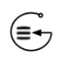

<!DOCTYPE html>
<html lang="en">
<head>
    <meta charset="UTF-8">
    <meta name="viewport" content="width=device-width, initial-scale=1.0">
    <title>Kinetica-Graph Explorer</title>
    <link rel="icon" type="image/png" href="kinetica_graph_logo.png">
    <link rel="preconnect" href="https://fonts.googleapis.com">
    <link href="https://fonts.googleapis.com/css2?family=DM+Sans:wght@400;500;600;700;800&display=swap" rel="stylesheet">
    <script src="https://cdn.jsdelivr.net/npm/chart.js@4.5.1"></script>
    <script src="https://d3js.org/d3.v7.min.js"></script>
    <script src="https://unpkg.com/force-graph@1.51.4"></script>
    <script src="https://cdn.jsdelivr.net/npm/@hpcc-js/wasm@2.13.0/dist/graphviz.umd.js"></script>
    <!-- deck.gl + MapLibre GL for geo graph visualization -->
    <script src="https://unpkg.com/deck.gl@9/dist.min.js"></script>
    <script src="https://unpkg.com/maplibre-gl@4/dist/maplibre-gl.js"></script>
    <link href="https://unpkg.com/maplibre-gl@4/dist/maplibre-gl.css" rel="stylesheet"/>
    <script src="https://unpkg.com/react@18/umd/react.production.min.js" crossorigin></script>
    <script src="https://unpkg.com/react-dom@18/umd/react-dom.production.min.js" crossorigin></script>
    <!-- Pinned to last Babel 7.x: Babel 8 (now "latest") defaults sourceType:"module" and
         emits `import` in the transformed output, which a classic <script> can't run.
         Do NOT change to an unpinned/8.x URL without re-testing the in-browser transform. -->
    <script src="https://unpkg.com/@babel/standalone@7.29.7/babel.min.js"></script>
    <style>
        *, *::before, *::after { box-sizing: border-box; margin: 0; padding: 0; }
        html, body, #root { height: 100%; overflow: hidden; }
        body { font-family: 'DM Sans', 'Segoe UI', Roboto, sans-serif; background: #f4f6f9; }

        @keyframes spin { 0% { transform: rotate(0deg); } 100% { transform: rotate(360deg); } }
        @keyframes fadeIn { from { opacity: 0; transform: translateY(12px); } to { opacity: 1; transform: translateY(0); } }
        @keyframes pulse { 0%,100% { opacity: 1; } 50% { opacity: 0.5; } }

        * { scrollbar-width: thin; scrollbar-color: #dfe6e9 transparent; }
        *::-webkit-scrollbar { width: 6px; }
        *::-webkit-scrollbar-thumb { background: #dfe6e9; border-radius: 3px; }

        .node-highlight ellipse, .node-highlight polygon, .node-highlight path { stroke: #0984e3 !important; stroke-width: 10px !important; transition: 0.3s; }
        .edge-highlight path { stroke: #0984e3 !important; stroke-width: 8px !important; transition: 0.3s; }
        .dimmed { opacity: 0.15 !important; transition: 0.3s; pointer-events: none; }
    </style>
</head>
<body>
<div id="root"></div>

<script type="text/babel">
const { useState, useEffect, useRef, useCallback, useMemo } = React;

/* ═══════════════════════ CONSTANTS ════════════════════════ */
const EXPLORER_VERSION = "7.2.3.18";  // Tied to Kinetica core-graph release tag (release/v7.2.3-ga-18). Run ./update-version.sh to auto-sync from latest git tag.
const SAFETY_TIMEOUT_MS = 10 * 60 * 1000;
const PALETTE = [
    { solid: '#0984e3', light: '#e1f0fb' }, { solid: '#00cec9', light: '#e0f9f8' },
    { solid: '#6c5ce7', light: '#f0eefc' }, { solid: '#fab1a0', light: '#fff1ed' },
    { solid: '#fdcb6e', light: '#fff7e9' }, { solid: '#e17055', light: '#fbeae4' },
    { solid: '#d63031', light: '#fbeaea' }, { solid: '#e84393', light: '#fcecf4' },
    { solid: '#2d3436', light: '#eaebec' }, { solid: '#b2bec3', light: '#f1f2f3' },
];
const DEFAULT_PROFILES = [
    { label: "Localhost", url: "http://127.0.0.1:9191", user: "", pass: "" },
    { label: "Demo72",   url: "https://demo72.kinetica.com/_gpudb", user: "", pass: "" },
];

/* ═══════════════════════ HELPERS ══════════════════════════ */
function formatElapsed(ms) {
    const s = Math.floor(ms / 1000);
    if (s < 60) return s + 's ago';
    if (s < 3600) return Math.floor(s / 60) + 'm ago';
    return Math.floor(s / 3600) + 'h ago';
}
function safeParse(str, fallback) {
    if (fallback === undefined) fallback = null;
    if (typeof str === 'object' && str !== null) return str;
    try { return JSON.parse(str); } catch(e) { return fallback; }
}

function extractGraphTable(originalRequest, graphName) {
    if (!originalRequest || !originalRequest.length) return null;
    var entry = originalRequest[0];
    if (typeof entry === "string") entry = safeParse(entry);
    if (!entry) return null;
    var statement = entry.statement || "";
    var match = statement.match(/graph_table\s*=\s*'([^']+)'/i);
    if (!match) return null;
    var tableName = match[1];
    // Prepend schema from graphName if table doesn't already have one
    if (tableName.indexOf('.') === -1 && graphName && graphName.indexOf('.') !== -1) {
        var schema = graphName.substring(0, graphName.indexOf('.'));
        tableName = schema + '.' + tableName;
    }
    return tableName;
}

// Extract the node source table and original ID column from the graph creation statement
// Parses NODES => INPUT_TABLES(...) looking for FROM <source_table> and <col> as NODE[_ID]
// Handles multiple sub-selects (constants + real table) by finding all FROM clauses
function extractNodeSourceTable(originalRequest, graphName) {
    if (!originalRequest || !originalRequest.length) return null;
    var entry = originalRequest[0];
    if (typeof entry === "string") entry = safeParse(entry);
    if (!entry) return null;
    var statement = entry.statement || "";
    // Find NODES => INPUT_TABLES(...) section — match from INPUT_TABLE( to the balancing )
    var nodesStart = statement.search(/NODES\s*=>\s*INPUT_TABLES?\s*\(/i);
    var nodesMatch = null;
    if (nodesStart >= 0) {
        var parenStart = statement.indexOf('(', nodesStart + 5);
        if (parenStart >= 0) {
            var depth = 1, pos = parenStart + 1;
            while (pos < statement.length && depth > 0) { if (statement[pos] === '(') depth++; else if (statement[pos] === ')') depth--; pos++; }
            if (depth === 0) nodesMatch = [null, statement.substring(parenStart + 1, pos - 1)];
        }
    }
    if (!nodesMatch) return null;
    var inner = nodesMatch[1];
    // Find all FROM <table> references — pick ones that look like real table names (word.word or word).
    // The char class includes `"` so quoted identifiers like FROM "kgr"."nodes" are captured;
    // the quotes are stripped from the captured name below.
    var fromRe = /FROM\s+([\w."]+)/gi;
    var m, tables = [];
    while ((m = fromRe.exec(inner)) !== null) {
        var t = m[1].replace(/"/g, '').replace(/\).*$/, '');
        if (t && t.toLowerCase() !== 'dual') tables.push(t);
    }
    if (tables.length === 0) return null;
    // Use the last real table found (earlier ones may be constants sub-selects)
    var tableName = tables[tables.length - 1];
    // Prepend schema if needed
    if (tableName.indexOf('.') === -1 && graphName && graphName.indexOf('.') !== -1) {
        var schema = graphName.substring(0, graphName.indexOf('.'));
        tableName = schema + '.' + tableName;
    }
    // Find original column aliased as NODE or NODE_ID in the sub-select containing that table
    var idCol = null;
    // Look for the SELECT that contains this table's FROM
    var lastTable = tables[tables.length - 1].replace(/[.]/g, '\\.');
    var subSelects = inner.split(/\(\s*select\b/i);
    for (var i = 0; i < subSelects.length; i++) {
        // Strip quotes from the sub-select before matching so quoted FROM "kgr"."nodes" lines up with the quote-stripped table name.
        if (subSelects[i].replace(/"/g, '').match(new RegExp('FROM\\s+' + lastTable, 'i'))) {
            var idMatch = subSelects[i].match(/(\w+)\s+as\s+NODE_ID\b/i) || subSelects[i].match(/(\w+)\s+as\s+NODE\b/i);
            if (idMatch) idCol = idMatch[1];
            break;
        }
    }
    // Fallback: probe the table for common ID column names
    if (!idCol) idCol = null; // will be resolved at fetch time
    return { table: tableName, idCol: idCol };
}

// Extract the edge source table and ID column from the graph creation statement
// Pull the WKT column name from a /show/table response — the most reliable
// signal because Kinetica tags geometry columns with the `wkt` property in the
// type schema. `resp` is the unwrapped /show/table inner JSON. Returns the
// first column whose `properties[0][col]` array includes 'wkt', or null.
function detectWktColumnFromShowTable(resp) {
    if (!resp) return null;
    var props = resp.properties || (resp[0] && resp[0].properties);
    if (!props || !props.length) return null;
    var colMap = props[0] || {};
    var cols = Object.keys(colMap);
    for (var i = 0; i < cols.length; i++) {
        var arr = colMap[cols[i]] || [];
        for (var j = 0; j < arr.length; j++) {
            if (String(arr[j]).toLowerCase() === 'wkt') return cols[i];
        }
    }
    return null;
}

// Auto-detect a WKT geometry column from a sampled record. Two-stage:
//   1. Prefer canonical Kinetica geometry column names (case-insensitive match).
//   2. Fall back to ANY column whose first row value starts with a WKT token —
//      handles custom names (geom, geometry, the_geom, track, route, …) so
//      `SELECT * FROM <foo>` create statements still get a usable GEO_ATTR.
// Returns the source column name (preserving case) or null if no match.
function detectWktColumn(record) {
    if (!record) return null;
    var cols = Object.keys(record);
    var WKT_RE = /^\s*(POINT|LINESTRING|POLYGON|MULTIPOINT|MULTILINESTRING|MULTIPOLYGON)\s*\(/i;
    var isWktVal = function(v) { return typeof v === 'string' && WKT_RE.test(v); };
    var canonical = ['WKTLINE', 'EDGE_WKTLINE', 'NODE1_WKTPOINT', 'EDGE_NODE1_WKTPOINT', 'WKT', 'wkt', 'kiGeometry', 'geom', 'geometry', 'the_geom'];
    var byName = resolveCol(cols, canonical);
    if (byName && isWktVal(record[byName])) return byName;
    for (var i = 0; i < cols.length; i++) {
        if (isWktVal(record[cols[i]])) return cols[i];
    }
    return null;
}

function extractEdgeSourceTable(originalRequest, graphName) {
    if (!originalRequest || !originalRequest.length) return null;
    var entry = originalRequest[0];
    if (typeof entry === "string") entry = safeParse(entry);
    if (!entry) return null;
    var statement = entry.statement || "";
    var edgesStart = statement.search(/EDGES\s*=>\s*INPUT_TABLES?\s*\(/i);
    var edgesMatch = null;
    if (edgesStart >= 0) {
        var ePStart = statement.indexOf('(', edgesStart + 5);
        if (ePStart >= 0) {
            var eDepth = 1, ePos = ePStart + 1;
            while (ePos < statement.length && eDepth > 0) { if (statement[ePos] === '(') eDepth++; else if (statement[ePos] === ')') eDepth--; ePos++; }
            if (eDepth === 0) edgesMatch = [null, statement.substring(ePStart + 1, ePos - 1)];
        }
    }
    if (!edgesMatch) return null;
    var inner = edgesMatch[1];
    // Char class includes `"` so quoted identifiers like FROM "kgr"."edges" are captured; quotes stripped below.
    var fromRe = /FROM\s+([\w."]+)/gi;
    var m, tables = [];
    while ((m = fromRe.exec(inner)) !== null) {
        var t = m[1].replace(/"/g, '').replace(/\).*$/, '');
        if (t && t.toLowerCase() !== 'dual') tables.push(t);
    }
    if (tables.length === 0) return null;
    var tableName = tables[tables.length - 1];
    if (tableName.indexOf('.') === -1 && graphName && graphName.indexOf('.') !== -1) {
        var schema = graphName.substring(0, graphName.indexOf('.'));
        tableName = schema + '.' + tableName;
    }
    var idMatch = inner.match(/(\w+)\s+as\s+(?:EDGE_ID|ID)\b/i);
    var idCol = idMatch ? idMatch[1] : null;
    // Extract WKT geometry column from any of the valid CREATE GRAPH EDGES
    // aliases. Order doesn't matter (regex returns first source-position match);
    // the full list is: full-line (EDGE_WKTLINE / WKTLINE), single point
    // (EDGE_WKTPOINT / WKTPOINT), and the start/end endpoint pair
    // (EDGE_NODE1_WKTPOINT / NODE1_WKTPOINT, EDGE_NODE2_WKTPOINT / NODE2_WKTPOINT).
    var wktMatch = inner.match(/(\w+)\s+as\s+(?:EDGE_WKTLINE|WKTLINE|EDGE_WKTPOINT|WKTPOINT|EDGE_NODE1_WKTPOINT|NODE1_WKTPOINT|EDGE_NODE2_WKTPOINT|NODE2_WKTPOINT)\b/i);
    var wktCol = wktMatch ? wktMatch[1] : null;
    // Extract label column (aliased as LABEL or EDGE_LABEL)
    // Handles: "col AS LABEL", "func(col) AS LABEL", "CAST(col AS type) AS LABEL"
    var labelMatch = inner.match(/(?:(\w+)|(?:\w+\((\w+)\))|(?:CAST\((\w+)\s))\s+as\s+(?:EDGE_LABEL|LABEL)\b/i);
    var labelCol = labelMatch ? (labelMatch[1] || labelMatch[2] || labelMatch[3]) : null;
    return { table: tableName, idCol: idCol, wktCol: wktCol, labelCol: labelCol };
}

// Resolve column name from headers, trying multiple variants (e.g. NODE1_NAME or EDGE_NODE1_NAME)
function resolveCol(headers, candidates) {
    for (var i = 0; i < candidates.length; i++) {
        for (var j = 0; j < headers.length; j++) {
            if (headers[j].toUpperCase() === candidates[i].toUpperCase()) return headers[j];
        }
    }
    return null;
}

/* ═══════════════════ HOOK: useKineticaApi ═════════════════ */
function useKineticaApi() {
    const abortRef   = useRef(null);
    const timeoutRef = useRef(null);
    const [loading, setLoading] = useState(false);

    const cancel = useCallback(function() {
        if (abortRef.current)   abortRef.current.abort();
        if (timeoutRef.current) clearTimeout(timeoutRef.current);
        setLoading(false);
    }, []);

    const request = useCallback(async function(url, body, creds) {
        cancel();
        setLoading(true);
        abortRef.current = new AbortController();
        timeoutRef.current = setTimeout(function() { cancel(); if(typeof showToast==='function') showToast('23F0 Request timed out (10 min).', 'error'); else alert('Request timed out.'); }, SAFETY_TIMEOUT_MS);

        var headers = { "Content-Type": "application/json" };
        if (creds.user || creds.pass) {
            headers["Authorization"] = "Basic " + btoa(creds.user + ":" + creds.pass);
        }
        try {
            var res = await fetch(url, { method: "POST", headers: headers, body: JSON.stringify(body), signal: abortRef.current.signal });
            if (!res.ok) {
                var errText = await res.text().catch(function() { return res.statusText; });
                throw new Error("HTTP " + res.status + ": " + errText);
            }
            return await res.json();
        } catch(err) {
            if (err.name === 'AbortError') return { _cancelled: true };
            throw err;
        } finally {
            clearTimeout(timeoutRef.current);
            setLoading(false);
        }
    }, [cancel]);

    useEffect(function() { return function() { cancel(); }; }, [cancel]);
    return { request: request, loading: loading, cancel: cancel };
}

/* ═══════════════════ LoaderOverlay ════════════════════════ */

/* ═══════════════════ CornerHandle (resize from corner) ═══ */
function CornerHandle(props) {
    var onDrag = props.onDrag;
    const [active, setActive] = useState(false);
    const [hover, setHover] = useState(false);

    var handleMouseDown = function(e) {
        e.preventDefault();
        e.stopPropagation();
        setActive(true);
        var lastX = e.clientX, lastY = e.clientY;
        document.body.style.cursor = "nwse-resize";
        document.body.style.userSelect = "none";
        var onMove = function(ev) {
            var dx = ev.clientX - lastX;
            var dy = ev.clientY - lastY;
            lastX = ev.clientX;
            lastY = ev.clientY;
            if (onDrag) onDrag(dx, dy);
        };
        var onUp = function() {
            setActive(false);
            document.body.style.cursor = "";
            document.body.style.userSelect = "";
            document.removeEventListener("mousemove", onMove);
            document.removeEventListener("mouseup", onUp);
        };
        document.addEventListener("mousemove", onMove);
        document.addEventListener("mouseup", onUp);
    };

    var show = active || hover;
    return (
        <div onMouseDown={handleMouseDown}
            onMouseEnter={function(){ setHover(true); }}
            onMouseLeave={function(){ setHover(false); }}
            style={{
                position: "absolute",
                left: "calc(" + ((props.hSplit || 0.65) * 100) + "% - 10px)",
                top: "calc(" + ((props.vSplit || 0.5) * 100) + "% - 10px)",
                width: 20, height: 20, cursor: "nwse-resize",
                zIndex: 20, display: "flex", alignItems: "center", justifyContent: "center",
                background: show ? "rgba(9,132,227,0.15)" : "transparent",
                borderRadius: 4, transition: "background 0.15s",
            }}
        >
            <div style={{
                width: 10, height: 10,
                borderRight: "3px solid " + (show ? "#0984e3" : "#bbb"),
                borderBottom: "3px solid " + (show ? "#0984e3" : "#bbb"),
                transition: "border-color 0.15s",
            }}/>
        </div>
    );
}

/* ═══════════════════ SplitPane (resizable) ═══════════════ */
function SplitPane(props) {
    var direction = props.direction || "horizontal";
    var initialSplit = props.initialSplit || 0.65;
    var minA = props.minA || 100;
    var minB = props.minB || 100;
    var controlledSplit = props.split;
    var onSplitChange = props.onSplitChange;
    var children = React.Children.toArray(props.children);
    if (children.length < 2) return <div style={{ flex:1 }}>{children[0]}</div>;

    const [internalSplit, setInternalSplit] = useState(initialSplit);
    var split = controlledSplit !== undefined ? controlledSplit : internalSplit;
    var setSplit = onSplitChange || setInternalSplit;
    const [isDragging, setIsDragging] = useState(false);
    const containerRef = useRef(null);

    var handleMouseDown = function(e) {
        e.preventDefault();
        setIsDragging(true);
        var isH = direction === "horizontal";
        document.body.style.cursor = isH ? "col-resize" : "row-resize";
        document.body.style.userSelect = "none";
        var onMove = function(ev) {
            if (!containerRef.current) return;
            var rect = containerRef.current.getBoundingClientRect();
            var pos = isH ? ev.clientX - rect.left : ev.clientY - rect.top;
            var size = isH ? rect.width : rect.height;
            var ratio = Math.max(minA / size, Math.min(1 - minB / size, pos / size));
            setSplit(ratio);
        };
        var onUp = function() {
            setIsDragging(false);
            document.body.style.cursor = "";
            document.body.style.userSelect = "";
            document.removeEventListener("mousemove", onMove);
            document.removeEventListener("mouseup", onUp);
        };
        document.addEventListener("mousemove", onMove);
        document.addEventListener("mouseup", onUp);
    };

    // Double-click to reset
    var handleDblClick = function() { setSplit(initialSplit); };

    var isH = direction === "horizontal";

    // Grip dots for visual affordance
    var gripDots = isH
        ? <div style={{ display:"flex", flexDirection:"column", gap:3, alignItems:"center", justifyContent:"center", height:"100%" }}>
            <div style={{ width:3, height:3, borderRadius:"50%", background:"#999" }}/>
            <div style={{ width:3, height:3, borderRadius:"50%", background:"#999" }}/>
            <div style={{ width:3, height:3, borderRadius:"50%", background:"#999" }}/>
            <div style={{ width:3, height:3, borderRadius:"50%", background:"#999" }}/>
            <div style={{ width:3, height:3, borderRadius:"50%", background:"#999" }}/>
          </div>
        : <div style={{ display:"flex", gap:3, alignItems:"center", justifyContent:"center", width:"100%" }}>
            <div style={{ width:3, height:3, borderRadius:"50%", background:"#999" }}/>
            <div style={{ width:3, height:3, borderRadius:"50%", background:"#999" }}/>
            <div style={{ width:3, height:3, borderRadius:"50%", background:"#999" }}/>
            <div style={{ width:3, height:3, borderRadius:"50%", background:"#999" }}/>
            <div style={{ width:3, height:3, borderRadius:"50%", background:"#999" }}/>
          </div>;

    return (
        <div ref={containerRef} style={{ display:"flex", flexDirection: isH ? "row" : "column", flex:1, minHeight:0, minWidth:0, overflow:"hidden" }}>
            <div style={isH
                ? { width: (split * 100) + "%", minWidth: minA, display:"flex", flexDirection:"column", overflow:"hidden" }
                : { height: (split * 100) + "%", minHeight: minA, display:"flex", flexDirection:"column", overflow:"hidden" }
            }>
                {children[0]}
            </div>
            <div
                onMouseDown={handleMouseDown}
                onDoubleClick={handleDblClick}
                style={{
                    flex: "0 0 8px",
                    background: isDragging ? "#0984e3" : "#e8eaed",
                    cursor: isH ? "col-resize" : "row-resize",
                    borderRadius: 4,
                    transition: isDragging ? "none" : "background 0.2s",
                    position: "relative",
                    zIndex: 2,
                    display: "flex",
                    alignItems: "center",
                    justifyContent: "center",
                }}
                onMouseEnter={function(e){ if (!isDragging) e.currentTarget.style.background = "#0984e3"; }}
                onMouseLeave={function(e){ if (!isDragging) e.currentTarget.style.background = "#e8eaed"; }}
            >
                {gripDots}
            </div>
            <div style={isH
                ? { flex:1, minWidth: minB, display:"flex", flexDirection:"column", overflow:"hidden" }
                : { flex:1, minHeight: minB, display:"flex", flexDirection:"column", overflow:"hidden" }
            }>
                {children[1]}
            </div>
        </div>
    );
}

/* ═══════════════════ Label helper ════════════════════════ */
function Label(props) {
    return <label style={{ display:'block', fontSize:10, fontWeight:700, color:'#636e72', marginBottom:5, textTransform:'uppercase', letterSpacing:0.8 }}>{props.children}</label>;
}

/* ═══════════════════ Sidebar ═════════════════════════════ */
function Sidebar(props) {
    var onConnect = props.onConnect, onClearGraphs = props.onClearGraphs, graphs = props.graphs, graphSizes = props.graphSizes || {}, activeGraph = props.activeGraph, onSelectGraph = props.onSelectGraph, loading = props.loading, onLoad = props.onLoad, onSave = props.onSave, autoRunQueries = props.autoRunQueries, onToggleAutoRun = props.onToggleAutoRun;
    var collapsed = !!props.collapsed, onToggleCollapsed = props.onToggleCollapsed;
    var tables = props.tables || [], listMode = props.listMode || 'graphs', onChangeListMode = props.onChangeListMode;
    var onSelectTable = props.onSelectTable, onContextItem = props.onContextItem;
    const [profileIdx, setProfileIdx] = useState(0);
    const [url,  setUrl]  = useState(DEFAULT_PROFILES[0].url);
    const [user, setUser] = useState(DEFAULT_PROFILES[0].user);
    const [pass, setPass] = useState(DEFAULT_PROFILES[0].pass);
    const [showPass, setShowPass] = useState(false);
    const [status, setStatus] = useState({ text:'', error:false });
    const [filter, setFilter] = useState('');
    // Sidebar sort: 'name' (alphabetical) or 'size' (edges desc). Clicking the
    // small toggle cycles between the two. Applies to the Graphs list only.
    const [sortMode, setSortMode] = useState('name');
    var compactNum = function(n) {
        n = Number(n) || 0;
        if (n < 1000) return String(n);
        if (n < 1e6) return (n / 1e3).toFixed(n < 1e4 ? 1 : 0).replace(/\.0$/, '') + 'k';
        if (n < 1e9) return (n / 1e6).toFixed(n < 1e7 ? 1 : 0).replace(/\.0$/, '') + 'M';
        return (n / 1e9).toFixed(1).replace(/\.0$/, '') + 'B';
    };

    var handleProfile = function(e) {
        var idx = parseInt(e.target.value);
        setProfileIdx(idx);
        if (idx < DEFAULT_PROFILES.length) {
            var p = DEFAULT_PROFILES[idx];
            setUrl(p.url); setUser(p.user); setPass(p.pass);
        } else { setUrl(''); setUser(''); setPass(''); }
        if (onClearGraphs) onClearGraphs();
    };

    var handleUrlChange = function(e) {
        setUrl(e.target.value);
        if (onClearGraphs) onClearGraphs();
    };

    var handleConnect = async function() {
        setStatus({ text:'Connecting…', error:false });
        try {
            await onConnect({ url: url.replace(/\/+$/, ''), user: user, pass: pass });
            setStatus({ text:'Connected.', error:false });
        } catch(err) {
            setStatus({ text: err.message, error:true });
        }
    };

    var inp = { width:'100%', padding:'10px 12px', border:'1px solid #dfe6e9', borderRadius:6, boxSizing:'border-box', fontSize:13, marginBottom:10, background:'#fff', outline:'none', fontFamily:'inherit' };

    // Docs link: optimistic-show, hide only on a definitive 404. fetch from one
    // file:// URL to another is blocked by browser security (no status returned),
    // so we default to visible and only hide if the server responds with 404 —
    // i.e., the file is genuinely missing in a deployed context. Click goes to a
    // 404 page if missing locally, which is the best we can do under file://.
    const DOCS_REL_URL = '../document/Kinetica_Graph_User_Guide.html';
    const [docsAvailable, setDocsAvailable] = useState(true);
    useEffect(function() {
        // Skip the HEAD probe entirely on file:// — Chrome logs a CORS error even
        // when both files are on the local disk. Optimistic-show in that case;
        // clicking the link still navigates the browser to the file directly.
        if (typeof window !== 'undefined' && window.location && window.location.protocol === 'file:') return;
        var cancelled = false;
        fetch(DOCS_REL_URL, { method: 'HEAD' })
            .then(function(r) {
                if (!cancelled && r && r.status === 404) setDocsAvailable(false);
            })
            .catch(function() { /* network error — leave optimistic */ });
        return function() { cancelled = true; };
    }, []);

    // SVG chevron tab — sits half on the sidebar's right border so it reads as a
    // divider handle, like an IDE's collapse rail. Direction flips with state.
    // Uses position: fixed because the sidebar's overflowY: auto would otherwise
    // clip an absolutely-positioned overflowing child.
    var collapseHandleLeft = collapsed ? 16 : 308;  // (sidebar width) - half of handle
    var collapseHandle = onToggleCollapsed ? (
        <button onClick={onToggleCollapsed} title={collapsed ? 'Expand sidebar' : 'Collapse sidebar — reclaim space for the workspace'} style={{
            position:'fixed', left: collapseHandleLeft, top:'50%', transform:'translateY(-50%)', zIndex:12,
            width:24, height:56, padding:0,
            border:'1px solid #dfe6e9', borderLeft:'none',
            borderRadius:'0 8px 8px 0',
            cursor:'pointer', background:'#fff', color:'#0984e3',
            display:'flex', alignItems:'center', justifyContent:'center',
            boxShadow:'2px 0 6px rgba(0,0,0,0.08)',
        }}>
            <svg width="10" height="16" viewBox="0 0 10 16" style={{ display:'block' }}>
                <polyline
                    points={collapsed ? '3,2 8,8 3,14' : '7,2 2,8 7,14'}
                    fill="none" stroke="currentColor" strokeWidth="1.6" strokeLinecap="round" strokeLinejoin="round"/>
            </svg>
        </button>
    ) : null;
    // Collapsed sidebar: a thin vertical rail with the expand handle on its
    // right edge so the workspace gets the full window width.
    if (collapsed) {
        return (
            <div style={{ width:28, minWidth:28, background:'#fff', borderRight:'1px solid #dfe6e9', display:'flex', flexDirection:'column', alignItems:'center', padding:'10px 0', boxShadow:'2px 0 8px rgba(0,0,0,0.04)', zIndex:10, height:'100vh', boxSizing:'border-box', flexShrink:0 }}>
                {collapseHandle}
                {/* Vertical "Graph Explorer" label so the user can read what they collapsed. */}
                <div style={{ writingMode:'vertical-rl', transform:'rotate(180deg)', marginTop:18, fontWeight:700, fontSize:11, color:'#b2bec3', letterSpacing:1, userSelect:'none' }}>Graph Explorer</div>
            </div>
        );
    }
    return (
        <div style={{ width:320, minWidth:320, background:'#fff', borderRight:'1px solid #dfe6e9', display:'flex', flexDirection:'column', padding:20, boxShadow:'2px 0 8px rgba(0,0,0,0.04)', zIndex:10, height:'100vh', boxSizing:'border-box', overflowY:'auto' }}>
            {collapseHandle}
            <div style={{ display:'flex', alignItems:'center', gap:10, marginBottom:24, flexShrink:0 }}>
                
                <span style={{ fontWeight:700, fontSize:17, color:'#0984e3', letterSpacing:-0.3 }}>Graph Explorer</span>
                <span style={{ fontSize:13, color:'#b2bec3', fontWeight:700 }}>v{EXPLORER_VERSION}</span>
                {docsAvailable && (
                    <a href={DOCS_REL_URL} target="_blank" rel="noopener noreferrer" title="Open Kinetica Graph User Guide in a new tab" style={{ marginLeft:'auto', padding:'4px 10px', borderRadius:6, fontSize:11, fontWeight:700, color:'#fff', background:'#0984e3', textDecoration:'none', whiteSpace:'nowrap' }}>
                        {'📖'} Docs
                    </a>
                )}
            </div>

            <div style={{ marginBottom:20, flexShrink:0 }}>
                <Label>Profile</Label>
                <select value={profileIdx} onChange={handleProfile} style={Object.assign({}, inp, { cursor:'pointer' })}>
                    {DEFAULT_PROFILES.map(function(p,i) { return <option key={i} value={i}>{p.label}</option>; })}
                    <option value={DEFAULT_PROFILES.length}>— Custom —</option>
                </select>

                <Label>Server URL</Label>
                <input style={inp} value={url} onChange={handleUrlChange} placeholder="https://..." />

                <Label>Username</Label>
                <input style={inp} value={user} onChange={function(e){ setUser(e.target.value); }} />

                <Label>Password</Label>
                <div style={{ position:'relative' }}>
                    <input style={inp} type={showPass ? 'text' : 'password'} value={pass} onChange={function(e){ setPass(e.target.value); }} />
                    <span onClick={function(){ setShowPass(!showPass); }} style={{ position:'absolute', right:10, top:8, cursor:'pointer', fontSize:16, userSelect:'none' }}>{showPass ? '🙈' : '👁️'}</span>
                </div>

                <button onClick={handleConnect} disabled={loading || !url} style={{
                    width:'100%', padding:'11px 0', border:'none', borderRadius:6, cursor: loading ? 'not-allowed':'pointer',
                    fontWeight:700, color:'#fff', fontSize:13, fontFamily:'inherit',
                    background: loading ? '#74b9ff' : 'linear-gradient(135deg,#0984e3,#0872c4)', transition:'0.2s',
                }}>
                    {loading ? 'Connecting…' : 'Connect & List'}
                </button>
                {status.text && <p style={{ marginTop:8, fontSize:12, color: status.error ? '#d63031':'#00b894', fontWeight:600 }}>{status.text}</p>}
            </div>

            {(graphs.length > 0 || tables.length > 0) && onChangeListMode && (
                <div style={{ display:'flex', alignItems:'center', gap:6, marginTop:4, marginBottom:2 }}>
                    <div style={{ display:'inline-flex', alignItems:'center', gap:1, background:'#f1f2f6', padding:'2px 4px', borderRadius:6 }}>
                        {['graphs','tables'].map(function(m) {
                            var active = listMode === m;
                            var label = m === 'graphs' ? 'Graphs' : 'Tables';
                            var count = m === 'graphs' ? graphs.length : tables.length;
                            return <span key={m} onClick={function(){ onChangeListMode(m); setFilter(''); }} style={{ fontSize:10, fontWeight:700, cursor:'pointer', padding:'3px 8px', borderRadius:4, color: active ? '#fff' : '#636e72', background: active ? '#0984e3' : 'transparent', userSelect:'none' }}>{label} <span style={{ opacity:0.7 }}>{count}</span></span>;
                        })}
                    </div>
                    <input value={filter} onChange={function(e){ setFilter(e.target.value); }} placeholder="Filter…" style={{ flex:1, padding:'4px 8px', border:'1px solid #dfe6e9', borderRadius:6, fontSize:11, background:'#fff', outline:'none', fontFamily:'inherit', minWidth:0 }}/>
                    {filter && <span onClick={function(){ setFilter(''); }} title="Clear filter" style={{ fontSize:10, color:'#636e72', cursor:'pointer', padding:'2px 4px', userSelect:'none' }}>{'✕'}</span>}
                    {listMode === 'graphs' && <span onClick={function(){ setSortMode(function(p){ return p === 'name' ? 'size' : 'name'; }); }} title={'Sort by ' + (sortMode === 'name' ? 'size (edges, desc)' : 'name (alphabetical)') + ' — click to toggle'} style={{ fontSize:10, fontWeight:700, color:'#636e72', cursor:'pointer', padding:'2px 6px', userSelect:'none', border:'1px solid #dfe6e9', borderRadius:4, background:'#fff' }}>{sortMode === 'name' ? 'A↓Z' : '#↓'}</span>}
                </div>
            )}
            {(function() {
                var fn = (filter || '').trim().toLowerCase();
                var filteredGraphs = fn ? graphs.filter(function(n){ return n.toLowerCase().indexOf(fn) >= 0; }) : graphs.slice();
                if (sortMode === 'size') {
                    filteredGraphs.sort(function(a, b){
                        var ea = (graphSizes[a] && graphSizes[a].edges) || 0;
                        var eb = (graphSizes[b] && graphSizes[b].edges) || 0;
                        if (eb !== ea) return eb - ea;
                        return a.localeCompare(b);
                    });
                } else {
                    filteredGraphs.sort(function(a, b){ return a.localeCompare(b); });
                }
                var filteredTables = fn ? tables.filter(function(t){ return t.name.toLowerCase().indexOf(fn) >= 0; }) : tables;
                var emptyMsg = graphs.length === 0 && tables.length === 0 ? 'No active connection'
                              : fn ? 'No matches'
                              : (listMode === 'tables' ? 'No tables' : 'No graphs');
                return (
                    <div style={{ flexGrow:1, overflowY:'auto', border:'1px solid #eee', borderRadius:8, marginTop:6 }}>
                        {(listMode === 'graphs' ? filteredGraphs.length : filteredTables.length) === 0
                            ? <p style={{ padding:24, color:'#b2bec3', fontSize:12, textAlign:'center' }}>{emptyMsg}</p>
                            : (listMode === 'graphs' ? filteredGraphs.map(function(name) {
                                var sz = graphSizes[name];
                                var edges = sz ? sz.edges : 0;
                                var nodes = sz ? sz.nodes : 0;
                                var sizeTitle = sz ? (nodes.toLocaleString() + ' nodes, ' + edges.toLocaleString() + ' edges') : '';
                                return (
                                    <div key={name} onClick={function(){ onSelectGraph(name); }}
                                        onContextMenu={function(e){ e.preventDefault(); if (onContextItem) onContextItem({ kind:'graph', name: name, x: e.clientX, y: e.clientY }); }} style={{
                                        padding:'10px 14px', borderBottom:'1px solid #f1f2f6', cursor:'pointer', fontSize:13, transition:'0.15s',
                                        fontWeight: activeGraph===name ? 700:400, background: activeGraph===name ? '#eef2f7':'transparent',
                                        color: activeGraph===name ? '#0984e3':'#2d3436', borderLeft: activeGraph===name ? '4px solid #0984e3':'4px solid transparent',
                                        display:'flex', alignItems:'center', gap:8,
                                    }}>
                                        <span style={{ flex:1, overflow:'hidden', textOverflow:'ellipsis', whiteSpace:'nowrap' }}>{name}</span>
                                        {sz && <span title={sizeTitle} style={{ flexShrink:0, fontSize:10, fontWeight:600, color:'#00b894', background:'#e6f9f3', padding:'1px 6px', borderRadius:8, fontFamily:'inherit' }}>{compactNum(edges)}</span>}
                                    </div>
                                );
                            }) : filteredTables.map(function(t) {
                                var iconColor = t.type === 'collection' ? '#6c5ce7' : t.type === 'view' ? '#00b894' : '#636e72';
                                return (
                                    <div key={t.name} onClick={function(){ if (onSelectTable) onSelectTable(t.name); }}
                                        onContextMenu={function(e){ e.preventDefault(); if (onContextItem) onContextItem({ kind:'table', name: t.name, x: e.clientX, y: e.clientY }); }} style={{
                                        padding:'12px 14px', borderBottom:'1px solid #f1f2f6', cursor:'pointer', fontSize:13, transition:'0.15s',
                                        fontWeight:400, color:'#2d3436', borderLeft:'4px solid transparent', display:'flex', alignItems:'center', gap:8,
                                    }} title={t.type}>
                                        <span style={{ width:6, height:6, borderRadius:'50%', background: iconColor, flexShrink:0 }}/>
                                        <span style={{ overflow:'hidden', textOverflow:'ellipsis' }}>{t.name}</span>
                                    </div>
                                );
                            }))
                        }
                    </div>
                );
            })()}
            {graphs.length > 0 && (
                <div style={{ marginTop:10, display:'flex', flexDirection:'column', gap:6, flexShrink:0 }}>
                    {onLoad && (
                        <label title="Load a previously saved session from a JSON file" style={{
                            display:'block', padding:'10px 0', border:'none', borderRadius:6,
                            cursor:'pointer', fontWeight:700, color:'#fff', background:'#636e72',
                            fontSize:12, fontFamily:'inherit', textAlign:'center',
                        }}>
                            Load Session<input type="file" accept=".json" style={{ display:'none' }} onChange={function(e){ if (e.target.files[0]) { onLoad(e.target.files[0]); e.target.value = ''; } }} />
                        </label>
                    )}
                    {onSave && (
                        <button onClick={onSave} title="Save current session (graph, labels, queries) to a JSON file" style={{
                            padding:'10px 0', border:'none', borderRadius:6,
                            cursor:'pointer', fontWeight:700, color:'#fff', background:'#636e72',
                            fontSize:12, fontFamily:'inherit', textAlign:'center', width:'100%',
                        }}>Save Session</button>
                    )}
                    {onToggleAutoRun && (
                        <div onClick={onToggleAutoRun} title="Auto-run queries on session load: when ON, restored queries execute automatically and show visualizations" style={{
                            display:'flex', alignItems:'center', justifyContent:'center', gap:6,
                            padding:'6px 0', background:'#f1f2f6', borderRadius:6, cursor:'pointer', userSelect:'none',
                        }}>
                            <span style={{ fontSize:11, fontWeight:700, color: autoRunQueries ? '#6c5ce7':'#636e72' }}>Auto-run Queries</span>
                            <div style={{ width:28, height:14, borderRadius:20, position:'relative', background: autoRunQueries ? '#6c5ce7':'#ccc', transition:'0.2s' }}>
                                <div style={{ width:10, height:10, borderRadius:'50%', background:'#fff', position:'absolute', top:2, left: autoRunQueries ? 16:2, transition:'0.2s' }}/>
                            </div>
                        </div>
                    )}
                </div>
            )}
        </div>
    );
}

/* ═══════════════════ SummaryCards ═════════════════════════ */
function SummaryCards(props) {
    var data = props.data;
    var numNodeLabels = (data.node_labels || []).length;
    var numEdgeLabels = (data.edge_labels || []).length;
    var items = [
        { label:'LABELED NODES',   value: data.total_labeled_nodes, sub: numNodeLabels + ' label' + (numNodeLabels !== 1 ? 's' : '') },
        { label:'UNLABELED NODES', value: data.total_unlabeled_nodes },
        { label:'LABELED EDGES',   value: data.total_labeled_edges, sub: numEdgeLabels + ' label' + (numEdgeLabels !== 1 ? 's' : '') },
        { label:'UNLABELED EDGES', value: data.total_unlabeled_edges },
    ];
    return (
        <div style={{ background:'#fff', borderRadius:12, boxShadow:'0 2px 8px rgba(0,0,0,0.04)', padding:'12px 14px', marginBottom:0, borderLeft:'6px solid #6c5ce7', display:'grid', gridTemplateColumns:'repeat(auto-fit, minmax(90px, 1fr))', gap:12, alignItems:'center' }}>
            {items.map(function(item) {
                return (
                    <div key={item.label}>
                        <p style={{ margin:0, fontSize:10, color:'#636e72', fontWeight:600, letterSpacing:0.5 }}>{item.label}</p>
                        <h3 style={{ margin:'3px 0 0', fontSize:14, fontWeight:800, color:'#2d3436' }}>{(item.value||0).toLocaleString()}</h3>
                        {item.sub && <p style={{ margin:'2px 0 0', fontSize:9, color:'#0984e3', fontWeight:600 }}>{item.sub}</p>}
                    </div>
                );
            })}
        </div>
    );
}

/* ═══════════════════ LabelChart (doughnut + table) ═══════ */
function LabelChart(props) {
    var title = props.title, items = props.items, total = props.total, pickingEnabled = props.pickingEnabled, onHoverLabels = props.onHoverLabels, selectedLabels = props.selectedLabels || [], onToggleLabel = props.onToggleLabel;
    const canvasRef = useRef(null);
    const chartRef  = useRef(null);
    const [highlightIdx, setHighlightIdx] = useState(null);
    const [sortMode, setSortMode] = useState('count'); // 'count' | 'alpha'
    const sorted = useMemo(function() { return [].concat(items||[]).sort(function(a,b){ return b.count - a.count; }); }, [items]);
    // Build a color index map: label string → palette index (based on count sort, matching the chart)
    var colorIdxMap = useMemo(function() {
        var map = {};
        sorted.forEach(function(item, idx) {
            var labelStr = item.labels && item.labels.length ? item.labels.join(', ') : 'None';
            map[labelStr] = idx;
        });
        return map;
    }, [sorted]);
    var tableSorted = useMemo(function() {
        if (sortMode === 'alpha') {
            return [].concat(sorted).sort(function(a, b) {
                var la = a.labels && a.labels.length ? a.labels.join(', ') : 'None';
                var lb = b.labels && b.labels.length ? b.labels.join(', ') : 'None';
                return la.localeCompare(lb);
            });
        }
        return sorted;
    }, [sorted, sortMode]);

    useEffect(function() {
        if (!canvasRef.current) return;
        if (chartRef.current) chartRef.current.destroy();

        var labels = sorted.map(function(i){ return i.labels && i.labels.length ? i.labels.join(', ') : 'None'; });
        var counts = sorted.map(function(i){ return i.count||0; });
        var colors = sorted.map(function(_,idx){ return PALETTE[idx % PALETTE.length].solid; });

        chartRef.current = new Chart(canvasRef.current, {
            type: 'doughnut',
            data: { labels: labels, datasets: [{ data: counts, backgroundColor: colors, borderWidth:1 }] },
            options: {
                responsive:true, maintainAspectRatio:false, cutout:'75%',
                plugins: { legend: { display:false } },
                onHover: function(_event, elements) {
                    if (!pickingEnabled) return;
                    if (elements.length > 0) {
                        var idx = elements[0].index;
                        setHighlightIdx(idx);
                        if (onHoverLabels) onHoverLabels(sorted[idx].labels);
                    } else {
                        setHighlightIdx(null);
                        if (onHoverLabels) onHoverLabels(null);
                    }
                },
                onClick: function(_event, elements) {
                    if (elements.length > 0) {
                        var idx = elements[0].index;
                        if (onToggleLabel && sorted[idx].labels && sorted[idx].labels.length) {
                            onToggleLabel(sorted[idx].labels.slice().sort().join('|'));
                        }
                    }
                },
            },
        });
        return function() { if (chartRef.current) chartRef.current.destroy(); };
    }, [sorted, pickingEnabled]);

    var handleRowEnter = function(idx) {
        if (!pickingEnabled || !chartRef.current) return;
        setHighlightIdx(idx);
        chartRef.current.setActiveElements([{ datasetIndex:0, index:idx }]);
        chartRef.current.update();
        if (onHoverLabels) onHoverLabels(sorted[idx].labels);
    };
    var handleRowLeave = function() {
        if (!pickingEnabled || !chartRef.current) return;
        setHighlightIdx(null);
        chartRef.current.setActiveElements([]);
        chartRef.current.update();
        if (onHoverLabels) onHoverLabels(null);
    };

    return (
        <div style={{ background:'#fff', borderRadius:12, boxShadow:'0 2px 8px rgba(0,0,0,0.04)', padding:10, minWidth:0, flex:1, display:'flex', flexDirection:'column', overflow:'hidden', minHeight:0 }}>
            <div style={{ display:"flex", justifyContent:"space-between", alignItems:"center", marginBottom:12 }}><h2 style={{ margin:0, fontSize:14, fontWeight:700, color:"#2d3436" }}>{title}</h2>{selectedLabels.length > 0 && <button onClick={function(){ selectedLabels.forEach(function(l){ onToggleLabel(l); }); }} style={{ border:"none", background:"#d63031", color:"#fff", fontSize:10, fontWeight:700, borderRadius:6, padding:"4px 10px", cursor:"pointer", fontFamily:"inherit" }}>Clear Selection</button>}</div>
            <div style={{ position:'relative', flex:'1 1 0', minHeight:80 }}><canvas ref={canvasRef}/></div>
            <div style={{ flex:'1 1 0', minHeight:60, overflowY:'auto', border:'1px solid #eee', borderRadius:8, marginTop:14 }}>
                <table style={{ width:'100%', borderCollapse:'collapse' }}>
                    <thead><tr>
                        <th onClick={function(){ setSortMode('alpha'); }} style={{ position:'sticky', top:0, background:'#f1f2f6', padding:10, textAlign:'left', fontSize:10, fontWeight:700, color: sortMode === 'alpha' ? '#0984e3' : '#636e72', zIndex:1, cursor:'pointer', userSelect:'none' }}>Labels {sortMode === 'alpha' ? '\u25B2' : ''}</th>
                        <th onClick={function(){ setSortMode('count'); }} style={{ position:'sticky', top:0, background:'#f1f2f6', padding:10, textAlign:'left', fontSize:10, fontWeight:700, color: sortMode === 'count' ? '#0984e3' : '#636e72', zIndex:1, cursor:'pointer', userSelect:'none' }}>Count {sortMode === 'count' ? '\u25BC' : ''}</th>
                        <th style={{ position:'sticky', top:0, background:'#f1f2f6', padding:10, textAlign:'left', fontSize:10, fontWeight:700, color:'#636e72', zIndex:1 }}>%</th>
                    </tr></thead>
                    <tbody>
                        {tableSorted.map(function(item, rowIdx) {
                            var labelStr = item.labels && item.labels.length ? item.labels.join(', ') : 'None';
                            var cidx = colorIdxMap[labelStr] !== undefined ? colorIdxMap[labelStr] : rowIdx;
                            var pct = total > 0 ? (((item.count||0)/total)*100).toFixed(1) : '0.0';
                            var comboKey = item.labels ? item.labels.slice().sort().join('|') : '';
                            var isSelected = selectedLabels.length > 0 && selectedLabels.indexOf(comboKey) !== -1;
                            var hl = highlightIdx === cidx;
                            return (
                                <tr key={labelStr} data-label={labelStr}
                                    onMouseEnter={function(){ handleRowEnter(cidx); }}
                                    onClick={function(){ if (onToggleLabel && item.labels && item.labels.length) { onToggleLabel(item.labels.slice().sort().join('|')); } }}
                                    onMouseLeave={handleRowLeave}
                                    style={{
                                        background: isSelected ? PALETTE[cidx % PALETTE.length].solid + '22' : PALETTE[cidx % PALETTE.length].light,
                                        borderLeft: '5px solid ' + PALETTE[cidx % PALETTE.length].solid,
                                        cursor: pickingEnabled ? 'pointer':'default', transition:'0.15s',
                                        transform: hl ? 'scale(1.01)':'none',
                                        boxShadow: hl ? '0 4px 12px rgba(0,0,0,0.1)':'none',
                                        fontWeight: hl ? 700:400,
                                        outline: isSelected ? '3px solid ' + PALETTE[cidx % PALETTE.length].solid : (hl ? '3px solid #0984e3':'none'),
                                    }}>
                                    <td style={{ padding:10, fontSize:12 }}><strong>{labelStr}</strong>{isSelected && <span style={{ marginLeft:6, background:PALETTE[cidx % PALETTE.length].solid, color:"#fff", fontSize:9, fontWeight:700, padding:"1px 6px", borderRadius:10 }}>SELECTED</span>}</td>
                                    <td style={{ padding:10, fontSize:12 }}>{(item.count||0).toLocaleString()}</td>
                                    <td style={{ padding:10, fontSize:12 }}>{pct}%</td>
                                </tr>
                            );
                        })}
                    </tbody>
                </table>
            </div>
        </div>
    );
}

/* ═══════════════════ OntologyViewer ══════════════════════ */
function OntologyViewer(props) {
    var dotString = props.dotString, pickingEnabled = props.pickingEnabled, onPickLabel = props.onPickLabel, apiRef = props.apiRef;
    var schemaFullSearch = props.schemaFullSearch, onToggleSchemaFullSearch = props.onToggleSchemaFullSearch;
    var schemaNodeLabelkeys = props.schemaNodeLabelkeys, onToggleSchemaNodeLabelkeys = props.onToggleSchemaNodeLabelkeys;
    var schemaEdgeLabelkeys = props.schemaEdgeLabelkeys, onToggleSchemaEdgeLabelkeys = props.onToggleSchemaEdgeLabelkeys;
    var onRefresh = props.onRefresh, loading = props.loading;
    var maximized = props.maximized, onToggleMaximize = props.onToggleMaximize;
    const containerRef = useRef(null);
    const svgRef       = useRef(null);
    const innerGRef    = useRef(null);
    const zoomRef      = useRef(null);
    const graphvizRef  = useRef(null);

    var resetView = useCallback(function(animate) {
        if (animate === undefined) animate = true;
        if (!svgRef.current || !innerGRef.current || !containerRef.current) return;
        var width = containerRef.current.clientWidth, height = containerRef.current.clientHeight || 400;
        svgRef.current.attr('style', 'width:' + width + 'px;height:' + height + 'px;pointer-events:all;');
        var bbox = innerGRef.current.node().getBBox(), padding = 60;
        var scale = Math.min((width-padding)/Math.max(bbox.width,10), (height-padding)/Math.max(bbox.height,10), 1.1);
        var tx = width/2 - (bbox.x + bbox.width/2)*scale;
        var ty = height/2 - (bbox.y + bbox.height/2)*scale;
        var target = d3.zoomIdentity.translate(tx, ty).scale(scale);
        if (animate) svgRef.current.transition().duration(750).call(zoomRef.current.transform, target);
        else svgRef.current.call(zoomRef.current.transform, target);
    }, []);

    var highlightOnGraph = useCallback(function(labelSet) {
        if (!innerGRef.current) return;
        // Clear all highlights first
        innerGRef.current.selectAll('.node, .edge').classed('node-highlight', false).classed('edge-highlight', false).classed('dimmed', false);
        if (!labelSet || labelSet.length === 0) return;
        var cleanLabels = labelSet.map(function(l){ return l.trim().toLowerCase().replace(/\s+/g, ''); });
        innerGRef.current.selectAll('.node, .edge').each(function() {
            var el = d3.select(this);
            var text = el.text().toLowerCase().replace(/\s+/g, '');
            if (cleanLabels.some(function(label){ return text.includes(label); })) {
                el.classed(el.classed('node') ? 'node-highlight' : 'edge-highlight', true);
            } else {
                el.classed('dimmed', true);
            }
        });
    }, []);

    // Expose resetView and highlightOnGraph to parent via apiRef
    useEffect(function() {
        if (apiRef) apiRef.current = { resetView: resetView, highlightOnGraph: highlightOnGraph };
    }, [apiRef, resetView, highlightOnGraph]);

    // Auto-refit when container is resized (e.g. by SplitPane drag)
    useEffect(function() {
        if (!containerRef.current) return;
        var debounceTimer = null;
        var ro = new ResizeObserver(function() {
            clearTimeout(debounceTimer);
            debounceTimer = setTimeout(function() { resetView(false); }, 100);
        });
        ro.observe(containerRef.current);
        return function() { clearTimeout(debounceTimer); ro.disconnect(); };
    }, [resetView]);

    // Attach click handlers
    var attachClicks = useCallback(function() {
        if (!innerGRef.current) return;
        innerGRef.current.selectAll('.node, .edge')
            .style('cursor', 'pointer').style('pointer-events', 'all')
            .on('click', function(e) {
                if (!pickingEnabled) return;
                var text = '';
                d3.select(this).selectAll('text').each(function() { text += ' ' + d3.select(this).text(); });
                if (onPickLabel) onPickLabel(text.trim());
                e.stopPropagation();
            });
    }, [pickingEnabled, onPickLabel]);

    useEffect(function() {
        if (!containerRef.current) return;
        if (!dotString) {
            d3.select(containerRef.current).html('<p style="padding:20px;color:#b2bec3;font-size:13px;">No ontology available</p>');
            svgRef.current = null; innerGRef.current = null;
            return;
        }
        var container = d3.select(containerRef.current);
        container.html('<p style="padding:20px;color:#636e72;animation:pulse 1.5s infinite">Calculating Layout…</p>');

        (async function() {
            try {
                if (!graphvizRef.current) {
                    graphvizRef.current = await window["@hpcc-js/wasm"].Graphviz.load();
                }
                var svgStr = graphvizRef.current.layout(dotString, 'svg', 'dot');
                container.html(svgStr);
                svgRef.current = container.select('svg');
                svgRef.current.attr('width', null).attr('height', null).attr('viewBox', null);
                innerGRef.current = svgRef.current.select('g');
                attachClicks();
                zoomRef.current = d3.zoom().scaleExtent([0.01, 10]).on('zoom', function(event) { innerGRef.current.attr('transform', event.transform); });
                svgRef.current.call(zoomRef.current);
                resetView(false);
                // Re-publish after render since innerGRef is now populated
                if (apiRef) apiRef.current = { resetView: resetView, highlightOnGraph: highlightOnGraph };
            } catch(err) {
                container.html('<span style="color:#d63031;padding:20px;">Layout Error: ' + err.message + '</span>');
            }
        })();
    }, [dotString]);

    // Re-bind clicks when picking toggle changes
    useEffect(function() { attachClicks(); }, [attachClicks]);

    return (
        <div style={{ background:'#fff', borderRadius:12, boxShadow:'0 2px 8px rgba(0,0,0,0.04)', padding:10, marginBottom:0, flex:1, display:'flex', flexDirection:'column', minHeight:0, overflow:'hidden' }}>
            <div style={{ display:'flex', alignItems:'center', gap:6, marginBottom:8 }}>
                <h2 style={{ margin:0, fontSize:12, fontWeight:700, color:'#fd9644' }}>Graph Ontology</h2>
                <div style={{ display:'inline-flex', alignItems:'center', gap:4, background:'#f1f2f6', padding:'2px 6px', borderRadius:4 }}>
                    <div onClick={onToggleSchemaFullSearch} title="Full search: ON = exhaustive edge search (slower), OFF = fast cached" style={{ display:'inline-flex', alignItems:'center', gap:2, cursor:'pointer', userSelect:'none' }}>
                        <span style={{ fontSize:9, fontWeight:700, color: schemaFullSearch ? '#fd9644':'#636e72' }}>Full</span>
                        <div style={{ width:18, height:9, borderRadius:20, position:'relative', background: schemaFullSearch ? '#fd9644':'#ccc', transition:'0.2s' }}>
                            <div style={{ width:5, height:5, borderRadius:'50%', background:'#fff', position:'absolute', top:2, left: schemaFullSearch ? 11:2, transition:'0.2s' }}/>
                        </div>
                    </div>
                    <div onClick={onToggleSchemaNodeLabelkeys} title="NKey: ON = group by schema type, OFF = actual node labels" style={{ display:'inline-flex', alignItems:'center', gap:2, cursor:'pointer', userSelect:'none' }}>
                        <span style={{ fontSize:9, fontWeight:700, color: schemaNodeLabelkeys ? '#fd9644':'#636e72' }}>NKey</span>
                        <div style={{ width:18, height:9, borderRadius:20, position:'relative', background: schemaNodeLabelkeys ? '#fd9644':'#ccc', transition:'0.2s' }}>
                            <div style={{ width:5, height:5, borderRadius:'50%', background:'#fff', position:'absolute', top:2, left: schemaNodeLabelkeys ? 11:2, transition:'0.2s' }}/>
                        </div>
                    </div>
                    <div onClick={onToggleSchemaEdgeLabelkeys} title="EKey: ON = group by schema type, OFF = actual edge labels" style={{ display:'inline-flex', alignItems:'center', gap:2, cursor:'pointer', userSelect:'none' }}>
                        <span style={{ fontSize:9, fontWeight:700, color: schemaEdgeLabelkeys ? '#fd9644':'#636e72' }}>EKey</span>
                        <div style={{ width:18, height:9, borderRadius:20, position:'relative', background: schemaEdgeLabelkeys ? '#fd9644':'#ccc', transition:'0.2s' }}>
                            <div style={{ width:5, height:5, borderRadius:'50%', background:'#fff', position:'absolute', top:2, left: schemaEdgeLabelkeys ? 11:2, transition:'0.2s' }}/>
                        </div>
                    </div>
                </div>
                <span style={{ flex:1 }}/>
                {onRefresh && <button onClick={onRefresh} disabled={loading} title="Refresh ontology" style={{ padding:'4px 10px', fontSize:10, fontWeight:700, color:'#fff', background: loading ? '#b2bec3':'#fd9644', border:'none', borderRadius:4, cursor: loading ? 'not-allowed':'pointer', fontFamily:'inherit' }}>{'\u21BB'} Refresh</button>}
                <button onClick={function(){ resetView(true); }} style={{ padding:'4px 10px', fontSize:10, fontWeight:700, color:'#fff', background:'#0984e3', border:'none', borderRadius:4, cursor:'pointer', fontFamily:'inherit' }}>Reset View</button>
                {onToggleMaximize && <button onClick={onToggleMaximize} title={maximized ? 'Restore to split view (Esc)' : 'Maximize to full window'} style={{ padding:'4px 10px', fontSize:10, fontWeight:700, color: maximized ? '#fff' : '#fff', background: maximized ? '#d63031' : '#0984e3', border:'none', borderRadius:4, cursor:'pointer', fontFamily:'inherit', flexShrink:0, transition:'0.2s' }}>{maximized ? '\u25A3 Restore' : '\u2922'}</button>}
            </div>
            <div ref={containerRef} style={{ width:'100%', flex:1, minHeight:200, background:'#fafafa', border:'1px solid #eee', borderRadius:8, overflow:'hidden', cursor:'grab' }}/>
        </div>
    );
}

/* ═══════════════════ DashboardHeader ═════════════════════ */
function DashboardHeader(props) {
    var graphName = props.graphName, server = props.server, lastRefresh = props.lastRefresh, pickingEnabled = props.pickingEnabled;
    var onTogglePicking = props.onTogglePicking, onRefresh = props.onRefresh, onCreate = props.onCreate, onQuery = props.onQuery, onSolve = props.onSolve, onMatch = props.onMatch, onVisualize = props.onVisualize, loading = props.loading;
    var minimizedPanels = props.minimizedPanels || [], onRestorePanel = props.onRestorePanel;
    var hSplit = props.hSplit || 0.65;
    var nodeCount = props.nodeCount || 0, edgeCount = props.edgeCount || 0;
    var fetchProgress = props.fetchProgress;
    var autoRefresh = props.autoRefresh, autoInterval = props.autoInterval, onToggleAutoRefresh = props.onToggleAutoRefresh, onChangeInterval = props.onChangeInterval;
    var bigGraphThreshold = props.bigGraphThreshold || 10000000, onChangeBigGraphThreshold = props.onChangeBigGraphThreshold;
    const [elapsed, setElapsed] = useState('');

    useEffect(function() {
        if (!lastRefresh) return;
        var id = setInterval(function() { setElapsed(formatElapsed(Date.now() - lastRefresh)); }, 1000);
        return function() { clearInterval(id); };
    }, [lastRefresh]);

    var smallBtn = function(label, color, onClick, tooltip) {
        return (
            <button onClick={onClick} disabled={loading} title={tooltip || ''} style={{
                padding:'8px 16px', border:'none', borderRadius:6, cursor: loading ? 'not-allowed':'pointer',
                fontWeight:700, color:'#fff', background:color, fontSize:12, whiteSpace:'nowrap',
                opacity: loading ? 0.5:1, transition:'0.2s', fontFamily:'inherit',
            }}>{label}</button>
        );
    };

    var separator = <div style={{ width:1, alignSelf:'stretch', background:'#b2bec3', flexShrink:0 }}/>;

    return (
        <div style={{ marginBottom:8, borderBottom:'1px solid #eee', paddingBottom:6 }}>
            <div style={{ display:'flex', alignItems:'center' }}>
                {/* ── Left side (matches left split pane) ── */}
                <div style={{ width: (hSplit * 100) + '%', display:'flex', alignItems:'center', gap:8, paddingRight:8, boxSizing:'border-box' }}>
                    {/* Section 1: Info */}
                    <span style={{ fontWeight:800, fontSize:14, color:'#2d3436', whiteSpace:'nowrap' }}>{graphName}</span>
                    {(nodeCount > 0 || edgeCount > 0) && <>
                        <span style={{ fontWeight:700, fontSize:11, color:'#0984e3', whiteSpace:'nowrap' }}>N:{nodeCount.toLocaleString()}</span>
                        <span style={{ color:'#ddd' }}>/</span>
                        <span style={{ fontWeight:700, fontSize:11, color:'#00b894', whiteSpace:'nowrap' }}>E:{edgeCount.toLocaleString()}</span>
                    </>}
                    {loading && !fetchProgress && <span style={{ fontSize:10, color:'#0984e3', fontWeight:700 }}>{'\u23F3'}</span>}
                    {fetchProgress && (function() {
                        var nD = fetchProgress.nodesDone || 0, nT = typeof fetchProgress.nodesTotal === 'number' ? fetchProgress.nodesTotal : 0;
                        var eD = fetchProgress.edgesDone || 0, eT = typeof fetchProgress.edgesTotal === 'number' ? fetchProgress.edgesTotal : 0;
                        var phase = (nT > 0 && nD > 0 && nD >= nT) ? 'edge' : 'node';
                        var pct;
                        if (phase === 'node') {
                            pct = nT > 0 ? Math.round(nD / nT * 100) : 0;
                        } else {
                            pct = eT > 0 ? Math.round(eD / eT * 100) : (nT > 0 ? 100 : 0);
                        }
                        var barColor = phase === 'node' ? '#0984e3' : '#00b894';
                        return <div style={{ display:'flex', alignItems:'center', gap:4, minWidth:200 }}>
                            <div style={{ flex:1, height:6, background:'#eee', borderRadius:3, overflow:'hidden' }}>
                                <div style={{ height:'100%', borderRadius:3, background: barColor, transition:'width 0.3s', width: pct + '%' }}/>
                            </div>
                            <span style={{ fontSize:11, fontWeight:700, color: barColor, whiteSpace:'nowrap' }}>{pct}%</span>
                        </div>;
                    })()}

                    {separator}

                    {/* Section 2: Create / Query / Solve / Match */}
                    {onCreate && smallBtn('+ Create', '#00b894', onCreate, 'Open a Create Graph helper panel (CREATE OR REPLACE GRAPH …)')}
                    {smallBtn('+ Query', '#6c5ce7', onQuery, 'Open a new SQL/GQL query panel')}
                    {onSolve && smallBtn('+ Solve', '#fd79a8', onSolve, 'Open a Solve Graph helper panel (grammar-driven SOLVE_GRAPH SQL)')}
                    {onMatch && smallBtn('+ Match', '#e17055', onMatch, 'Open a Match Graph helper panel (grammar-driven MATCH_GRAPH SQL)')}
                    {minimizedPanels.map(function(mp) {
                        // Color-code the pill by panel kind: Q*/T* purple, C* green (create), S* pink (solve), M* orange (match).
                        var k = mp.label && mp.label.charAt(0);
                        var isCreate = k === 'C', isSolve = k === 'S', isMatch = k === 'M';
                        var borderC = isCreate ? '#00b894' : isSolve ? '#fd79a8' : isMatch ? '#e17055' : '#6c5ce7';
                        var bg      = isCreate ? '#e6f9f3' : isSolve ? '#ffeef6' : isMatch ? '#fff1ec' : '#f0eefc';
                        return <button key={mp.id} onClick={function(){ if (onRestorePanel) onRestorePanel(mp.id); }} title={'Restore ' + mp.label} style={{
                            padding:'4px 10px', border:'2px solid ' + borderC, borderRadius:6, cursor:'pointer',
                            fontWeight:700, color: borderC, background: bg, fontSize:11, fontFamily:'inherit', transition:'0.2s',
                        }}>{mp.label}</button>;
                    })}
                </div>

                {separator}

                {/* ── Right side (matches right split pane / label charts) ── */}
                <div style={{ width: ((1 - hSplit) * 100) + '%', display:'flex', alignItems:'center', gap:6, paddingLeft:8, boxSizing:'border-box' }}>
                    <div onClick={onTogglePicking} title="Enable cross-view picking: click ontology nodes/edges to highlight matching labels" style={{ display:'inline-flex', alignItems:'center', gap:4, background:'#f1f2f6', padding:'3px 8px', borderRadius:6, cursor:'pointer', userSelect:'none', fontSize:10, fontWeight:700, color: pickingEnabled ? '#00b894':'#636e72' }}>
                        Pick
                        <div style={{ width:24, height:12, borderRadius:20, position:'relative', background: pickingEnabled ? '#00b894':'#ccc', transition:'0.2s' }}>
                            <div style={{ width:8, height:8, borderRadius:'50%', background:'#fff', position:'absolute', top:2, left: pickingEnabled ? 14:2, transition:'0.2s' }}/>
                        </div>
                    </div>
                    <div style={{ display:'inline-flex', alignItems:'center', gap:4, background: autoRefresh ? '#e8f8f5':'#f1f2f6', padding:'3px 6px', borderRadius:6 }}>
                        <div onClick={onToggleAutoRefresh} title="Auto-refresh label counts at the selected interval" style={{ display:'inline-flex', alignItems:'center', gap:3, cursor:'pointer', userSelect:'none' }}>
                            <span style={{ fontSize:10, fontWeight:700, color: autoRefresh ? '#00b894':'#636e72' }}>Auto</span>
                            <div style={{ width:24, height:12, borderRadius:20, position:'relative', background: autoRefresh ? '#00b894':'#ccc', transition:'0.2s' }}>
                                <div style={{ width:8, height:8, borderRadius:'50%', background:'#fff', position:'absolute', top:2, left: autoRefresh ? 14:2, transition:'0.2s' }}/>
                            </div>
                        </div>
                        {autoRefresh && (
                            <select value={autoInterval} onChange={function(e){ onChangeInterval(parseInt(e.target.value)); }} style={{ fontSize:10, border:'1px solid #ddd', borderRadius:3, padding:'1px 2px', fontFamily:'inherit' }}>
                                <option value={5}>5s</option><option value={10}>10s</option><option value={15}>15s</option>
                                <option value={30}>30s</option><option value={60}>60s</option><option value={300}>5m</option>
                            </select>
                        )}
                    </div>
                    {lastRefresh && <span style={{ fontSize:9, color:'#636e72', whiteSpace:'nowrap' }}>{new Date(lastRefresh).toLocaleTimeString()} <span style={{ color:'#0984e3' }}>({elapsed})</span></span>}
                </div>
            </div>
        </div>
    );
}

/* ═══════════════════ SolveMapView (paths from wktroute on Deck.gl) ════════ */
// Lightweight map renderer for the Solve panel's Map tab. Takes the auto-fetched
// solution_table rows + the detected WKT column and draws each row's LINESTRING
// as a Deck.gl PathLayer line with a CartoDB raster basemap underneath. One
// color per path (PALETTE-cycled). Auto-fits viewport to the union bbox on mount.
function SolveMapView(props) {
    var rows = props.rows || [];
    var wktCol = props.wktCol;                       // primary geometry column (back-compat)
    var wktCols = props.wktCols && props.wktCols.length ? props.wktCols : (wktCol ? [wktCol] : []);
    var xyCols = props.xyCols || null;   // { x: 'x', y: 'y' } when row carries plain coord pair
    var basemapStyle = props.basemapStyle || 'light';
    var containerRef = useRef(null);
    var mapRef = useRef(null);
    var deckRef = useRef(null);
    // Picked-row state: { row, idx } | null. Click anywhere along a path to
    // pick it (deck.gl PathLayer pickable=true). All path geometry is already
    // client-side so no server roundtrip is needed — the picked row carries
    // the full solver-output record (NAME, COST, EDGE_PATH, …, wktroute, nameroute).
    const [pickedRow, setPickedRow] = useState(null);
    // Which geometry column(s) to render. Defaults to the first detected;
    // user can flip to any other or 'ALL' to overlay all of them. State key
    // resets when the column list reference changes (e.g., new query result).
    const [pickedCol, setPickedCol] = useState(wktCols[0] || null);
    useEffect(function(){ if (wktCols.length && (!pickedCol || (pickedCol !== 'ALL' && wktCols.indexOf(pickedCol) === -1))) setPickedCol(wktCols[0]); }, [wktCols.join('|')]);

    var hexToRgb = function(hex) {
        var h = String(hex || '#888').replace('#', '');
        if (h.length === 3) h = h.split('').map(function(c){ return c + c; }).join('');
        return [parseInt(h.substr(0,2), 16) || 128, parseInt(h.substr(2,2), 16) || 128, parseInt(h.substr(4,2), 16) || 128, 230];
    };

    var parseCoordList = function(s) {
        return s.split(',').map(function(pair) {
            var nums = pair.trim().split(/\s+/);
            return [parseFloat(nums[0]), parseFloat(nums[1])];
        }).filter(function(c) { return !isNaN(c[0]) && !isNaN(c[1]); });
    };
    // Parse each row's geometry into either a PathLayer feature (LINESTRING) or
    // a PolygonLayer feature (POLYGON, with optional holes). Other shapes are
    // dropped. Both lists feed deck.gl on the same map.
    // Resolve which WKT columns to parse. 'ALL' = every detected geometry
    // column for superposition; otherwise just the single picked column.
    var colsToUse = useMemo(function(){
        if (!wktCols.length) return [];
        if (pickedCol === 'ALL') return wktCols.slice();
        if (pickedCol && wktCols.indexOf(pickedCol) !== -1) return [pickedCol];
        return [wktCols[0]];
    }, [wktCols.join('|'), pickedCol]);
    var geom = useMemo(function() {
        if (!rows.length) return { paths: [], polygons: [], points: [] };
        var paths = [], polygons = [], points = [];
        for (var i = 0; i < rows.length; i++) {
            var color = hexToRgb(PALETTE[i % PALETTE.length].solid);
            // WKT branch (LINESTRING / POLYGON / POINT / MULTIPOINT / MULTILINESTRING / MULTIPOLYGON)
            // — iterate ALL selected geometry columns for this row so SOURCE +
            // TARGET + PATH (each `geometry`) all render together when the user
            // picks 'All' in the column dropdown.
            for (var ci = 0; ci < colsToUse.length; ci++) {
                var wkt = rows[i] && rows[i][colsToUse[ci]];
                if (wkt) {
                    var s = String(wkt).trim();
                    var mLine = s.match(/^LINESTRING\s*\(\s*([^)]+)\s*\)/i);
                    if (mLine) {
                        var coords = parseCoordList(mLine[1]);
                        if (coords.length) paths.push({ path: coords, color: color, pathIdx: i });
                        continue;
                    }
                    var mPoly = s.match(/^POLYGON\s*\(\s*(\(.*\))\s*\)\s*$/i);
                    if (mPoly) {
                        var ringStrs = mPoly[1].match(/\([^)]+\)/g) || [];
                        var rings = ringStrs.map(function(rs){ return parseCoordList(rs.slice(1, -1)); }).filter(function(r){ return r.length >= 3; });
                        if (rings.length) polygons.push({ polygon: rings, color: color, pathIdx: i });
                        continue;
                    }
                    var mPt = s.match(/^POINT\s*\(\s*([-\d.eE+]+)\s+([-\d.eE+]+)/i);
                    if (mPt) {
                        var px = parseFloat(mPt[1]), py = parseFloat(mPt[2]);
                        if (!isNaN(px) && !isNaN(py)) points.push({ position: [px, py], color: color, pathIdx: i });
                        continue;
                    }
                    var mMP = s.match(/^MULTIPOINT\s*\(\s*([\s\S]+?)\s*\)\s*$/i);
                    if (mMP) {
                        // MULTIPOINT can be `((x y),(x y),...)` or `(x y, x y, ...)`
                        var body = mMP[1].replace(/[()]/g, '');
                        var mpCoords = parseCoordList(body);
                        for (var mi = 0; mi < mpCoords.length; mi++) {
                            points.push({ position: mpCoords[mi], color: color, pathIdx: i });
                        }
                        continue;
                    }
                    // MULTILINESTRING — multi_supply_demand's ROUTE_WKT etc. — emit one PathLayer
                    // feature per inner `(x y, x y, ...)` group, all sharing the row's color.
                    var mMLine = s.match(/^MULTILINESTRING\s*\(\s*([\s\S]+)\s*\)\s*$/i);
                    if (mMLine) {
                        var lineStrs = mMLine[1].match(/\([^)]+\)/g) || [];
                        lineStrs.forEach(function(ls) {
                            var coords = parseCoordList(ls.slice(1, -1));
                            if (coords.length) paths.push({ path: coords, color: color, pathIdx: i });
                        });
                        continue;
                    }
                    // MULTIPOLYGON — split on top-level `)),((` boundary to get each polygon's
                    // ring set, then reuse the POLYGON-with-holes parser per polygon.
                    var mMPoly = s.match(/^MULTIPOLYGON\s*\(\s*\(([\s\S]+)\)\s*\)\s*$/i);
                    if (mMPoly) {
                        var polyBlocks = mMPoly[1].split(/\)\s*\)\s*,\s*\(\s*\(/);
                        polyBlocks.forEach(function(blk) {
                            var ringStrs = ('(' + blk + ')').match(/\([^)]+\)/g) || [];
                            var rings = ringStrs.map(function(rs){ return parseCoordList(rs.slice(1, -1)); }).filter(function(r){ return r.length >= 3; });
                            if (rings.length) polygons.push({ polygon: rings, color: color, pathIdx: i });
                        });
                        continue;
                    }
                }
            }
            // x,y branch (plain coord-pair rows like single-isochrone SOURCE/x/y/z).
            if (xyCols) {
                var xv = rows[i] && rows[i][xyCols.x];
                var yv = rows[i] && rows[i][xyCols.y];
                var x = typeof xv === 'number' ? xv : parseFloat(xv);
                var y = typeof yv === 'number' ? yv : parseFloat(yv);
                if (!isNaN(x) && !isNaN(y)) points.push({ position: [x, y], color: color, pathIdx: i });
            }
        }
        return { paths: paths, polygons: polygons, points: points };
    }, [rows, colsToUse.join('|'), xyCols && xyCols.x, xyCols && xyCols.y]);
    var pathsData = geom.paths;
    var polygonsData = geom.polygons;
    var pointsData = geom.points;

    // Compute initial viewState fitting the union bbox over linestrings + polygons + points.
    var initialViewState = useMemo(function() {
        if (!pathsData.length && !polygonsData.length && !pointsData.length) return { longitude: 0, latitude: 0, zoom: 1, pitch: 0, bearing: 0 };
        var minX = Infinity, maxX = -Infinity, minY = Infinity, maxY = -Infinity;
        var visit = function(c){ if (c[0] < minX) minX = c[0]; if (c[0] > maxX) maxX = c[0]; if (c[1] < minY) minY = c[1]; if (c[1] > maxY) maxY = c[1]; };
        pathsData.forEach(function(p){ p.path.forEach(visit); });
        polygonsData.forEach(function(p){ (p.polygon || []).forEach(function(ring){ ring.forEach(visit); }); });
        pointsData.forEach(function(p){ visit(p.position); });
        var cx = (minX + maxX) / 2, cy = (minY + maxY) / 2;
        var span = Math.max(maxX - minX, maxY - minY, 0.0001);
        // For a single point with zero span, default to a sensible city-level zoom.
        var zoom = span < 0.0005 ? 12 : Math.max(1, Math.min(18, Math.log2(360 / span) - 1));
        return { longitude: cx, latitude: cy, zoom: zoom, pitch: 0, bearing: 0 };
    }, [pathsData, polygonsData, pointsData]);

    useEffect(function() {
        if (!containerRef.current || (!pathsData.length && !polygonsData.length && !pointsData.length)) return;
        var map = new maplibregl.Map({
            container: containerRef.current,
            style: {
                version: 8,
                sources: {
                    'carto-light': { type: 'raster', tiles: ['https://basemaps.cartocdn.com/light_all/{z}/{x}/{y}@2x.png'], tileSize: 256 },
                    'carto-color': { type: 'raster', tiles: ['https://basemaps.cartocdn.com/rastertiles/voyager/{z}/{x}/{y}@2x.png'], tileSize: 256 }
                },
                layers: [
                    { id: 'bg-dark', type: 'background', paint: { 'background-color': '#0a0a1a' } },
                    { id: 'carto-light', type: 'raster', source: 'carto-light', paint: { 'raster-opacity': basemapStyle === 'light' ? 0.75 : 0 } },
                    { id: 'carto-color', type: 'raster', source: 'carto-color', paint: { 'raster-opacity': basemapStyle === 'color' ? 0.75 : 0 } }
                ]
            },
            center: [initialViewState.longitude, initialViewState.latitude],
            zoom: initialViewState.zoom,
            interactive: false,
            attributionControl: false,
        });
        mapRef.current = map;

        var pathLayer = new deck.PathLayer({
            id: 'solve-paths',
            data: pathsData,
            getPath: function(d) { return d.path; },
            getColor: function(d) { return d.color; },
            widthUnits: 'pixels',
            getWidth: 2,
            widthMinPixels: 1,
            jointRounded: true,
            capRounded: true,
            pickable: true,
            autoHighlight: true,
            highlightColor: [255, 255, 255, 200],
        });
        // PolygonLayer renders isochrone polygons and other POLYGON outputs.
        // Stroked + lightly filled (alpha 80) so overlapping rings remain visible.
        var polygonLayer = new deck.PolygonLayer({
            id: 'solve-polygons',
            data: polygonsData,
            getPolygon: function(d) { return d.polygon; },
            getFillColor: function(d) { return [d.color[0], d.color[1], d.color[2], 80]; },
            getLineColor: function(d) { return d.color; },
            getLineWidth: 1,
            lineWidthUnits: 'pixels',
            lineWidthMinPixels: 1,
            stroked: true,
            filled: true,
            pickable: true,
            autoHighlight: true,
            highlightColor: [255, 255, 255, 120],
        });

        // ScatterplotLayer for plain x,y rows (e.g., single-isochrone SOURCE/x/y/z).
        var pointLayer = new deck.ScatterplotLayer({
            id: 'solve-points',
            data: pointsData,
            getPosition: function(d) { return d.position; },
            getFillColor: function(d) { return d.color; },
            getLineColor: [255, 255, 255, 220],
            getRadius: 6,
            radiusUnits: 'pixels',
            radiusMinPixels: 3,
            radiusMaxPixels: 14,
            stroked: true,
            lineWidthUnits: 'pixels',
            lineWidthMinPixels: 1,
            pickable: true,
            autoHighlight: true,
            highlightColor: [255, 255, 255, 220],
        });

        var d = new deck.Deck({
            parent: containerRef.current,
            viewState: initialViewState,
            controller: true,
            useDevicePixels: true,
            glOptions: { antialias: true },
            layers: [polygonLayer, pathLayer, pointLayer],
            onViewStateChange: function(e) {
                map.jumpTo({ center: [e.viewState.longitude, e.viewState.latitude], zoom: e.viewState.zoom });
                d.setProps({ viewState: e.viewState });
            },
            onClick: function(info) {
                if (info && info.index >= 0 && info.object) {
                    var rowIdx = info.object.pathIdx;
                    setPickedRow({ row: rows[rowIdx], idx: rowIdx });
                } else {
                    setPickedRow(null);
                }
            },
            getCursor: function(state) { return state.isHovering ? 'pointer' : (state.isDragging ? 'grabbing' : 'grab'); },
            style: { position: 'absolute', top: 0, left: 0, zIndex: 1 }
        });
        deckRef.current = d;

        return function() {
            try { d.finalize(); } catch(e) {} deckRef.current = null;
            try { map.remove(); } catch(e) {} mapRef.current = null;
        };
    }, [pathsData, polygonsData, pointsData, initialViewState.longitude, initialViewState.latitude, initialViewState.zoom]);

    // Switch basemap opacity on toggle.
    useEffect(function() {
        if (!mapRef.current) return;
        var apply = function() {
            try {
                if (!mapRef.current) return;
                if (mapRef.current.getLayer('carto-light')) mapRef.current.setPaintProperty('carto-light', 'raster-opacity', basemapStyle === 'light' ? 0.75 : 0);
                if (mapRef.current.getLayer('carto-color')) mapRef.current.setPaintProperty('carto-color', 'raster-opacity', basemapStyle === 'color' ? 0.75 : 0);
            } catch(e) {}
        };
        if (mapRef.current.loaded()) apply();
        else mapRef.current.on('load', apply);
    }, [basemapStyle]);

    return (
        <div style={{ width:'100%', height:'100%', display:'flex', flexDirection:'column', minHeight:0 }}>
            {/* Multi-column picker — only renders when >1 geometry columns exist
                in the result (e.g., SHORTEST_PATH's SOURCE/TARGET/PATH or
                match_batch_solves' equivalent). Lets the user flip between
                them or pick `All` for superposition on the same map. */}
            {wktCols.length > 1 && (
                <div style={{ flexShrink:0, display:'flex', alignItems:'center', gap:6, padding:'4px 8px', background:'#0a0a1a', color:'#dfe6e9', fontSize:11, borderBottom:'1px solid #1f2030' }}>
                    <span style={{ fontWeight:600 }}>Geometry:</span>
                    {wktCols.map(function(c){
                        var active = pickedCol === c;
                        return <span key={c} onClick={function(){ setPickedCol(c); }} style={{ padding:'2px 8px', borderRadius:4, cursor:'pointer', fontWeight: active ? 700 : 500, color: active ? '#0a0a1a' : '#dfe6e9', background: active ? '#fd79a8' : 'transparent', border:'1px solid ' + (active ? '#fd79a8' : '#3a3b4e'), userSelect:'none' }}>{c}</span>;
                    })}
                    <span onClick={function(){ setPickedCol('ALL'); }} style={{ padding:'2px 8px', borderRadius:4, cursor:'pointer', fontWeight: pickedCol === 'ALL' ? 700 : 500, color: pickedCol === 'ALL' ? '#0a0a1a' : '#dfe6e9', background: pickedCol === 'ALL' ? '#00b894' : 'transparent', border:'1px solid ' + (pickedCol === 'ALL' ? '#00b894' : '#3a3b4e'), userSelect:'none' }} title="Overlay all geometry columns on the same map">All</span>
                </div>
            )}
            <div ref={containerRef} style={{ flex:'1 1 auto', position:'relative', background:'#0a0a1a', minHeight:200 }}/>
            {pickedRow && pickedRow.row && (
                <div style={{ flexShrink:0, maxHeight:140, overflowY:'auto', overflowX:'auto', borderTop:'2px solid #fd79a8', background:'#fff' }}>
                    <table style={{ borderCollapse:'collapse', fontSize:13, whiteSpace:'nowrap' }}>
                        <thead><tr>
                            <th style={{ position:'sticky', top:0, background:'#f1f2f6', padding:'6px 12px', textAlign:'left', fontWeight:700, fontSize:11, color:'#636e72', borderBottom:'2px solid #dfe6e9' }}>path #</th>
                            {Object.keys(pickedRow.row).map(function(key) {
                                return <th key={key} style={{ position:'sticky', top:0, background:'#f1f2f6', padding:'6px 12px', textAlign:'left', fontWeight:700, fontSize:11, color:'#636e72', borderBottom:'2px solid #dfe6e9' }}>{key}</th>;
                            })}
                        </tr></thead>
                        <tbody><tr>
                            <td style={{ padding:'6px 12px', fontSize:12, color:'#fd79a8', fontWeight:700, borderBottom:'1px solid #f1f2f6' }}>{pickedRow.idx + 1}</td>
                            {Object.keys(pickedRow.row).map(function(key) {
                                var v = pickedRow.row[key];
                                var s = v == null ? '' : String(v);
                                // Long WKT strings get truncated to keep the strip readable.
                                if (s.length > 200) s = s.substring(0, 200) + '…';
                                return <td key={key} style={{ padding:'6px 12px', fontSize:12, color:'#2d3436', borderBottom:'1px solid #f1f2f6', fontFamily: /^(LINESTRING|POINT)/i.test(s) ? 'monospace' : 'inherit' }}>{s}</td>;
                            })}
                        </tr></tbody>
                    </table>
                </div>
            )}
        </div>
    );
}

/* ═══════════════════ QueryPanel (unified SQL + results + visualization) ════ */
function QueryPanel(props) {
    var onClose = props.onClose, onMinimize = props.onMinimize, credentials = props.credentials, labelData = props.labelData, panelIndex = props.panelIndex || 0;
    var initialSql = props.initialSql || '', initialTab = props.initialTab || null, stateRef = props.stateRef, autoRun = props.autoRun;
    // Raw response from the last Run, preserved across minimize→restore cycles
    // (kept in memory only — not session-saved; the full row payload is too
    // big). Set by `onMinimize` snapshotting `stateRef.current.result` onto
    // the panel entry; consumed here to seed `useState(result)`.
    var initialResult = props.initialResult || null;
    var dotString = props.dotString, activeGraph = props.activeGraph, graphDirected = props.graphDirected, nodeSourceTable = props.nodeSourceTable, initialHelper = props.initialHelper;
    var hideQueryHelper = !!props.hideQueryHelper; // suppress Query Helper UI (used when panel is opened from a Table click/context-menu)
    var createHelper = !!props.createHelper; // show the Create Helper (NODES/EDGES pickers) for new-graph flow
    var solveHelper = !!props.solveHelper; // show the Solve Helper (grammar-driven SOLVE_GRAPH builder)
    var matchHelper = !!props.matchHelper; // show the Match Helper (grammar-driven MATCH_GRAPH builder)
    var endpointGrammar = props.endpointGrammar || {};
    var availableTables = props.tables || []; // [{name, type}] from App — used by Create Helper dropdowns
    var graphGrammar = props.graphGrammar || {}; // { NODES: [{label, identifiers}], EDGES, WEIGHTS, RESTRICTIONS }
    var tableColumnsCache = props.tableColumnsCache || {}; // { 'schema.table': [col,...] }
    var onFetchTableColumns = props.onFetchTableColumns;
    // Resolve the longest `schema.table` prefix of `value` that matches a known table.
    // Used by the Create Helper to know which table's columns to suggest as the
    // user types into a `schema.table.column` field.
    function chPickedTable(value) {
        var s = String(value || '');
        var lastDot = s.lastIndexOf('.');
        while (lastDot > 0) {
            var maybe = s.slice(0, lastDot);
            for (var i = 0; i < availableTables.length; i++) if (availableTables[i].name === maybe) return maybe;
            lastDot = s.lastIndexOf('.', lastDot - 1);
        }
        return null;
    }
    const [sql, setSql] = useState(initialSql);
    const [result, setResult] = useState(initialResult);
    const [error, setError] = useState(null);
    const [loading, setLoading] = useState(false);
    const [pos, setPos] = useState({ x: 120 + panelIndex * 30, y: 60 + panelIndex * 30 });
    // If a restored/initial position is off-viewport (e.g., loaded from a
    // session that was saved on a wider monitor, or re-opened after a window
    // resize), snap the title bar back into reach on mount.
    useEffect(function() {
        if (typeof window === 'undefined') return;
        var maxY = Math.max(0, window.innerHeight - 32);
        var maxX = Math.max(0, window.innerWidth  - 60);
        if (pos.y < 0 || pos.y > maxY || pos.x > maxX) {
            setPos({ x: Math.max(0, Math.min(pos.x, maxX)), y: Math.max(0, Math.min(pos.y, maxY)) });
        }
    }, []);
    // The Create Helper has many rows (NODES/EDGES/WEIGHTS/RESTRICTIONS with optional
    // add-ons) — give it a taller default so the whole flow + SQL preview is visible.
    const [size, setSize] = useState({ w: 640, h: (!!props.createHelper || !!props.solveHelper || !!props.matchHelper) ? 780 : 620 });
    const [maximized, setMaximized] = useState(false);
    var savedLayout = useRef(null);
    const [activeTab, setActiveTab] = useState(initialTab); // null | 'results' | 'graph'
    const [showHelper, setShowHelper] = useState(initialHelper ? (initialHelper.showHelper !== false) : true);
    // Create-Helper state (only used when createHelper prop is true).
    // Initial values come from initialHelper.create if the panel is being restored
    // from a saved session — otherwise the user starts with a blank slate.
    var initCH = (initialHelper && initialHelper.create) || {};
    const [chShow, setChShow] = useState(initCH.show !== false);
    const [chGraphName, setChGraphName] = useState(initCH.graphName || 'new_graph');
    const [chDirected, setChDirected] = useState(initCH.directed !== false);
    const [chRows, setChRows] = useState(initCH.rows || { NODES: [], EDGES: [], WEIGHTS: [], RESTRICTIONS: [] });
    // Per-component default table (e.g., NODES: 'schema.nodes_table'). When set,
    // a row's value can be a bare column name and the SQL builder joins it to this
    // table. Empty string = no default; rows must use full schema.table.column form.
    // Splitting a component across multiple tables is still possible: any row whose
    // value contains a dot is treated as a full override.
    const [chSectionTable, setChSectionTable] = useState(initCH.sectionTable || { NODES:'', EDGES:'', WEIGHTS:'', RESTRICTIONS:'' });
    // OPTIONS rows for OPTIONS => KV_PAIRS(...). Each entry is { key, value }.
    const [chOptions, setChOptions] = useState(initCH.options || []);
    // Per-section expand state. NODES/EDGES are always rendered expanded.
    // WEIGHTS/RESTRICTIONS auto-expand when they have rows, else collapse to a
    // header pull-down to save vertical space. Map shape: { WEIGHTS: bool, RESTRICTIONS: bool }.
    // Missing key = "auto" (uses the has-content heuristic).
    const [chExpanded, setChExpanded] = useState(initCH.expanded || {});

    // ─── Solve-Helper state (used when solveHelper=true) ───────────────────
    // Mirrors the Create-Helper state but iterates over the components reported
    // by `endpointGrammar.solve.components` (typically WEIGHTS / RESTRICTIONS /
    // SOLVETARGETS×2). The user picks a solver type; OPTIONS is filtered by the
    // grammar's `filtervalues`; Generate emits `EXECUTE FUNCTION SOLVE_GRAPH(...)`.
    var initSH = (initialHelper && initialHelper.solve) || {};
    var solveGr = (endpointGrammar && endpointGrammar.solve) || null;
    // Default solver list — used when the server grammar isn't available (e.g.,
    // older builds) so the UI is still functional.
    var DEFAULT_SOLVERS = ['SHORTEST_PATH','INVERSE_SHORTEST_PATH','ALLPATHS','MULTIPLE_ROUTING','BACKHAUL_ROUTING','PAGE_RANK','CENTRALITY','CLOSENESS','PROBABILITY_RANK','STATS_ALL'];
    const [shShow, setShShow] = useState(initSH.show !== false);
    const [shSolverType, setShSolverType] = useState(initSH.solverType || 'SHORTEST_PATH');
    const [shSolutionTable, setShSolutionTable] = useState(initSH.solutionTable || '');
    const [shRows, setShRows] = useState(initSH.rows || {});           // { COMPONENT_KEY: [{id, value, optional, groupId, groupLabel}, ...] }
    const [shSectionTable, setShSectionTable] = useState(initSH.sectionTable || {});
    const [shOptions, setShOptions] = useState(initSH.options || []);  // [{key, value}]
    const [shExpanded, setShExpanded] = useState(initSH.expanded || {});
    // Per-section input mode for SOLVETARGETS-type sections (SOURCE_NODES /
    // DESTINATION_NODES). Sparse map — only sections explicitly switched to
    // 'constants' get an entry. Constants mode lets the user type literal SQL
    // expressions per row (e.g., 'Bill', ST_geomFromText('POINT(-122 37)')).
    const [shSectionMode, setShSectionMode] = useState(initSH.sectionMode || {});
    // When ON (default), the generated SQL is prefixed with `DROP TABLE IF EXISTS
    // <solution_table>;` so consecutive Runs don't fail because the solution
    // table from the prior run already exists.
    const [shAutoDrop, setShAutoDrop] = useState(initSH.autoDrop !== false);
    // result_table_index — picked via a top-level dropdown next to the
    // Solution table input (server uses index 1 by default; non-empty value
    // gets injected as `result_table_index = 'N'` into OPTIONS at SQL emit).
    const [shResultTableIdx, setShResultTableIdx] = useState(initSH.resultTableIdx || '');
    function shAddConfig(compKey, configRequired, configLabel) {
        if (!configRequired || !configRequired.length) return;
        var grammarComp = solveGr && solveGr.components && solveGr.components[compKey];
        var optional = (grammarComp && grammarComp.optional) || [];
        var gid = 'g' + Date.now().toString(36) + Math.floor(Math.random() * 1e6).toString(36);
        setShRows(function(prev) {
            var next = Object.assign({}, prev);
            var newRows = configRequired.map(function(id) { return { id: id, value: '', optional: false, groupId: gid, groupLabel: configLabel || '' }; })
                .concat(optional.map(function(id) { return { id: id, value: '', optional: true, groupId: gid, groupLabel: configLabel || '' }; }));
            next[compKey] = (prev[compKey] || []).concat(newRows);
            return next;
        });
    }
    function shUpdateRow(compKey, idx, value) {
        setShRows(function(prev){ var arr = (prev[compKey] || []).slice(); arr[idx] = Object.assign({}, arr[idx], { value: value }); var n = Object.assign({}, prev); n[compKey] = arr; return n; });
    }
    function shRemoveRow(compKey, idx) {
        setShRows(function(prev){ var arr = (prev[compKey] || []).slice(); arr.splice(idx, 1); var n = Object.assign({}, prev); n[compKey] = arr; return n; });
    }
    function shRemoveGroup(compKey, groupId) {
        if (!groupId) return;
        setShRows(function(prev){ var arr = (prev[compKey] || []).filter(function(r){ return r.groupId !== groupId; }); var n = Object.assign({}, prev); n[compKey] = arr; return n; });
    }
    // New rows the user adds are tagged `from: 'user'` so they survive solver
    // changes; auto-populated rows (see useEffect below) are `from: 'grammar'`
    // and get refreshed on solver-type switch.
    function shAddOption() { setShOptions(function(prev){ return (prev || []).concat([{ key: '', value: '', from: 'user' }]); }); }
    function shUpdateOption(idx, field, val) {
        setShOptions(function(prev){ var arr = (prev || []).slice(); arr[idx] = Object.assign({}, arr[idx], (field === 'key' ? { key: val } : { value: val }), { from: 'user' }); return arr; });
    }
    function shRemoveOption(idx) {
        setShOptions(function(prev){ var arr = (prev || []).slice(); arr.splice(idx, 1); return arr; });
    }
    // For SOLVETARGETS rows (SOURCE_NODES / DESTINATION_NODES), reuse the
    // Create-Helper's `chGenericId` with component='NODES' so NODE_NAME / NODE_ID
    // / NODE_WKTPOINT all collapse to the bare `NODE` alias — Kinetica infers the
    // typed variant from the column data. For WEIGHTS/RESTRICTIONS we pass the
    // grammar's type name (WEIGHTS/RESTRICTIONS) so the section-prefix-strip path
    // also applies.
    function shAliasFor(compKey, rawId) {
        var typeName = (solveGr && solveGr.components && solveGr.components[compKey] && solveGr.components[compKey].typeName) || compKey;
        var aliasComp = typeName === 'SOLVETARGETS' ? 'NODES' : typeName;
        return chGenericId(rawId, aliasComp);
    }
    // Build one sub-select per source table for a Solve component. In constants
    // mode (shSectionMode[compKey] === 'constants'), each non-empty row becomes
    // one literal sub-select: (SELECT <literal> AS NODE) — no FROM clause.
    function shBuildSection(compKey) {
        var rows = (shRows[compKey] || []).filter(function(r) { return r.value && r.value.trim(); });
        if (!rows.length) return '';
        var displayName = (solveGr && solveGr.components && solveGr.components[compKey] && solveGr.components[compKey].displayName) || compKey;
        var mode = (shSectionMode && shSectionMode[compKey]) || 'table';
        if (mode === 'constants') {
            // Each row's `value` is a SQL expression (e.g., 'Bill', 42,
            // ST_geomFromText('POINT(...)')). Rows added together by one
            // configuration pick share a `groupId` and get emitted as one
            // n-tuple sub-select; ungrouped rows are single-alias sub-selects.
            var groups = [], byGid = {};
            rows.forEach(function(r){
                if (r.groupId) {
                    if (!byGid[r.groupId]) { byGid[r.groupId] = []; groups.push(byGid[r.groupId]); }
                    byGid[r.groupId].push(r);
                } else {
                    groups.push([r]);
                }
            });
            var subs = groups.map(function(g){
                var aliases = g.map(function(r){ return r.value.trim() + ' AS ' + shAliasFor(compKey, r.id); }).join(', ');
                return '        (SELECT ' + aliases + ')';
            });
            return '    ' + displayName + ' => INPUT_TABLES(\n' + subs.join(',\n') + '\n    )';
        }
        // Table mode (default).
        var defaultTbl = (shSectionTable && shSectionTable[compKey] || '').trim();
        var byTable = {};
        rows.forEach(function(r) {
            var raw = r.value.trim();
            var ref = chParseRef(raw);
            if (!ref.table && defaultTbl) { ref = { table: defaultTbl, column: raw }; }
            if (!ref.table || !ref.column) return;
            (byTable[ref.table] = byTable[ref.table] || []).push({ id: shAliasFor(compKey, r.id), col: ref.column });
        });
        var tbls = Object.keys(byTable).map(function(tbl) {
            var aliases = byTable[tbl].map(function(p) { return p.col + ' AS ' + p.id; }).join(', ');
            return '        (SELECT ' + aliases + ' FROM ' + tbl + ')';
        });
        if (!tbls.length) return '';
        return '    ' + displayName + ' => INPUT_TABLES(\n' + tbls.join(',\n') + '\n    )';
    }
    function shGenerate() {
        var solver = (shSolverType || 'SHORTEST_PATH').trim();
        var hasSolTbl = !!(shSolutionTable && shSolutionTable.trim());
        var parts = [
            "    GRAPH => '" + (activeGraph || '<graph>') + "'",
            "    SOLVER_TYPE => '" + solver + "'",
        ];
        // Component sections (only those with rows are emitted).
        var compKeys = (solveGr && solveGr.components) ? Object.keys(solveGr.components) : ['WEIGHTS','RESTRICTIONS','SOURCE_NODES','DESTINATION_NODES'];
        compKeys.forEach(function(ck){
            var s = shBuildSection(ck);
            if (s) parts.push(s);
        });
        if (hasSolTbl) {
            parts.push("    SOLUTION_TABLE => '" + shSolutionTable.trim() + "'");
        }
        var opts = (shOptions || []).filter(function(o){ return o && o.key && o.key.trim() && o.value !== undefined && String(o.value).trim() !== ''; });
        // The Output dropdown (next to Solution table) is the authoritative
        // source for `result_table_index` — strip any same-key entry from the
        // OPTIONS list and re-inject the dropdown value if set.
        if (shResultTableIdx && String(shResultTableIdx).trim()) {
            opts = opts.filter(function(o){ return String(o.key).toLowerCase() !== 'result_table_index'; });
            opts.push({ key: 'result_table_index', value: String(shResultTableIdx).trim() });
        }
        if (opts.length) {
            var lines = opts.map(function(o){ return "        " + o.key.trim() + " = '" + String(o.value).replace(/'/g, "''") + "'"; });
            parts.push('    OPTIONS => KV_PAIRS(\n' + lines.join(',\n') + '\n    )');
        }
        var sql;
        if (hasSolTbl) {
            // EXECUTE FUNCTION form — persists results into SOLUTION_TABLE.
            sql = 'EXECUTE FUNCTION SOLVE_GRAPH(\n' + parts.join(',\n') + '\n);';
            // Prefix with DROP TABLE IF EXISTS so consecutive Runs don't fail.
            if (shAutoDrop) sql = 'DROP TABLE IF EXISTS ' + shSolutionTable.trim() + ';\n' + sql;
        } else {
            // Inline `SELECT * FROM SOLVE_GRAPH(...)` — returns the rows directly
            // without materializing a persistent solution table.
            sql = 'SELECT * FROM SOLVE_GRAPH(\n' + parts.join(',\n') + '\n);';
        }
        setSql(sql);
    }

    // ─── Match-Helper state (used when matchHelper=true) ──────────────────
    // Same shape as Solve Helper but smaller: /match/graph has a single
    // SAMPLES component (role-renamed to SAMPLE_POINTS) and a `solve_method`
    // filterparam (markov_chain, match_supply_demand, match_od_pairs, …).
    var initMH = (initialHelper && initialHelper.match) || {};
    var matchGr = (endpointGrammar && endpointGrammar.match) || null;
    var DEFAULT_MATCH_METHODS = ['markov_chain','match_od_pairs','match_supply_demand','match_charging_stations','match_route_detour','match_loops','match_pickup_dropoff','match_isochrone','match_pattern','match_batch_solves','match_clusters','match_embeddings'];
    const [mhShow, setMhShow] = useState(initMH.show !== false);
    const [mhSolveMethod, setMhSolveMethod] = useState(initMH.solveMethod || 'markov_chain');
    const [mhSolutionTable, setMhSolutionTable] = useState(initMH.solutionTable || '');
    const [mhRows, setMhRows] = useState(initMH.rows || {});
    const [mhSectionTable, setMhSectionTable] = useState(initMH.sectionTable || {});
    const [mhSectionMode, setMhSectionMode] = useState(initMH.sectionMode || {});
    const [mhOptions, setMhOptions] = useState(initMH.options || []);
    const [mhExpanded, setMhExpanded] = useState(initMH.expanded || {});
    const [mhAutoDrop, setMhAutoDrop] = useState(initMH.autoDrop !== false);
    const [mhResultTableIdx, setMhResultTableIdx] = useState(initMH.resultTableIdx || '');

    // Auto-populate OPTIONS from the grammar based on the current solver/method.
    // Only options whose `filtervalues` explicitly lists the current method are
    // pulled in (broadly-applicable options with empty filtervalues are skipped
    // to avoid clutter; the user can still add them via `+ Add option`).
    // Each auto-added entry is tagged `from: 'grammar'` so it gets refreshed
    // when the user picks a different solver/method; user-added or user-edited
    // entries (`from: 'user'`) survive.
    var applicableGrammarOptions = function(gr, method) {
        if (!gr || !gr.options || !method) return [];
        return gr.options
            .filter(function(o){ return o && o.name && o.internal !== 'true' && o.filtervalues && o.filtervalues.length && o.filtervalues.indexOf(method) !== -1; })
            .map(function(o){ return { key: o.name, value: o.default || '', from: 'grammar' }; });
    };
    // For solve_graph / match_graph, the grammar's `outputs` is an array of
    // column-schemas. After filtering each schema's columns by the current
    // solve_method/solver_type, `result_table_index` is the 1-based position
    // among the *applicable* schemas — NOT the position within the global
    // outputs array. (E.g. `match_isochrone`'s POLYGON schema is index 2,
    // not 16, even if it's the 16th entry overall.)
    // Returns: [{ index, columns: [{name, type, format, …}], summary }, …]
    var outputSchemasForMethod = function(gr, method) {
        if (!gr || !gr.outputs || !gr.outputs.length || !method) return [];
        var out = [];
        var applicableIdx = 0;
        gr.outputs.forEach(function(cols) {
            var applicable = (cols || []).filter(function(c){ return !c.filtervalues || !c.filtervalues.length || c.filtervalues.indexOf(method) !== -1; });
            if (applicable.length === 0) return;
            applicableIdx++;
            var names = applicable.map(function(c){ return c.name + (c.format === 'wkt' ? ' (wkt)' : ''); });
            var summary = names.slice(0, 6).join(', ') + (names.length > 6 ? ', …' : '');
            out.push({ index: applicableIdx, columns: applicable, summary: summary });
        });
        return out;
    };
    var mergeGrammarOptions = function(prev, grammarOpts) {
        var userAdded = (prev || []).filter(function(o){ return o && o.from !== 'grammar'; });
        var userKeys = {};
        userAdded.forEach(function(o){ if (o.key) userKeys[String(o.key).toLowerCase()] = true; });
        var deduped = grammarOpts.filter(function(o){ return !userKeys[String(o.key).toLowerCase()]; });
        return deduped.concat(userAdded);
    };
    useEffect(function() {
        if (!solveHelper) return;
        setShOptions(function(prev){ return mergeGrammarOptions(prev, applicableGrammarOptions(solveGr, shSolverType)); });
    }, [solveHelper, shSolverType, solveGr]);
    useEffect(function() {
        if (!matchHelper) return;
        setMhOptions(function(prev){ return mergeGrammarOptions(prev, applicableGrammarOptions(matchGr, mhSolveMethod)); });
    }, [matchHelper, mhSolveMethod, matchGr]);
    // The SVG animation params (svg_speed, svg_basemap) only matter when
    // `output_tracks` is on. `output_tracks` itself carries grammar
    // `filtervalues` (match_supply_demand / match_batch_solves), so the UI only
    // ever exposes it for those methods — gating purely on its value keeps this
    // generic (no hardcoded method list). svg_speed/svg_basemap are internal
    // grammar options so applicableGrammarOptions skips them — inject them
    // whenever output_tracks='true', and drop the ones we auto-injected when
    // it's turned off. We seed our own preferred defaults (svg_basemap='true'
    // so the animation renders on a basemap; svg_speed='100' for a brisk
    // playback) rather than the grammar defaults (false / 20). User-added rows
    // for the same keys are left untouched (only rows tagged from:'grammar-svg'
    // are managed here — editing one re-tags it from:'user', which survives).
    useEffect(function() {
        if (!matchHelper) return;
        var SVG_DEFAULTS = { svg_speed: '100', svg_basemap: 'true' };
        var SVG_KEYS = Object.keys(SVG_DEFAULTS);
        setMhOptions(function(prev){
            var arr = prev || [];
            var ot = arr.find(function(o){ return o && String(o.key).toLowerCase() === 'output_tracks'; });
            var wantSvg = !!(ot && String(ot.value).trim().toLowerCase() === 'true');
            var present = {};
            arr.forEach(function(o){ if (o && o.key) present[String(o.key).toLowerCase()] = true; });
            if (wantSvg) {
                var toAdd = SVG_KEYS.filter(function(k){ return !present[k]; });
                if (!toAdd.length) return prev;
                return arr.concat(toAdd.map(function(k){ return { key: k, value: SVG_DEFAULTS[k], from: 'grammar-svg' }; }));
            }
            var filtered = arr.filter(function(o){ return !(o && o.from === 'grammar-svg'); });
            return filtered.length === arr.length ? prev : filtered;
        });
    }, [matchHelper, mhOptions, matchGr]);

    // Default solution-table name = `<schema>.solution_<graph_name>_<solver>`
    // (or `solution_<graph_name>_<solver>` when the graph is unqualified). Pre-
    // fills the empty field on panel open and refreshes when the user picks a
    // different solver — but only if the current value still matches the
    // auto-default pattern so we don't clobber a user-customized name.
    var defaultSolutionTable = function(graph, methodOrSolver) {
        if (!graph) return '';
        var s = String(methodOrSolver || '').toLowerCase().trim();
        var parts = String(graph).split('.');
        var schema = parts.length > 1 ? parts[0] : '';
        var name = parts[parts.length - 1];
        var tbl = 'solution_' + name + (s ? '_' + s : '');
        return schema ? (schema + '.' + tbl) : tbl;
    };
    var isAutoSolutionTable = function(val, graph) {
        if (!val || !graph) return false;
        var parts = String(graph).split('.');
        var name = parts[parts.length - 1];
        // Allow optional schema. prefix; bareName followed by an underscore + something.
        var re = new RegExp('^(?:[\\w]+\\.)?solution_' + name.replace(/[.*+?^${}()|[\]\\]/g, '\\$&') + '_[\\w_]+$', 'i');
        return re.test(String(val).trim());
    };
    useEffect(function() {
        if (!solveHelper || !activeGraph) return;
        var current = (shSolutionTable || '').trim();
        if (!current || isAutoSolutionTable(current, activeGraph)) {
            setShSolutionTable(defaultSolutionTable(activeGraph, shSolverType));
        }
    }, [solveHelper, activeGraph, shSolverType]);
    useEffect(function() {
        if (!matchHelper || !activeGraph) return;
        var current = (mhSolutionTable || '').trim();
        if (!current || isAutoSolutionTable(current, activeGraph)) {
            setMhSolutionTable(defaultSolutionTable(activeGraph, mhSolveMethod));
        }
    }, [matchHelper, activeGraph, mhSolveMethod]);
    // The grammar's `addons` list is flat with no per-addon filtervalues, so
    // we apply a name-based heuristic to drop SAMPLE_<DOMAIN>_* identifiers
    // that clearly belong to other solve methods (e.g., SAMPLE_SUPPLY_* only
    // applies to match_supply_demand; SAMPLE_PICKUP_/DROPOFF_/RIDE_* to
    // match_pickup_dropoff; SAMPLE_PATTERN_* to match_pattern; etc.). Without
    // this, picking a single-WKTPOINT config for match_isochrone spawns 20+
    // unrelated optional rows.
    function mhAddonApplies(addonName, solveMethod) {
        if (!solveMethod) return true;
        var prefixMap = [
            { prefix: 'SAMPLE_SUPPLY_',  methods: ['match_supply_demand', 'match_charging_stations'] },
            { prefix: 'SAMPLE_DEMAND_',  methods: ['match_supply_demand'] },
            { prefix: 'SAMPLE_PICKUP_',  methods: ['match_pickup_dropoff'] },
            { prefix: 'SAMPLE_DROPOFF_', methods: ['match_pickup_dropoff'] },
            { prefix: 'SAMPLE_RIDE_',    methods: ['match_pickup_dropoff'] },
            { prefix: 'SAMPLE_PATTERN_', methods: ['match_pattern'] },
            { prefix: 'SAMPLE_OD_',      methods: ['match_od_pairs'] },
            { prefix: 'SAMPLE_TRIPID',   methods: ['markov_chain'] },
            { prefix: 'SAMPLE_TIME',     methods: ['markov_chain', 'match_od_pairs'] },
        ];
        for (var i = 0; i < prefixMap.length; i++) {
            if (addonName.indexOf(prefixMap[i].prefix) === 0) return prefixMap[i].methods.indexOf(solveMethod) !== -1;
        }
        // No domain-specific prefix → applies broadly.
        return true;
    }
    function mhAddConfig(compKey, configRequired, configLabel) {
        if (!configRequired || !configRequired.length) return;
        var grammarComp = matchGr && matchGr.components && matchGr.components[compKey];
        var optional = ((grammarComp && grammarComp.optional) || [])
            .filter(function(id){ return mhAddonApplies(id, mhSolveMethod); });
        var gid = 'g' + Date.now().toString(36) + Math.floor(Math.random() * 1e6).toString(36);
        setMhRows(function(prev) {
            var next = Object.assign({}, prev);
            var newRows = configRequired.map(function(id) { return { id: id, value: '', optional: false, groupId: gid, groupLabel: configLabel || '' }; })
                .concat(optional.map(function(id) { return { id: id, value: '', optional: true, groupId: gid, groupLabel: configLabel || '' }; }));
            next[compKey] = (prev[compKey] || []).concat(newRows);
            return next;
        });
    }
    function mhUpdateRow(compKey, idx, value) {
        setMhRows(function(prev){ var arr = (prev[compKey] || []).slice(); arr[idx] = Object.assign({}, arr[idx], { value: value }); var n = Object.assign({}, prev); n[compKey] = arr; return n; });
    }
    function mhRemoveRow(compKey, idx) {
        setMhRows(function(prev){ var arr = (prev[compKey] || []).slice(); arr.splice(idx, 1); var n = Object.assign({}, prev); n[compKey] = arr; return n; });
    }
    function mhRemoveGroup(compKey, groupId) {
        if (!groupId) return;
        setMhRows(function(prev){ var arr = (prev[compKey] || []).filter(function(r){ return r.groupId !== groupId; }); var n = Object.assign({}, prev); n[compKey] = arr; return n; });
    }
    function mhAddOption() { setMhOptions(function(prev){ return (prev || []).concat([{ key: '', value: '', from: 'user' }]); }); }
    function mhUpdateOption(idx, field, val) {
        setMhOptions(function(prev){ var arr = (prev || []).slice(); arr[idx] = Object.assign({}, arr[idx], (field === 'key' ? { key: val } : { value: val }), { from: 'user' }); return arr; });
    }
    function mhRemoveOption(idx) {
        setMhOptions(function(prev){ var arr = (prev || []).slice(); arr.splice(idx, 1); return arr; });
    }
    // Alias for SAMPLES rows: collapse SAMPLE_ prefix (e.g. SAMPLE_WKTPOINT → WKTPOINT).
    function mhAliasFor(compKey, rawId) {
        var typeName = (matchGr && matchGr.components && matchGr.components[compKey] && matchGr.components[compKey].typeName) || compKey;
        return chGenericId(rawId, typeName);
    }
    function mhBuildSection(compKey) {
        var rows = (mhRows[compKey] || []).filter(function(r) { return r.value && r.value.trim(); });
        if (!rows.length) return '';
        var displayName = (matchGr && matchGr.components && matchGr.components[compKey] && matchGr.components[compKey].displayName) || compKey;
        var mode = (mhSectionMode && mhSectionMode[compKey]) || 'table';
        if (mode === 'constants') {
            // Group rows by `groupId` — rows added together by a single
            // configuration pick share one groupId, so we emit them as one
            // n-tuple sub-select: `(SELECT 1 AS ID, ST_GEOMFROMTEXT(...) AS WKTPOINT)`.
            // Rows without a groupId (manually-added single literals) become
            // their own single-alias sub-select.
            var groups = [], byGid = {};
            rows.forEach(function(r){
                if (r.groupId) {
                    if (!byGid[r.groupId]) { byGid[r.groupId] = []; groups.push(byGid[r.groupId]); }
                    byGid[r.groupId].push(r);
                } else {
                    groups.push([r]);
                }
            });
            var subs = groups.map(function(g){
                var aliases = g.map(function(r){ return r.value.trim() + ' AS ' + mhAliasFor(compKey, r.id); }).join(', ');
                return '        (SELECT ' + aliases + ')';
            });
            return '    ' + displayName + ' => INPUT_TABLES(\n' + subs.join(',\n') + '\n    )';
        }
        var defaultTbl = (mhSectionTable && mhSectionTable[compKey] || '').trim();
        var byTable = {};
        rows.forEach(function(r) {
            var raw = r.value.trim();
            var ref = chParseRef(raw);
            if (!ref.table && defaultTbl) { ref = { table: defaultTbl, column: raw }; }
            if (!ref.table || !ref.column) return;
            (byTable[ref.table] = byTable[ref.table] || []).push({ id: mhAliasFor(compKey, r.id), col: ref.column });
        });
        var tbls = Object.keys(byTable).map(function(tbl) {
            var aliases = byTable[tbl].map(function(p) { return p.col + ' AS ' + p.id; }).join(', ');
            return '        (SELECT ' + aliases + ' FROM ' + tbl + ')';
        });
        if (!tbls.length) return '';
        return '    ' + displayName + ' => INPUT_TABLES(\n' + tbls.join(',\n') + '\n    )';
    }
    function mhGenerate() {
        var method = (mhSolveMethod || 'markov_chain').trim();
        var parts = [
            "    GRAPH => '" + (activeGraph || '<graph>') + "'",
            "    SOLVE_METHOD => '" + method + "'",
        ];
        var compKeys = (matchGr && matchGr.components) ? Object.keys(matchGr.components) : ['SAMPLE_POINTS'];
        compKeys.forEach(function(ck){
            var s = mhBuildSection(ck);
            if (s) parts.push(s);
        });
        var hasSolTbl = !!(mhSolutionTable && mhSolutionTable.trim());
        if (hasSolTbl) {
            parts.push("    SOLUTION_TABLE => '" + mhSolutionTable.trim() + "'");
        }
        var opts = (mhOptions || []).filter(function(o){ return o && o.key && o.key.trim() && o.value !== undefined && String(o.value).trim() !== ''; });
        if (mhResultTableIdx && String(mhResultTableIdx).trim()) {
            opts = opts.filter(function(o){ return String(o.key).toLowerCase() !== 'result_table_index'; });
            opts.push({ key: 'result_table_index', value: String(mhResultTableIdx).trim() });
        }
        if (opts.length) {
            var lines = opts.map(function(o){ return "        " + o.key.trim() + " = '" + String(o.value).replace(/'/g, "''") + "'"; });
            parts.push('    OPTIONS => KV_PAIRS(\n' + lines.join(',\n') + '\n    )');
        }
        var sql;
        if (hasSolTbl) {
            // EXECUTE FUNCTION form — persists results into SOLUTION_TABLE.
            sql = 'EXECUTE FUNCTION MATCH_GRAPH(\n' + parts.join(',\n') + '\n);';
            if (mhAutoDrop) sql = 'DROP TABLE IF EXISTS ' + mhSolutionTable.trim() + ';\n' + sql;
        } else {
            // Inline `SELECT * FROM MATCH_GRAPH(...)` — returns rows directly
            // without a persistent solution table.
            sql = 'SELECT * FROM MATCH_GRAPH(\n' + parts.join(',\n') + '\n);';
        }
        setSql(sql);
    }

    // Helper mode: 'recreate' → emits CREATE OR REPLACE [DIRECTED|UNDIRECTED] GRAPH …;
    //              'modify'   → emits ALTER GRAPH <name> MODIFY ( … ). Default 'recreate'
    // unless restored from a session (or the Modify context-menu entry) with mode:'modify'.
    const [chMode, setChMode] = useState(initCH.mode === 'modify' ? 'modify' : 'recreate');
    // After a successful CREATE GRAPH run, we surface a small banner with the new
    // graph name + a one-click "open it" action that refreshes the sidebar and
    // selects the new graph. Cleared when the user reruns or edits the SQL.
    const [createSuccess, setCreateSuccess] = useState(null);
    // Generic identifier display + SQL alias. Two simplifications:
    //   1. NODE / NODE1 / NODE2 substitute for the type-specific variants
    //      (NAME / ID / WKTPOINT) — Kinetica infers the actual type from the column.
    //   2. The component prefix is dropped (the section header already says it):
    //      NODE_LABEL → LABEL inside NODES; EDGE_ID → ID, EDGE_LABEL → LABEL,
    //      EDGE_WKTLINE → WKTLINE inside EDGES; WEIGHTS_VALUESPECIFIED → VALUESPECIFIED
    //      inside WEIGHTS; RESTRICTIONS_VALUE → VALUE inside RESTRICTIONS.
    function chGenericId(id, component) {
        // Type-specific node identifiers collapse to NODE / NODE1 / NODE2.
        if (id === 'NODE_NAME' || id === 'NODE_ID' || id === 'NODE_WKTPOINT') return 'NODE';
        if (id === 'EDGE_NODE1_NAME' || id === 'EDGE_NODE1_ID' || id === 'EDGE_NODE1_WKTPOINT') return 'NODE1';
        if (id === 'EDGE_NODE2_NAME' || id === 'EDGE_NODE2_ID' || id === 'EDGE_NODE2_WKTPOINT') return 'NODE2';
        if (id === 'WEIGHTS_EDGE_NODE1_NAME' || id === 'WEIGHTS_EDGE_NODE1_ID' || id === 'WEIGHTS_EDGE_NODE1_WKTPOINT') return 'NODE1';
        if (id === 'WEIGHTS_EDGE_NODE2_NAME' || id === 'WEIGHTS_EDGE_NODE2_ID' || id === 'WEIGHTS_EDGE_NODE2_WKTPOINT') return 'NODE2';
        if (id === 'RESTRICTIONS_NODE_NAME' || id === 'RESTRICTIONS_NODE_ID') return 'NODE';
        if (id === 'RESTRICTIONS_EDGE_NODE1_NAME' || id === 'RESTRICTIONS_EDGE_NODE1_ID') return 'NODE1';
        if (id === 'RESTRICTIONS_EDGE_NODE2_NAME' || id === 'RESTRICTIONS_EDGE_NODE2_ID') return 'NODE2';
        // Otherwise strip the section/component prefix.
        if (component === 'NODES' && id.indexOf('NODE_') === 0) return id.slice(5);
        if (component === 'EDGES' && id.indexOf('EDGE_') === 0) return id.slice(5);
        if (component === 'WEIGHTS' && id.indexOf('WEIGHTS_') === 0) return id.slice(8);
        if (component === 'RESTRICTIONS' && id.indexOf('RESTRICTIONS_') === 0) return id.slice(13);
        // SAMPLES (match/graph): strip `SAMPLE_` prefix — every identifier in
        // the grammar starts with SAMPLE_, and the SQL alias is the bare name
        // (e.g., SAMPLE_WKTPOINT → WKTPOINT, SAMPLE_ORIGIN_WKTPOINT → ORIGIN_WKTPOINT).
        if (component === 'SAMPLES' && id.indexOf('SAMPLE_') === 0) return id.slice(7);
        return id;
    }
    // Add the identifiers from a configuration to a component's row list. Required
    // identifiers come from the selected configuration; the component's optional
    // add-ons come too (with `optional: true` so they get a distinct placeholder).
    function chAddConfig(component, configRequired, configLabel) {
        if (!configRequired || !configRequired.length) return;
        var compGrammar = (graphGrammar && graphGrammar[component]) || {};
        var optional = compGrammar.optional || [];
        // Tag every row added in this call with a unique groupId so the UI can
        // render a single "remove combo" action that drops the whole group
        // (required + its optional add-ons) in one click.
        var gid = 'g' + Date.now().toString(36) + Math.floor(Math.random() * 1e6).toString(36);
        var label = configLabel || '';
        setChRows(function(prev) {
            var next = Object.assign({}, prev);
            var newRows = configRequired.map(function(id) { return { id: id, value: '', optional: false, groupId: gid, groupLabel: label }; })
                .concat(optional.map(function(id) { return { id: id, value: '', optional: true, groupId: gid, groupLabel: label }; }));
            next[component] = (prev[component] || []).concat(newRows);
            return next;
        });
    }
    function chRemoveGroup(component, groupId) {
        if (!groupId) return;
        setChRows(function(prev){
            var arr = (prev[component] || []).filter(function(r){ return r.groupId !== groupId; });
            var next = Object.assign({}, prev); next[component] = arr; return next;
        });
    }
    function chUpdateRow(component, idx, value) {
        setChRows(function(prev) {
            var arr = (prev[component] || []).slice();
            arr[idx] = Object.assign({}, arr[idx], { value: value });
            var next = Object.assign({}, prev); next[component] = arr; return next;
        });
    }
    function chRemoveRow(component, idx) {
        setChRows(function(prev) {
            var arr = (prev[component] || []).slice(); arr.splice(idx, 1);
            var next = Object.assign({}, prev); next[component] = arr; return next;
        });
    }
    // After auto-filling a template into an empty Constants-mode input, select
    // the bit the user is most likely to edit (the numeric coords / id / etc.)
    // so a single keystroke replaces it. Returns [start, end] indices or null.
    function templateEditableRange(template) {
        if (!template) return null;
        // Highest priority: coordinates inside `POINT(... ...)`.
        var pt = template.match(/POINT\s*\(\s*([^)]+?)\s*\)/i);
        if (pt) {
            var i = template.indexOf(pt[1]);
            if (i >= 0) return [i, i + pt[1].length];
        }
        // Anything inside the outermost `(...)` (e.g. ST_GEOMFROMTEXT('...')).
        var par = template.indexOf('(');
        var parEnd = template.lastIndexOf(')');
        if (par >= 0 && parEnd > par) return [par + 1, parEnd];
        // Anything inside the outermost single quotes.
        var q1 = template.indexOf("'");
        var q2 = template.lastIndexOf("'");
        if (q1 >= 0 && q2 > q1) return [q1 + 1, q2];
        return [0, template.length];
    }
    // Per-alias example hint for Constants-mode row inputs. Picked by alias
    // name keyword so the user sees a relevant SQL literal for each row
    // (WKT geometries get an ST_GEOMFROMTEXT example; IDs get integers; etc.).
    function constantHintFor(alias) {
        var a = String(alias || '').toUpperCase();
        if (/WKT|POINT|LINE|GEOM/.test(a)) return "ST_GEOMFROMTEXT('POINT(-122 37)')";
        if (/^ID$|_ID$/.test(a))           return '1, 2, 3, …';
        if (/NAME/.test(a))                return "'Bill'";
        if (/TIME/.test(a))                return "0  or TIMESTAMP '2026-01-01'";
        if (/SIZE|COUNT|PRIORITY|ORDER|LEVEL|PENALTY|REGION|TRIPID/.test(a)) return '1, 2, …';
        if (/LABEL|SPECS|MAIN|ODDEVEN/.test(a)) return "'value'";
        return 'literal value';
    }
    // Parse "schema.table.column" → { table:"schema.table", column:"column" }.
    // Tolerates plain "table.column" (no schema) too.
    function chParseRef(s) {
        var t = String(s || '').trim();
        var i = t.lastIndexOf('.');
        if (i < 0) return { table: '', column: t };
        return { table: t.slice(0, i), column: t.slice(i + 1) };
    }
    // Build the SQL: group rows by table → one (SELECT col AS IDENT, ... FROM table) per group.
    // AS aliases use the generic identifier name (NODE / NODE1 / NODE2 etc.) — Kinetica
    // infers the typed variant from the column data, so we don't need to commit to
    // NAME vs ID vs WKTPOINT in the SQL output.
    function chBuildSection(component) {
        var rows = (chRows[component] || []).filter(function(r) { return r.value && r.value.trim(); });
        if (!rows.length) return '';
        var defaultTbl = (chSectionTable && chSectionTable[component] || '').trim();
        var byTable = {};
        rows.forEach(function(r) {
            var raw = r.value.trim();
            var ref = chParseRef(raw);
            // If the row has no dot AND we have a section default table, treat the
            // value as a bare column name and join it to the default.
            if (!ref.table && defaultTbl) { ref = { table: defaultTbl, column: raw }; }
            if (!ref.table || !ref.column) return;
            (byTable[ref.table] = byTable[ref.table] || []).push({ id: chGenericId(r.id, component), col: ref.column });
        });
        var subs = Object.keys(byTable).map(function(tbl) {
            var aliases = byTable[tbl].map(function(p) { return p.col + ' AS ' + p.id; }).join(', ');
            return '        (SELECT ' + aliases + ' FROM ' + tbl + ')';
        });
        if (!subs.length) return '';
        return '    ' + component + ' => INPUT_TABLES(\n' + subs.join(',\n') + '\n    )';
    }
    function chBuildOptions() {
        var kvs = (chOptions || []).filter(function(o){ return o && o.key && o.key.trim() && o.value !== undefined && String(o.value).trim() !== ''; });
        if (!kvs.length) return '';
        var lines = kvs.map(function(o){ return "        " + o.key.trim() + " = '" + String(o.value).replace(/'/g, "''") + "'"; });
        return '    OPTIONS => KV_PAIRS(\n' + lines.join(',\n') + '\n    )';
    }
    function chGenerate() {
        var name = (chGraphName || 'new_graph').trim();
        var parts = [];
        ['NODES','EDGES','WEIGHTS','RESTRICTIONS'].forEach(function(c) {
            var s = chBuildSection(c);
            if (s) parts.push(s);
        });
        var optsBlock = chBuildOptions();
        if (optsBlock) parts.push(optsBlock);
        if (!parts.length) parts.push('    NODES => INPUT_TABLES(\n        (SELECT <col> AS NODE_NAME FROM <table>)\n    )');
        var sql;
        if (chMode === 'modify') {
            // ALTER GRAPH <name> MODIFY ( <same body as CREATE> )
            sql = 'ALTER GRAPH ' + name + ' MODIFY (\n' + parts.join(',\n') + '\n);';
        } else {
            sql = 'CREATE OR REPLACE ' + (chDirected ? 'DIRECTED ' : 'UNDIRECTED ') + 'GRAPH ' + name + ' (\n' +
                  parts.join(',\n') + '\n' +
                  ');';
        }
        setSql(sql);
    }
    function chAddOption() { setChOptions(function(prev){ return (prev || []).concat([{ key: '', value: '' }]); }); }
    function chUpdateOption(idx, field, val) {
        setChOptions(function(prev){
            var arr = (prev || []).slice();
            arr[idx] = Object.assign({}, arr[idx], (field === 'key' ? { key: val } : { value: val }));
            return arr;
        });
    }
    function chRemoveOption(idx) {
        setChOptions(function(prev){ var arr = (prev || []).slice(); arr.splice(idx, 1); return arr; });
    }
    const [srcLabels, setSrcLabels] = useState(initialHelper ? (initialHelper.srcLabels || []) : []);
    const [srcEntity, setSrcEntity] = useState(initialHelper ? (initialHelper.srcEntity || '') : '');
    const [tgtLabels, setTgtLabels] = useState(initialHelper ? (initialHelper.tgtLabels || []) : []);
    const [tgtEntity, setTgtEntity] = useState(initialHelper ? (initialHelper.tgtEntity || '') : '');
    const [waypoints, setWaypoints] = useState(initialHelper && initialHelper.waypoints ? initialHelper.waypoints : []);
    const [helperStatus, setHelperStatus] = useState('');
    var graphContainerRef = useRef(null);
    var graphRef = useRef(null);
    const [nodeDetail, setNodeDetail] = useState(null); // { record, nodeId, pos }
    const [nodeDetailLoading, setNodeDetailLoading] = useState(false);

    // Fetch node detail from the original node source table (e.g., expero.vertexes)
    var fetchNodeDetail = async function(nodeId) {
        if (!nodeSourceTable || !credentials || !credentials.url) return;
        setNodeDetailLoading(true);
        setNodeDetail(null);
        try {
            var tableName = nodeSourceTable.table;
            var hdrs = { 'Content-Type': 'application/json' };
            if (credentials.user || credentials.pass) {
                hdrs['Authorization'] = 'Basic ' + btoa(credentials.user + ':' + credentials.pass);
            }
            // Determine the ID column — use parsed idCol, or probe the table
            var idCol = nodeSourceTable.idCol;
            if (!idCol) {
                var probe = await fetch(credentials.url + '/get/records', {
                    method: 'POST', headers: hdrs,
                    body: JSON.stringify({ table_name: tableName, offset: 0, limit: 1, encoding: 'json', options: {} }),
                });
                if (probe.ok) {
                    var probeData = await probe.json();
                    var probeInner = safeParse(probeData.data_str) || probeData;
                    var probeRecs = (probeInner.records_json || []).map(function(r) { return safeParse(r, r); });
                    if (probeRecs.length > 0) {
                        var cols = Object.keys(probeRecs[0]);
                        idCol = resolveCol(cols, ['node', 'id', 'NODE', 'NODE_NAME', 'NODE_ID', 'name']);
                    }
                }
                if (!idCol) idCol = 'id';
            }
            var escapedId = String(nodeId).replace(/'/g, "''");
            // Try string match first, then numeric
            var tryExprs = [idCol + " = '" + escapedId + "'"];
            if (!isNaN(nodeId)) tryExprs.push(idCol + ' = ' + nodeId);
            var recs = [];
            for (var t = 0; t < tryExprs.length && recs.length === 0; t++) {
                var res = await fetch(credentials.url + '/get/records', {
                    method: 'POST', headers: hdrs,
                    body: JSON.stringify({ table_name: tableName, offset: 0, limit: 1, encoding: 'json', options: { expression: tryExprs[t] } }),
                });
                if (res.ok) {
                    var data = await res.json();
                    var inner = safeParse(data.data_str) || data;
                    recs = (inner.records_json || []).map(function(r) { return safeParse(r, r); });
                }
            }
            setNodeDetail({ record: recs[0] || null, nodeId: nodeId, table: tableName });
        } catch(err) {
            setNodeDetail({ record: null, nodeId: nodeId, error: err.message });
        } finally {
            setNodeDetailLoading(false);
        }
    };

    // Derive unique node and edge label names from labelData
    var nodeLabels = useMemo(function() {
        if (!labelData || !labelData.node_labels) return [];
        var all = [];
        labelData.node_labels.forEach(function(item) {
            (item.labels || []).forEach(function(l) { if (all.indexOf(l) === -1) all.push(l); });
        });
        return all.sort();
    }, [labelData]);
    var edgeLabels = useMemo(function() {
        if (!labelData || !labelData.edge_labels) return [];
        var all = [];
        labelData.edge_labels.forEach(function(item) {
            (item.labels || []).forEach(function(l) { if (all.indexOf(l) === -1) all.push(l); });
        });
        return all.sort();
    }, [labelData]);

    // Also derive node label combinations (for multi-label nodes like ["FEMALE","dance"])
    var nodeLabelCombos = useMemo(function() {
        if (!labelData || !labelData.node_labels) return [];
        return labelData.node_labels.map(function(item) { return (item.labels || []).slice().sort(); });
    }, [labelData]);

    // Parse ontology DOT into adjacency map: { nodeKey: [{ edge, target }] }
    // nodeKey is the cleaned DOT node name (e.g., "FEMALE:\ndance") normalized to sorted "FEMALE|dance"
    // Normalize DOT node name to canonical key: "FEMALE:\ndance (20%)" → "FEMALE|dance"
    var normNodeKey = function(raw) {
        // Strip percentage suffix, then split on colon, literal \n (backslash-n in DOT), or actual newlines
        return raw.replace(/\s*\([^)]*\)\s*$/, '').trim().split(/(?:\\n|[\n:])+/).map(function(s){ return s.trim(); }).filter(Boolean).sort().join('|');
    };

    var isUndirectedGraph = useMemo(function() {
        // Use ontology DOT if available, otherwise fall back to show/graph directed flag
        if (dotString) return /^\s*graph\s+/im.test(dotString);
        return graphDirected === false;
    }, [dotString, graphDirected]);

    var ontologyAdj = useMemo(function() {
        if (!dotString) return null;
        var adj = {};
        var isUndirected = isUndirectedGraph;
        // Match both directed (->) and undirected (--)
        var re = /"([^"]+)"\s*(?:->|--)\s*"([^"]+)"\s*\[.*?label\s*=\s*"([^"]+)"/g;
        var m;
        while ((m = re.exec(dotString)) !== null) {
            var src = normNodeKey(m[1]);
            var tgt = normNodeKey(m[2]);
            var edgeRaw = m[3].replace(/\s*\([^)]*\)\s*$/, '').replace(/^\s+/, '').trim();
            if (!adj[src]) adj[src] = [];
            if (!adj[src].some(function(e) { return e.edge === edgeRaw && e.target === tgt; })) {
                adj[src].push({ edge: edgeRaw, target: tgt });
            }
            // For undirected graphs, add reverse edge too
            if (isUndirected) {
                if (!adj[tgt]) adj[tgt] = [];
                if (!adj[tgt].some(function(e) { return e.edge === edgeRaw && e.target === src; })) {
                    adj[tgt].push({ edge: edgeRaw, target: src });
                }
            }
        }
        return adj;
    }, [dotString]);

    // Build reverse adjacency for bidirectional BFS
    var ontologyRevAdj = useMemo(function() {
        if (!ontologyAdj) return null;
        var rev = {};
        Object.keys(ontologyAdj).forEach(function(src) {
            ontologyAdj[src].forEach(function(e) {
                if (!rev[e.target]) rev[e.target] = [];
                if (!rev[e.target].some(function(r) { return r.edge === e.edge && r.source === src; })) {
                    rev[e.target].push({ edge: e.edge, source: src });
                }
            });
        });
        return rev;
    }, [ontologyAdj]);

    // Convert label array to nodeKey, or find matching ontology nodes containing all labels
    var labelsToKeys = function(labels) {
        if (!labels || labels.length === 0) return [];
        if (!ontologyAdj) return labels.map(function(l) { return l; });
        // Find all ontology node keys that contain ANY of the selected labels (OR logic)
        // Sort results: exact matches first (fewer parts), then partial matches
        var numSelected = labels.length;
        return Object.keys(ontologyAdj).concat(
            ontologyRevAdj ? Object.keys(ontologyRevAdj) : []
        ).filter(function(key, i, arr) {
            return arr.indexOf(key) === i; // unique
        }).filter(function(key) {
            var parts = key.split('|');
            return labels.some(function(l) { return parts.indexOf(l) !== -1; });
        }).sort(function(a, b) {
            // Prefer keys whose part count matches the selected label count (exact match)
            var aParts = a.split('|').length, bParts = b.split('|').length;
            var aDiff = Math.abs(aParts - numSelected), bDiff = Math.abs(bParts - numSelected);
            return aDiff - bDiff;
        });
    };

    // BFS to find shortest path between two node labels (follows edges in both directions, max 10 hops)
    var findPath = function(from, to) {
        if (!ontologyAdj || !from || !to) return null;
        var MAX = 10;
        if (from === to) {
            var selfEdges = ontologyAdj[from] || [];
            var selfEdge = selfEdges.find(function(e) { return e.target === from; });
            if (selfEdge) return [{ src: from, edge: selfEdge.edge, tgt: from, dir: 'fwd' }];
            return null;
        }
        var queue = [{ node: from, path: [] }];
        var visited = {};
        visited[from] = true;
        while (queue.length > 0) {
            var cur = queue.shift();
            if (cur.path.length >= MAX) continue;
            var fwd = ontologyAdj[cur.node] || [];
            for (var i = 0; i < fwd.length; i++) {
                var nb = fwd[i];
                var newPath = cur.path.concat([{ src: cur.node, edge: nb.edge, tgt: nb.target, dir: 'fwd' }]);
                if (nb.target === to) return newPath;
                if (!visited[nb.target]) { visited[nb.target] = true; queue.push({ node: nb.target, path: newPath }); }
            }
            var rev = ontologyRevAdj ? (ontologyRevAdj[cur.node] || []) : [];
            for (var j = 0; j < rev.length; j++) {
                var rb = rev[j];
                var revPath = cur.path.concat([{ src: rb.source, edge: rb.edge, tgt: cur.node, dir: 'rev' }]);
                if (rb.source === to) return revPath;
                if (!visited[rb.source]) { visited[rb.source] = true; queue.push({ node: rb.source, path: revPath }); }
            }
        }
        return null;
    };

    // Chain BFS through waypoints using label arrays
    // fromLabels/toLabels are arrays of label strings; wps[].nodeLabels are arrays
    var findChainedPath = function(fromLabels, toLabels, wps) {
        // Resolve label arrays to ontology node keys
        var srcKeys = labelsToKeys(fromLabels);
        var wpKeysList = wps.map(function(w) { return (w.nodeLabels && w.nodeLabels.length) ? labelsToKeys(w.nodeLabels) : null; });
        var tgtKeys = toLabels && toLabels.length ? labelsToKeys(toLabels) : null;

        // Build list of stop key-sets: [[srcKey1,...], [wp1Key1,...], ..., [tgtKey1,...]]
        var stopSets = [srcKeys];
        for (var w = 0; w < wps.length; w++) {
            if (wpKeysList[w]) stopSets.push(wpKeysList[w]);
        }
        if (tgtKeys) stopSets.push(tgtKeys);
        if (stopSets.length < 2) return null;

        // Edge constraints from waypoints
        var edgeConstraints = [];
        for (var s = 0; s < stopSets.length - 1; s++) {
            var ec = s < wps.length && wps[s].edgeLabels && wps[s].edgeLabels.length ? wps[s].edgeLabels : null;
            edgeConstraints.push(ec);
        }

        // Try all combinations of keys between consecutive stops, return first successful full path
        var trySegments = function(segIdx, accumulated) {
            if (segIdx >= stopSets.length - 1) return accumulated.length > 0 ? accumulated : null;
            var fromSet = segIdx === 0 ? stopSets[0] : [accumulated[accumulated.length - 1].dir === 'fwd' ? accumulated[accumulated.length - 1].tgt : accumulated[accumulated.length - 1].src];
            var toSet = stopSets[segIdx + 1];
            var ec = edgeConstraints[segIdx];
            for (var fi = 0; fi < fromSet.length; fi++) {
                for (var ti = 0; ti < toSet.length; ti++) {
                    var segment = null;
                    if (ec) {
                        // Try direct constrained edge first (ec is an array of edge labels — OR logic)
                        var fwdEdges = ontologyAdj[fromSet[fi]] || [];
                        for (var f = 0; f < fwdEdges.length && !segment; f++) {
                            if (ec.indexOf(fwdEdges[f].edge) !== -1 && fwdEdges[f].target === toSet[ti]) {
                                segment = [{ src: fromSet[fi], edge: fwdEdges[f].edge, tgt: toSet[ti], dir: 'fwd' }];
                            }
                        }
                        if (!segment && ontologyRevAdj) {
                            var revEdges = ontologyRevAdj[fromSet[fi]] || [];
                            for (var r = 0; r < revEdges.length && !segment; r++) {
                                if (ec.indexOf(revEdges[r].edge) !== -1 && revEdges[r].source === toSet[ti]) {
                                    segment = [{ src: toSet[ti], edge: revEdges[r].edge, tgt: fromSet[fi], dir: 'rev' }];
                                }
                            }
                        }
                    }
                    if (!segment) segment = findPath(fromSet[fi], toSet[ti]);
                    if (segment) {
                        var result = trySegments(segIdx + 1, accumulated.concat(segment));
                        if (result) return result;
                    }
                }
            }
            return null;
        };
        return trySegments(0, []);
    };

    // Quote a label if it contains spaces
    var quoteLabel = function(l) { return l.indexOf(' ') !== -1 ? '"' + l + '"' : l; };

    // Convert nodeKey "FEMALE|dance" to GQL label syntax ":FEMALE|dance" (with quoting)
    var keyToGql = function(key) {
        if (!key) return '';
        return ':' + key.split('|').map(quoteLabel).join('|');
    };

    // Convert label array to GQL label syntax
    var labelsToGql = function(labels) {
        if (!labels || labels.length === 0) return '';
        return ':' + labels.map(quoteLabel).join('|');
    };

    // Generate GQL query
    var generateQuery = function() {
        if (!activeGraph) { setHelperStatus('No graph selected.'); return; }
        if (!srcLabels.length) { setHelperStatus('Select a source label.'); return; }

        var letters = 'abcdefghijklmnopqrstuvwxyz'.split('');
        var path = null;

        // Try ontology pathfinding through waypoints
        if (ontologyAdj) {
            var tgt = tgtLabels.length ? tgtLabels : null;
            path = findChainedPath(srcLabels, tgt, waypoints);
        }

        var matchParts = [];
        var returnParts = [];
        var varIdx = 0;

        if (path && path.length > 0) {
            setHelperStatus('Path found (' + path.length + ' hop' + (path.length !== 1 ? 's' : '') + '): ' + path.map(function(p) {
                return p.dir === 'fwd' ? p.src + ' -[' + p.edge + ']-> ' + p.tgt : p.tgt + ' <-[' + p.edge + ']- ' + p.src;
            }).join(' '));

            // Build a map of user-specified labels per stop position:
            // first node = srcLabels, last node = tgtLabels, waypoint nodes = waypoint.nodeLabels
            // For intermediate nodes discovered by BFS (not user-specified), use the full ontology key
            var userStopLabels = [srcLabels];
            waypoints.forEach(function(wp) { if (wp.nodeLabels && wp.nodeLabels.length) userStopLabels.push(wp.nodeLabels); });
            if (tgtLabels.length) userStopLabels.push(tgtLabels);

            // Map ontology keys to user labels: for each node in the path, check if it matches a user stop
            var nodeKeyToUserLabel = function(key, pathIdx) {
                // First node
                if (pathIdx === -1) return labelsToGql(srcLabels);
                // Last node
                if (pathIdx === path.length - 1 && tgtLabels.length) return labelsToGql(tgtLabels);
                // Check waypoints: a waypoint node matches if the key contains all its labels
                var keyParts = key.split('|');
                for (var w = 0; w < waypoints.length; w++) {
                    var wpLabels = waypoints[w].nodeLabels || [];
                    if (wpLabels.length && wpLabels.every(function(l) { return keyParts.indexOf(l) !== -1; })) {
                        return labelsToGql(wpLabels);
                    }
                }
                // Auto-discovered intermediate: use full key
                return keyToGql(key);
            };

            var srcVar = letters[varIdx++];
            var whereClause = srcEntity ? ' WHERE (' + srcVar + '.NODE =\'' + srcEntity + '\')' : '';
            matchParts.push('(' + srcVar + nodeKeyToUserLabel(path[0].dir === 'fwd' ? path[0].src : path[0].tgt, -1) + whereClause + ')');
            returnParts.push(srcVar + '.NODE as ' + srcVar + '_node');

            // Build a map of user edge label selections per path hop
            // Each waypoint's edgeLabels apply to the segment leading OUT of that waypoint
            var userEdgeLabelsForHop = function(hopIdx) {
                // Check if any waypoint's edge labels were used for this hop
                for (var w = 0; w < waypoints.length; w++) {
                    var wpEdges = waypoints[w].edgeLabels || [];
                    if (wpEdges.length > 0 && wpEdges.indexOf(path[hopIdx].edge) !== -1) {
                        return wpEdges;
                    }
                }
                return [path[hopIdx].edge]; // fallback to the single BFS-found edge
            };

            for (var i = 0; i < path.length; i++) {
                var edgeVar = letters[varIdx > 0 ? varIdx - 1 : 0] + letters[varIdx];
                var nextVar = letters[varIdx++];
                var nextKey = path[i].dir === 'fwd' ? path[i].tgt : path[i].src;
                var tgtWhere = '';
                if (i === path.length - 1 && tgtEntity) {
                    tgtWhere = ' WHERE (' + nextVar + '.NODE =\'' + tgtEntity + '\')';
                }
                var edgeLabelGql = ':' + userEdgeLabelsForHop(i).map(quoteLabel).join('|');
                if (isUndirectedGraph) {
                    matchParts.push('-[' + edgeVar + edgeLabelGql + ']-');
                } else if (path[i].dir === 'fwd') {
                    matchParts.push('-[' + edgeVar + edgeLabelGql + ']->');
                } else {
                    matchParts.push('<-[' + edgeVar + edgeLabelGql + ']-');
                }
                matchParts.push('(' + nextVar + nodeKeyToUserLabel(nextKey, i) + tgtWhere + ')');
                returnParts.push(nextVar + '.NODE as ' + nextVar + '_node');
                returnParts.push(edgeVar + '.LABEL as ' + edgeVar + '_label');
            }
        } else {
            if (ontologyAdj && tgtLabels.length) setHelperStatus('No path found via ontology — using generic pattern.');
            else if (!ontologyAdj) setHelperStatus('Ontology not loaded — using generic pattern. Load ontology for smarter generation.');
            else setHelperStatus('');

            // Build stops from label arrays
            var stops = [{ labels: srcLabels, entity: srcEntity, edgeLabels: [] }];
            waypoints.forEach(function(wp) { stops.push({ labels: wp.nodeLabels || [], entity: '', edgeLabels: wp.edgeLabels || [] }); });
            if (tgtLabels.length) stops.push({ labels: tgtLabels, entity: tgtEntity, edgeLabels: [] });

            var srcVar2 = letters[varIdx++];
            var whereClause2 = stops[0].entity ? ' WHERE (' + srcVar2 + '.NODE =\'' + stops[0].entity + '\')' : '';
            matchParts.push('(' + srcVar2 + labelsToGql(stops[0].labels) + whereClause2 + ')');
            returnParts.push(srcVar2 + '.NODE as ' + srcVar2 + '_node');

            for (var h = 1; h < stops.length; h++) {
                var edgeVar2 = letters[varIdx > 0 ? varIdx - 1 : 0] + letters[varIdx];
                var nextVar2 = letters[varIdx++];
                var stopWhere = stops[h].entity ? ' WHERE (' + nextVar2 + '.NODE =\'' + stops[h].entity + '\')' : '';
                var edgeLabelPart = stops[h].edgeLabels && stops[h].edgeLabels.length ? ':' + stops[h].edgeLabels.map(quoteLabel).join('|') : '';
                var nodeLabelPart = labelsToGql(stops[h].labels);
                matchParts.push(isUndirectedGraph ? '-[' + edgeVar2 + edgeLabelPart + ']-' : '-[' + edgeVar2 + edgeLabelPart + ']->');
                matchParts.push('(' + nextVar2 + nodeLabelPart + stopWhere + ')');
                returnParts.push(nextVar2 + '.NODE as ' + nextVar2 + '_node');
                returnParts.push(edgeVar2 + '.LABEL as ' + edgeVar2 + '_label');
            }

            // If only source with no waypoints or target, add one generic hop
            if (stops.length < 2) {
                var edgeVar3 = letters[varIdx > 0 ? varIdx - 1 : 0] + letters[varIdx];
                var nextVar3 = letters[varIdx++];
                matchParts.push(isUndirectedGraph ? '-[' + edgeVar3 + ']-' : '-[' + edgeVar3 + ']->');
                matchParts.push('(' + nextVar3 + ')');
                returnParts.push(nextVar3 + '.NODE as ' + nextVar3 + '_node');
                returnParts.push(edgeVar3 + '.LABEL as ' + edgeVar3 + '_label');
            }
        }

        var quotedGraph = activeGraph.split('.').map(function(p) { return '"' + p + '"'; }).join('.');
        var gql = 'GRAPH ' + quotedGraph + '\n  MATCH ' + matchParts.join(' ') + '\n  RETURN ' + returnParts.join(', ');
        setSql(gql);
        setShowHelper(false);
        setNodeDetail(null);
        setResult(null);
        setActiveTab(null);
        if (graphRef.current) { graphRef.current._destructor && graphRef.current._destructor(); graphRef.current = null; }
        if (graphContainerRef.current) graphContainerRef.current.innerHTML = '';
    };

    // Auto-run query on mount if autoRun is set
    var didAutoRun = useRef(false);
    useEffect(function() {
        if (autoRun && initialSql && !didAutoRun.current) {
            didAutoRun.current = true;
            executeQuery(initialSql);
        }
    }, []);

    // Expose current state for session save
    useEffect(function() {
        if (stateRef) stateRef.current = {
            sql: sql,
            activeTab: activeTab,
            // Stash the raw response so the App-level onMinimize handler can
            // snapshot it onto the panel entry (kept in memory across restore).
            result: result,
            helper: { srcLabels: srcLabels, srcEntity: srcEntity, tgtLabels: tgtLabels, tgtEntity: tgtEntity, waypoints: waypoints, showHelper: showHelper,
                // Create Helper state stashed under `helper.create` so the create-graph
                // panel can be restored mid-iteration. Note: we DON'T auto-run on
                // restore — the user reruns intentionally to (re-)create the graph.
                create: createHelper ? { show: chShow, graphName: chGraphName, directed: chDirected, rows: chRows, sectionTable: chSectionTable, options: chOptions, mode: chMode, expanded: chExpanded } : undefined,
                solve: solveHelper ? { show: shShow, solverType: shSolverType, solutionTable: shSolutionTable, rows: shRows, sectionTable: shSectionTable, sectionMode: shSectionMode, options: shOptions, expanded: shExpanded, autoDrop: shAutoDrop, resultTableIdx: shResultTableIdx } : undefined,
                match: matchHelper ? { show: mhShow, solveMethod: mhSolveMethod, solutionTable: mhSolutionTable, rows: mhRows, sectionTable: mhSectionTable, sectionMode: mhSectionMode, options: mhOptions, expanded: mhExpanded, autoDrop: mhAutoDrop, resultTableIdx: mhResultTableIdx } : undefined
            }
        };
    }, [sql, activeTab, result, stateRef, chShow, chGraphName, chDirected, chRows, chSectionTable, chOptions, chMode, chExpanded, shShow, shSolverType, shSolutionTable, shRows, shSectionTable, shSectionMode, shOptions, shExpanded, shAutoDrop, shResultTableIdx, mhShow, mhSolveMethod, mhSolutionTable, mhRows, mhSectionTable, mhSectionMode, mhOptions, mhExpanded, mhAutoDrop, mhResultTableIdx]);

    // Execute query — supports multi-statement input (split on top-level ; after
    // stripping --line and /* block */ comments). Statements run sequentially;
    // first error aborts. The final non-empty statement's response is used for
    // display. For a successful EXECUTE FUNCTION SOLVE_GRAPH with SOLUTION_TABLE,
    // we additionally fetch `SELECT * FROM <solution_table> LIMIT N` and use
    // that as the result so the user sees the solver output in View Results
    // (same flow as a GQL query's results).
    var executeQuery = async function(statement) {
        if (!credentials || !credentials.url) return;
        setError(null); setResult(null); setLoading(true); setNodeDetail(null); setCreateSuccess(null);
        var hdrs = { "Content-Type": "application/json" };
        if (credentials.user || credentials.pass) {
            hdrs["Authorization"] = "Basic " + btoa(credentials.user + ":" + credentials.pass);
        }
        var runOne = async function(stmt) {
            var res = await fetch(credentials.url + '/execute/sql', {
                method: "POST", headers: hdrs,
                body: JSON.stringify({ statement: stmt, offset: 0, limit: 10000, encoding: "json" }),
            });
            if (!res.ok) {
                var errText = await res.text().catch(function() { return res.statusText; });
                throw new Error("HTTP " + res.status + ": " + errText);
            }
            var data = await res.json();
            if (data && data.status === 'ERROR') {
                throw new Error(data.message || ('Statement failed: ' + stmt));
            }
            return data;
        };
        try {
            // Strip comments and split on `;`. Naive splitter — fine for our
            // generated SQL where strings don't contain semicolons.
            var stripped = String(statement || '')
                .replace(/\/\*[\s\S]*?\*\//g, '')  // /* ... */
                .replace(/--[^\n]*/g, '');         // -- to end of line
            var stmts = stripped.split(';').map(function(s){ return s.trim(); }).filter(function(s){ return s.length; });
            if (!stmts.length) { setLoading(false); return; }
            var data = null;
            var lastStmt = '';
            for (var i = 0; i < stmts.length; i++) {
                data = await runOne(stmts[i]);
                lastStmt = stmts[i];
            }
            // If the last statement was an EXECUTE FUNCTION SOLVE_GRAPH / MATCH_GRAPH
            // (...) with SOLUTION_TABLE, auto-fetch its contents so the user sees the
            // actual solver/match output rather than just the function's status row.
            var mSolveTbl = /EXECUTE\s+FUNCTION\s+(?:SOLVE_GRAPH|MATCH_GRAPH)\s*\([\s\S]*?SOLUTION_TABLE\s*=>\s*'([^']+)'/i.exec(lastStmt);
            if (mSolveTbl) {
                // Stash the EXECUTE FUNCTION's `info` map (svg / status / etc.)
                // — the upcoming SELECT * roundtrip replaces `data`, and the
                // SELECT response doesn't carry the function's info. We splice
                // the saved info back onto the SELECT data_str so downstream
                // viz code (Video tab from `info.svg`, etc.) still sees it.
                var preservedInfo = null;
                if (data && data.data_str) {
                    try {
                        var execInner = safeParse(data.data_str);
                        if (execInner && execInner.info) preservedInfo = execInner.info;
                    } catch(_e) {}
                }
                try {
                    var tbl = mSolveTbl[1];
                    // result_table_index option (when set) tells the server to return
                    // a secondary table — match_isochrone + 2 → <table>_polygons, etc.
                    // The grammar doesn't expose the suffix, so we hardcode the known
                    // mappings and fall back to an INFORMATION_SCHEMA probe that picks
                    // up sibling tables matching `<table>_*`.
                    var SUFFIX_MAP = {
                        // (solve_method|solver_type)|result_table_index → suffix
                        'match_isochrone|2': '_polygons',
                    };
                    var mMethod = /SOLVE_METHOD\s*=>\s*'([^']+)'/i.exec(lastStmt) || /SOLVER_TYPE\s*=>\s*'([^']+)'/i.exec(lastStmt);
                    var mIdx = /result_table_index\s*=\s*'?([0-9]+)'?/i.exec(lastStmt);
                    var method = mMethod ? mMethod[1] : null;
                    var resultIdx = mIdx ? mIdx[1] : null;
                    var suffix = '';
                    if (method && resultIdx) suffix = SUFFIX_MAP[method + '|' + resultIdx] || '';
                    var targetTbl = tbl + suffix;
                    var sel = 'SELECT * FROM ' + targetTbl + ' LIMIT 10000';
                    try {
                        data = await runOne(sel);
                    } catch (firstErr) {
                        // If we appended a guessed suffix that doesn't exist, OR if
                        // result_table_index was set but unmapped, probe sibling tables.
                        if (suffix || resultIdx) {
                            try {
                                var ix = tbl.lastIndexOf('.');
                                var schema = ix >= 0 ? tbl.slice(0, ix) : null;
                                var bare = ix >= 0 ? tbl.slice(ix + 1) : tbl;
                                var probeSql = "SELECT TABLE_SCHEMA, TABLE_NAME FROM INFORMATION_SCHEMA.TABLES WHERE TABLE_NAME LIKE '" + bare + "_%'" + (schema ? " AND TABLE_SCHEMA = '" + schema + "'" : '');
                                var probe = await runOne(probeSql);
                                var probeInner = safeParse(probe.data_str) || probe;
                                var jer = safeParse(probeInner.json_encoded_response) || {};
                                var hdrs = jer.column_headers || [];
                                var sIdx = hdrs.indexOf('TABLE_SCHEMA'), nIdx = hdrs.indexOf('TABLE_NAME');
                                var rows = hdrs.length ? (jer['column_' + (nIdx + 1)] || []) : [];
                                if (rows.length > 0) {
                                    var schemas = jer['column_' + (sIdx + 1)] || [];
                                    var pick = (schemas[0] ? (schemas[0] + '.') : '') + rows[0];
                                    data = await runOne('SELECT * FROM ' + pick + ' LIMIT 10000');
                                    setError("result_table_index suffix not mapped — auto-picked '" + pick + "'. Edit SQL if wrong.");
                                } else { throw firstErr; }
                            } catch (probeErr) { throw firstErr; }
                        } else { throw firstErr; }
                    }
                } catch (sErr) {
                    // The solve/match call succeeded but the SELECT failed
                    // (e.g., permissions, no rows). Surface a non-fatal warning.
                    setError('Run succeeded but SELECT * FROM <solution_table> failed: ' + sErr.message);
                }
                // Splice the preserved function-call info into whatever the
                // current `data` is (the SELECT's response, or the original
                // EXECUTE FUNCTION response if the SELECT failed).
                if (preservedInfo && data && data.data_str) {
                    try {
                        var withInfo = safeParse(data.data_str) || {};
                        withInfo.info = Object.assign({}, withInfo.info || {}, preservedInfo);
                        data = Object.assign({}, data, { data_str: JSON.stringify(withInfo) });
                    } catch(_e) {}
                }
            }
            setResult(data);
            // Detect a successful CREATE/ALTER on a graph — surface a success banner
            // + notify App to refresh the sidebar list. Matches:
            //   CREATE [OR REPLACE] [DIRECTED|UNDIRECTED] GRAPH <name>
            //   ALTER GRAPH <name>
            var mCreate = lastStmt.match(/CREATE\s+(?:OR\s+REPLACE\s+)?(?:DIRECTED\s+|UNDIRECTED\s+)?GRAPH\s+([A-Za-z_][\w.]*)/i);
            var mAlter  = mCreate ? null : lastStmt.match(/ALTER\s+GRAPH\s+([A-Za-z_][\w.]*)/i);
            var m = mCreate || mAlter;
            if (m && data && data.status !== 'ERROR') {
                var name = m[1];
                var action = mAlter ? 'modified' : 'created';
                setCreateSuccess({ graphName: name, action: action });
                if (props.onGraphCreated) props.onGraphCreated(name);
            }
            // After a solve auto-fetch, flip to the results tab so the user sees
            // the rows immediately (analogous to the GQL hop-results flow).
            if (mSolveTbl && data && data.status !== 'ERROR') {
                setActiveTab('results');
            }
        } catch(err) { setError(err.message); }
        finally { setLoading(false); }
    };

    // Draggable title bar — clamps position so the title bar (where the drag
    // handle lives) always stays within the viewport. Without clamping the
    // user could drag the panel up past the top edge and lose the only handle
    // they could use to drag it back down.
    var handleDragStart = function(e) {
        e.preventDefault();
        var startX = e.clientX, startY = e.clientY, startPos = { x: pos.x, y: pos.y };
        var onMove = function(ev) {
            var nx = startPos.x + ev.clientX - startX;
            var ny = startPos.y + ev.clientY - startY;
            // Keep at least a 60-px-wide title strip on screen so we always
            // have something to grab. Title bar is ~32 px tall; require it
            // to stay between 0 and (viewportH - 32).
            var maxY = Math.max(0, (typeof window !== 'undefined' ? window.innerHeight : 800) - 32);
            var maxX = Math.max(0, (typeof window !== 'undefined' ? window.innerWidth  : 1200) - 60);
            if (ny < 0) ny = 0;
            if (ny > maxY) ny = maxY;
            if (nx < -(size.w - 60)) nx = -(size.w - 60); // allow off-left, keep 60 px visible
            if (nx > maxX) nx = maxX;
            setPos({ x: nx, y: ny });
        };
        var onUp = function() { document.removeEventListener('mousemove', onMove); document.removeEventListener('mouseup', onUp); };
        document.addEventListener('mousemove', onMove); document.addEventListener('mouseup', onUp);
    };

    // Resizable from bottom-right corner
    var handleResizeStart = function(e) {
        e.preventDefault(); e.stopPropagation();
        var startX = e.clientX, startY = e.clientY, startSize = { w: size.w, h: size.h };
        var onMove = function(ev) { setSize({ w: Math.max(400, startSize.w + ev.clientX - startX), h: Math.max(250, startSize.h + ev.clientY - startY) }); };
        var onUp = function() { document.removeEventListener('mousemove', onMove); document.removeEventListener('mouseup', onUp); };
        document.addEventListener('mousemove', onMove); document.addEventListener('mouseup', onUp);
    };

    var handleKeyDown = function(e) {
        if ((e.ctrlKey || e.metaKey) && e.key === 'Enter') {
            e.preventDefault();
            if (sql.trim() && !loading) executeQuery(sql.trim());
        }
    };

    // ─── Helper: parse column-oriented object into rows ───
    var parseColumnar = function(obj) {
        var headers = obj.column_headers || [];
        var datatypes = obj.column_datatypes || [];
        var numCols = headers.length;
        var numRows = numCols > 0 && obj['column_1'] ? obj['column_1'].length : 0;
        var rows = [];
        for (var r = 0; r < numRows; r++) {
            var row = {};
            for (var c = 0; c < numCols; c++) {
                row[headers[c]] = obj['column_' + (c + 1)] ? obj['column_' + (c + 1)][r] : null;
            }
            rows.push(row);
        }
        return { headers: headers, datatypes: datatypes, rows: rows };
    };

    // ─── Unwrap result (memoized) ───
    var inner = useMemo(function() {
        if (!result) return null;
        var i = result;
        if (result.data_str) { var ds = safeParse(result.data_str); if (ds) i = ds; }
        return i;
    }, [result]);

    var info = inner ? (inner.info || {}) : {};
    var count = parseInt(info.count || (inner && inner.count_affected) || '0', 10);

    // ─── "View Results" table: from json_encoded_response (RETURN statement columns) ───
    var tableData = useMemo(function() {
        if (!inner) return { headers: [], datatypes: [], rows: [] };
        var jer = safeParse(inner.json_encoded_response);
        if (jer && typeof jer === 'object' && !Array.isArray(jer) && jer.column_headers) {
            return parseColumnar(jer);
        }
        // Fallback: use gql_result if no json_encoded_response
        var gql = safeParse(info.gql_result);
        if (gql && typeof gql === 'object' && gql.column_headers) {
            return parseColumnar(gql);
        }
        return { headers: [], datatypes: [], rows: [] };
    }, [inner]);

    // ─── "Visualization" graph: from gql_result (hop-based path columns) ───
    var graphParsed = useMemo(function() {
        if (!inner) return { headers: [], rows: [] };
        var gql = safeParse(info.gql_result);
        if (gql && typeof gql === 'object' && gql.column_headers) {
            return parseColumnar(gql);
        }
        return { headers: [], rows: [] };
    }, [inner]);

    var hasHops = graphParsed.headers.some(function(h) { return /^NODE1_HOP_/.test(h); });
    // Solve path viz: when the auto-fetched solution_table rows include a
    // `nameroute` column (string of comma-separated node names along the path),
    // we can re-use the existing force-graph viz by synthesizing nodes+links
    // from each row's path sequence. The grammar's outputs filter — keyed by
    // solver_type — tells us which solvers actually produce `nameroute`, but
    // the authoritative check is "does the result actually have the column?".
    var nameRouteCol = (function(){
        var hdrs = tableData.headers || [];
        for (var i = 0; i < hdrs.length; i++) {
            if (/^nameroute$/i.test(hdrs[i])) return hdrs[i];
        }
        return null;
    })();
    // WKT route column — geo path geometry. Detected the same way (named
    // `wktroute` by the solver; sniff first row as fallback so any column
    // whose value starts with LINESTRING/POINT/etc. is picked up).
    // Detect ALL geometry columns in the result so the Map tab can offer a
    // picker (with an `All` option for superposition) when there are multiple
    // — e.g., SHORTEST_PATH output rows often expose SOURCE, TARGET, PATH all
    // as `geometry`. Three-step priority: datatype, then header substring,
    // then first-row value sniff. Returns an ordered list; index 0 is the
    // default selection.
    var wktRouteCols = (function(){
        var hdrs = tableData.headers || [];
        var dts = tableData.datatypes || [];
        var rows = tableData.rows || [];
        var seen = {};
        var found = [];
        var add = function(h){ if (!seen[h]) { seen[h] = true; found.push(h); } };
        // Run ALL three detectors and union the results (deduped). The previous
        // short-circuit ("step 1 found something so skip 2 and 3") missed
        // sibling geom columns when the server's datatype tag was inconsistent
        // — e.g., SOURCE / TARGET / PATH all geometry but only PATH reported
        // with the `geometry` datatype, the others coming through as `string`.
        // Value sniff catches those cases reliably.
        var typeLike = /wkt|geometry|geom/i;
        for (var i = 0; i < hdrs.length; i++) {
            if (typeLike.test(String(dts[i] || ''))) add(hdrs[i]);
        }
        var nameLike = /wkt|geom|polygon|linestring|multilinestring/i;
        for (var k = 0; k < hdrs.length; k++) {
            if (nameLike.test(hdrs[k])) add(hdrs[k]);
        }
        if (rows.length > 0) {
            var WKT_VAL = /^(LINESTRING|POINT|MULTILINESTRING|POLYGON|MULTIPOLYGON)\s*\(/i;
            for (var j = 0; j < hdrs.length; j++) {
                var v = rows[0][hdrs[j]];
                if (typeof v === 'string' && WKT_VAL.test(v.trim())) add(hdrs[j]);
            }
        }
        return found;
    })();
    var wktRouteCol = wktRouteCols[0] || null;  // primary (kept for legacy callsites / detection gating).
    // Both Solve and Match helpers feed a solution_table via /execute/sql →
    // SELECT * roundtrip, so the same viz logic applies (path / map).
    // Detect x,y column pair (case-insensitive; also longitude/latitude as
    // common alternates). Lets us render plain coordinate-pair rows (e.g.,
    // single-isochrone SOURCE/x/y/z output) as points on the Map tab.
    var xyCols = (function(){
        var hdrs = tableData.headers || [];
        var find = function(names){
            for (var i = 0; i < hdrs.length; i++) { var h = hdrs[i].toLowerCase(); if (names.indexOf(h) !== -1) return hdrs[i]; }
            return null;
        };
        var xc = find(['x', 'lon', 'lng', 'longitude']);
        var yc = find(['y', 'lat', 'latitude']);
        return (xc && yc) ? { x: xc, y: yc } : null;
    })();
    var hasSolvePath = !!((solveHelper || matchHelper) && nameRouteCol && tableData.rows.length > 0);
    var hasSolveMap = !!((solveHelper || matchHelper) && (wktRouteCol || xyCols) && tableData.rows.length > 0);
    var hasResults = tableData.rows.length > 0 || graphParsed.rows.length > 0;

    // Auto-switch viz tab on a fresh result:
    //   - prefer the force-graph viz (`graph` tab) when hop or nameroute data is available
    //   - else prefer the map viz (`map` tab) when wktroute is available
    //   - else clear any open viz tab
    // When a viz appears for a Solve panel, also collapse the Solve Helper so
    // the viz claims more vertical real estate (user can re-open via the
    // section header to tweak the configuration).
    useEffect(function() {
        if (!result) return;
        if ((hasHops && graphParsed.rows.length > 0) || hasSolvePath) {
            setActiveTab('graph');
            if (solveHelper) setShShow(false);
            if (matchHelper) setMhShow(false);
            if (size.h < 500) setSize(function(s) { return { w: Math.max(s.w, 640), h: 560 }; });
        } else if (hasSolveMap) {
            setActiveTab('map');
            if (solveHelper) setShShow(false);
            if (matchHelper) setMhShow(false);
            if (size.h < 500) setSize(function(s) { return { w: Math.max(s.w, 640), h: 560 }; });
        } else {
            if (activeTab === 'graph' || activeTab === 'map' || activeTab === 'video') setActiveTab(null);
            if (graphRef.current) { graphRef.current._destructor && graphRef.current._destructor(); graphRef.current = null; }
            if (graphContainerRef.current) graphContainerRef.current.innerHTML = '';
        }
    }, [result]);

    // ─── Graph visualization data ───
    // Build color map once from initial labelData; ignore subsequent refreshes
    var initialLabelData = useRef(null);
    if (labelData && !initialLabelData.current) initialLabelData.current = labelData;
    var labelColorMap = useMemo(function() {
        var map = {};
        var ld = initialLabelData.current;
        if (ld) {
            var nl = [].concat(ld.node_labels || []).sort(function(a, b) { return b.count - a.count; });
            nl.forEach(function(item, idx) {
                var comboKey = (item.labels || []).slice().sort().join('|');
                map['n:' + comboKey] = PALETTE[idx % PALETTE.length].solid;
            });
            var el = [].concat(ld.edge_labels || []).sort(function(a, b) { return b.count - a.count; });
            el.forEach(function(item, idx) {
                var comboKey = (item.labels || []).slice().sort().join('|');
                map['e:' + comboKey] = PALETTE[idx % PALETTE.length].solid;
            });
        }
        return map;
    }, [initialLabelData.current]);

    var getNodeColor = function(rawLabel) {
        if (!rawLabel) return '#b2bec3';
        var labels = typeof rawLabel === 'string' && rawLabel.charAt(0) === '[' ? (function(){ try { return JSON.parse(rawLabel); } catch(e) { return [rawLabel]; } })() : [rawLabel];
        return labelColorMap['n:' + labels.slice().sort().join('|')] || '#b2bec3';
    };
    var getEdgeColor = function(rawLabel) {
        if (!rawLabel) return '#636e72';
        var labels = typeof rawLabel === 'string' && rawLabel.charAt(0) === '[' ? (function(){ try { return JSON.parse(rawLabel); } catch(e) { return [rawLabel]; } })() : [rawLabel];
        return labelColorMap['e:' + labels.slice().sort().join('|')] || '#636e72';
    };

    var graphData = useMemo(function() {
        if (!hasHops || graphParsed.rows.length === 0) return { nodes: [], links: [], maxDegree: 1 };
        var gHeaders = graphParsed.headers, gRows = graphParsed.rows;
        var nodeMap = {}, linkMap = {};
        var parseLabel = function(val) {
            if (!val) return '';
            if (typeof val === 'string' && val.charAt(0) === '[') {
                try { var arr = JSON.parse(val); return Array.isArray(arr) ? arr.join(', ') : val; } catch(e) { return val; }
            }
            return val;
        };
        var maxHop = 0;
        gHeaders.forEach(function(h) { var m = h.match(/_HOP_(\d+)$/); if (m) { var n = parseInt(m[1]); if (n > maxHop) maxHop = n; } });
        gRows.forEach(function(row) {
            for (var hop = 1; hop <= maxHop; hop++) {
                var n1id = row['NODE1_HOP_' + hop], n2id = row['NODE2_HOP_' + hop];
                if (!n1id || !n2id) continue;
                var n1labelRaw = row['NODE1_LABELS_HOP_' + hop];
                var n2labelRaw = row['NODE2_LABELS_HOP_' + hop];
                var edgeLabelRaw = row['EDGE_LABELS_HOP_' + hop];
                var n1label = parseLabel(n1labelRaw);
                var n2label = parseLabel(n2labelRaw);
                var edgeLabel = parseLabel(edgeLabelRaw);
                if (!nodeMap[n1id]) nodeMap[n1id] = { id: n1id, label: n1label, color: getNodeColor(n1labelRaw), degree: 0 };
                if (!nodeMap[n2id]) nodeMap[n2id] = { id: n2id, label: n2label, color: getNodeColor(n2labelRaw), degree: 0 };
                var linkKey = n1id + '\u2192' + n2id + '|' + edgeLabel;
                if (!linkMap[linkKey]) {
                    linkMap[linkKey] = { source: n1id, target: n2id, edgeLabel: edgeLabel, color: getEdgeColor(edgeLabelRaw) };
                    nodeMap[n1id].degree++; nodeMap[n2id].degree++;
                }
            }
        });
        var nodes = Object.values(nodeMap), links = Object.values(linkMap), maxDegree = 1;
        nodes.forEach(function(n) { if (n.degree > maxDegree) maxDegree = n.degree; });
        return { nodes: nodes, links: links, maxDegree: maxDegree };
    }, [graphParsed, labelColorMap]);

    // Solve path graph data: each row's nameroute is "A, B, C, …" (see
    // GraphInterface.cpp:2074-2086) — a comma-separated sequence of node names
    // along one path. We collapse all rows into one shared node set, with
    // links between consecutive names. Per-row color encodes the path index so
    // distinct paths are visually separable in the force-graph.
    var solveGraphData = useMemo(function() {
        if (!hasSolvePath) return { nodes: [], links: [], maxDegree: 1 };
        var rows = tableData.rows, nodeMap = {}, linkMap = {};
        rows.forEach(function(row, pathIdx) {
            var seq = String(row[nameRouteCol] || '').split(/\s*,\s*/).map(function(s){ return s.trim(); }).filter(function(s){ return s.length; });
            if (seq.length < 1) return;
            var color = PALETTE[pathIdx % PALETTE.length].solid;
            seq.forEach(function(n){
                if (!nodeMap[n]) nodeMap[n] = { id: n, label: '', color: '#b2bec3', degree: 0 };
            });
            for (var i = 0; i < seq.length - 1; i++) {
                var a = seq[i], b = seq[i + 1];
                var key = a + '→' + b + '|p' + pathIdx;
                if (!linkMap[key]) {
                    linkMap[key] = { source: a, target: b, edgeLabel: 'path ' + (pathIdx + 1), color: color };
                    nodeMap[a].degree++; nodeMap[b].degree++;
                }
            }
        });
        var nodes = Object.values(nodeMap), links = Object.values(linkMap), maxDegree = 1;
        nodes.forEach(function(n){ if (n.degree > maxDegree) maxDegree = n.degree; });
        return { nodes: nodes, links: links, maxDegree: maxDegree };
    }, [hasSolvePath, tableData, nameRouteCol]);

    // Force-graph render path consumes whichever data source has rows. GQL
    // (`hasHops`) wins when both are present (rare in practice — solveHelper
    // panels don't run GQL).
    var effectiveGraphData = (hasHops && graphData.nodes.length > 0) ? graphData : solveGraphData;
    var hasVizData = effectiveGraphData.nodes.length > 0;

    var legendItems = useMemo(function() {
        var seen = {}, items = [];
        effectiveGraphData.nodes.forEach(function(n) { if (n.label && !seen['n:' + n.label]) { seen['n:' + n.label] = true; items.push({ type: 'node', label: n.label, color: n.color }); } });
        effectiveGraphData.links.forEach(function(l) { if (l.edgeLabel && !seen['e:' + l.edgeLabel]) { seen['e:' + l.edgeLabel] = true; items.push({ type: 'edge', label: l.edgeLabel, color: l.color }); } });
        return items;
    }, [effectiveGraphData]);

    // ─── Force-graph lifecycle ───
    useEffect(function() {
        if (activeTab !== 'graph' || !graphContainerRef.current || effectiveGraphData.nodes.length === 0) return;
        if (graphRef.current) { graphRef.current._destructor && graphRef.current._destructor(); graphRef.current = null; }
        graphContainerRef.current.innerHTML = '';

        var width = graphContainerRef.current.clientWidth || 600;
        var height = graphContainerRef.current.clientHeight || 400;
        var maxDeg = effectiveGraphData.maxDegree || 1;
        var nodeRadius = function(d) { return 4 + Math.sqrt((d.degree || 0) / maxDeg) * 14; };

        var graph = new ForceGraph(graphContainerRef.current)
            .width(width).height(height)
            .backgroundColor('#0a0a1a')
            .graphData(effectiveGraphData)
            .nodeId('id')
            .nodeVal(function(n) { return n.degree || 1; })
            .nodeCanvasObjectMode(function() { return 'replace'; })
            .nodeCanvasObject(function(node, ctx, globalScale) {
                var r = nodeRadius(node);
                ctx.shadowColor = node.color || '#b2bec3'; ctx.shadowBlur = 6;
                ctx.beginPath(); ctx.arc(node.x, node.y, r, 0, 2 * Math.PI, false);
                ctx.fillStyle = node.color || '#b2bec3'; ctx.globalAlpha = 0.85; ctx.fill();
                ctx.globalAlpha = 1.0; ctx.shadowBlur = 0;
                if (globalScale > 0.4) {
                    var fontSize = Math.max(r * 0.5, 3);
                    ctx.font = 'bold ' + fontSize + 'px sans-serif'; ctx.textAlign = 'center'; ctx.textBaseline = 'middle'; ctx.fillStyle = '#fff';
                    var text = node.label || ''; if (text.length > 16) text = text.substring(0, 14) + '\u2026';
                    ctx.fillText(text, node.x, node.y);
                }
                if (globalScale > 0.8) {
                    var idFontSize = Math.max(r * 0.35, 2.5);
                    ctx.font = idFontSize + 'px sans-serif'; ctx.fillStyle = 'rgba(255,255,255,0.6)';
                    var idText = node.id; if (idText.length > 20) idText = idText.substring(0, 8) + '\u2026' + idText.substring(idText.length - 6);
                    ctx.fillText(idText, node.x, node.y + r + idFontSize + 1);
                }
            })
            .nodeLabel(function(n) { return n.id + (n.label ? ' [' + n.label + ']' : ''); })
            .linkSource('source').linkTarget('target')
            .linkColor(function(l) { return l.color || 'rgba(255,255,255,0.2)'; })
            .linkWidth(1.5)
            .linkLabel(function(l) { return l.edgeLabel || ''; })
            .linkDirectionalArrowLength(6).linkDirectionalArrowRelPos(1)
            .linkDirectionalParticles(1).linkDirectionalParticleWidth(2)
            .linkDirectionalParticleColor(function(l) { return l.color || '#fff'; })
            .d3Force('charge', d3.forceManyBody().strength(-200))
            .d3Force('link', d3.forceLink().id(function(n) { return n.id; }).distance(80))
            .onNodeClick(function(node) {
                if (navigator.clipboard) {
                    navigator.clipboard.writeText(String(node.id));
                }
                // Brief "Copied" flash on the node without redrawing the graph
                var origLabel = graph.nodeLabel();
                graph.nodeLabel(function(n) {
                    return n.id === node.id ? '\u2705 Copied: ' + n.id : origLabel(n);
                });
                setTimeout(function() { graph.nodeLabel(origLabel); }, 1500);
                // Fetch node detail without centerAt/zoom to avoid visual disruption
                fetchNodeDetail(node.id);
            })
            .onBackgroundClick(function() { setNodeDetail(null); });

        graphRef.current = graph;
        return function() { if (graphRef.current) { graphRef.current._destructor && graphRef.current._destructor(); graphRef.current = null; } };
    }, [activeTab, effectiveGraphData]);

    // Resize force-graph when container resizes (via ResizeObserver)
    // Only zoomToFit on significant size changes (panel resize), not small ones (detail strip toggle)
    var lastGraphSize = useRef({ w: 0, h: 0 });
    useEffect(function() {
        if (activeTab !== 'graph' || !graphContainerRef.current) return;
        var debounce = null;
        var ro = new ResizeObserver(function() {
            clearTimeout(debounce);
            debounce = setTimeout(function() {
                if (!graphRef.current || !graphContainerRef.current) return;
                var w = graphContainerRef.current.clientWidth || 600;
                var h = graphContainerRef.current.clientHeight || 400;
                var dw = Math.abs(w - lastGraphSize.current.w);
                var dh = Math.abs(h - lastGraphSize.current.h);
                lastGraphSize.current = { w: w, h: h };
                graphRef.current.width(w).height(h);
                // Only zoomToFit on significant changes (>120px), not detail strip toggle
                if (dw > 120 || dh > 120) graphRef.current.zoomToFit(300, 40);
            }, 50);
        });
        ro.observe(graphContainerRef.current);
        return function() { clearTimeout(debounce); ro.disconnect(); };
    }, [activeTab]);

    // Auto-expand when switching to a tab
    var handleTab = function(tab) {
        setActiveTab(function(prev) { return prev === tab ? null : tab; });
        if (size.h < 500) setSize(function(s) { return { w: Math.max(s.w, 640), h: 560 }; });
    };

    // ─── Tab button helper ───
    var tabBtn = function(id, label) {
        var active = activeTab === id;
        return (
            <button onClick={function() { handleTab(id); }} style={{
                padding:'5px 14px', border:'none', borderRadius:6, cursor:'pointer',
                fontWeight:700, fontSize:11, fontFamily:'inherit', transition:'0.15s',
                color: active ? '#fff' : '#636e72',
                background: active ? '#6c5ce7' : '#e8e8ee',
            }}>{label}</button>
        );
    };

    return (
        <div style={{
            position:'fixed', left:pos.x, top:pos.y, width:size.w, height:size.h,
            background:'#fff', borderRadius:12, boxShadow:'0 8px 32px rgba(0,0,0,0.18)',
            border:'1px solid #dfe6e9', zIndex:1000, display:'flex', flexDirection:'column',
            overflow:'hidden', fontFamily:'inherit',
        }}>
            {/* Title bar */}
            <div onMouseDown={maximized ? undefined : handleDragStart} style={{
                display:'flex', justifyContent:'space-between', alignItems:'center',
                padding:'8px 12px', background:'#6c5ce7', color:'#fff', cursor: maximized ? 'default' : 'move',
                flexShrink:0, userSelect:'none',
            }}>
                <span style={{ fontWeight:700, fontSize:12 }}>
                    {createHelper ? ((chMode === 'modify' ? 'Modify GRAPH' : 'Create GRAPH') + (chGraphName ? ' — ' + chGraphName : ''))
                     : solveHelper ? ('Solve GRAPH' + (activeGraph ? ' — ' + activeGraph : '') + (shSolverType ? ' · ' + shSolverType : ''))
                     : matchHelper ? ('Match GRAPH' + (activeGraph ? ' — ' + activeGraph : '') + (mhSolveMethod ? ' · ' + mhSolveMethod : ''))
                     : ('SQL Query' + (count > 0 ? ' — ' + count + ' record' + (count !== 1 ? 's' : '') : ''))}
                </span>
                <div style={{ display:'flex', gap:4 }}>
                    {onMinimize && <button onClick={function(){ onMinimize(); }} title="Minimize to header bar" style={{
                        border:'none', background:'rgba(255,255,255,0.2)', color:'#fff',
                        borderRadius:4, cursor:'pointer', fontWeight:700, fontSize:12,
                        padding:'2px 8px', fontFamily:'inherit',
                    }}>{'\u2013'}</button>}
                    <button onClick={function() {
                        if (maximized) {
                            if (savedLayout.current) { setPos(savedLayout.current.pos); setSize(savedLayout.current.size); }
                            setMaximized(false);
                        } else {
                            savedLayout.current = { pos: { x: pos.x, y: pos.y }, size: { w: size.w, h: size.h } };
                            setPos({ x: 0, y: 0 }); setSize({ w: window.innerWidth, h: window.innerHeight });
                            setMaximized(true);
                        }
                    }} title={maximized ? 'Restore window size' : 'Maximize window'} style={{
                        border:'none', background:'rgba(255,255,255,0.2)', color:'#fff',
                        borderRadius:4, cursor:'pointer', fontWeight:700, fontSize:12,
                        padding:'2px 8px', fontFamily:'inherit',
                    }}>{maximized ? '\u25A3' : '\u25A1'}</button>
                    <button onClick={onClose} style={{
                        border:'none', background:'rgba(255,255,255,0.2)', color:'#fff',
                        borderRadius:4, cursor:'pointer', fontWeight:700, fontSize:12,
                        padding:'2px 8px', fontFamily:'inherit',
                    }}>{'\u2715'}</button>
                </div>
            </div>

            {/* Query Helper + SQL input area. The two helpers (Create / Query)
                scroll independently inside an inner wrapper so the SQL textarea +
                Run button at the bottom stay pinned and always visible. */}
            {(function(){
                // Layout strategy for the helper+SQL top region:
                //  - When the panel has no active viz/results tab (`activeTab` null),
                //    it takes the full panel height (no bottom region to share with).
                //  - When a tab IS active AND a helper is OPEN, share the panel ~60/40.
                //  - When a tab IS active AND BOTH helpers are COLLAPSED, the top region
                //    must HUG its content (helper header + SQL textarea + Run row) so
                //    the viz/result region claims the rest. Earlier we used a flat 35%
                //    here, which left a big empty white band above the SQL when the
                //    helper was collapsed.
                var helperOpen = (!hideQueryHelper && showHelper) || (createHelper && chShow) || (solveHelper && shShow) || (matchHelper && mhShow);
                var topFlex = activeTab && !helperOpen ? '0 0 auto' : '1 1 auto';
                var topMaxH = activeTab ? (helperOpen ? '60%' : 'none') : '100%';
                return (
            <div style={{ display:'flex', flexDirection:'column', padding:'10px 10px 0 10px', gap:8, flex: topFlex, maxHeight: topMaxH, minHeight:0 }}>
                <div style={{ flex: helperOpen ? '1 1 auto' : '0 0 auto', minHeight:0, overflowY:'auto', paddingRight:2 }}>
                {createHelper && (
                    <div>
                        <div onClick={function(){ setChShow(function(p){ return !p; }); }} title="Create Helper: pick component configurations and column mappings, then Generate the CREATE GRAPH SQL" style={{ display:'flex', alignItems:'center', gap:6, cursor:'pointer', userSelect:'none', padding:'2px 0' }}>
                            <span style={{ fontSize:13, fontWeight:800, color: chShow ? '#00b894' : '#2d3436' }}>{chShow ? '▼' : '▶'} Create Helper</span>
                            {!chShow && <span style={{ fontSize:10, color:'#b2bec3' }}>— pick component configurations and column mappings</span>}
                        </div>
                        {chShow && (
                            <div style={{ padding:'8px 4px 4px', fontSize:12 }}>
                                <div style={{ display:'grid', gridTemplateColumns:'auto 1fr', gap:'6px 12px', alignItems:'center', marginBottom:10 }}>
                                    <label style={{ color:'#636e72', fontWeight:600 }}>Graph name</label>
                                    <input value={chGraphName} onChange={function(e){ setChGraphName(e.target.value); }} placeholder="schema.graph_name" style={{ padding:'4px 8px', border:'1px solid #dfe6e9', borderRadius:5, fontSize:12, fontFamily:'inherit', outline:'none' }}/>
                                    <label style={{ color:'#636e72', fontWeight:600 }}>Action</label>
                                    <div style={{ display:'flex', gap:12 }}>
                                        <label title="Generate CREATE OR REPLACE GRAPH … (full recreate; respects Directed/Undirected)" style={{ display:'inline-flex', alignItems:'center', gap:4, cursor:'pointer' }}><input type="radio" checked={chMode === 'recreate'} onChange={function(){ setChMode('recreate'); }}/> Recreate</label>
                                        <label title="Generate ALTER GRAPH <name> MODIFY ( … ) — patches an existing graph; Directed/Undirected is fixed at the graph's create time and is not re-emitted" style={{ display:'inline-flex', alignItems:'center', gap:4, cursor:'pointer' }}><input type="radio" checked={chMode === 'modify'} onChange={function(){ setChMode('modify'); }}/> Modify</label>
                                    </div>
                                    {chMode === 'recreate' && <label style={{ color:'#636e72', fontWeight:600 }}>Directed</label>}
                                    {chMode === 'recreate' && <div style={{ display:'flex', gap:12 }}>
                                        <label style={{ display:'inline-flex', alignItems:'center', gap:4, cursor:'pointer' }}><input type="radio" checked={chDirected} onChange={function(){ setChDirected(true); }}/> Directed</label>
                                        <label style={{ display:'inline-flex', alignItems:'center', gap:4, cursor:'pointer' }}><input type="radio" checked={!chDirected} onChange={function(){ setChDirected(false); }}/> Undirected</label>
                                    </div>}
                                </div>
                                {['NODES','EDGES','WEIGHTS','RESTRICTIONS'].map(function(comp) {
                                    var compGrammar = (graphGrammar && graphGrammar[comp]) || {};
                                    var configs = compGrammar.configurations || [];
                                    var rows = chRows[comp] || [];
                                    var sectionColor = comp === 'NODES' ? '#0984e3' : comp === 'EDGES' ? '#e17055' : comp === 'WEIGHTS' ? '#6c5ce7' : '#636e72';
                                    var defaultTbl = (chSectionTable && chSectionTable[comp]) || '';
                                    var defaultTblCols = defaultTbl ? (tableColumnsCache[defaultTbl] || null) : null;
                                    // EDGES is the only mandatory component — always rendered expanded.
                                    // NODES / WEIGHTS / RESTRICTIONS collapse to a pull-down to save vertical
                                    // space, auto-expanding when they have rows or a default table set
                                    // (e.g., after Modify).
                                    var collapsible = (comp !== 'EDGES');
                                    var hasContent = rows.length > 0 || !!defaultTbl;
                                    var explicit = chExpanded && Object.prototype.hasOwnProperty.call(chExpanded, comp) ? chExpanded[comp] : null;
                                    var expanded = !collapsible || (explicit !== null ? explicit : hasContent);
                                    return <div key={comp} style={{ marginBottom:10, paddingBottom:8, borderBottom:'1px solid #f1f2f6' }}>
                                        <div style={{ display:'flex', alignItems:'center', gap:8, marginBottom: expanded ? 6 : 0, cursor: collapsible ? 'pointer' : 'default' }} onClick={collapsible ? function(){ setChExpanded(function(prev){ var n = Object.assign({}, prev); n[comp] = !expanded; return n; }); } : null}>
                                            {collapsible && <span style={{ fontSize:10, color:'#b2bec3', width:10, userSelect:'none' }}>{expanded ? '▼' : '▶'}</span>}
                                            <span style={{ fontWeight:800, color: sectionColor, fontSize:12, letterSpacing:0.3 }}>{comp}</span>
                                            {collapsible && !expanded && rows.length > 0 && <span style={{ fontSize:10, color:'#b2bec3' }}>{rows.length + ' row' + (rows.length !== 1 ? 's' : '')}</span>}
                                            {expanded && <select onClick={function(e){ e.stopPropagation(); }} onChange={function(e){ var i = parseInt(e.target.value); if (!isNaN(i) && configs[i]) { chAddConfig(comp, configs[i].required, configs[i].label); } e.target.value = ''; }} defaultValue="" style={{ flex:1, padding:'3px 6px', border:'1px solid #dfe6e9', borderRadius:5, fontSize:11, background:'#fff', fontFamily:'inherit' }}>
                                                <option value="">Select a configuration… (+ Add)</option>
                                                {configs.map(function(c, i){ return <option key={i} value={i}>{c.label}</option>; })}
                                            </select>}
                                        </div>
                                        {expanded && <React.Fragment>
                                        {/* Section default table — when set, the row inputs accept bare column
                                            names and are auto-joined to this table in the generated SQL. A
                                            row can still override by typing a full schema.table.column path. */}
                                        <div style={{ display:'grid', gridTemplateColumns:'auto 1fr auto', gap:8, alignItems:'center', padding:'3px 0 6px', fontSize:11 }}>
                                            <label title="When set, each row below can be a bare column name (joined to this table). A row with dots is treated as a full schema.table.column override." style={{ color:'#636e72', fontWeight:700, fontSize:10, letterSpacing:0.3, textTransform:'uppercase' }}>Default table</label>
                                            <input list={'ch-deftbl-' + comp} value={defaultTbl} onChange={function(e){
                                                var v = e.target.value;
                                                setChSectionTable(function(prev){ var n = Object.assign({}, prev); n[comp] = v; return n; });
                                                if (v && onFetchTableColumns && !Object.prototype.hasOwnProperty.call(tableColumnsCache, v)) onFetchTableColumns(v);
                                            }} placeholder="schema.table (optional)" style={{ padding:'4px 8px', border:'1px dashed #dfe6e9', borderRadius:5, fontSize:11, fontFamily:'inherit', outline:'none', background: defaultTbl ? '#f8fcff' : '#fff' }}/>
                                            <datalist id={'ch-deftbl-' + comp}>
                                                {availableTables.filter(function(t){ return t.type !== 'collection'; }).map(function(t){ return <option key={t.name} value={t.name}/>; })}
                                            </datalist>
                                            {defaultTbl && <span title="Clear default table" onClick={function(){ setChSectionTable(function(prev){ var n = Object.assign({}, prev); n[comp] = ''; return n; }); }} style={{ cursor:'pointer', color:'#b2bec3', fontSize:14, padding:'0 4px', userSelect:'none' }}>{'✕'}</span>}
                                            {!defaultTbl && <span/>}
                                        </div>
                                        {(function(){
                                            // Render rows in groups: consecutive rows that share a groupId form a
                                            // combo block (added together by one configuration pick). A group header
                                            // surfaces the combo label and a single "remove combo" trash that
                                            // drops the whole block at once. Per-row trash still works for fine
                                            // edits. Pre-existing rows without a groupId render plain.
                                            var groups = [];
                                            rows.forEach(function(r, idx){
                                                var g = groups[groups.length - 1];
                                                if (g && g.groupId === (r.groupId || null)) { g.items.push({ row: r, idx: idx }); return; }
                                                groups.push({ groupId: r.groupId || null, groupLabel: r.groupLabel || '', items: [{ row: r, idx: idx }] });
                                            });
                                            return groups.map(function(group, gIdx){
                                                var hasMultiple = group.items.length > 1;
                                                var canRemoveAll = !!group.groupId && hasMultiple;
                                                return <div key={'g' + gIdx} style={{ marginBottom: canRemoveAll ? 6 : 0, paddingLeft: canRemoveAll ? 6 : 0, borderLeft: canRemoveAll ? '2px solid #f1f2f6' : 'none' }}>
                                                    {canRemoveAll && (
                                                        <div style={{ display:'flex', alignItems:'center', justifyContent:'space-between', padding:'2px 0', fontSize:10, color:'#b2bec3' }}>
                                                            <span title={'Combo: ' + (group.groupLabel || '(unnamed)') + ' — ' + group.items.length + ' rows'} style={{ fontWeight:600, letterSpacing:0.3 }}>{group.groupLabel || 'combo'}</span>
                                                            <span onClick={function(){ chRemoveGroup(comp, group.groupId); }} title={'Remove the entire combo (' + group.items.length + ' rows)'} style={{ cursor:'pointer', color:'#d63031', fontSize:13, padding:'0 4px', userSelect:'none' }}>{'🗑 combo'}</span>
                                                        </div>
                                                    )}
                                                    {group.items.map(function(it){
                                                        var r = it.row, idx = it.idx;
                                                        var aliasName = chGenericId(r.id, comp);
                                                        var aliasTitle = aliasName !== r.id ? r.id + ' → ' + aliasName + ' (the section already conveys the component context; Kinetica infers the type from the column)' : r.id;
                                                        var pickedTbl = chPickedTable(r.value);
                                                        var pickedCols = pickedTbl ? (tableColumnsCache[pickedTbl] || null) : null;
                                                        var rowIsOverride = r.value && r.value.indexOf('.') !== -1;
                                                        var usingDefault = !!defaultTbl && !rowIsOverride;
                                                        return <div key={idx} style={{ display:'grid', gridTemplateColumns:'1fr auto auto auto', gap:8, alignItems:'center', padding:'3px 0' }}>
                                                            <input list={'ch-tables-' + comp + '-' + idx} value={r.value} onChange={function(e){
                                                                var v = e.target.value;
                                                                chUpdateRow(comp, idx, v);
                                                                var pt = chPickedTable(v);
                                                                if (pt && onFetchTableColumns && !Object.prototype.hasOwnProperty.call(tableColumnsCache, pt)) onFetchTableColumns(pt);
                                                            }} placeholder={r.optional ? 'Optional' : (defaultTbl ? 'column' : 'schema.table.column')} title={defaultTbl ? ('Bare column name → joined to ' + defaultTbl + '. Type with dots to override.') : 'Full path: schema.table.column'} style={{ padding:'4px 8px', border: '1px solid ' + (r.optional ? '#f1f2f6' : (usingDefault ? '#0984e3' : '#dfe6e9')), borderRadius:5, fontSize:11, fontFamily:'inherit', outline:'none', background: r.optional ? '#fafbfc' : '#fff' }}/>
                                                            <datalist id={'ch-tables-' + comp + '-' + idx}>
                                                                {usingDefault && defaultTblCols && defaultTblCols.length
                                                                    ? defaultTblCols.map(function(col){ return <option key={defaultTbl + '|' + col} value={col}/>; })
                                                                    : (pickedTbl && pickedCols && pickedCols.length)
                                                                        ? pickedCols.map(function(col){ return <option key={pickedTbl + '|' + col} value={pickedTbl + '.' + col}/>; })
                                                                        : availableTables.filter(function(t){ return t.type !== 'collection'; }).map(function(t){ return <option key={t.name} value={t.name + '.'}/>; })}
                                                            </datalist>
                                                            <span style={{ fontSize:10, color:'#b2bec3' }}>as</span>
                                                            <span title={aliasTitle} style={{ fontSize:11, fontWeight:700, color: r.optional ? '#b2bec3' : '#2d3436', cursor: aliasName !== r.id ? 'help' : 'default' }}>{aliasName}</span>
                                                            <span onClick={function(){ chRemoveRow(comp, idx); }} title="Remove just this row" style={{ cursor:'pointer', color:'#d63031', fontSize:14, padding:'0 4px', userSelect:'none' }}>{'🗑'}</span>
                                                        </div>;
                                                    })}
                                                </div>;
                                            });
                                        })()}
                                        </React.Fragment>}
                                    </div>;
                                })}
                                {/* OPTIONS — emitted as OPTIONS => KV_PAIRS(...) when any key/value is set. */}
                                <div style={{ marginBottom:10, paddingBottom:8, borderBottom:'1px solid #f1f2f6' }}>
                                    <div style={{ display:'flex', alignItems:'center', gap:8, marginBottom:6 }}>
                                        <span style={{ fontWeight:800, color:'#fdcb6e', fontSize:12, letterSpacing:0.3 }}>OPTIONS</span>
                                        <button onClick={chAddOption} title="Add a key/value option" style={{ padding:'3px 8px', border:'1px solid #dfe6e9', borderRadius:5, cursor:'pointer', fontSize:11, background:'#fff', fontFamily:'inherit', color:'#2d3436' }}>+ Add option</button>
                                        {!(chOptions && chOptions.length) && <span style={{ fontSize:10, color:'#b2bec3' }}>OPTIONS =&gt; KV_PAIRS(key = 'value', …)</span>}
                                    </div>
                                    {(chOptions || []).map(function(o, idx) {
                                        return <div key={idx} style={{ display:'grid', gridTemplateColumns:'1fr 1fr auto', gap:8, alignItems:'center', padding:'3px 0' }}>
                                            <input list="ch-option-keys" value={o.key || ''} onChange={function(e){ chUpdateOption(idx, 'key', e.target.value); }} placeholder="option key (e.g., merge_tolerance)" style={{ padding:'4px 8px', border:'1px solid #dfe6e9', borderRadius:5, fontSize:11, fontFamily:'inherit', outline:'none' }}/>
                                            <input value={o.value || ''} onChange={function(e){ chUpdateOption(idx, 'value', e.target.value); }} placeholder="value" style={{ padding:'4px 8px', border:'1px solid #dfe6e9', borderRadius:5, fontSize:11, fontFamily:'inherit', outline:'none' }}/>
                                            <span onClick={function(){ chRemoveOption(idx); }} title="Remove" style={{ cursor:'pointer', color:'#d63031', fontSize:14, padding:'0 4px', userSelect:'none' }}>{'🗑'}</span>
                                        </div>;
                                    })}
                                    <datalist id="ch-option-keys">
                                        <option value="merge_tolerance"/>
                                        <option value="add_table_monitor"/>
                                        <option value="enable_graph_draw"/>
                                        <option value="export_create_results"/>
                                        <option value="graph_table"/>
                                        <option value="modify"/>
                                        <option value="recreate"/>
                                        <option value="restore"/>
                                        <option value="save_persist"/>
                                        <option value="server_id"/>
                                        <option value="use_rtree"/>
                                    </datalist>
                                </div>
                                <div style={{ display:'flex', gap:6, alignItems:'center', position:'sticky', bottom:0, background:'#fff', padding:'6px 0', borderTop:'1px solid #f1f2f6', zIndex:2 }}>
                                    <button onClick={chGenerate} style={{ padding:'6px 14px', border:'none', borderRadius:5, cursor:'pointer', fontWeight:700, color:'#fff', background:'#00b894', fontSize:12, fontFamily:'inherit' }}>Generate</button>
                                    <span style={{ fontSize:10, color:'#b2bec3' }}>edits the SQL below — refine manually before Run</span>
                                </div>
                            </div>
                        )}
                    </div>
                )}
                {/* Solve Helper — grammar-driven SOLVE_GRAPH builder. Mirrors the Create
                    Helper but iterates over endpointGrammar.solve.components (typically
                    WEIGHTS / RESTRICTIONS / SOLVETARGETS×2) and OPTIONS are filtered by
                    the selected solver type. Component-row UI is the same shape as
                    Create Helper: default-table + bare-column rows, combo grouping. */}
                {solveHelper && (
                    <div>
                        <div onClick={function(){ setShShow(function(p){ return !p; }); }} title="Solve Helper: pick a solver type, configure component combos, generate the SOLVE_GRAPH SQL." style={{ display:'flex', alignItems:'center', gap:6, cursor:'pointer', userSelect:'none', padding:'2px 0' }}>
                            <span style={{ fontSize:13, fontWeight:800, color: shShow ? '#fd79a8' : '#2d3436' }}>{shShow ? '▼' : '▶'} Solve Helper</span>
                            {!shShow && <span style={{ fontSize:10, color:'#b2bec3' }}>— solver type, component combos, options</span>}
                        </div>
                        {shShow && (function(){
                            // Solver types: prefer the grammar's configuration `filtervalues` union
                            // across all components + options; fall back to DEFAULT_SOLVERS.
                            var solverSet = {};
                            if (solveGr) {
                                Object.keys(solveGr.components || {}).forEach(function(k){
                                    (solveGr.components[k].configurations || []).forEach(function(cfg){
                                        (cfg.filtervalues || []).forEach(function(fv){ solverSet[fv] = true; });
                                    });
                                });
                                (solveGr.options || []).forEach(function(o){
                                    (o.filtervalues || []).forEach(function(fv){ solverSet[fv] = true; });
                                });
                            }
                            var solvers = Object.keys(solverSet).length ? Object.keys(solverSet).sort() : DEFAULT_SOLVERS;
                            // Component keys to render — use grammar shape if present, else
                            // the typical solve set so the panel is functional offline/older servers.
                            var compKeys = (solveGr && Object.keys(solveGr.components).length) ? Object.keys(solveGr.components) : ['WEIGHTS','RESTRICTIONS','SOURCE_NODES','DESTINATION_NODES'];
                            return <div style={{ padding:'8px 4px 4px', fontSize:12 }}>
                                <div style={{ display:'grid', gridTemplateColumns:'auto 1fr', gap:'6px 12px', alignItems:'center', marginBottom:10 }}>
                                    <label style={{ color:'#636e72', fontWeight:600 }}>Solver type</label>
                                    <select value={shSolverType} onChange={function(e){ setShSolverType(e.target.value); }} style={{ padding:'4px 8px', border:'1px solid #dfe6e9', borderRadius:5, fontSize:12, fontFamily:'inherit', outline:'none' }}>
                                        {solvers.map(function(s){ return <option key={s} value={s}>{s}</option>; })}
                                    </select>
                                    <label title="Optional output table for the solve results (server creates it). Clear the field to switch to the inline `SELECT * FROM SOLVE_GRAPH(...)` form (rows returned directly, no persistent table)." style={{ color:'#636e72', fontWeight:600 }}>Solution table</label>
                                    <div style={{ display:'flex', alignItems:'center', gap:8 }}>
                                        <input value={shSolutionTable} onChange={function(e){ setShSolutionTable(e.target.value); }} placeholder="schema.solution_table (clear → inline SELECT)" style={{ flex:1, padding:'4px 8px', border:'1px solid #dfe6e9', borderRadius:5, fontSize:12, fontFamily:'inherit', outline:'none' }}/>
                                        {(function(){
                                            // Output dropdown — pulls applicable schemas from the
                                            // grammar's `outputs` array, 1-based, filtered by
                                            // current solver. Empty = server default (typically 1).
                                            var schemas = outputSchemasForMethod(solveGr, shSolverType);
                                            if (schemas.length < 2) return null;
                                            return <label title="result_table_index — which output schema to return for this solver." style={{ display:'inline-flex', alignItems:'center', gap:4, fontSize:11, color:'#636e72', whiteSpace:'nowrap' }}>
                                                Output
                                                <select value={shResultTableIdx} onChange={function(e){ setShResultTableIdx(e.target.value); }} style={{ padding:'3px 6px', border:'1px solid #dfe6e9', borderRadius:5, fontSize:11, fontFamily:'inherit', background:'#fff' }}>
                                                    <option value="">default</option>
                                                    {schemas.map(function(sc){ return <option key={sc.index} value={String(sc.index)}>{sc.index}: {sc.summary}</option>; })}
                                                </select>
                                            </label>;
                                        })()}
                                        <label title="Prefix generated SQL with DROP TABLE IF EXISTS <solution_table> so consecutive Runs don't fail because the table already exists." style={{ display:'inline-flex', alignItems:'center', gap:4, cursor:'pointer', fontSize:11, color:'#636e72', whiteSpace:'nowrap' }}>
                                            <input type="checkbox" checked={shAutoDrop} onChange={function(e){ setShAutoDrop(e.target.checked); }}/> auto-drop
                                        </label>
                                    </div>
                                </div>
                                {compKeys.map(function(compKey){
                                    var grammarComp = (solveGr && solveGr.components && solveGr.components[compKey]) || { configurations: [], optional: [], displayName: compKey };
                                    var displayName = grammarComp.displayName || compKey;
                                    var typeName = grammarComp.typeName || compKey;
                                    var isSolveTarget = typeName === 'SOLVETARGETS';
                                    var sectionMode = (shSectionMode && shSectionMode[compKey]) || 'table';
                                    var inConstants = isSolveTarget && sectionMode === 'constants';
                                    // Filter configurations by the selected solver, AND drop any that
                                    // require NODE_X / NODE_Y — those XY-pair identifiers break the
                                    // generic NODE collapse and are rarely used in modern graphs.
                                    var allConfigs = grammarComp.configurations || [];
                                    var configs = allConfigs
                                        .filter(function(c){ return !c.filtervalues || !c.filtervalues.length || c.filtervalues.indexOf(shSolverType) !== -1; })
                                        .filter(function(c){ var ids = c.required || []; return ids.indexOf('NODE_X') === -1 && ids.indexOf('NODE_Y') === -1; });
                                    var rows = shRows[compKey] || [];
                                    var defaultTbl = (shSectionTable && shSectionTable[compKey]) || '';
                                    var defaultTblCols = defaultTbl ? (tableColumnsCache[defaultTbl] || null) : null;
                                    var sectionColor = displayName === 'WEIGHTS' ? '#6c5ce7' : displayName === 'RESTRICTIONS' ? '#636e72' : '#fd79a8';
                                    // Collapse empty sections (auto-expand when populated).
                                    var hasContent = rows.length > 0 || (!inConstants && !!defaultTbl);
                                    var explicit = shExpanded && Object.prototype.hasOwnProperty.call(shExpanded, compKey) ? shExpanded[compKey] : null;
                                    var expanded = explicit !== null ? explicit : hasContent;
                                    return <div key={compKey} style={{ marginBottom:10, paddingBottom:8, borderBottom:'1px solid #f1f2f6' }}>
                                        <div style={{ display:'flex', alignItems:'center', gap:8, marginBottom: expanded ? 6 : 0, cursor:'pointer' }} onClick={function(){ setShExpanded(function(prev){ var n = Object.assign({}, prev); n[compKey] = !expanded; return n; }); }}>
                                            <span style={{ fontSize:10, color:'#b2bec3', width:10, userSelect:'none' }}>{expanded ? '▼' : '▶'}</span>
                                            <span style={{ fontWeight:800, color: sectionColor, fontSize:12, letterSpacing:0.3 }}>{displayName}</span>
                                            {!expanded && rows.length > 0 && <span style={{ fontSize:10, color:'#b2bec3' }}>{rows.length + ' row' + (rows.length !== 1 ? 's' : '')}</span>}
                                            {/* Table | Constants mode toggle (SOLVETARGETS sections only).
                                                `flexShrink: 0` so the chips aren't squeezed by the wider
                                                config dropdown that comes after. */}
                                            {expanded && isSolveTarget && (
                                                <div onClick={function(e){ e.stopPropagation(); }} style={{ display:'inline-flex', gap:0, flexShrink:0, border:'1px solid #dfe6e9', borderRadius:5, overflow:'hidden', fontSize:10 }}>
                                                    {['table','constants'].map(function(m){
                                                        var active = sectionMode === m;
                                                        return <span key={m} onClick={function(){ setShSectionMode(function(prev){ var n = Object.assign({}, prev); n[compKey] = m; return n; }); }} title={m === 'table' ? 'Rows are column references against a table' : "Rows are literal SQL expressions (e.g. 'Bill', ST_geomFromText('POINT(-122 37)'))"} style={{ padding:'2px 8px', cursor:'pointer', background: active ? '#fd79a8' : '#fff', color: active ? '#fff' : '#636e72', fontWeight: active ? 700 : 600, userSelect:'none' }}>{m}</span>;
                                                    })}
                                                </div>
                                            )}
                                            {expanded && configs.length > 0 && <select onClick={function(e){ e.stopPropagation(); }} onChange={function(e){ var i = parseInt(e.target.value); if (!isNaN(i) && configs[i]) { shAddConfig(compKey, configs[i].required, configs[i].label); } e.target.value = ''; }} defaultValue="" style={{ flex:1, minWidth:0, padding:'3px 6px', border:'1px solid #dfe6e9', borderRadius:5, fontSize:11, background:'#fff', fontFamily:'inherit' }}>
                                                <option value="">Select a configuration… (+ Add)</option>
                                                {configs.map(function(c, i){ return <option key={i} value={i}>{c.label}</option>; })}
                                            </select>}
                                        </div>
                                        {expanded && <React.Fragment>
                                            {/* Default-table input — hidden in constants mode where each row is its own literal sub-select. */}
                                            {!inConstants && <div style={{ display:'grid', gridTemplateColumns:'auto 1fr auto', gap:8, alignItems:'center', padding:'3px 0 6px', fontSize:11 }}>
                                                <label style={{ color:'#636e72', fontWeight:700, fontSize:10, letterSpacing:0.3, textTransform:'uppercase' }}>Default table</label>
                                                <input list={'sh-deftbl-' + compKey} value={defaultTbl} onChange={function(e){
                                                    var v = e.target.value;
                                                    setShSectionTable(function(prev){ var n = Object.assign({}, prev); n[compKey] = v; return n; });
                                                    if (v && onFetchTableColumns && !Object.prototype.hasOwnProperty.call(tableColumnsCache, v)) onFetchTableColumns(v);
                                                }} placeholder="schema.table (optional)" style={{ padding:'4px 8px', border:'1px dashed #dfe6e9', borderRadius:5, fontSize:11, fontFamily:'inherit', outline:'none', background: defaultTbl ? '#fff7fb' : '#fff' }}/>
                                                <datalist id={'sh-deftbl-' + compKey}>
                                                    {availableTables.filter(function(t){ return t.type !== 'collection'; }).map(function(t){ return <option key={t.name} value={t.name}/>; })}
                                                </datalist>
                                                {defaultTbl && <span title="Clear default table" onClick={function(){ setShSectionTable(function(prev){ var n = Object.assign({}, prev); n[compKey] = ''; return n; }); }} style={{ cursor:'pointer', color:'#b2bec3', fontSize:14, padding:'0 4px', userSelect:'none' }}>{'✕'}</span>}
                                                {!defaultTbl && <span/>}
                                            </div>}
                                            {/* Constants-mode hint + free Add Constant button (no configuration picker dependency). */}
                                            {inConstants && (
                                                <div style={{ display:'flex', alignItems:'center', gap:8, padding:'3px 0 6px', fontSize:11, color:'#636e72' }}>
                                                    <span title="Pick a configuration above to spawn an n-tuple combo (its rows are bundled into one (SELECT a, b, c) sub-select). The button below adds a quick single-literal row.">Pick a configuration ↑ for n-tuples, or:</span>
                                                    <button onClick={function(){ shAddConfig(compKey, ['NODE_NAME'], 'literal'); }} style={{ padding:'3px 8px', border:'1px solid #dfe6e9', borderRadius:5, cursor:'pointer', fontSize:11, background:'#fff', fontFamily:'inherit', color:'#2d3436' }}>+ Add single literal</button>
                                                </div>
                                            )}
                                            {(function(){
                                                var groups = [];
                                                rows.forEach(function(r, idx){
                                                    var g = groups[groups.length - 1];
                                                    if (g && g.groupId === (r.groupId || null)) { g.items.push({ row: r, idx: idx }); return; }
                                                    groups.push({ groupId: r.groupId || null, groupLabel: r.groupLabel || '', items: [{ row: r, idx: idx }] });
                                                });
                                                return groups.map(function(group, gIdx){
                                                    var canRemoveAll = !!group.groupId && group.items.length > 1;
                                                    return <div key={'sg' + gIdx} style={{ marginBottom: canRemoveAll ? 6 : 0, paddingLeft: canRemoveAll ? 6 : 0, borderLeft: canRemoveAll ? '2px solid #f1f2f6' : 'none' }}>
                                                        {canRemoveAll && (
                                                            <div style={{ display:'flex', alignItems:'center', justifyContent:'space-between', padding:'2px 0', fontSize:10, color:'#b2bec3' }}>
                                                                <span style={{ fontWeight:600, letterSpacing:0.3 }}>{group.groupLabel || 'combo'}</span>
                                                                <span onClick={function(){ shRemoveGroup(compKey, group.groupId); }} title={'Remove the entire combo (' + group.items.length + ' rows)'} style={{ cursor:'pointer', color:'#d63031', fontSize:13, padding:'0 4px', userSelect:'none' }}>{'🗑 combo'}</span>
                                                            </div>
                                                        )}
                                                        {group.items.map(function(it){
                                                            var r = it.row, idx = it.idx;
                                                            var aliasName = shAliasFor(compKey, r.id);
                                                            var aliasTitle = aliasName !== r.id ? r.id + ' → ' + aliasName + ' (Kinetica infers the typed variant from the column data)' : r.id;
                                                            var rowIsOverride = r.value && r.value.indexOf('.') !== -1;
                                                            var usingDefault = !!defaultTbl && !rowIsOverride && !inConstants;
                                                            var pickedTbl = chPickedTable(r.value);
                                                            var pickedCols = pickedTbl ? (tableColumnsCache[pickedTbl] || null) : null;
                                                            // Use the original identifier (r.id, e.g. NODE_WKTPOINT) for the
                                                            // hint — the displayed alias is collapsed to bare `NODE` and
                                                            // would lose the WKT/ID/NAME type context otherwise.
                                                            var ph = inConstants
                                                                ? ('e.g. ' + constantHintFor(r.id))
                                                                : (r.optional ? 'Optional' : (defaultTbl ? 'column' : 'schema.table.column'));
                                                            var ttl = inConstants
                                                                ? ('Literal SQL expression for AS ' + aliasName + '. Rows sharing a configuration combo emit as one (SELECT a, b, c) n-tuple sub-select.')
                                                                : (defaultTbl ? ('Bare column name → joined to ' + defaultTbl + '. Type with dots to override.') : 'Full path: schema.table.column');
                                                            return <div key={idx} style={{ display:'grid', gridTemplateColumns:'1fr auto auto auto', gap:8, alignItems:'center', padding:'3px 0' }}>
                                                                <input list={inConstants ? null : ('sh-tables-' + compKey + '-' + idx)} value={r.value} onChange={function(e){
                                                                    var v = e.target.value;
                                                                    shUpdateRow(compKey, idx, v);
                                                                    if (!inConstants) {
                                                                        var pt = chPickedTable(v);
                                                                        if (pt && onFetchTableColumns && !Object.prototype.hasOwnProperty.call(tableColumnsCache, pt)) onFetchTableColumns(pt);
                                                                    }
                                                                }} onFocus={inConstants ? function(e){
                                                                    // Focus an empty constants row → drop in the alias-specific
                                                                    // template (e.g. ST_GEOMFROMTEXT('POINT(-122 37)')) and
                                                                    // pre-select the editable bit (the coords) so the user
                                                                    // types over them instead of writing the boilerplate.
                                                                    if (r.value) return;
                                                                    var hint = constantHintFor(r.id);
                                                                    if (!hint || hint === 'literal value') return;
                                                                    shUpdateRow(compKey, idx, hint);
                                                                    var el = e.target, rng = templateEditableRange(hint);
                                                                    setTimeout(function(){ try { el.setSelectionRange(rng[0], rng[1]); } catch(err){} }, 0);
                                                                } : null} placeholder={ph} title={ttl} style={{ padding:'4px 8px', border: '1px solid ' + (r.optional ? '#f1f2f6' : (inConstants || usingDefault ? '#fd79a8' : '#dfe6e9')), borderRadius:5, fontSize:11, fontFamily: inConstants ? 'monospace' : 'inherit', outline:'none', background: r.optional ? '#fafbfc' : '#fff' }}/>
                                                                {!inConstants && <datalist id={'sh-tables-' + compKey + '-' + idx}>
                                                                    {usingDefault && defaultTblCols && defaultTblCols.length
                                                                        ? defaultTblCols.map(function(col){ return <option key={defaultTbl + '|' + col} value={col}/>; })
                                                                        : (pickedTbl && pickedCols && pickedCols.length)
                                                                            ? pickedCols.map(function(col){ return <option key={pickedTbl + '|' + col} value={pickedTbl + '.' + col}/>; })
                                                                            : availableTables.filter(function(t){ return t.type !== 'collection'; }).map(function(t){ return <option key={t.name} value={t.name + '.'}/>; })}
                                                                </datalist>}
                                                                <span style={{ fontSize:10, color:'#b2bec3' }}>as</span>
                                                                <span title={aliasTitle} style={{ fontSize:11, fontWeight:700, color: r.optional ? '#b2bec3' : '#2d3436', cursor: aliasName !== r.id ? 'help' : 'default' }}>{aliasName}</span>
                                                                <span onClick={function(){ shRemoveRow(compKey, idx); }} title="Remove just this row" style={{ cursor:'pointer', color:'#d63031', fontSize:14, padding:'0 4px', userSelect:'none' }}>{'🗑'}</span>
                                                            </div>;
                                                        })}
                                                    </div>;
                                                });
                                            })()}
                                        </React.Fragment>}
                                    </div>;
                                })}
                                {/* OPTIONS — filtered to those applicable to the selected solver type. */}
                                <div style={{ marginBottom:10, paddingBottom:8, borderBottom:'1px solid #f1f2f6' }}>
                                    <div style={{ display:'flex', alignItems:'center', gap:8, marginBottom:6 }}>
                                        <span style={{ fontWeight:800, color:'#fdcb6e', fontSize:12, letterSpacing:0.3 }}>OPTIONS</span>
                                        <button onClick={shAddOption} title="Add a key/value option" style={{ padding:'3px 8px', border:'1px solid #dfe6e9', borderRadius:5, cursor:'pointer', fontSize:11, background:'#fff', fontFamily:'inherit', color:'#2d3436' }}>+ Add option</button>
                                        {!(shOptions && shOptions.length) && <span style={{ fontSize:10, color:'#b2bec3' }}>OPTIONS =&gt; KV_PAIRS(key = 'value', …)</span>}
                                    </div>
                                    {(shOptions || []).map(function(o, idx){
                                        // If the grammar reports this option's type as `boolean`,
                                        // render a small true/false dropdown instead of a free-form
                                        // input — saves the user typing common defaults.
                                        var grammarOpt = ((solveGr && solveGr.options) || []).find(function(g){ return g && g.name && String(g.name).toLowerCase() === String(o.key || '').toLowerCase(); });
                                        var isBool = grammarOpt && String(grammarOpt.type).toLowerCase() === 'boolean';
                                        return <div key={idx} style={{ display:'grid', gridTemplateColumns:'1fr 1fr auto', gap:8, alignItems:'center', padding:'3px 0' }}>
                                            <input list="sh-option-keys" value={o.key || ''} onChange={function(e){ shUpdateOption(idx, 'key', e.target.value); }} placeholder="option key" style={{ padding:'4px 8px', border:'1px solid #dfe6e9', borderRadius:5, fontSize:11, fontFamily:'inherit', outline:'none' }}/>
                                            {isBool
                                                ? <select value={o.value || ''} onChange={function(e){ shUpdateOption(idx, 'value', e.target.value); }} style={{ padding:'4px 8px', border:'1px solid #dfe6e9', borderRadius:5, fontSize:11, fontFamily:'inherit', outline:'none', background:'#fff' }}>
                                                    <option value="true">true</option>
                                                    <option value="false">false</option>
                                                </select>
                                                : <input value={o.value || ''} onChange={function(e){ shUpdateOption(idx, 'value', e.target.value); }} placeholder="value" style={{ padding:'4px 8px', border:'1px solid #dfe6e9', borderRadius:5, fontSize:11, fontFamily:'inherit', outline:'none' }}/>
                                            }
                                            <span onClick={function(){ shRemoveOption(idx); }} title="Remove" style={{ cursor:'pointer', color:'#d63031', fontSize:14, padding:'0 4px', userSelect:'none' }}>{'🗑'}</span>
                                        </div>;
                                    })}
                                    <datalist id="sh-option-keys">
                                        {(function(){
                                            // Only suggest options applicable to the current solver type.
                                            var opts = (solveGr && solveGr.options) || [];
                                            return opts
                                                .filter(function(o){ return !o.filtervalues || !o.filtervalues.length || o.filtervalues.indexOf(shSolverType) !== -1; })
                                                .map(function(o){ return <option key={o.name} value={o.name}>{o.type + (o.default ? ' (default: ' + o.default + ')' : '')}</option>; });
                                        })()}
                                    </datalist>
                                </div>
                                <div style={{ display:'flex', gap:6, alignItems:'center', position:'sticky', bottom:0, background:'#fff', padding:'6px 0', borderTop:'1px solid #f1f2f6', zIndex:2 }}>
                                    <button onClick={shGenerate} style={{ padding:'6px 14px', border:'none', borderRadius:5, cursor:'pointer', fontWeight:700, color:'#fff', background:'#fd79a8', fontSize:12, fontFamily:'inherit' }}>Generate</button>
                                    <span style={{ fontSize:10, color:'#b2bec3' }}>edits the SQL below — refine manually before Run</span>
                                </div>
                            </div>;
                        })()}
                    </div>
                )}
                {/* Match Helper — orange-accent grammar-driven MATCH_GRAPH builder.
                    Mirrors the Solve Helper but uses endpointGrammar.match (single
                    SAMPLES component → SAMPLE_POINTS SQL keyword; filterparam is
                    `solve_method`: markov_chain / match_supply_demand / …). */}
                {matchHelper && (
                    <div>
                        <div onClick={function(){ setMhShow(function(p){ return !p; }); }} title="Match Helper: pick a solve method, configure sample combos, generate the MATCH_GRAPH SQL." style={{ display:'flex', alignItems:'center', gap:6, cursor:'pointer', userSelect:'none', padding:'2px 0' }}>
                            <span style={{ fontSize:13, fontWeight:800, color: mhShow ? '#e17055' : '#2d3436' }}>{mhShow ? '▼' : '▶'} Match Helper</span>
                            {!mhShow && <span style={{ fontSize:10, color:'#b2bec3' }}>— solve method, sample combos, options</span>}
                        </div>
                        {mhShow && (function(){
                            var methodSet = {};
                            if (matchGr) {
                                Object.keys(matchGr.components || {}).forEach(function(k){
                                    (matchGr.components[k].configurations || []).forEach(function(cfg){
                                        (cfg.filtervalues || []).forEach(function(fv){ methodSet[fv] = true; });
                                    });
                                });
                                (matchGr.options || []).forEach(function(o){
                                    (o.filtervalues || []).forEach(function(fv){ methodSet[fv] = true; });
                                });
                            }
                            var methods = Object.keys(methodSet).length ? Object.keys(methodSet).sort() : DEFAULT_MATCH_METHODS;
                            var compKeys = (matchGr && Object.keys(matchGr.components).length) ? Object.keys(matchGr.components) : ['SAMPLE_POINTS'];
                            return <div style={{ padding:'8px 4px 4px', fontSize:12 }}>
                                <div style={{ display:'grid', gridTemplateColumns:'auto 1fr', gap:'6px 12px', alignItems:'center', marginBottom:10 }}>
                                    <label style={{ color:'#636e72', fontWeight:600 }}>Solve method</label>
                                    <select value={mhSolveMethod} onChange={function(e){ setMhSolveMethod(e.target.value); }} style={{ padding:'4px 8px', border:'1px solid #dfe6e9', borderRadius:5, fontSize:12, fontFamily:'inherit', outline:'none' }}>
                                        {methods.map(function(s){ return <option key={s} value={s}>{s}</option>; })}
                                    </select>
                                    <label title="Optional output table for the match results (server creates it). Clear the field to switch to the inline `SELECT * FROM MATCH_GRAPH(...)` form." style={{ color:'#636e72', fontWeight:600 }}>Solution table</label>
                                    <div style={{ display:'flex', alignItems:'center', gap:8 }}>
                                        <input value={mhSolutionTable} onChange={function(e){ setMhSolutionTable(e.target.value); }} placeholder="schema.solution_table (clear → inline SELECT)" style={{ flex:1, padding:'4px 8px', border:'1px solid #dfe6e9', borderRadius:5, fontSize:12, fontFamily:'inherit', outline:'none' }}/>
                                        {(function(){
                                            // Output dropdown — schemas pulled from matchGr.outputs
                                            // filtered by current solve_method. Only shown when ≥2
                                            // schemas apply (otherwise picking is moot).
                                            var schemas = outputSchemasForMethod(matchGr, mhSolveMethod);
                                            if (schemas.length < 2) return null;
                                            return <label title="result_table_index — which output schema to return for this method." style={{ display:'inline-flex', alignItems:'center', gap:4, fontSize:11, color:'#636e72', whiteSpace:'nowrap' }}>
                                                Output
                                                <select value={mhResultTableIdx} onChange={function(e){ setMhResultTableIdx(e.target.value); }} style={{ padding:'3px 6px', border:'1px solid #dfe6e9', borderRadius:5, fontSize:11, fontFamily:'inherit', background:'#fff' }}>
                                                    <option value="">default</option>
                                                    {schemas.map(function(sc){ return <option key={sc.index} value={String(sc.index)}>{sc.index}: {sc.summary}</option>; })}
                                                </select>
                                            </label>;
                                        })()}
                                        <label title="Prefix generated SQL with DROP TABLE IF EXISTS <solution_table>." style={{ display:'inline-flex', alignItems:'center', gap:4, cursor:'pointer', fontSize:11, color:'#636e72', whiteSpace:'nowrap' }}>
                                            <input type="checkbox" checked={mhAutoDrop} onChange={function(e){ setMhAutoDrop(e.target.checked); }}/> auto-drop
                                        </label>
                                    </div>
                                </div>
                                {compKeys.map(function(compKey){
                                    var grammarComp = (matchGr && matchGr.components && matchGr.components[compKey]) || { configurations: [], optional: [], displayName: compKey };
                                    var displayName = grammarComp.displayName || compKey;
                                    var typeName = grammarComp.typeName || compKey;
                                    var isSamples = typeName === 'SAMPLES';
                                    var sectionMode = (mhSectionMode && mhSectionMode[compKey]) || 'table';
                                    var inConstants = isSamples && sectionMode === 'constants';
                                    var allConfigs = grammarComp.configurations || [];
                                    var configs = allConfigs
                                        .filter(function(c){ return !c.filtervalues || !c.filtervalues.length || c.filtervalues.indexOf(mhSolveMethod) !== -1; })
                                        .filter(function(c){ var ids = c.required || []; return ids.indexOf('SAMPLE_X') === -1 && ids.indexOf('SAMPLE_Y') === -1; });
                                    var rows = mhRows[compKey] || [];
                                    var defaultTbl = (mhSectionTable && mhSectionTable[compKey]) || '';
                                    var defaultTblCols = defaultTbl ? (tableColumnsCache[defaultTbl] || null) : null;
                                    var sectionColor = '#e17055';
                                    var hasContent = rows.length > 0 || (!inConstants && !!defaultTbl);
                                    var explicit = mhExpanded && Object.prototype.hasOwnProperty.call(mhExpanded, compKey) ? mhExpanded[compKey] : null;
                                    var expanded = explicit !== null ? explicit : (hasContent || isSamples);
                                    return <div key={compKey} style={{ marginBottom:10, paddingBottom:8, borderBottom:'1px solid #f1f2f6' }}>
                                        <div style={{ display:'flex', alignItems:'center', gap:8, marginBottom: expanded ? 6 : 0, cursor:'pointer' }} onClick={function(){ setMhExpanded(function(prev){ var n = Object.assign({}, prev); n[compKey] = !expanded; return n; }); }}>
                                            <span style={{ fontSize:10, color:'#b2bec3', width:10, userSelect:'none' }}>{expanded ? '▼' : '▶'}</span>
                                            <span style={{ fontWeight:800, color: sectionColor, fontSize:12, letterSpacing:0.3 }}>{displayName}</span>
                                            {!expanded && rows.length > 0 && <span style={{ fontSize:10, color:'#b2bec3' }}>{rows.length + ' row' + (rows.length !== 1 ? 's' : '')}</span>}
                                            {expanded && isSamples && (
                                                <div onClick={function(e){ e.stopPropagation(); }} style={{ display:'inline-flex', gap:0, flexShrink:0, border:'1px solid #dfe6e9', borderRadius:5, overflow:'hidden', fontSize:10 }}>
                                                    {['table','constants'].map(function(m){
                                                        var active = sectionMode === m;
                                                        return <span key={m} onClick={function(){ setMhSectionMode(function(prev){ var n = Object.assign({}, prev); n[compKey] = m; return n; }); }} title={m === 'table' ? 'Rows are column references against a table' : "Rows are literal SQL expressions (e.g. ST_GEOMFROMTEXT('POINT(...)'))"} style={{ padding:'2px 8px', cursor:'pointer', background: active ? '#e17055' : '#fff', color: active ? '#fff' : '#636e72', fontWeight: active ? 700 : 600, userSelect:'none' }}>{m}</span>;
                                                    })}
                                                </div>
                                            )}
                                            {expanded && configs.length > 0 && <select onClick={function(e){ e.stopPropagation(); }} onChange={function(e){ var i = parseInt(e.target.value); if (!isNaN(i) && configs[i]) { mhAddConfig(compKey, configs[i].required, configs[i].label); } e.target.value = ''; }} defaultValue="" style={{ flex:1, minWidth:0, padding:'3px 6px', border:'1px solid #dfe6e9', borderRadius:5, fontSize:11, background:'#fff', fontFamily:'inherit' }}>
                                                <option value="">Select a configuration… (+ Add)</option>
                                                {configs.map(function(c, i){ return <option key={i} value={i}>{c.label}</option>; })}
                                            </select>}
                                        </div>
                                        {expanded && <React.Fragment>
                                            {!inConstants && <div style={{ display:'grid', gridTemplateColumns:'auto 1fr auto', gap:8, alignItems:'center', padding:'3px 0 6px', fontSize:11 }}>
                                                <label style={{ color:'#636e72', fontWeight:700, fontSize:10, letterSpacing:0.3, textTransform:'uppercase' }}>Default table</label>
                                                <input list={'mh-deftbl-' + compKey} value={defaultTbl} onChange={function(e){
                                                    var v = e.target.value;
                                                    setMhSectionTable(function(prev){ var n = Object.assign({}, prev); n[compKey] = v; return n; });
                                                    if (v && onFetchTableColumns && !Object.prototype.hasOwnProperty.call(tableColumnsCache, v)) onFetchTableColumns(v);
                                                }} placeholder="schema.table (optional)" style={{ padding:'4px 8px', border:'1px dashed #dfe6e9', borderRadius:5, fontSize:11, fontFamily:'inherit', outline:'none', background: defaultTbl ? '#fff7f3' : '#fff' }}/>
                                                <datalist id={'mh-deftbl-' + compKey}>
                                                    {availableTables.filter(function(t){ return t.type !== 'collection'; }).map(function(t){ return <option key={t.name} value={t.name}/>; })}
                                                </datalist>
                                                {defaultTbl && <span title="Clear default table" onClick={function(){ setMhSectionTable(function(prev){ var n = Object.assign({}, prev); n[compKey] = ''; return n; }); }} style={{ cursor:'pointer', color:'#b2bec3', fontSize:14, padding:'0 4px', userSelect:'none' }}>{'✕'}</span>}
                                                {!defaultTbl && <span/>}
                                            </div>}
                                            {inConstants && (
                                                <div style={{ display:'flex', alignItems:'center', gap:8, padding:'3px 0 6px', fontSize:11, color:'#636e72' }}>
                                                    <span title="Pick a configuration above (e.g., SAMPLE_ID + SAMPLE_WKTPOINT) to spawn an n-tuple combo — its rows bundle into one (SELECT 1 AS ID, ST_GEOMFROMTEXT('POINT(...)') AS WKTPOINT) sub-select. The button below adds a quick single-literal row.">Pick a configuration ↑ for n-tuples, or:</span>
                                                    <button onClick={function(){ mhAddConfig(compKey, ['SAMPLE_WKTPOINT'], 'literal'); }} style={{ padding:'3px 8px', border:'1px solid #dfe6e9', borderRadius:5, cursor:'pointer', fontSize:11, background:'#fff', fontFamily:'inherit', color:'#2d3436' }}>+ Add single literal</button>
                                                </div>
                                            )}
                                            {(function(){
                                                var groups = [];
                                                rows.forEach(function(r, idx){
                                                    var g = groups[groups.length - 1];
                                                    if (g && g.groupId === (r.groupId || null)) { g.items.push({ row: r, idx: idx }); return; }
                                                    groups.push({ groupId: r.groupId || null, groupLabel: r.groupLabel || '', items: [{ row: r, idx: idx }] });
                                                });
                                                return groups.map(function(group, gIdx){
                                                    var canRemoveAll = !!group.groupId && group.items.length > 1;
                                                    return <div key={'mg' + gIdx} style={{ marginBottom: canRemoveAll ? 6 : 0, paddingLeft: canRemoveAll ? 6 : 0, borderLeft: canRemoveAll ? '2px solid #f1f2f6' : 'none' }}>
                                                        {canRemoveAll && (
                                                            <div style={{ display:'flex', alignItems:'center', justifyContent:'space-between', padding:'2px 0', fontSize:10, color:'#b2bec3' }}>
                                                                <span style={{ fontWeight:600, letterSpacing:0.3 }}>{group.groupLabel || 'combo'}</span>
                                                                <span onClick={function(){ mhRemoveGroup(compKey, group.groupId); }} title={'Remove the entire combo (' + group.items.length + ' rows)'} style={{ cursor:'pointer', color:'#d63031', fontSize:13, padding:'0 4px', userSelect:'none' }}>{'🗑 combo'}</span>
                                                            </div>
                                                        )}
                                                        {group.items.map(function(it){
                                                            var r = it.row, idx = it.idx;
                                                            var aliasName = mhAliasFor(compKey, r.id);
                                                            var aliasTitle = aliasName !== r.id ? r.id + ' → ' + aliasName + ' (SAMPLE_ prefix stripped; Kinetica infers the typed variant from the column data)' : r.id;
                                                            var rowIsOverride = r.value && r.value.indexOf('.') !== -1;
                                                            var usingDefault = !!defaultTbl && !rowIsOverride && !inConstants;
                                                            var pickedTbl = chPickedTable(r.value);
                                                            var pickedCols = pickedTbl ? (tableColumnsCache[pickedTbl] || null) : null;
                                                            // Use r.id (e.g. SAMPLE_WKTPOINT) for the hint so the type
                                                            // context drives the example even when the displayed alias
                                                            // strips the SAMPLE_ prefix.
                                                            var ph = inConstants
                                                                ? ('e.g. ' + constantHintFor(r.id))
                                                                : (r.optional ? 'Optional' : (defaultTbl ? 'column' : 'schema.table.column'));
                                                            var ttl = inConstants
                                                                ? ('Literal SQL expression for AS ' + aliasName + '. Rows sharing a configuration combo emit as one (SELECT a, b, c) n-tuple sub-select.')
                                                                : (defaultTbl ? ('Bare column name → joined to ' + defaultTbl + '. Type with dots to override.') : 'Full path: schema.table.column');
                                                            return <div key={idx} style={{ display:'grid', gridTemplateColumns:'1fr auto auto auto', gap:8, alignItems:'center', padding:'3px 0' }}>
                                                                <input list={inConstants ? null : ('mh-tables-' + compKey + '-' + idx)} value={r.value} onChange={function(e){
                                                                    var v = e.target.value;
                                                                    mhUpdateRow(compKey, idx, v);
                                                                    if (!inConstants) {
                                                                        var pt = chPickedTable(v);
                                                                        if (pt && onFetchTableColumns && !Object.prototype.hasOwnProperty.call(tableColumnsCache, pt)) onFetchTableColumns(pt);
                                                                    }
                                                                }} onFocus={inConstants ? function(e){
                                                                    // Focus an empty constants row → drop the alias-specific
                                                                    // template (e.g. ST_GEOMFROMTEXT('POINT(-122 37)')) in and
                                                                    // pre-select the coords so the user types over them.
                                                                    if (r.value) return;
                                                                    var hint = constantHintFor(r.id);
                                                                    if (!hint || hint === 'literal value') return;
                                                                    mhUpdateRow(compKey, idx, hint);
                                                                    var el = e.target, rng = templateEditableRange(hint);
                                                                    setTimeout(function(){ try { el.setSelectionRange(rng[0], rng[1]); } catch(err){} }, 0);
                                                                } : null} placeholder={ph} title={ttl} style={{ padding:'4px 8px', border: '1px solid ' + (r.optional ? '#f1f2f6' : (inConstants || usingDefault ? '#e17055' : '#dfe6e9')), borderRadius:5, fontSize:11, fontFamily: inConstants ? 'monospace' : 'inherit', outline:'none', background: r.optional ? '#fafbfc' : '#fff' }}/>
                                                                {!inConstants && <datalist id={'mh-tables-' + compKey + '-' + idx}>
                                                                    {usingDefault && defaultTblCols && defaultTblCols.length
                                                                        ? defaultTblCols.map(function(col){ return <option key={defaultTbl + '|' + col} value={col}/>; })
                                                                        : (pickedTbl && pickedCols && pickedCols.length)
                                                                            ? pickedCols.map(function(col){ return <option key={pickedTbl + '|' + col} value={pickedTbl + '.' + col}/>; })
                                                                            : availableTables.filter(function(t){ return t.type !== 'collection'; }).map(function(t){ return <option key={t.name} value={t.name + '.'}/>; })}
                                                                </datalist>}
                                                                <span style={{ fontSize:10, color:'#b2bec3' }}>as</span>
                                                                <span title={aliasTitle} style={{ fontSize:11, fontWeight:700, color: r.optional ? '#b2bec3' : '#2d3436', cursor: aliasName !== r.id ? 'help' : 'default' }}>{aliasName}</span>
                                                                <span onClick={function(){ mhRemoveRow(compKey, idx); }} title="Remove just this row" style={{ cursor:'pointer', color:'#d63031', fontSize:14, padding:'0 4px', userSelect:'none' }}>{'🗑'}</span>
                                                            </div>;
                                                        })}
                                                    </div>;
                                                });
                                            })()}
                                        </React.Fragment>}
                                    </div>;
                                })}
                                {/* OPTIONS — filtered to those applicable to the selected solve_method. */}
                                <div style={{ marginBottom:10, paddingBottom:8, borderBottom:'1px solid #f1f2f6' }}>
                                    <div style={{ display:'flex', alignItems:'center', gap:8, marginBottom:6 }}>
                                        <span style={{ fontWeight:800, color:'#fdcb6e', fontSize:12, letterSpacing:0.3 }}>OPTIONS</span>
                                        <button onClick={mhAddOption} title="Add a key/value option" style={{ padding:'3px 8px', border:'1px solid #dfe6e9', borderRadius:5, cursor:'pointer', fontSize:11, background:'#fff', fontFamily:'inherit', color:'#2d3436' }}>+ Add option</button>
                                        {!(mhOptions && mhOptions.length) && <span style={{ fontSize:10, color:'#b2bec3' }}>OPTIONS =&gt; KV_PAIRS(key = 'value', …)</span>}
                                    </div>
                                    {(mhOptions || []).map(function(o, idx){
                                        var grammarOpt = ((matchGr && matchGr.options) || []).find(function(g){ return g && g.name && String(g.name).toLowerCase() === String(o.key || '').toLowerCase(); });
                                        var isBool = grammarOpt && String(grammarOpt.type).toLowerCase() === 'boolean';
                                        return <div key={idx} style={{ display:'grid', gridTemplateColumns:'1fr 1fr auto', gap:8, alignItems:'center', padding:'3px 0' }}>
                                            <input list="mh-option-keys" value={o.key || ''} onChange={function(e){ mhUpdateOption(idx, 'key', e.target.value); }} placeholder="option key" style={{ padding:'4px 8px', border:'1px solid #dfe6e9', borderRadius:5, fontSize:11, fontFamily:'inherit', outline:'none' }}/>
                                            {isBool
                                                ? <select value={o.value || ''} onChange={function(e){ mhUpdateOption(idx, 'value', e.target.value); }} style={{ padding:'4px 8px', border:'1px solid #dfe6e9', borderRadius:5, fontSize:11, fontFamily:'inherit', outline:'none', background:'#fff' }}>
                                                    <option value="true">true</option>
                                                    <option value="false">false</option>
                                                </select>
                                                : <input value={o.value || ''} onChange={function(e){ mhUpdateOption(idx, 'value', e.target.value); }} placeholder="value" style={{ padding:'4px 8px', border:'1px solid #dfe6e9', borderRadius:5, fontSize:11, fontFamily:'inherit', outline:'none' }}/>
                                            }
                                            <span onClick={function(){ mhRemoveOption(idx); }} title="Remove" style={{ cursor:'pointer', color:'#d63031', fontSize:14, padding:'0 4px', userSelect:'none' }}>{'🗑'}</span>
                                        </div>;
                                    })}
                                    <datalist id="mh-option-keys">
                                        {(function(){
                                            var opts = (matchGr && matchGr.options) || [];
                                            return opts
                                                .filter(function(o){ return !o.filtervalues || !o.filtervalues.length || o.filtervalues.indexOf(mhSolveMethod) !== -1; })
                                                .map(function(o){ return <option key={o.name} value={o.name}>{o.type + (o.default ? ' (default: ' + o.default + ')' : '')}</option>; });
                                        })()}
                                    </datalist>
                                </div>
                                <div style={{ display:'flex', gap:6, alignItems:'center', position:'sticky', bottom:0, background:'#fff', padding:'6px 0', borderTop:'1px solid #f1f2f6', zIndex:2 }}>
                                    <button onClick={mhGenerate} style={{ padding:'6px 14px', border:'none', borderRadius:5, cursor:'pointer', fontWeight:700, color:'#fff', background:'#e17055', fontSize:12, fontFamily:'inherit' }}>Generate</button>
                                    <span style={{ fontSize:10, color:'#b2bec3' }}>edits the SQL below — refine manually before Run</span>
                                </div>
                            </div>;
                        })()}
                    </div>
                )}
                {/* Query Helper (suppressed when panel opened from a Table — Helper is for GQL/graph use only) */}
                {!hideQueryHelper && <div>
                    <div onClick={function(){ setShowHelper(function(p){ return !p; }); }} title="Query Helper: generate GQL queries from label selections" style={{ display:'flex', alignItems:'center', gap:6, cursor:'pointer', userSelect:'none', padding:'2px 0' }}>
                        <span style={{ fontSize:13, fontWeight:800, color: showHelper ? '#6c5ce7' : '#2d3436', transition:'0.15s' }}>{showHelper ? '\u25BC' : '\u25B6'} Query Helper</span>
                        {!showHelper && helperStatus && <span style={{ fontSize:10, color:'#00b894', fontWeight:600 }}>{helperStatus}</span>}
                        {!showHelper && !helperStatus && <span style={{ fontSize:10, color:'#b2bec3' }}>— build a GQL query from labels</span>}
                    </div>
                    {showHelper && (
                        <div style={{ border:'1px solid #dfe6e9', borderRadius:6, padding:8, background:'#f8f7ff', marginBottom:4 }}>
                            <div style={{ display:'flex', gap:6, marginBottom:6, flexWrap:'wrap' }}>
                                <div style={{ flex:1, minWidth:100 }}>
                                    <div style={{ fontSize:9, fontWeight:700, color:'#636e72', marginBottom:2 }}>Source Label(s)</div>
                                    <div style={{ display:'flex', flexWrap:'wrap', gap:3, marginBottom: srcLabels.length ? 3 : 0 }}>
                                        {srcLabels.map(function(l) { return <span key={l} style={{ display:'inline-flex', alignItems:'center', gap:2, padding:'1px 6px', borderRadius:10, fontSize:10, fontWeight:600, background:'#636e72', color:'#fff' }}>{l} <span onClick={function(){ setSrcLabels(function(p){ return p.filter(function(v){ return v !== l; }); }); }} style={{ cursor:'pointer', fontWeight:700 }}>{'\u00D7'}</span></span>; })}
                                    </div>
                                    <select value="" onChange={function(e){ if (e.target.value) { var v = e.target.value; setSrcLabels(function(p){ return p.indexOf(v) === -1 ? p.concat([v]) : p; }); } }} style={{ width:'100%', padding:'4px 6px', fontSize:11, border:'1px solid #dfe6e9', borderRadius:4, fontFamily:'inherit' }}>
                                        <option value="">— add label —</option>
                                        {nodeLabels.filter(function(l){ return srcLabels.indexOf(l) === -1; }).map(function(l) { return <option key={l} value={l}>{l}</option>; })}
                                    </select>
                                </div>
                                <div style={{ flex:1, minWidth:100 }}>
                                    <div style={{ fontSize:9, fontWeight:700, color:'#636e72', marginBottom:2 }}>Source Entity <span style={{ fontWeight:400, color:'#b2bec3' }}>(optional)</span></div>
                                    <input value={srcEntity} onChange={function(e){ setSrcEntity(e.target.value); }} placeholder="entity ID" style={{ width:'100%', padding:'4px 6px', fontSize:11, border:'1px solid #dfe6e9', borderRadius:4, fontFamily:'inherit', boxSizing:'border-box' }} />
                                </div>
                            </div>
                            {/* Waypoints: hop index | node labels | → | edge label | ✕ */}
                            {waypoints.map(function(wp, wpIdx) {
                                return (
                                    <div key={wpIdx} style={{ display:'flex', gap:6, marginBottom:4, alignItems:'flex-end' }}>
                                        <div style={{ fontSize:16, fontWeight:800, color:'#6c5ce7', marginBottom:2, minWidth:18, textAlign:'center' }}>{wpIdx + 1}</div>
                                        <div style={{ flex:1, minWidth:80 }}>
                                            <div style={{ fontSize:9, fontWeight:700, color:'#6c5ce7', marginBottom:2 }}>Node Label(s)</div>
                                            <div style={{ display:'flex', flexWrap:'wrap', gap:3, marginBottom: (wp.nodeLabels || []).length ? 3 : 0 }}>
                                                {(wp.nodeLabels || []).map(function(l) { return <span key={l} style={{ display:'inline-flex', alignItems:'center', gap:2, padding:'1px 6px', borderRadius:10, fontSize:10, fontWeight:600, background:'#6c5ce7', color:'#fff' }}>{l} <span onClick={function(){ setWaypoints(function(prev){ var n = prev.slice(); n[wpIdx] = Object.assign({}, n[wpIdx], { nodeLabels: (n[wpIdx].nodeLabels || []).filter(function(v){ return v !== l; }) }); return n; }); }} style={{ cursor:'pointer', fontWeight:700 }}>{'\u00D7'}</span></span>; })}
                                            </div>
                                            <select value="" onChange={function(e){ if (e.target.value) { var v = e.target.value; setWaypoints(function(prev){ var n = prev.slice(); var cur = (n[wpIdx].nodeLabels || []).slice(); if (cur.indexOf(v) === -1) cur.push(v); n[wpIdx] = Object.assign({}, n[wpIdx], { nodeLabels: cur }); return n; }); } }} style={{ width:'100%', padding:'4px 6px', fontSize:11, border:'1px solid #d0cef5', borderRadius:4, fontFamily:'inherit', background:'#f3f2ff' }}>
                                                <option value="">— add label —</option>
                                                {nodeLabels.filter(function(l){ return (wp.nodeLabels || []).indexOf(l) === -1; }).map(function(l) { return <option key={l} value={l}>{l}</option>; })}
                                            </select>
                                        </div>
                                        <div style={{ fontSize:11, color:'#b2bec3', fontWeight:700, marginBottom:4 }}>{'\u2192'}</div>
                                        <div style={{ flex:1, minWidth:80 }}>
                                            <div style={{ fontSize:9, fontWeight:700, color:'#0984e3', marginBottom:2 }}>Edge Label(s)</div>
                                            <div style={{ display:'flex', flexWrap:'wrap', gap:3, marginBottom: (wp.edgeLabels || []).length ? 3 : 0 }}>
                                                {(wp.edgeLabels || []).map(function(l) { return <span key={l} style={{ display:'inline-flex', alignItems:'center', gap:2, padding:'1px 6px', borderRadius:10, fontSize:10, fontWeight:600, background:'#0984e3', color:'#fff' }}>{l} <span onClick={function(){ setWaypoints(function(prev){ var n = prev.slice(); n[wpIdx] = Object.assign({}, n[wpIdx], { edgeLabels: (n[wpIdx].edgeLabels || []).filter(function(v){ return v !== l; }) }); return n; }); }} style={{ cursor:'pointer', fontWeight:700 }}>{'\u00D7'}</span></span>; })}
                                            </div>
                                            <select value="" onChange={function(e){ if (e.target.value) { var v = e.target.value; setWaypoints(function(prev){ var n = prev.slice(); var cur = (n[wpIdx].edgeLabels || []).slice(); if (cur.indexOf(v) === -1) cur.push(v); n[wpIdx] = Object.assign({}, n[wpIdx], { edgeLabels: cur }); return n; }); } }} style={{ width:'100%', padding:'4px 6px', fontSize:11, border:'1px solid #bee3f8', borderRadius:4, fontFamily:'inherit', background:'#eef6ff' }}>
                                                <option value="">— add label —</option>
                                                {edgeLabels.filter(function(l){ return (wp.edgeLabels || []).indexOf(l) === -1; }).map(function(l) { return <option key={l} value={l}>{l}</option>; })}
                                            </select>
                                        </div>
                                        <button onClick={function(){ setWaypoints(function(prev){ return prev.filter(function(_, i){ return i !== wpIdx; }); }); }} title="Remove this waypoint" style={{ padding:'4px 8px', border:'none', borderRadius:4, cursor:'pointer', fontWeight:700, color:'#fff', background:'#d63031', fontSize:10, fontFamily:'inherit', marginBottom:1 }}>{'\u2715'}</button>
                                    </div>
                                );
                            })}
                            <div style={{ marginBottom:6 }}>
                                <button onClick={function(){ setWaypoints(function(prev){ return prev.concat([{ nodeLabels: [], edgeLabels: [] }]); }); }} title="Add an intermediate hop with optional node and edge label constraints" style={{ padding:'3px 10px', border:'1px dashed #6c5ce7', borderRadius:4, cursor:'pointer', fontWeight:600, color:'#6c5ce7', background:'transparent', fontSize:10, fontFamily:'inherit' }}>+ Add Hop</button>
                            </div>
                            {/* Target */}
                            <div style={{ display:'flex', gap:6, marginBottom:6, flexWrap:'wrap' }}>
                                <div style={{ flex:1, minWidth:100 }}>
                                    <div style={{ fontSize:9, fontWeight:700, color:'#636e72', marginBottom:2 }}>Target Label(s)</div>
                                    <div style={{ display:'flex', flexWrap:'wrap', gap:3, marginBottom: tgtLabels.length ? 3 : 0 }}>
                                        {tgtLabels.map(function(l) { return <span key={l} style={{ display:'inline-flex', alignItems:'center', gap:2, padding:'1px 6px', borderRadius:10, fontSize:10, fontWeight:600, background:'#636e72', color:'#fff' }}>{l} <span onClick={function(){ setTgtLabels(function(p){ return p.filter(function(v){ return v !== l; }); }); }} style={{ cursor:'pointer', fontWeight:700 }}>{'\u00D7'}</span></span>; })}
                                    </div>
                                    <select value="" onChange={function(e){ if (e.target.value) { var v = e.target.value; setTgtLabels(function(p){ return p.indexOf(v) === -1 ? p.concat([v]) : p; }); } }} style={{ width:'100%', padding:'4px 6px', fontSize:11, border:'1px solid #dfe6e9', borderRadius:4, fontFamily:'inherit' }}>
                                        <option value="">— add label —</option>
                                        {nodeLabels.filter(function(l){ return tgtLabels.indexOf(l) === -1; }).map(function(l) { return <option key={l} value={l}>{l}</option>; })}
                                    </select>
                                </div>
                                <div style={{ flex:1, minWidth:100 }}>
                                    <div style={{ fontSize:9, fontWeight:700, color:'#636e72', marginBottom:2 }}>Target Entity <span style={{ fontWeight:400, color:'#b2bec3' }}>(optional)</span></div>
                                    <input value={tgtEntity} onChange={function(e){ setTgtEntity(e.target.value); }} placeholder="entity ID" style={{ width:'100%', padding:'4px 6px', fontSize:11, border:'1px solid #dfe6e9', borderRadius:4, fontFamily:'inherit', boxSizing:'border-box' }} />
                                </div>
                            </div>
                            <div style={{ display:'flex', alignItems:'center', gap:8 }}>
                                <button onClick={generateQuery} disabled={!srcLabels.length} style={{
                                    padding:'5px 14px', border:'none', borderRadius:4, cursor: srcLabels.length ? 'pointer':'not-allowed',
                                    fontWeight:700, color:'#fff', background: srcLabels.length ? '#6c5ce7':'#b2bec3',
                                    fontSize:11, fontFamily:'inherit', transition:'0.2s',
                                }}>Generate Query</button>
                                {helperStatus && <span style={{ fontSize:9, color:'#636e72', flex:1 }}>{helperStatus}</span>}
                                {!ontologyAdj && <span style={{ fontSize:9, color:'#fd9644' }}>Load ontology for path-aware generation</span>}
                            </div>
                        </div>
                    )}
                </div>}
                </div>
                {/* Create-success banner — pinned outside the scrollable helper area
                    so it's always visible after a successful CREATE GRAPH run. */}
                {createHelper && createSuccess && (
                    <div style={{ flexShrink:0, padding:'8px 12px', background:'#dff9f4', border:'1px solid #00b894', borderRadius:6, fontSize:12, color:'#2d3436', display:'flex', alignItems:'center', gap:10 }}>
                        <span style={{ fontSize:14 }}>{'✓'}</span>
                        <span style={{ flex:1 }}>Graph <strong>{createSuccess.graphName}</strong> {createSuccess.action || 'created'}. The sidebar list has been refreshed.</span>
                        {props.onOpenCreatedGraph && <button title="Open the graph (this panel will minimize to a C# pill, not close)" onClick={function(){
                            // Minimize this panel first so we don't lose its state when the
                            // active graph switches (loadGraphDetails preserves create panels
                            // but the new graph's render path would otherwise hide this one).
                            if (onMinimize) onMinimize();
                            props.onOpenCreatedGraph(createSuccess.graphName);
                        }} style={{ padding:'4px 10px', border:'none', borderRadius:4, cursor:'pointer', fontWeight:700, color:'#fff', background:'#0984e3', fontSize:11 }}>Open</button>}
                    </div>
                )}
                <textarea
                    value={sql} onChange={function(e){ setSql(e.target.value); }}
                    onKeyDown={handleKeyDown}
                    placeholder="Enter SQL query... (Ctrl+Enter to run)"
                    spellCheck="false"
                    style={{
                        // Flex-grow inside the top region so it takes whatever
                        // vertical space the helper isn't using. minHeight keeps
                        // a comfortable floor; resize:vertical lets the user grow
                        // it past the panel's allowance when needed.
                        resize:'vertical', border:'1px solid #dfe6e9', borderRadius:6,
                        padding:10, fontFamily:'monospace', fontSize:12, outline:'none',
                        flex:'1 1 ' + (activeTab ? '160px' : '180px'),
                        minHeight: activeTab ? 100 : 140, maxHeight: 'none', background:'#fafafa',
                    }}
                />
                <div style={{ display:'flex', justifyContent:'space-between', alignItems:'center' }}>
                    <span style={{ fontSize:10, color:'#b2bec3' }}>Ctrl+Enter to run</span>
                    <button onClick={function(){ if (sql.trim()) executeQuery(sql.trim()); }} disabled={loading || !sql.trim()} style={{
                        padding:'6px 18px', border:'none', borderRadius:6, cursor: loading || !sql.trim() ? 'not-allowed':'pointer',
                        fontWeight:700, color:'#fff', background: loading ? '#a29bfe':'#6c5ce7',
                        fontSize:11, fontFamily:'inherit', transition:'0.2s',
                    }}>{loading ? 'Running\u2026' : 'Run'}</button>
                </div>
                {error && <div style={{ fontSize:11, color:'#d63031', fontWeight:600, padding:6, background:'#ffeaea', borderRadius:6, maxHeight:40, overflow:'auto' }}>{error}</div>}
            </div>
                );
            })()}

            {/* Action buttons — only shown after results, below the input area */}
            {result && hasResults && (
                <div style={{ display:'flex', gap:6, padding:'6px 10px', flexShrink:0, borderTop:'1px solid #eee' }}>
                    {tableData.rows.length > 0 && tabBtn('results', 'View Results (' + tableData.rows.length + ')')}
                    {hasVizData && tabBtn('graph', 'Visualization (' + effectiveGraphData.nodes.length + ' nodes' + (hasSolvePath ? ', ' + tableData.rows.length + ' paths' : '') + ')')}
                    {hasSolveMap && tabBtn('map', 'Map (' + tableData.rows.length + (xyCols && !wktRouteCol ? ' points' : ' rows') + ')')}
                    {info && info.svg && tabBtn('video', 'Video')}
                </div>
            )}

            {/* Tab content */}
            {activeTab === 'results' && (
                <div style={{ flex:1, overflow:'auto', padding:8, minHeight:0 }}>
                    {tableData.rows.length === 0 ? (
                        <div style={{ padding:20, textAlign:'center', color:'#b2bec3', fontSize:12 }}>No records.</div>
                    ) : (
                        <table style={{ width:'100%', borderCollapse:'collapse', fontSize:11, minWidth: tableData.headers.length * 100 }}>
                            <thead><tr>
                                {tableData.headers.map(function(h, i) {
                                    return (
                                        <th key={i} style={{ position:'sticky', top:0, background:'#f1f2f6', padding:'6px 8px', textAlign:'left', fontWeight:700, fontSize:10, color:'#636e72', whiteSpace:'nowrap', borderBottom:'2px solid #dfe6e9' }}>
                                            {h}
                                            {tableData.datatypes[i] && <span style={{ display:'block', fontSize:9, fontWeight:400, color:'#b2bec3' }}>{tableData.datatypes[i]}</span>}
                                        </th>
                                    );
                                })}
                            </tr></thead>
                            <tbody>
                                {tableData.rows.map(function(row, rowIdx) {
                                    return (
                                        <tr key={rowIdx} style={{ borderBottom:'1px solid #f1f2f6', background: rowIdx % 2 === 0 ? '#fff':'#fafafa' }}>
                                            {tableData.headers.map(function(h, colIdx) {
                                                var val = row[h];
                                                return <td key={colIdx} style={{ padding:'5px 8px', maxWidth:250, overflow:'hidden', textOverflow:'ellipsis', whiteSpace:'nowrap' }}>{val == null ? '' : String(val)}</td>;
                                            })}
                                        </tr>
                                    );
                                })}
                            </tbody>
                        </table>
                    )}
                </div>
            )}

            {activeTab === 'graph' && (
                <div style={{ flex:1, display:'flex', flexDirection:'column', minHeight:0 }}>
                    {legendItems.length > 0 && (
                        <div style={{ display:'flex', flexWrap:'wrap', gap:6, padding:'6px 10px', background:'#1a1a2e', flexShrink:0 }}>
                            {legendItems.map(function(item, i) {
                                return (
                                    <span key={i} style={{ display:'inline-flex', alignItems:'center', gap:4, fontSize:10, color:'#dfe6e9' }}>
                                        {item.type === 'node'
                                            ? <span style={{ width:10, height:10, borderRadius:'50%', background:item.color, display:'inline-block' }}/>
                                            : <span style={{ width:14, height:3, background:item.color, display:'inline-block', borderRadius:2 }}/>}
                                        {item.label}
                                    </span>
                                );
                            })}
                        </div>
                    )}
                    <div ref={graphContainerRef} style={{ flex:1, minHeight:0 }}/>
                    {/* Node detail table strip */}
                    {(nodeDetail || nodeDetailLoading) && (
                        <div style={{ flexShrink:0, maxHeight:140, overflowY:'auto', overflowX:'auto', borderTop:'2px solid #6c5ce7', background:'#fff' }}>
                            {nodeDetailLoading && <div style={{ padding:10, fontSize:13, color:'#b2bec3' }}>Loading...</div>}
                            {nodeDetail && nodeDetail.error && <div style={{ padding:10, fontSize:13, color:'#d63031' }}>Error: {nodeDetail.error}</div>}
                            {nodeDetail && !nodeDetail.record && !nodeDetail.error && <div style={{ padding:10, fontSize:13, color:'#b2bec3' }}>No record found for {nodeDetail.nodeId}</div>}
                            {nodeDetail && nodeDetail.record && (
                                <table style={{ borderCollapse:'collapse', fontSize:13, whiteSpace:'nowrap' }}>
                                    <thead><tr>
                                        {Object.keys(nodeDetail.record).map(function(key) {
                                            return <th key={key} style={{ position:'sticky', top:0, background:'#f1f2f6', padding:'6px 12px', textAlign:'left', fontWeight:700, fontSize:12, color:'#636e72', borderBottom:'2px solid #dfe6e9' }}>{key}</th>;
                                        })}
                                    </tr></thead>
                                    <tbody><tr>
                                        {Object.keys(nodeDetail.record).map(function(key) {
                                            return <td key={key} style={{ padding:'6px 12px', fontSize:13, color:'#2d3436', borderBottom:'1px solid #f1f2f6' }}>{nodeDetail.record[key] == null ? '' : String(nodeDetail.record[key])}</td>;
                                        })}
                                    </tr></tbody>
                                </table>
                            )}
                        </div>
                    )}
                </div>
            )}

            {/* Map tab — Deck.gl PathLayer for solve WKT routes. Only rendered
                when activeTab === 'map' so we don't pay deck.gl init cost
                otherwise. SolveMapView handles its own MapLibre + Deck setup. */}
            {activeTab === 'map' && hasSolveMap && (
                <div style={{ flex:1, display:'flex', flexDirection:'column', minHeight:0, position:'relative' }}>
                    <SolveMapView rows={tableData.rows} wktCol={wktRouteCol} wktCols={wktRouteCols} xyCols={xyCols} basemapStyle="light"/>
                </div>
            )}

            {/* Video tab — when the response's `info.svg` carries an inline
                animated SVG string, render it directly with `dangerouslySetInnerHTML`.
                Server emits this for solvers/matchers that produce an animation
                (e.g., supply-demand routes, GPS map-matching trails). */}
            {activeTab === 'video' && info && info.svg && (
                <div style={{ flex:1, display:'flex', flexDirection:'column', minHeight:0, position:'relative', background:'#0a0a1a', overflow:'auto' }}>
                    <div style={{ flex:1, minHeight:0, display:'flex', alignItems:'center', justifyContent:'center', padding:8 }}
                         dangerouslySetInnerHTML={{ __html: info.svg }} />
                </div>
            )}

            {/* Resize handle — zIndex above the deck.gl canvas (which lives at
                zIndex 1 inside SolveMapView) so it's grabbable even when the
                Map tab fills the panel. Without this it was hidden until a
                row pick pushed the map canvas up. */}
            <div onMouseDown={handleResizeStart} style={{
                position:'absolute', right:0, bottom:0, width:16, height:16, zIndex:10,
                cursor:'nwse-resize', display:'flex', alignItems:'center', justifyContent:'center',
            }}>
                <div style={{ width:8, height:8, borderRight:'2px solid ' + (activeTab === 'graph' ? 'rgba(255,255,255,0.3)' : '#bbb'), borderBottom:'2px solid ' + (activeTab === 'graph' ? 'rgba(255,255,255,0.3)' : '#bbb') }}/>
            </div>
        </div>
    );
}

/* ═══════════════════ WelcomeScreen ═══════════════════════ */
function WelcomeScreen() {
    return (
        <div style={{ textAlign:'center', marginTop:120, color:'#b2bec3', animation:'fadeIn 0.6s ease-out' }}>
            
            <h2 style={{ color:'#636e72', fontWeight:700, fontSize:24, margin:'0 0 8px' }}>Kinetica Graph Explorer</h2>
            <p style={{ fontSize:15, maxWidth:400, margin:'0 auto', lineHeight:1.6 }}>Connect to a Kinetica instance, select a graph, and explore label distributions and ontology structures.</p>
        </div>
    );
}


/* ═══════════════════ GraphTablePreview ═══════════════════ */
function GraphTablePreview(props) {
    var graphTable = props.graphTable, data = props.data, error = props.error, onFetch = props.onFetch, loading = props.loading, onVisualize = props.onVisualize, showingGraph = props.showingGraph, fetchProgress = props.fetchProgress;
    const [showDetail, setShowDetail] = useState(false);

    if (!graphTable) return null;

    var renderTable = function(tableData, title) {
        if (!tableData || !tableData.records || tableData.records.length === 0) return <p style={{ color:"#b2bec3", fontSize:12 }}>No records loaded.</p>;
        var headers = tableData.headers || [];
        var records = tableData.records;
        var total = tableData.total || records.length;
        var PREVIEW_LIMIT = 20;
        var previewRecords = records.slice(0, PREVIEW_LIMIT);
        return (
            <div style={{ marginBottom:16 }}>
                <h4 style={{ margin:"0 0 8px", fontSize:12, fontWeight:700, color:"#636e72" }}>{title} — <span style={{ color:"#0984e3" }}>{records.length.toLocaleString()}</span> loaded of {total.toLocaleString()} total</h4>
                <div style={{ maxHeight:120, overflowY:"auto", overflowX:"auto", border:"1px solid #eee", borderRadius:6 }}>
                    <table style={{ width:"100%", borderCollapse:"collapse", fontSize:11, minWidth: headers.length * 120 }}>
                        <thead><tr>
                            {headers.map(function(h, i) {
                                return <th key={i} style={{ position:"sticky", top:0, background:"#f1f2f6", padding:"6px 8px", textAlign:"left", fontWeight:700, fontSize:10, color:"#636e72", whiteSpace:"nowrap" }}>{h}</th>;
                            })}
                        </tr></thead>
                        <tbody>
                            {previewRecords.map(function(rec, rowIdx) {
                                return (
                                    <tr key={rowIdx} style={{ borderBottom:"1px solid #f1f2f6", background: rowIdx % 2 === 0 ? "#fff":"#fafafa" }}>
                                        {headers.map(function(h, colIdx) {
                                            var val = rec[h];
                                            return <td key={colIdx} style={{ padding:"5px 8px", maxWidth:200, overflow:"hidden", textOverflow:"ellipsis", whiteSpace:"nowrap" }}>{val == null ? "" : String(val)}</td>;
                                        })}
                                    </tr>
                                );
                            })}
                            {records.length > PREVIEW_LIMIT && (
                                <tr><td colSpan={headers.length} style={{ padding:8, textAlign:"center", fontSize:11, color:"#636e72", fontStyle:"italic" }}>{"\u2026and " + (records.length - PREVIEW_LIMIT).toLocaleString() + " more rows (preview only)"}</td></tr>
                            )}
                        </tbody>
                    </table>
                </div>
            </div>
        );
    };

    // Check if visualization is possible (case-insensitive)
    var eH = (data && data.edges && data.edges.headers) || [];
    var canVisualize = eH.length > 0 && resolveCol(eH, ["NODE1_NAME","EDGE_NODE1_NAME","NODE1_ID","EDGE_NODE1_ID"]) !== null && resolveCol(eH, ["NODE2_NAME","EDGE_NODE2_NAME","NODE2_ID","EDGE_NODE2_ID"]) !== null && resolveCol(eH, ["EDGE_WKTLINE","WKTLINE"]) === null;
    // end canVisualize


    return (
        <div style={{ background:"#fff", borderRadius:12, boxShadow:"0 2px 8px rgba(0,0,0,0.04)", padding:8, marginBottom:0, borderLeft:"6px solid #0984e3" }}>
            <div style={{ display:"flex", justifyContent:"space-between", alignItems:"center", marginBottom:12, flexWrap:"wrap", gap:8 }}>
                <div>
                    <h2 style={{ margin:0, fontSize:12, fontWeight:700, color:"#2d3436" }}>Graph Data</h2>
                    {data && data.edgeTable && data.edgeTable.indexOf('(entities)') !== -1
                        ? <p style={{ margin:"4px 0 0", fontSize:12, color:"#636e72" }}>Source: <strong>graph entities</strong> &nbsp;|&nbsp; Nodes: <strong>{data.nodes.total.toLocaleString()}</strong> &nbsp;|&nbsp; Edges: <strong>{data.edges.total.toLocaleString()}</strong></p>
                        : <p style={{ margin:"4px 0 0", fontSize:12, color:"#636e72" }}>Edges: <strong>{graphTable}</strong> &nbsp;|&nbsp; Nodes: <strong>{graphTable}_nodes</strong></p>
                    }
                </div>
                <div style={{ display:"flex", gap:8 }}>
                    {loading && <span style={{ fontSize:11, fontWeight:700, color:"#0984e3", alignSelf:"center" }}>{fetchProgress ? ("\u23F3 E:" + (fetchProgress.edgesDone || 0).toLocaleString() + "/" + (fetchProgress.edgesTotal || "?").toLocaleString() + " N:" + (fetchProgress.nodesDone || 0).toLocaleString() + "/" + (fetchProgress.nodesTotal || "?").toLocaleString()) : "\u23F3 Fetching\u2026"}</span>}
                    <button onClick={function(){ if (!data) { onFetch(); } setShowDetail(function(p){ return !p; }); }} disabled={loading} style={{ padding:"6px 12px", border:"none", borderRadius:6, cursor: loading ? "not-allowed":"pointer", fontWeight:700, color: showDetail ? "#fff" : "#636e72", background: showDetail ? "#636e72" : "#f1f2f6", fontSize:11, fontFamily:"inherit", opacity: loading ? 0.5:1 }}>{showDetail ? "\u25B2 Hide Tables" : "\u25BC Show Tables"}</button>
                </div>
            </div>
            {error && <p style={{ color:"#d63031", fontSize:12, fontWeight:600 }}>Error: {error}</p>}
            {fetchProgress && (
                <div style={{ marginBottom:12 }}>
                    <div style={{ display:"flex", gap:16, fontSize:11, fontWeight:600, color:"#636e72", marginBottom:6 }}>
                        <span>Edges: {typeof fetchProgress.edgesDone === "number" ? fetchProgress.edgesDone.toLocaleString() : "0"} / {typeof fetchProgress.edgesTotal === "number" ? fetchProgress.edgesTotal.toLocaleString() : "?"}</span>
                        <span>Nodes: {typeof fetchProgress.nodesDone === "number" ? fetchProgress.nodesDone.toLocaleString() : "0"} / {typeof fetchProgress.nodesTotal === "number" ? fetchProgress.nodesTotal.toLocaleString() : "?"}</span>
                    </div>
                    <div style={{ height:6, background:"#eee", borderRadius:3, overflow:"hidden" }}>
                        <div style={{ height:"100%", borderRadius:3, background:"linear-gradient(90deg, #0984e3, #00cec9)", transition:"width 0.3s",
                            width: (function(){ var eT = fetchProgress.edgesTotal || 1; var nT = fetchProgress.nodesTotal || 1; var eD = fetchProgress.edgesDone || 0; var nD = fetchProgress.nodesDone || 0; return Math.round((eD + nD) / (eT + nT) * 100) + "%"; })()
                        }}/>
                    </div>
                </div>
            )}
            {showDetail && data && renderTable(data.edges, "Edges (" + data.edgeTable + ")")}
            {showDetail && data && renderTable(data.nodes, "Nodes (" + data.nodeTable + ")")}
        </div>
    );
}

/* ═══════════════════ CanvasGraph (force-graph Canvas) ═════ */
/* ═══════════════════ MapView (Canvas renderer for WKT graphs) ═══ */
/* ═══════════════════ DeckMapView (deck.gl + MapLibre) ═════ */
function DeckMapView(props) {
    var graphTableData = props.data, labelData = props.labelData;
    var selectedNodeLabels = props.selectedNodeLabels || [], selectedEdgeLabels = props.selectedEdgeLabels || [];
    var credentials = props.credentials, edgeSourceTable = props.edgeSourceTable;
    var onVisualize = props.onVisualize, vizLoading = props.vizLoading;
    var maximized = props.maximized, onToggleMaximize = props.onToggleMaximize;
    var geoRenderMode = props.geoRenderMode || 'auto';
    var onChangeGeoRenderMode = props.onChangeGeoRenderMode;
    var basemapStyle = props.basemapStyle || 'light'; // 'off' | 'light' | 'color'
    var onChangeBasemapStyle = props.onChangeBasemapStyle;
    var edgePickMode = props.edgePickMode || 'graph'; // 'graph' | 'table'
    var onChangeEdgePickMode = props.onChangeEdgePickMode;

    var containerRef = useRef(null);
    var deckRef = useRef(null);
    var mapRef = useRef(null);
    var detailStripRef = useRef(null); // DOM ref for edge detail (bypass React re-renders)
    var coordOverlayRef = useRef(null); // DOM ref for click coordinates
    const [viewState, setViewState] = useState({ longitude: -98, latitude: 39, zoom: 3, pitch: 0, bearing: 0 });
    const [pickedDeckEdge, setPickedDeckEdge] = useState(null); // { src:[lon,lat], tgt:[lon,lat] } | null

    // Build edge color map matching LabelChart
    var labelColorMap = useMemo(function() {
        var map = {};
        if (labelData) {
            var el = [].concat(labelData.edge_labels || []).sort(function(a, b) { return b.count - a.count; });
            el.forEach(function(item, idx) { var ck = (item.labels || []).slice().sort().join('|'); map[ck] = PALETTE[idx % PALETTE.length].solid; });
        }
        return map;
    }, [labelData]);

    var getEdgeColor = function(rawLabel) {
        if (!rawLabel) return [9, 132, 227];
        var labels = typeof rawLabel === 'string' && rawLabel.charAt(0) === '[' ? (function(){ try { return JSON.parse(rawLabel); } catch(e) { return [rawLabel]; } })() : [rawLabel];
        var hex = labelColorMap[labels.slice().sort().join('|')] || '#0984e3';
        // Convert hex to [r,g,b]
        var r = parseInt(hex.slice(1,3), 16), g = parseInt(hex.slice(3,5), 16), b = parseInt(hex.slice(5,7), 16);
        return [r, g, b, 180];
    };

    // Hex color helper for label lookup
    var getEdgeColorHex = function(rawLabel) {
        if (!rawLabel) return '#0984e3';
        var labels = typeof rawLabel === 'string' && rawLabel.charAt(0) === '[' ? (function(){ try { return JSON.parse(rawLabel); } catch(e) { return [rawLabel]; } })() : [rawLabel];
        return labelColorMap[labels.slice().sort().join('|')] || '#0984e3';
    };

    // Build binary attribute arrays for deck.gl (typed arrays, no JS objects per line)
    var deckData = useMemo(function() {
        if (!graphTableData) return null;
        var wkt = graphTableData.wktEdges;
        var wktLabels = graphTableData.wktEdgeLabels || [];

        if (wkt && (wkt.coordChunks || wkt.indexChunks)) {
            var isIndexed = !!wkt.conciseIndexed;
            var nc = isIndexed ? wkt.nodeCoords : null;
            var chunks = isIndexed ? wkt.indexChunks : wkt.coordChunks;
            var lblChunks = wkt.labelIdxChunks;
            var edgeIdChunks = wkt.edgeIdChunks || [];
            var totalEdges = wkt.count;

            // Apply label filter — count first
            var hasEdgeFilter = selectedEdgeLabels.length > 0;
            var edgeFilterSet = {};
            selectedEdgeLabels.forEach(function(l) { edgeFilterSet[l] = true; });

            // Build label color lookup: labelIdx → [r,g,b,a]
            var colorLookup = [[9, 132, 227, 200]]; // index 0 = default
            for (var li = 0; li < wktLabels.length; li++) {
                var lbl = wktLabels[li];
                var hex = getEdgeColorHex(lbl ? (lbl.charAt(0) === '[' ? lbl : '["' + lbl + '"]') : '');
                colorLookup.push([parseInt(hex.slice(1,3),16), parseInt(hex.slice(3,5),16), parseInt(hex.slice(5,7),16), 200]);
            }

            // Pre-allocate typed arrays + edge ID lookup for picking
            var srcPos = new Float32Array(totalEdges * 2);
            var tgtPos = new Float32Array(totalEdges * 2);
            var colors = new Uint8Array(totalEdges * 4);
            var pickEdgeIds = new Int32Array(totalEdges); // edge IDs for pick
            var writeIdx = 0;
            var gi = 0;

            for (var ci = 0; ci < chunks.length; ci++) {
                var chunk = chunks[ci];
                var lblChunk = lblChunks[ci];
                var itemsPerEdge = isIndexed ? 2 : 4;
                var numEdges = chunk.length / itemsPerEdge;

                for (var j = 0; j < numEdges; j++) {
                    // Label filter
                    if (hasEdgeFilter) {
                        var fli = lblChunk[j];
                        var flbl = (fli > 0 && fli <= wktLabels.length) ? wktLabels[fli - 1] : '';
                        var fArr = flbl && flbl.charAt(0) === '[' ? (function(){ try { return JSON.parse(flbl); } catch(e) { return [flbl]; } })() : flbl ? [flbl] : [];
                        if (!edgeFilterSet[fArr.slice().sort().join('|')]) { gi++; continue; }
                    }

                    var x1, y1, x2, y2;
                    if (isIndexed) {
                        var v0 = chunk[j * 2], v1 = chunk[j * 2 + 1];
                        x1 = nc[v0 * 2]; y1 = nc[v0 * 2 + 1]; x2 = nc[v1 * 2]; y2 = nc[v1 * 2 + 1];
                    } else {
                        var off = j * 4;
                        x1 = chunk[off]; y1 = chunk[off+1]; x2 = chunk[off+2]; y2 = chunk[off+3];
                    }

                    var wi = writeIdx * 2;
                    srcPos[wi] = x1; srcPos[wi+1] = y1;
                    tgtPos[wi] = x2; tgtPos[wi+1] = y2;
                    var cli = Math.min(lblChunk[j], colorLookup.length - 1);
                    var c = colorLookup[cli];
                    var ci4 = writeIdx * 4;
                    colors[ci4] = c[0]; colors[ci4+1] = c[1]; colors[ci4+2] = c[2]; colors[ci4+3] = c[3];
                    var idChunk = edgeIdChunks[ci];
                    pickEdgeIds[writeIdx] = idChunk ? (typeof idChunk[j] === 'number' ? idChunk[j] : parseInt(idChunk[j], 10) || 0) : gi;
                    writeIdx++;
                    gi++;
                }
            }

            // Trim to actual count (after filtering)
            if (writeIdx < totalEdges) {
                srcPos = srcPos.subarray(0, writeIdx * 2);
                tgtPos = tgtPos.subarray(0, writeIdx * 2);
                colors = colors.subarray(0, writeIdx * 4);
                pickEdgeIds = pickEdgeIds.subarray(0, writeIdx);
            }

            return { length: writeIdx, attributes: {
                getSourcePosition: { value: srcPos, size: 2 },
                getTargetPosition: { value: tgtPos, size: 2 },
                // normalized: true → deck.gl divides 0..255 into 0..1 in shader.
                // Without this flag deck.gl now warns and may render wrong colors.
                getColor: { value: colors, size: 4, normalized: true }
            }, pickEdgeIds: pickEdgeIds, srcPos: srcPos, tgtPos: tgtPos };
        }
        return null;
    }, [graphTableData, labelColorMap, selectedEdgeLabels]);

    var lineCount = deckData ? deckData.length : 0;

    // Compute initial view from data bounds
    useEffect(function() {
        if (!deckData || deckData.length === 0) return;
        var src = deckData.attributes.getSourcePosition.value;
        var minX = Infinity, maxX = -Infinity, minY = Infinity, maxY = -Infinity;
        var step = Math.max(2, Math.floor(src.length / 20000) * 2); // sample for speed, step by 2
        for (var i = 0; i < src.length; i += step) {
            var x = src[i], y = src[i+1];
            if (x < minX) minX = x; if (x > maxX) maxX = x;
            if (y < minY) minY = y; if (y > maxY) maxY = y;
        }
        if (minX === Infinity) return;
        var cx = (minX + maxX) / 2, cy = (minY + maxY) / 2;
        var dx = maxX - minX, dy = maxY - minY;
        var span = Math.max(dx, dy) || 1;
        var zoom = Math.log2(360 / span) - 0.5;
        setViewState({ longitude: cx, latitude: cy, zoom: Math.max(1, Math.min(18, zoom)), pitch: 0, bearing: 0 });
    }, [deckData]);

    // Fetch edge detail — writes to DOM directly to avoid React re-render / deck.gl flicker
    var showDetail = function(record) {
        var el = detailStripRef.current;
        if (!el) return;
        if (!record) { el.style.display = 'none'; return; }
        var keys = Object.keys(record);
        var html = '<table style="border-collapse:collapse;font-size:13px;white-space:nowrap"><thead><tr>' +
            keys.map(function(k) { return '<th style="position:sticky;top:0;background:#f1f2f6;padding:6px 12px;text-align:left;font-weight:700;font-size:12px;color:#636e72;border-bottom:2px solid #dfe6e9">' + k + '</th>'; }).join('') +
            '</tr></thead><tbody><tr>' +
            keys.map(function(k) { return '<td style="padding:8px 12px;font-size:14px;font-weight:600;border-bottom:1px solid #f1f2f6">' + String(record[k]) + '</td>'; }).join('') +
            '</tr></tbody></table>';
        el.innerHTML = html;
        el.style.display = '';
    };
    var fetchEdgeDetail = async function(edgeRecord) {
        if (!credentials || !credentials.url || !edgeSourceTable) return;
        showDetail({ _loading: 'Loading...' });
        try {
            var tableName = edgeSourceTable.table;
            var hdrs = { 'Content-Type': 'application/json' };
            if (credentials.user || credentials.pass) hdrs['Authorization'] = 'Basic ' + btoa(credentials.user + ':' + credentials.pass);
            var edgeId = edgeRecord.edgeId;
            var idCol = edgeSourceTable.idCol;
            if (!idCol) {
                var probe = await fetch(credentials.url + '/get/records', { method: 'POST', headers: hdrs, body: JSON.stringify({ table_name: tableName, offset: 0, limit: 1, encoding: 'json', options: {} }) });
                if (probe.ok) {
                    var probeData = await probe.json(); var probeInner = safeParse(probeData.data_str) || probeData;
                    var probeRecs = (probeInner.records_json || []).map(function(r) { return safeParse(r, r); });
                    if (probeRecs.length > 0) {
                        var cols = Object.keys(probeRecs[0]);
                        idCol = resolveCol(cols, ['EDGE_ID', 'id', 'ID', 'edge_id']);
                        if (!idCol && cols.length > 0) idCol = cols[0];
                    }
                }
            }
            if (edgeId != null && idCol) {
                var escaped = String(edgeId).replace(/'/g, "''");
                // Try numeric first, then string match
                var tryExprs = [idCol + ' = ' + edgeId, idCol + " = '" + escaped + "'"];
                var found = false;
                for (var ti = 0; ti < tryExprs.length && !found; ti++) {
                    var res = await fetch(credentials.url + '/get/records', { method: 'POST', headers: hdrs, body: JSON.stringify({ table_name: tableName, offset: 0, limit: 1, encoding: 'json', options: { expression: tryExprs[ti] } }) });
                    if (res.ok) {
                        var data = await res.json(); var inner = safeParse(data.data_str) || data;
                        var recs = (inner.records_json || []).map(function(r) { return safeParse(r, r); });
                        if (recs[0]) { showDetail(recs[0]); found = true; }
                    }
                }
                if (!found) showDetail({ EDGE_ID: edgeId, NODE1_WKTPOINT: edgeRecord.from ? 'POINT(' + edgeRecord.from[0] + ' ' + edgeRecord.from[1] + ')' : '', NODE2_WKTPOINT: edgeRecord.to ? 'POINT(' + edgeRecord.to[0] + ' ' + edgeRecord.to[1] + ')' : '' });
            } else {
                showDetail({ EDGE_ID: edgeId, NODE1_WKTPOINT: edgeRecord.from ? 'POINT(' + edgeRecord.from[0] + ' ' + edgeRecord.from[1] + ')' : '', NODE2_WKTPOINT: edgeRecord.to ? 'POINT(' + edgeRecord.to[0] + ' ' + edgeRecord.to[1] + ')' : '' });
            }
        } catch(err) { showDetail({ error: err.message }); }
    };

    // Geographic edge pick — runs ST_DWITHIN on the edge source table at (lon,lat)
    // Used when edgePickMode === 'table' (opt-in alternative to id-based lookup).
    var fetchEdgeDetailByGeo = async function(lon, lat) {
        if (!credentials || !credentials.url || !edgeSourceTable || !edgeSourceTable.wktCol) return false;
        var tableName = edgeSourceTable.table, geoCol = edgeSourceTable.wktCol;
        showDetail({ _loading: 'Loading...' });
        try {
            var hdrs = { 'Content-Type': 'application/json' };
            if (credentials.user || credentials.pass) hdrs['Authorization'] = 'Basic ' + btoa(credentials.user + ':' + credentials.pass);
            // Tolerance ≈ 5 px in meters at the click latitude. deck.gl's viewport
            // zoom maps to web-mercator scale; a coarse pixel-to-meter estimate is
            // (Earth circumference at equator) / (256 * 2^zoom) at the equator,
            // adjusted for cos(lat). Cheap, good enough for a click target.
            var z = viewStateRef.current ? viewStateRef.current.zoom : 3;
            var metersPerPx = 40075016.686 * Math.cos(lat * Math.PI / 180) / (256 * Math.pow(2, z));
            var tolMeters = Math.max(1, 5 * metersPerPx);
            var sql = 'SELECT * FROM ' + tableName +
                      ' WHERE STXY_DWITHIN(' + lon + ', ' + lat + ', ' + geoCol + ', ' + tolMeters + ', 1) = 1' +
                      ' ORDER BY STXY_DISTANCE(' + lon + ', ' + lat + ', ' + geoCol + ', 1)' +
                      ' LIMIT 1';
            var res = await fetch(credentials.url + '/execute/sql', { method: 'POST', headers: hdrs, body: JSON.stringify({ statement: sql, offset: 0, limit: 1, encoding: 'json', options: {} }) });
            if (!res.ok) return false;
            var data = await res.json();
            if (data.status === 'ERROR') return false;
            var outer = safeParse(data.data_str) || data;
            var jer = safeParse(outer.json_encoded_response) || {};
            if (jer.column_headers && jer.column_1 && jer.column_1.length > 0) {
                var record = {};
                for (var i = 0; i < jer.column_headers.length; i++) {
                    var col = jer['column_' + (i + 1)];
                    record[jer.column_headers[i]] = col && col.length > 0 ? col[0] : null;
                }
                showDetail(record);
                return true;
            }
            showDetail(null);
            return false;
        } catch(err) { showDetail({ error: err.message }); return false; }
    };

    // Create deck.gl layers using binary attributes (zero JS object overhead)
    var layers = useMemo(function() {
        if (!deckData || deckData.length === 0) return [];
        var arr = [
            new deck.LineLayer({
                id: 'edge-lines',
                data: { length: deckData.length, attributes: deckData.attributes },
                getWidth: 2,
                widthMinPixels: 2,
                pickable: true,
                autoHighlight: true,
                highlightColor: [255, 215, 0, 200],
            })
        ];
        // Pinned-pick highlight (matches WMS green) — drawn on top of edge-lines
        if (pickedDeckEdge && pickedDeckEdge.src && pickedDeckEdge.tgt) {
            arr.push(new deck.LineLayer({
                id: 'picked-edge',
                data: [pickedDeckEdge],
                getSourcePosition: function(d) { return d.src; },
                getTargetPosition: function(d) { return d.tgt; },
                getColor: [0, 255, 136, 255],
                getWidth: 5,
                widthMinPixels: 5,
                pickable: false,
            }));
        }
        return arr;
    }, [deckData, pickedDeckEdge]);

    // Store latest data/layers/viewState in refs for deck callbacks
    var deckDataRef = useRef(deckData);
    useEffect(function() { deckDataRef.current = deckData; }, [deckData]);
    // Mirror edgePickMode into a ref so the deck onClick closure (set up once on
    // mount) sees the latest value when the user toggles Graph/Table mode.
    var edgePickModeRef = useRef(edgePickMode);
    useEffect(function() { edgePickModeRef.current = edgePickMode; }, [edgePickMode]);
    var layersRef = useRef(layers);
    var viewStateRef = useRef(viewState);
    useEffect(function() { layersRef.current = layers; }, [layers]);
    useEffect(function() { viewStateRef.current = viewState; }, [viewState]);

    // Initialize deck.gl + MapLibre (once on mount)
    useEffect(function() {
        if (!containerRef.current) return;

        var map = new maplibregl.Map({
            container: containerRef.current,
            style: {
                version: 8,
                sources: {
                    'carto-light': { type: 'raster', tiles: ['https://basemaps.cartocdn.com/light_all/{z}/{x}/{y}@2x.png'], tileSize: 256 },
                    'carto-color': { type: 'raster', tiles: ['https://basemaps.cartocdn.com/rastertiles/voyager/{z}/{x}/{y}@2x.png'], tileSize: 256 }
                },
                layers: [
                    { id: 'bg-dark', type: 'background', paint: { 'background-color': '#0a0a1a' } },
                    { id: 'carto-light', type: 'raster', source: 'carto-light', paint: { 'raster-opacity': basemapStyle === 'light' ? 0.75 : 0 } },
                    { id: 'carto-color', type: 'raster', source: 'carto-color', paint: { 'raster-opacity': basemapStyle === 'color' ? 0.75 : 0 } }
                ]
            },
            center: [viewStateRef.current.longitude, viewStateRef.current.latitude],
            zoom: viewStateRef.current.zoom,
            interactive: false,
            attributionControl: false,
        });
        mapRef.current = map;

        var deckInstance = new deck.Deck({
            parent: containerRef.current,
            viewState: viewStateRef.current,
            controller: true,
            useDevicePixels: true,
            glOptions: { antialias: true },
            layers: layersRef.current,
            onViewStateChange: function(e) {
                setViewState(e.viewState);
                map.jumpTo({ center: [e.viewState.longitude, e.viewState.latitude], zoom: e.viewState.zoom, bearing: e.viewState.bearing, pitch: e.viewState.pitch });
            },
            onClick: function(info) {
                // Copy just `lon lat` (space-separated, WKT-coord-pair shape)
                // to the clipboard on every map click. The Constants-mode
                // focus-fill drops in the full `ST_GEOMFROMTEXT('POINT(x y)')`
                // template with the `x y` part pre-selected — Ctrl+V then
                // replaces just the coords, so a full-WKT clipboard would
                // double-wrap. Bare coords are also paste-friendly elsewhere
                // (e.g., direct SELECTs against WKT columns).
                var overlay = coordOverlayRef.current;
                if (info.coordinate && overlay) {
                    var lon = info.coordinate[0].toFixed(6), lat = info.coordinate[1].toFixed(6);
                    overlay.textContent = lon + ', ' + lat;
                    overlay.style.display = '';
                    if (navigator.clipboard) {
                        try {
                            navigator.clipboard.writeText(lon + ' ' + lat);
                            overlay.textContent = lon + ', ' + lat + '  ✓ copied';
                            setTimeout(function(){ if (coordOverlayRef.current) coordOverlayRef.current.textContent = lon + ', ' + lat; }, 1500);
                        } catch(_e) {}
                    }
                } else if (overlay) { overlay.style.display = 'none'; }
                if (info.index >= 0 && deckDataRef.current) {
                    var dd = deckDataRef.current;
                    var eid = dd.pickEdgeIds[info.index];
                    var si = info.index * 2;
                    // (Edge id no longer copied — the WKT POINT above is what
                    //  the user wants on the clipboard for paste into Constants.)
                    var srcLL = [dd.srcPos[si], dd.srcPos[si+1]];
                    var tgtLL = [dd.tgtPos[si], dd.tgtPos[si+1]];
                    var srcLL = [dd.srcPos[si], dd.srcPos[si+1]];
                    var tgtLL = [dd.tgtPos[si], dd.tgtPos[si+1]];
                    setPickedDeckEdge({ src: srcLL, tgt: tgtLL });
                    // Branch on edgePickMode (read via ref — onClick is set up once
                    // on mount, so a plain closure read would be stale).
                    if (edgePickModeRef.current === 'table' && info.coordinate && edgeSourceTable && edgeSourceTable.wktCol) {
                        fetchEdgeDetailByGeo(info.coordinate[0], info.coordinate[1]);
                    } else {
                        fetchEdgeDetail({ edgeId: eid, from: srcLL, to: tgtLL });
                    }
                } else {
                    setPickedDeckEdge(null);
                    showDetail(null);
                }
            },
            style: { position: 'absolute', top: 0, left: 0, zIndex: 1 },
        });
        deckRef.current = deckInstance;

        return function() {
            deckInstance.finalize(); deckRef.current = null;
            map.remove(); mapRef.current = null;
        };
    }, []);

    // Switch basemap style: off | light | color
    useEffect(function() {
        if (!mapRef.current) return;
        var apply = function() {
            try {
                if (!mapRef.current) return;
                if (mapRef.current.getLayer('carto-light')) {
                    mapRef.current.setPaintProperty('carto-light', 'raster-opacity', basemapStyle === 'light' ? 0.75 : 0);
                }
                if (mapRef.current.getLayer('carto-color')) {
                    mapRef.current.setPaintProperty('carto-color', 'raster-opacity', basemapStyle === 'color' ? 0.75 : 0);
                }
            } catch(e) {}
        };
        apply();
        if (mapRef.current.loaded()) apply();
        else mapRef.current.on('load', apply);
    }, [basemapStyle]);

    // Update deck layers and viewState when data/filters change
    useEffect(function() {
        if (deckRef.current) deckRef.current.setProps({ layers: layers, viewState: viewState });
        if (mapRef.current) mapRef.current.jumpTo({ center: [viewState.longitude, viewState.latitude], zoom: viewState.zoom });
    }, [layers, viewState]);

    var nodeCount = graphTableData ? graphTableData.nodes.total : 0;
    var edgeCount = graphTableData ? graphTableData.edges.total : 0;

    return (
        <div style={{ background:'#fff', borderRadius:12, boxShadow:'0 2px 8px rgba(0,0,0,0.04)', padding:10, borderLeft:'6px solid #00b894', display:'flex', flexDirection:'column', flex:1, minHeight:0, overflow:'hidden' }}>
            <div style={{ display:'flex', alignItems:'center', gap:8, marginBottom:4 }}>
                <h2 style={{ margin:0, fontSize:12, fontWeight:700, color:'#00b894', whiteSpace:'nowrap' }}>Deck.gl Visualization</h2>
                <span style={{ fontSize:10, color:'#b2bec3', whiteSpace:'nowrap' }}>{nodeCount.toLocaleString()}n / {edgeCount.toLocaleString()}e | {lineCount.toLocaleString()} lines</span>
                <span ref={coordOverlayRef} style={{ fontSize:10, color:'#dfe6e9', fontFamily:'monospace', whiteSpace:'nowrap', background:'#2d3436', padding:'1px 6px', borderRadius:3, display:'none' }}/>
                {onChangeGeoRenderMode && (
                    <div style={{ display:'inline-flex', alignItems:'center', gap:1, background:'#f1f2f6', padding:'2px 4px', borderRadius:4 }}>
                        {['auto','mapview','deckgl','wms'].map(function(m) {
                            var active = geoRenderMode === m;
                            var label = m === 'auto' ? 'Auto' : m === 'mapview' ? 'Canvas' : m === 'deckgl' ? 'Deck.gl' : 'WMS';
                            var bg = active ? (m === 'deckgl' ? '#00b894' : m === 'wms' ? '#e17055' : m === 'mapview' ? '#0984e3' : '#00b894') : 'transparent';
                            return <span key={m} onClick={function(){ onChangeGeoRenderMode(m); }} style={{ fontSize:9, fontWeight:700, cursor:'pointer', padding:'1px 5px', borderRadius:3, color: active ? '#fff' : '#636e72', background: bg, userSelect:'none' }}>{label}</span>;
                        })}
                    </div>
                )}
                {onChangeBasemapStyle && (
                    <div title="Street map basemap" style={{ display:'inline-flex', alignItems:'center', gap:1, background:'#f1f2f6', padding:'2px 4px', borderRadius:4 }}>
                        <span style={{ fontSize:10, marginRight:2 }}>{'\uD83C\uDF10'}</span>
                        {['off','light','color'].map(function(s) {
                            var active = basemapStyle === s;
                            var label = s.charAt(0).toUpperCase() + s.slice(1);
                            return <span key={s} onClick={function(){ onChangeBasemapStyle(s); }} style={{ fontSize:9, fontWeight:700, cursor:'pointer', padding:'1px 5px', borderRadius:3, color: active ? '#fff' : '#636e72', background: active ? '#636e72' : 'transparent', userSelect:'none' }}>{label}</span>;
                        })}
                    </div>
                )}
                {onChangeEdgePickMode && (
                    <div title="Edge pick lookup: 'Graph' = id-based query against the edge source table; 'Table' = geographic ST_DWITHIN around the click point" style={{ display:'inline-flex', alignItems:'center', gap:1, background:'#f1f2f6', padding:'2px 4px', borderRadius:4 }}>
                        <span style={{ fontSize:9, color:'#636e72', marginRight:3 }}>Pick:</span>
                        {['graph','table'].map(function(m) {
                            var active = edgePickMode === m;
                            var label = m.charAt(0).toUpperCase() + m.slice(1);
                            return <span key={m} onClick={function(){ onChangeEdgePickMode(m); }} style={{ fontSize:9, fontWeight:700, cursor:'pointer', padding:'1px 5px', borderRadius:3, color: active ? '#fff' : '#636e72', background: active ? '#636e72' : 'transparent', userSelect:'none' }}>{label}</span>;
                        })}
                    </div>
                )}
                <span style={{ flex:1 }}/>
                {onVisualize && <button onClick={onVisualize} disabled={vizLoading} title="Re-fetch graph data" style={{
                    padding:'4px 10px', border:'none', borderRadius:4, cursor: vizLoading ? 'not-allowed':'pointer',
                    fontWeight:700, color:'#fff', background: vizLoading ? '#b2bec3':'#00b894', fontSize:10, fontFamily:'inherit', flexShrink:0,
                }}>{'\u21BB'} Pull+Visualize</button>}
                {onToggleMaximize && <button onClick={onToggleMaximize} title={maximized ? 'Restore to split view (Esc)' : 'Maximize to full window'} style={{ padding:'4px 10px', fontSize:10, fontWeight:700, color:'#fff', background: maximized ? '#d63031' : '#0984e3', border:'none', borderRadius:4, cursor:'pointer', fontFamily:'inherit', flexShrink:0 }}>{maximized ? '\u25A3 Restore' : '\u2922'}</button>}
            </div>
            <div ref={containerRef} style={{ flex:1, minHeight:200, borderRadius:8, overflow:'hidden', position:'relative', background:'#0a0a1a' }}>
                {lineCount === 0 && graphTableData && (
                    <div style={{ position:'absolute', top:'50%', left:'50%', transform:'translate(-50%,-50%)', color:'#636e72', fontSize:13, textAlign:'center' }}>
                        No edge data loaded. Click Pull+Visualize.
                    </div>
                )}
                {/* Edge detail strip — DOM-managed overlay (no React re-render to avoid deck.gl flicker) */}
                <div ref={detailStripRef} style={{ display:'none', position:'absolute', bottom:0, left:0, right:0, maxHeight:140, overflowY:'auto', overflowX:'auto', background:'rgba(255,255,255,0.95)', borderTop:'2px solid #00b894', zIndex:10 }}/>
            </div>
        </div>
    );
}

/* ═══════════════════ MapView (Canvas 2D) ══════════════════ */
function MapView(props) {
    var graphTableData = props.data, labelData = props.labelData;
    var selectedNodeLabels = props.selectedNodeLabels || [], selectedEdgeLabels = props.selectedEdgeLabels || [];
    var credentials = props.credentials, nodeSourceTable = props.nodeSourceTable, edgeSourceTable = props.edgeSourceTable;
    var onVisualize = props.onVisualize, vizLoading = props.vizLoading;
    var maximized = props.maximized, onToggleMaximize = props.onToggleMaximize;
    var drawChunkRef = props.drawChunkRef;
    var geoRenderMode = props.geoRenderMode || 'auto';
    var onChangeGeoRenderMode = props.onChangeGeoRenderMode;
    var edgePickMode = props.edgePickMode || 'graph'; // 'graph' | 'table'
    var onChangeEdgePickMode = props.onChangeEdgePickMode;
    var canvasRef = useRef(null);
    var containerRef = useRef(null);
    var coordOverlayRef = useRef(null);
    var viewRef = useRef({ zoom: 1, panX: 0, panY: 0 });
    var canvasSizeRef = useRef({ w: 0, h: 0 });
    var progressiveBoundsRef = useRef({ minX: Infinity, maxX: -Infinity, minY: Infinity, maxY: -Infinity });
    var progressiveValidRef = useRef(false); // true = canvas has progressive content, skip auto-render
    var progressiveSnapshotRef = useRef(null); // saved ImageData of progressive full render
    var dragRef = useRef(null);
    const [nodeDetail, setNodeDetail] = useState(null);
    const [nodeDetailLoading, setNodeDetailLoading] = useState(false);

    // Build edge color map matching LabelChart
    var labelColorMap = useMemo(function() {
        var map = {};
        if (labelData) {
            var el = [].concat(labelData.edge_labels || []).sort(function(a, b) { return b.count - a.count; });
            el.forEach(function(item, idx) { var ck = (item.labels || []).slice().sort().join('|'); map[ck] = PALETTE[idx % PALETTE.length].solid; });
        }
        return map;
    }, [labelData]);

    // Memoized so the drawChunkRef setup useEffect (which has getEdgeColor in its
    // deps) doesn't churn on every render — cleanup/re-run cycle would briefly null
    // drawChunkRef.current, causing edge chunks fetched in that window to be dropped
    // by progressiveDraw's null-check (visible as a blackout on fresh-mount fetches).
    var getEdgeColor = useCallback(function(rawLabel) {
        if (!rawLabel) return '#0984e3';
        var labels = typeof rawLabel === 'string' && rawLabel.charAt(0) === '[' ? (function(){ try { return JSON.parse(rawLabel); } catch(e) { return [rawLabel]; } })() : [rawLabel];
        return labelColorMap[labels.slice().sort().join('|')] || '#0984e3';
    }, [labelColorMap]);

    // ── Progressive draw: draw a chunk of edges directly onto the canvas (no React) ──
    useEffect(function() {
        if (!drawChunkRef) return;
        drawChunkRef.current = function(coords, labelIdx, labels, bounds) {
            if (!canvasRef.current || !containerRef.current) return;
            // Once the user has zoomed/panned, stop progressive draws — these draw
            // at the data-fitted (zoom=1) transform, which would mix incorrectly with
            // the user's zoomed renderCanvas output. renderCanvas takes over instead.
            if (userInteractedRef.current) return;
            var canvas = canvasRef.current;
            var cssW = containerRef.current.clientWidth || 800;
            var cssH = containerRef.current.clientHeight || 600;
            // Ensure canvas is initialized
            var cached = canvasSizeRef.current;
            var dpr = window.devicePixelRatio || 1;
            var renderScale = Math.min(dpr, 2);
            if (cached.w !== cssW || cached.h !== cssH) {
                canvas.width = Math.round(cssW * renderScale);
                canvas.height = Math.round(cssH * renderScale);
                canvas.style.width = cssW + 'px'; canvas.style.height = cssH + 'px';
                cached.w = cssW; cached.h = cssH;
                var initCtx = canvas.getContext('2d', { willReadFrequently: true });
                initCtx.setTransform(renderScale, 0, 0, renderScale, 0, 0);
                initCtx.fillStyle = '#1a1a2e';
                initCtx.fillRect(0, 0, cssW, cssH);
                // After resize+clear, give the user a "loading" affordance so the
                // canvas doesn't look like a blackout while the first edge chunks
                // stream in. Subsequent chunks paint over this.
                initCtx.fillStyle = '#636e72';
                initCtx.font = '13px sans-serif';
                initCtx.textAlign = 'center';
                initCtx.fillText('Loading edges...', cssW / 2, cssH / 2);
            }
            // Update progressive bounds
            var pb = progressiveBoundsRef.current;
            if (bounds.minX < pb.minX) pb.minX = bounds.minX;
            if (bounds.maxX > pb.maxX) pb.maxX = bounds.maxX;
            if (bounds.minY < pb.minY) pb.minY = bounds.minY;
            if (bounds.maxY > pb.maxY) pb.maxY = bounds.maxY;
            // Compute transform from progressive bounds
            var w = cssW, h = cssH;
            var dx = (pb.maxX - pb.minX) || 0.01, dy = (pb.maxY - pb.minY) || 0.01;
            var pad = 20;
            var baseScale = Math.min((w - 2 * pad) / dx, (h - 2 * pad) / dy);
            var baseOffX = pad + ((w - 2 * pad) - dx * baseScale) / 2 - pb.minX * baseScale;
            var baseOffY = pad + ((h - 2 * pad) - dy * baseScale) / 2 - pb.minY * baseScale;
            // Save base transform for pick handler
            baseTransform.current = { baseScale: baseScale, baseOffX: baseOffX, baseOffY: baseOffY, w: w, h: h };
            // Build label color lookup
            var colorLookup = ['#0984e3'];
            for (var li = 0; li < labels.length; li++) {
                var lbl = labels[li];
                colorLookup.push(getEdgeColor(lbl ? (lbl.charAt(0) === '[' ? lbl : '["' + lbl + '"]') : ''));
            }
            // Draw edges by color
            var ctx = canvas.getContext('2d', { willReadFrequently: true });
            ctx.setTransform(renderScale, 0, 0, renderScale, 0, 0);
            ctx.lineWidth = 1;
            ctx.globalAlpha = 0.6;
            var buckets = {};
            var numEdges = coords.length / 4;
            for (var i = 0; i < numEdges; i++) {
                var off = i * 4;
                var sx1 = coords[off] * baseScale + baseOffX;
                var sy1 = h - (coords[off+1] * baseScale + baseOffY);
                var sx2 = coords[off+2] * baseScale + baseOffX;
                var sy2 = h - (coords[off+3] * baseScale + baseOffY);
                var c = colorLookup[Math.min(labelIdx[i], colorLookup.length - 1)];
                if (!buckets[c]) buckets[c] = [];
                buckets[c].push(sx1, sy1, sx2, sy2);
            }
            var keys = Object.keys(buckets);
            for (var b = 0; b < keys.length; b++) {
                var segs = buckets[keys[b]];
                ctx.strokeStyle = keys[b];
                ctx.beginPath();
                for (var s = 0; s < segs.length; s += 4) {
                    ctx.moveTo(segs[s], segs[s+1]);
                    ctx.lineTo(segs[s+2], segs[s+3]);
                }
                ctx.stroke();
            }
            ctx.globalAlpha = 1.0;
        };
        drawChunkRef.current.setProgressiveValid = function(v) {
            // After user interaction, never re-arm the progressive flag — the canvas
            // is now under renderCanvas control, not progressive draw control.
            if (v && userInteractedRef.current) return;
            progressiveValidRef.current = v;
        };
        drawChunkRef.current.saveSnapshot = function() {
            if (!canvasRef.current) return;
            var ctx = canvasRef.current.getContext('2d', { willReadFrequently: true });
            progressiveSnapshotRef.current = ctx.getImageData(0, 0, canvasRef.current.width, canvasRef.current.height);
        };
        drawChunkRef.current.restoreSnapshot = function() {
            if (!canvasRef.current || !progressiveSnapshotRef.current) return false;
            var ctx = canvasRef.current.getContext('2d', { willReadFrequently: true });
            ctx.putImageData(progressiveSnapshotRef.current, 0, 0);
            return true;
        };
        return function() { if (drawChunkRef) drawChunkRef.current = null; };
    }, [drawChunkRef, getEdgeColor]);

    // ── Pre-parsed WKT coords + bounds (from fetch or from record parsing) ──
    var parsedEdges = useMemo(function() {
        if (!graphTableData) return null;

        // Fast path: use pre-parsed WKT chunk data from fetch (no WKT strings in memory)
        if (graphTableData.wktEdges && (graphTableData.wktEdges.coordChunks || graphTableData.wktEdges.indexChunks)) {
            var wkt = graphTableData.wktEdges;
            var wktLabels = graphTableData.wktEdgeLabels || [];
            var n = wkt.count;
            var labelIdxChunks = wkt.labelIdxChunks;
            // Build color lookup: label index → color string (tiny — just #labels entries)
            var labelColorLookup = ['#0984e3']; // index 0 = no label
            for (var li = 0; li < wktLabels.length; li++) {
                var lbl = wktLabels[li];
                labelColorLookup.push(getEdgeColor(lbl ? (lbl.charAt(0) === '[' ? lbl : '["' + lbl + '"]') : ''));
            }
            // Concise-indexed: index pairs + shared nodeCoords for render-time lookup
            if (wkt.conciseIndexed && wkt.indexChunks && wkt.nodeCoords) {
                return { indexChunks: wkt.indexChunks, nodeCoords: wkt.nodeCoords, edgeIdChunks: wkt.edgeIdChunks || [],
                         labelIdxChunks: labelIdxChunks, count: n, bounds: wkt.bounds, labels: wktLabels,
                         labelColorLookup: labelColorLookup, chunked: true, conciseIndexed: true };
            }
            // Legacy: resolved coord chunks
            return { coordChunks: wkt.coordChunks, edgeIdChunks: wkt.edgeIdChunks || [], labelIdxChunks: labelIdxChunks, count: n,
                     bounds: wkt.bounds, labels: wktLabels, labelColorLookup: labelColorLookup, chunked: true };
        }

        // Fallback: parse WKT from record objects (for table-based fetch or non-batched)
        var edges = graphTableData.edges.records;
        var headers = graphTableData.edges.headers;
        var n1Field = headers[1], n2Field = headers[2];
        var n = edges.length;
        var coords = new Float32Array(n * 4);
        var colors = new Array(n);
        var valid = new Uint8Array(n);
        var minX = Infinity, maxX = -Infinity, minY = Infinity, maxY = -Infinity;
        var wktRe = /POINT\s*\(\s*([-\d.]+)\s+([-\d.]+)\s*\)/i;
        for (var i = 0; i < n; i++) {
            var rec = edges[i];
            var m1 = rec[n1Field] && rec[n1Field].match(wktRe);
            var m2 = rec[n2Field] && rec[n2Field].match(wktRe);
            if (m1 && m2) {
                var x1 = parseFloat(m1[1]), y1 = parseFloat(m1[2]);
                var x2 = parseFloat(m2[1]), y2 = parseFloat(m2[2]);
                var off = i * 4;
                coords[off] = x1; coords[off+1] = y1; coords[off+2] = x2; coords[off+3] = y2;
                valid[i] = 1;
                if (x1 < minX) minX = x1; if (x1 > maxX) maxX = x1;
                if (y1 < minY) minY = y1; if (y1 > maxY) maxY = y1;
                if (x2 < minX) minX = x2; if (x2 > maxX) maxX = x2;
                if (y2 < minY) minY = y2; if (y2 > maxY) maxY = y2;
            }
            colors[i] = getEdgeColor(rec['EDGE_LABEL']);
        }
        return { coords: coords, colors: colors, valid: valid, count: n,
                 bounds: { minX: minX, maxX: maxX, minY: minY, maxY: maxY } };
    }, [graphTableData, labelColorMap]);

    // ── Optimization 5: LOD decimation levels ──
    // Clear progressive flag when label selection changes
    var prevNodeLabelsRef = useRef(selectedNodeLabels);
    var prevEdgeLabelsRef = useRef(selectedEdgeLabels);
    if (prevNodeLabelsRef.current !== selectedNodeLabels || prevEdgeLabelsRef.current !== selectedEdgeLabels) {
        progressiveValidRef.current = false;
        prevNodeLabelsRef.current = selectedNodeLabels;
        prevEdgeLabelsRef.current = selectedEdgeLabels;
    }
    var lodLevels = useMemo(function() {
        if (!parsedEdges) return null;
        var hasNodeFilter = selectedNodeLabels.length > 0;
        var hasEdgeFilter = selectedEdgeLabels.length > 0;
        var edgeFilterSet = {};
        selectedEdgeLabels.forEach(function(l) { edgeFilterSet[l] = true; });
        var nodeFilterSet = {};
        selectedNodeLabels.forEach(function(l) { nodeFilterSet[l] = true; });

        // Build full filtered index list
        var full = [];
        var useChunked = !!parsedEdges.chunked;

        // For chunked data: build label index lookup per global edge
        var chunkLabelAt;
        if (useChunked) {
            var _lblChunks = parsedEdges.labelIdxChunks;
            var _chunkStarts = []; var _rs = 0;
            for (var _ci = 0; _ci < _lblChunks.length; _ci++) { _chunkStarts.push(_rs); _rs += _lblChunks[_ci].length; }
            chunkLabelAt = function(idx) {
                for (var ci = _lblChunks.length - 1; ci >= 0; ci--) {
                    if (idx >= _chunkStarts[ci]) return _lblChunks[ci][idx - _chunkStarts[ci]];
                }
                return 0;
            };
        }

        for (var i = 0; i < parsedEdges.count; i++) {
            if (parsedEdges.valid && !parsedEdges.valid[i]) continue;
            if (hasNodeFilter || hasEdgeFilter) {
                var pass = false;
                if (hasEdgeFilter && useChunked && parsedEdges.labels) {
                    var li = chunkLabelAt(i);
                    var rawLbl = (li > 0 && li <= parsedEdges.labels.length) ? parsedEdges.labels[li - 1] : '';
                    // Labels may be JSON arrays like '["road"]' — parse to get combo key
                    var lblArr = rawLbl && rawLbl.charAt(0) === '[' ? (function(){ try { return JSON.parse(rawLbl); } catch(e) { return [rawLbl]; } })() : rawLbl ? [rawLbl] : [];
                    var ck = lblArr.slice().sort().join('|');
                    if (edgeFilterSet[ck]) pass = true;
                } else if (hasEdgeFilter && !useChunked && parsedEdges.valid) {
                    // Record-based path
                    var rec = graphTableData.edges.records[i];
                    var rawEL = rec['EDGE_LABEL'] || '';
                    var eLabels = typeof rawEL === 'string' && rawEL.charAt(0) === '[' ? (function(){ try { return JSON.parse(rawEL); } catch(e) { return [rawEL]; } })() : [rawEL];
                    if (edgeFilterSet[eLabels.slice().sort().join('|')]) pass = true;
                }
                if (!pass && hasNodeFilter && !usePreParsed) {
                    var headers = graphTableData.edges.headers;
                    var n1Field = headers[1], n2Field = headers[2];
                    var rec2 = graphTableData.edges.records[i];
                    var n1Key = nodeLabelMap[rec2[n1Field]] || '';
                    var n2Key = nodeLabelMap[rec2[n2Field]] || '';
                    if (nodeFilterSet[n1Key] || nodeFilterSet[n2Key]) pass = true;
                }
                if (!pass) continue;
            }
            full.push(i);
        }

        // Build adaptive LOD levels targeting ~5K edges at coarsest
        // Compute strides: coarsest targets ~5000 edges, each level doubles detail
        var TARGET_COARSE = 5000;
        var n = full.length;
        var maxStride = Math.max(1, Math.round(n / TARGET_COARSE));
        // Build power-of-2 strides from maxStride down to 1
        var strides = [1];
        var s = 2;
        while (s < maxStride) { strides.unshift(s); s *= 2; }
        if (maxStride > 1) strides.unshift(maxStride);
        // Remove duplicate or out-of-order entries
        var seen = {};
        strides = strides.filter(function(v) { if (seen[v] || v < 1) return false; seen[v] = true; return true; });

        var levels = [];
        for (var si = 0; si < strides.length; si++) {
            var stride = strides[si];
            if (stride === 1) { levels.push(full); continue; }
            var decimated = [];
            for (var j = 0; j < full.length; j += stride) decimated.push(full[j]);
            levels.push(decimated);
        }
        return { levels: levels, strides: strides, full: full };
    }, [parsedEdges, graphTableData, selectedNodeLabels, selectedEdgeLabels, nodeLabelMap]);

    // LOD state: which level to render (0=coarsest, last=full)
    var lodRef = useRef(3);
    var settleTimerRef = useRef(null);
    var rafRef = useRef(null);
    var interactingRef = useRef(false); // true during drag/zoom
    var pickedCanvasEdgeRef = useRef(null); // [x0,y0,x1,y1] geo coords of pinned pick, or null
    // Mirror edgePickMode to a ref so the canvas mouse handlers (set up once in a
    // useEffect with `[]` deps) see the latest toggle value without re-binding.
    var edgePickModeRef = useRef(edgePickMode);
    useEffect(function() { edgePickModeRef.current = edgePickMode; }, [edgePickMode]);
    // True while the post-fetch LOD step chain is running. ResizeObserver and any
    // other render-trigger should defer during this window — otherwise an extra
    // renderCanvas call slams in mid-progression and clears the canvas, leaving
    // the user staring at the slow synchronous full-LOD render (= blackout).
    var resetInProgressRef = useRef(false);
    // Once the user has zoomed/panned, drawChunkRef should stop drawing further
    // progressive chunks (they're projected at zoom=1, which would mix with the
    // user's zoomed view) and stop re-asserting progressiveValidRef. This lets
    // renderCanvas take over cleanly when the post-fetch setGraphTableData arrives.
    var userInteractedRef = useRef(false);

    // Geographic edge pick — runs ST_DWITHIN on the edge source table at (lon,lat).
    // Used when edgePickMode === 'table' (opt-in alternative to id-based lookup).
    var fetchEdgeDetailByGeo = async function(lon, lat, tolDeg) {
        if (!credentials || !credentials.url || !edgeSourceTable || !edgeSourceTable.wktCol) return false;
        var tableName = edgeSourceTable.table, geoCol = edgeSourceTable.wktCol;
        setNodeDetailLoading(true);
        try {
            var hdrs = { 'Content-Type': 'application/json' };
            if (credentials.user || credentials.pass) hdrs['Authorization'] = 'Basic ' + btoa(credentials.user + ':' + credentials.pass);
            var tolMeters = Math.max(1, tolDeg * 111320 * Math.cos(lat * Math.PI / 180));
            var sql = 'SELECT * FROM ' + tableName +
                      ' WHERE STXY_DWITHIN(' + lon + ', ' + lat + ', ' + geoCol + ', ' + tolMeters + ', 1) = 1' +
                      ' ORDER BY STXY_DISTANCE(' + lon + ', ' + lat + ', ' + geoCol + ', 1)' +
                      ' LIMIT 1';
            var res = await fetch(credentials.url + '/execute/sql', { method: 'POST', headers: hdrs, body: JSON.stringify({ statement: sql, offset: 0, limit: 1, encoding: 'json', options: {} }) });
            if (!res.ok) return false;
            var data = await res.json();
            if (data.status === 'ERROR') return false;
            var outer = safeParse(data.data_str) || data;
            var jer = safeParse(outer.json_encoded_response) || {};
            if (jer.column_headers && jer.column_1 && jer.column_1.length > 0) {
                var record = {};
                for (var i = 0; i < jer.column_headers.length; i++) {
                    var col = jer['column_' + (i + 1)];
                    record[jer.column_headers[i]] = col && col.length > 0 ? col[0] : null;
                }
                setNodeDetail({ record: record, nodeId: lon.toFixed(5) + ', ' + lat.toFixed(5), table: tableName, pickMode: 'table' });
                return true;
            }
            return false;
        } catch(err) { return false; } finally { setNodeDetailLoading(false); }
    };

    // Fetch edge detail from the original edge source table — id-based lookup
    // matching DeckMapView.fetchEdgeDetail. Auto-probes the source table for an id
    // column when one wasn't extracted from the create statement, so the full row
    // (including columns like weights/labels) is always returned when available.
    var fetchEdgeDetail = async function(edgeRecord) {
        if (!credentials || !credentials.url) return;
        var src = edgeSourceTable || nodeSourceTable;
        if (!src) {
            setNodeDetail({ record: edgeRecord, nodeId: 'Edge ' + (edgeRecord['EDGE_ID'] || '') });
            return;
        }
        setNodeDetailLoading(true); setNodeDetail(null);
        try {
            var tableName = src.table;
            var hdrs = { 'Content-Type': 'application/json' };
            if (credentials.user || credentials.pass) hdrs['Authorization'] = 'Basic ' + btoa(credentials.user + ':' + credentials.pass);

            var edgeId = edgeRecord['EDGE_ID'];
            var idCol = src.idCol;
            // If no idCol came from the create-statement parse, probe the table for
            // one row and resolve a sensible candidate (matches DeckMapView behavior).
            if (!idCol) {
                var probe = await fetch(credentials.url + '/get/records', { method: 'POST', headers: hdrs, body: JSON.stringify({ table_name: tableName, offset: 0, limit: 1, encoding: 'json', options: {} }) });
                if (probe.ok) {
                    var probeData = await probe.json();
                    var probeInner = safeParse(probeData.data_str) || probeData;
                    var probeRecs = (probeInner.records_json || []).map(function(r) { return safeParse(r, r); });
                    if (probeRecs.length > 0) {
                        var cols = Object.keys(probeRecs[0]);
                        idCol = resolveCol(cols, ['EDGE_ID', 'id', 'ID', 'edge_id']);
                        if (!idCol && cols.length > 0) idCol = cols[0];
                    }
                }
            }

            var recs = [];
            if (edgeId != null && idCol) {
                var escaped = String(edgeId).replace(/'/g, "''");
                // Try numeric first, then quoted string
                var tryExprs = [idCol + ' = ' + edgeId, idCol + " = '" + escaped + "'"];
                for (var ti = 0; ti < tryExprs.length && recs.length === 0; ti++) {
                    var res = await fetch(credentials.url + '/get/records', { method: 'POST', headers: hdrs, body: JSON.stringify({ table_name: tableName, offset: 0, limit: 1, encoding: 'json', options: { expression: tryExprs[ti] } }) });
                    if (res.ok) {
                        var data = await res.json();
                        var inner = safeParse(data.data_str) || data;
                        recs = (inner.records_json || []).map(function(r) { return safeParse(r, r); });
                    }
                }
            }
            setNodeDetail({ record: recs[0] || edgeRecord, nodeId: 'Edge ' + (edgeId || ''), table: tableName, pickMode: 'graph' });
        } catch(err) { setNodeDetail({ record: edgeRecord, nodeId: 'Edge ' + (edgeRecord['EDGE_ID'] || ''), error: err.message, pickMode: 'graph' }); }
        finally { setNodeDetailLoading(false); }
    };

    // Build node label map: wkt_point → label combo key
    var nodeLabelMap = useMemo(function() {
        if (!graphTableData) return {};
        var map = {};
        var nodeHeaders = graphTableData.nodes.headers;
        var nodeIdField = nodeHeaders[0], nodeLabelField = nodeHeaders[1];
        graphTableData.nodes.records.forEach(function(rec) {
            var id = rec[nodeIdField];
            var rawLabel = rec[nodeLabelField] || '';
            var labels = typeof rawLabel === 'string' && rawLabel.charAt(0) === '[' ? (function(){ try { return JSON.parse(rawLabel); } catch(e) { return [rawLabel]; } })() : [rawLabel];
            map[id] = labels.slice().sort().join('|');
        });
        return map;
    }, [graphTableData]);

    // Store base transform for hit detection
    var baseTransform = useRef(null);

    // ── Optimized renderCanvas: pre-parsed coords, batched by color, LOD ──
    // skipClear=true → draw additively on top of existing canvas content (used by
    // the LOD step chain so the slow LOD-N synchronous render doesn't blank the
    // canvas while the previous LOD's content is still useful to look at).
    var renderCanvas = useCallback(function(forceLod, skipClear) {
        if (!canvasRef.current || !containerRef.current || !parsedEdges || !lodLevels) return;
        if (progressiveValidRef.current) return;
        // While the WKT edge fetch is still streaming chunks, parsedEdges.count is 0
        // (only the post-fetch setGraphTableData populates it). If the user zooms or
        // pans during that window, the progressive snapshot has been invalidated but
        // we have no parsed data to redraw — clearing the canvas would blank it.
        // Skip the render and keep whatever progressive content is on screen.
        if (parsedEdges.count === 0) return;
        var canvas = canvasRef.current;
        var cssW = containerRef.current.clientWidth || 800;
        var cssH = containerRef.current.clientHeight || 600;
        // Only resize canvas buffer when container size actually changed (avoids expensive GPU reset)
        var cached = canvasSizeRef.current;
        var dpr = window.devicePixelRatio || 1;
        var renderScale = Math.min(dpr, 2);
        if (cached.w !== cssW || cached.h !== cssH) {
            var pw = Math.round(cssW * renderScale);
            var ph = Math.round(cssH * renderScale);
            canvas.width = pw; canvas.height = ph;
            canvas.style.width = cssW + 'px'; canvas.style.height = cssH + 'px';
            cached.w = cssW; cached.h = cssH;
        }
        var ctx = canvas.getContext('2d', { willReadFrequently: true });
        ctx.setTransform(renderScale, 0, 0, renderScale, 0, 0);
        var w = cssW, h = cssH;
        // Snapshot before clearing so we can restore if the new render culls
        // all edges (any stray renderCanvas with off-data viewport state would
        // otherwise blank the canvas — that's the lingering "blackout" cause).
        var preClearSnapshot = null;
        if (!skipClear) {
            try { preClearSnapshot = ctx.getImageData(0, 0, canvas.width, canvas.height); } catch(e) {}
            ctx.fillStyle = '#1a1a2e';
            ctx.fillRect(0, 0, w, h);
        }

        var bds = parsedEdges.bounds;
        if (bds.minX === Infinity) {
            ctx.fillStyle = '#636e72'; ctx.font = '13px sans-serif'; ctx.textAlign = 'center';
            ctx.fillText('No edges to display', w / 2, h / 2);
            return;
        }

        // Pre-computed bounds → stable base transform
        var dx = (bds.maxX - bds.minX) || 0.01, dy = (bds.maxY - bds.minY) || 0.01;
        var pad = 20;
        var baseScale = Math.min((w - 2 * pad) / dx, (h - 2 * pad) / dy);
        var baseOffX = pad + ((w - 2 * pad) - dx * baseScale) / 2 - bds.minX * baseScale;
        var baseOffY = pad + ((h - 2 * pad) - dy * baseScale) / 2 - bds.minY * baseScale;
        baseTransform.current = { baseScale: baseScale, baseOffX: baseOffX, baseOffY: baseOffY, w: w, h: h };

        var v = viewRef.current;
        var zm = v.zoom, px = v.panX, py = v.panY;

        // Pick LOD level — at high zoom, viewport culling already limits edges, so use full detail
        var maxLodLevel = lodLevels.levels.length - 1;
        var lod;
        if (zm >= 4) {
            lod = maxLodLevel; // full detail — viewport culling handles it
        } else {
            lod = typeof forceLod === 'number' ? forceLod : lodRef.current;
        }
        var indices = lodLevels.levels[Math.min(lod, maxLodLevel)];
        var isChunked = !!parsedEdges.chunked;

        // For chunked data: build a lookup to map global index → chunk
        var isConciseIndexed = isChunked && !!parsedEdges.conciseIndexed;
        var chunkStarts, chunkData, chunkLblChunks, nodeCoords;
        if (isChunked) {
            chunkData = isConciseIndexed ? parsedEdges.indexChunks : parsedEdges.coordChunks;
            chunkLblChunks = parsedEdges.labelIdxChunks;
            nodeCoords = isConciseIndexed ? parsedEdges.nodeCoords : null;
            var itemsPerEntry = isConciseIndexed ? 2 : 4; // index pairs vs 4 floats
            chunkStarts = new Array(chunkData.length);
            var runSum = 0;
            for (var csi = 0; csi < chunkData.length; csi++) {
                chunkStarts[csi] = runSum;
                runSum += chunkData[csi].length / itemsPerEntry;
            }
        }

        // Helper: get coords [x1,y1,x2,y2] for global edge index
        var getCoords;
        if (isConciseIndexed) {
            // Concise: look up v0/v1 index pairs → resolve from shared nodeCoords
            var nc = nodeCoords;
            getCoords = function(idx) {
                for (var ci = chunkData.length - 1; ci >= 0; ci--) {
                    if (idx >= chunkStarts[ci]) {
                        var localOff = (idx - chunkStarts[ci]) * 2;
                        var c = chunkData[ci];
                        var v0 = c[localOff], v1 = c[localOff + 1];
                        return [nc[v0*2], nc[v0*2+1], nc[v1*2], nc[v1*2+1]];
                    }
                }
                return null;
            };
        } else if (isChunked) {
            // Legacy chunked: direct Float32Array coord chunks
            getCoords = function(idx) {
                for (var ci = chunkData.length - 1; ci >= 0; ci--) {
                    if (idx >= chunkStarts[ci]) {
                        var localOff = (idx - chunkStarts[ci]) * 4;
                        var c = chunkData[ci];
                        return [c[localOff], c[localOff+1], c[localOff+2], c[localOff+3]];
                    }
                }
                return null;
            };
        } else {
            var flatCoords = parsedEdges.coords;
            getCoords = function(idx) {
                var off = idx * 4;
                return [flatCoords[off], flatCoords[off+1], flatCoords[off+2], flatCoords[off+3]];
            };
        }

        // ── Optimization 3: batch edges by color, one beginPath/stroke per group ──
        var colorBuckets = {};
        var margin = 10;
        var visibleCount = 0;
        for (var k = 0; k < indices.length; k++) {
            var idx = indices[k];
            var cd = getCoords(idx);
            if (!cd) continue;
            var sx1 = (cd[0] * baseScale + baseOffX) * zm + px;
            var sy1 = (h - (cd[1] * baseScale + baseOffY)) * zm + py;
            var sx2 = (cd[2] * baseScale + baseOffX) * zm + px;
            var sy2 = (h - (cd[3] * baseScale + baseOffY)) * zm + py;
            // Viewport culling
            if ((sx1 < -margin && sx2 < -margin) || (sx1 > w+margin && sx2 > w+margin) ||
                (sy1 < -margin && sy2 < -margin) || (sy1 > h+margin && sy2 > h+margin)) continue;
            visibleCount++;
            var c;
            if (isChunked && parsedEdges.labelColorLookup && chunkLblChunks) {
                // Find label index from chunk
                var cli = 0;
                for (var lci = chunkLblChunks.length - 1; lci >= 0; lci--) {
                    if (idx >= chunkStarts[lci]) { cli = chunkLblChunks[lci][idx - chunkStarts[lci]]; break; }
                }
                c = parsedEdges.labelColorLookup[Math.min(cli, parsedEdges.labelColorLookup.length - 1)];
            } else {
                c = parsedEdges.colors ? parsedEdges.colors[idx] : '#0984e3';
            }
            if (!colorBuckets[c]) colorBuckets[c] = [];
            colorBuckets[c].push(sx1, sy1, sx2, sy2);
        }

        ctx.lineWidth = 1;
        ctx.globalAlpha = 0.6;
        var bucketKeys = Object.keys(colorBuckets);
        // Defensive: if the render would produce a blank canvas (all edges culled),
        // restore the pre-clear snapshot. Race-condition fix in the reset path
        // should make this unreachable for the post-fetch case, but it still guards
        // legitimate cases where a rogue renderCanvas runs with bad viewport state.
        if (visibleCount === 0 && preClearSnapshot) {
            try { ctx.putImageData(preClearSnapshot, 0, 0); } catch(e) {}
            return;
        }
        for (var b = 0; b < bucketKeys.length; b++) {
            var col = bucketKeys[b];
            var segs = colorBuckets[col];
            ctx.strokeStyle = col;
            ctx.beginPath();
            for (var s = 0; s < segs.length; s += 4) {
                ctx.moveTo(segs[s], segs[s+1]);
                ctx.lineTo(segs[s+2], segs[s+3]);
            }
            ctx.stroke();
        }
        ctx.globalAlpha = 1.0;

        // ── Data bounding box: shows full extent during interaction (drag/zoom) ──
        if (interactingRef.current) {
            var bxL = (bds.minX * baseScale + baseOffX) * zm + px;
            var bxR = (bds.maxX * baseScale + baseOffX) * zm + px;
            var byT = (h - (bds.maxY * baseScale + baseOffY)) * zm + py;
            var byB = (h - (bds.minY * baseScale + baseOffY)) * zm + py;
            ctx.strokeStyle = 'rgba(225,112,85,0.8)';
            ctx.lineWidth = 2;
            ctx.setLineDash([8, 4]);
            ctx.strokeRect(bxL, byT, bxR - bxL, byB - byT);
            ctx.setLineDash([]);
        }

        // ── Picked-edge highlight (pinned until next click) ──
        // Same projection used for the main edges: re-projects every frame so it
        // tracks pan/zoom natively. Dark halo + bright stroke matches WMS / Deck.gl.
        var picked = pickedCanvasEdgeRef.current;
        if (picked && picked.length >= 4) {
            var hxA = (picked[0] * baseScale + baseOffX) * zm + px;
            var hyA = (h - (picked[1] * baseScale + baseOffY)) * zm + py;
            var hxB = (picked[2] * baseScale + baseOffX) * zm + px;
            var hyB = (h - (picked[3] * baseScale + baseOffY)) * zm + py;
            ctx.lineCap = 'round'; ctx.lineJoin = 'round';
            ctx.globalAlpha = 0.55; ctx.strokeStyle = '#000'; ctx.lineWidth = 6;
            ctx.beginPath(); ctx.moveTo(hxA, hyA); ctx.lineTo(hxB, hyB); ctx.stroke();
            ctx.globalAlpha = 1.0; ctx.strokeStyle = '#00ff88'; ctx.lineWidth = 3;
            ctx.beginPath(); ctx.moveTo(hxA, hyA); ctx.lineTo(hxB, hyB); ctx.stroke();
        }

        // ── Info overlay (bottom-left) ──
        // Always clear the bottom info band first, even when skipClear=true. With
        // additive LOD-step renders, an earlier step's longer info text would leak
        // out the right side of a later step's shorter bg rect (e.g., a stale
        // "LOD 9/10" remaining after the final step rendered "visible / total").
        ctx.fillStyle = '#1a1a2e';
        ctx.fillRect(0, h - 28, w, 28);
        var totalFiltered = lodLevels.full.length;
        var parts = [];
        if (zm !== 1) parts.push(zm.toFixed(1) + 'x');
        parts.push(visibleCount.toLocaleString() + ' visible / ' + totalFiltered.toLocaleString());
        if (lod < maxLodLevel) parts.push('LOD ' + (lod+1) + '/' + (maxLodLevel+1));
        if (parts.length > 0) {
            var info = parts.join('  |  ');
            ctx.font = '12px sans-serif'; ctx.textAlign = 'left';
            var tw = ctx.measureText(info).width;
            ctx.fillStyle = lod < maxLodLevel ? 'rgba(230,126,34,0.8)' : 'rgba(0,0,0,0.5)';
            ctx.fillRect(4, h - 24, tw + 16, 22);
            ctx.fillStyle = '#fff'; ctx.fillText(info, 12, h - 9);
        }
    }, [parsedEdges, lodLevels]);

    // ── Optimization 4: rAF-throttled rendering with LOD settle ──
    var scheduleRender = useCallback(function(interactive) {
        if (interactive) {
            progressiveValidRef.current = false; // user interaction invalidates progressive canvas
            interactingRef.current = true;
            userInteractedRef.current = true; // tell drawChunkRef to stop progressive draws
            var zm = viewRef.current.zoom;
            var maxLod = lodLevels ? lodLevels.levels.length - 1 : 4;
            // At high zoom, viewport culling is enough — skip LOD entirely
            var startLod = zm >= 4 ? maxLod : 0;
            lodRef.current = startLod;
            clearTimeout(settleTimerRef.current);
            if (!rafRef.current) {
                rafRef.current = requestAnimationFrame(function() {
                    rafRef.current = null;
                    renderCanvas(startLod);
                });
            }
            // After interaction settles, progressively refine then hide bounding box
            settleTimerRef.current = setTimeout(function() {
                if (startLod < maxLod) {
                    var step = function(level) {
                        lodRef.current = level;
                        renderCanvas(level);
                        if (level < maxLod) {
                            settleTimerRef.current = setTimeout(function() { step(level + 1); }, 80);
                        } else {
                            interactingRef.current = false;
                            renderCanvas(maxLod);
                        }
                    };
                    step(1);
                } else {
                    interactingRef.current = false;
                    renderCanvas(maxLod);
                }
            }, 300);
        } else {
            renderCanvas();
        }
    }, [renderCanvas, lodLevels]);

    // Mouse handlers for zoom/pan/click
    useEffect(function() {
        if (!canvasRef.current) return;
        var canvas = canvasRef.current;

        var canvasCoords = function(e) {
            var rect = canvas.getBoundingClientRect();
            return { x: e.clientX - rect.left, y: e.clientY - rect.top };
        };

        var handleWheel = function(e) {
            e.preventDefault();
            // Same guard as drag — zoom is a no-op visually while fetch is in flight
            // (renderCanvas can't run), so don't let viewRef drift in the meantime.
            if (!parsedEdges || parsedEdges.count === 0) return;
            var delta = e.deltaY > 0 ? 0.9 : 1.1;
            var v = viewRef.current;
            var m = canvasCoords(e);
            // Wider zoom range — was 0.5..50, but us_roads / dense networks need
            // both deeper zoom (street level) and a bit more room on zoom-out.
            var newZoom = Math.max(0.1, Math.min(500, v.zoom * delta));
            v.panX = m.x - (m.x - v.panX) * (newZoom / v.zoom);
            v.panY = m.y - (m.y - v.panY) * (newZoom / v.zoom);
            v.zoom = newZoom;
            scheduleRender(true);
        };

        var screenToGeo = function(sx, sy) {
            var bt = baseTransform.current;
            if (!bt) return null;
            var v = viewRef.current;
            var gx = ((sx - v.panX) / v.zoom - bt.baseOffX) / bt.baseScale;
            var gy = (bt.h - (sy - v.panY) / v.zoom - bt.baseOffY) / bt.baseScale;
            return { lng: gx, lat: gy };
        };

        var handleMouseDown = function(e) {
            if (e.button === 0) {
                var m = canvasCoords(e);
                dragRef.current = { startX: m.x, startY: m.y, panX: viewRef.current.panX, panY: viewRef.current.panY, moved: false };
            }
        };
        var handleMouseMove = function(e) {
            if (!dragRef.current) return;
            // Don't pan while the WKT edge fetch is still streaming — renderCanvas
            // is no-ops in that window (parsedEdges.count === 0), so panning has no
            // visual effect but viewRef would silently accumulate offsets that warp
            // the view off-screen the moment data lands.
            if (!parsedEdges || parsedEdges.count === 0) return;
            var m = canvasCoords(e);
            dragRef.current.moved = true;
            viewRef.current.panX = dragRef.current.panX + (m.x - dragRef.current.startX);
            viewRef.current.panY = dragRef.current.panY + (m.y - dragRef.current.startY);
            scheduleRender(true);
        };
        var handleMouseUp = function(e) {
            if (dragRef.current && !dragRef.current.moved) {
                // Edge picking — uses pre-parsed coords for speed
                var m = canvasCoords(e);
                var mx = m.x, my = m.y;
                var bt = baseTransform.current;
                if (bt && parsedEdges && lodLevels) {
                    var v = viewRef.current;
                    var bsv = bt.baseScale, box = bt.baseOffX, boy = bt.baseOffY, bh = bt.h;
                    var zm = v.zoom, vpx = v.panX, vpy = v.panY;
                    // Build coord accessor (concise-indexed, legacy chunked, or flat)
                    var pickGetCoords;
                    if (parsedEdges.conciseIndexed && parsedEdges.indexChunks && parsedEdges.nodeCoords) {
                        var pIdxChunks = parsedEdges.indexChunks;
                        var pNc = parsedEdges.nodeCoords;
                        var pStarts = []; var pSum = 0;
                        for (var psi = 0; psi < pIdxChunks.length; psi++) { pStarts.push(pSum); pSum += pIdxChunks[psi].length / 2; }
                        pickGetCoords = function(idx) {
                            for (var ci = pIdxChunks.length - 1; ci >= 0; ci--) {
                                if (idx >= pStarts[ci]) { var lo = (idx - pStarts[ci]) * 2; var c = pIdxChunks[ci]; var v0 = c[lo], v1 = c[lo+1]; return [pNc[v0*2], pNc[v0*2+1], pNc[v1*2], pNc[v1*2+1]]; }
                            } return null;
                        };
                    } else if (parsedEdges.chunked && parsedEdges.coordChunks) {
                        var pChunks = parsedEdges.coordChunks;
                        var pStarts = []; var pSum = 0;
                        for (var psi = 0; psi < pChunks.length; psi++) { pStarts.push(pSum); pSum += pChunks[psi].length / 4; }
                        pickGetCoords = function(idx) {
                            for (var ci = pChunks.length - 1; ci >= 0; ci--) {
                                if (idx >= pStarts[ci]) { var lo = (idx - pStarts[ci]) * 4; var c = pChunks[ci]; return [c[lo], c[lo+1], c[lo+2], c[lo+3]]; }
                            } return null;
                        };
                    } else {
                        var pFlat = parsedEdges.coords;
                        pickGetCoords = function(idx) { var o = idx*4; return [pFlat[o], pFlat[o+1], pFlat[o+2], pFlat[o+3]]; };
                    }
                    var full = lodLevels.full;
                    var bestDist = 20;
                    var bestIdx = -1;
                    for (var i = 0; i < full.length; i++) {
                        var fi = full[i];
                        var pcd = pickGetCoords(fi);
                        if (!pcd) continue;
                        var ax = (pcd[0] * bsv + box) * zm + vpx;
                        var ay = (bh - (pcd[1] * bsv + boy)) * zm + vpy;
                        var bx = (pcd[2] * bsv + box) * zm + vpx;
                        var by = (bh - (pcd[3] * bsv + boy)) * zm + vpy;
                        var ddx = bx-ax, ddy = by-ay, len2 = ddx*ddx+ddy*ddy;
                        var t = len2 > 0 ? Math.max(0, Math.min(1, ((mx-ax)*ddx+(my-ay)*ddy)/len2)) : 0;
                        var px = ax+t*ddx, py = ay+t*ddy;
                        var dist = Math.sqrt((mx-px)*(mx-px)+(my-py)*(my-py));
                        if (dist < bestDist) { bestDist = dist; bestIdx = fi; }
                    }
                    if (bestIdx >= 0) {
                        // Build edge record — from pre-parsed coords or from records array
                        var bestEdge;
                        var pickCoords = pickGetCoords(bestIdx);
                        pickedCanvasEdgeRef.current = pickCoords ? [pickCoords[0], pickCoords[1], pickCoords[2], pickCoords[3]] : null;
                        scheduleRender(false);
                        if (graphTableData.wktEdges) {
                            var bcd = pickCoords;
                            // Look up edge ID from chunks
                            var pickedEdgeId = '';
                            if (parsedEdges.edgeIdChunks && parsedEdges.edgeIdChunks.length > 0) {
                                var eidSum = 0;
                                for (var eci = 0; eci < parsedEdges.edgeIdChunks.length; eci++) {
                                    if (bestIdx < eidSum + parsedEdges.edgeIdChunks[eci].length) {
                                        pickedEdgeId = parsedEdges.edgeIdChunks[eci][bestIdx - eidSum];
                                        break;
                                    }
                                    eidSum += parsedEdges.edgeIdChunks[eci].length;
                                }
                            }
                            bestEdge = bcd ? {
                                'EDGE_ID': pickedEdgeId,
                                'NODE1_WKTPOINT': 'POINT(' + bcd[0] + ' ' + bcd[1] + ')',
                                'NODE2_WKTPOINT': 'POINT(' + bcd[2] + ' ' + bcd[3] + ')' } : {};
                        } else {
                            bestEdge = graphTableData.edges.records[bestIdx];
                        }
                        if (navigator.clipboard) navigator.clipboard.writeText(String(bestEdge['EDGE_ID'] || ''));
                        // Show pick coordinates
                        var geo = screenToGeo(mx, my);
                        var overlay = coordOverlayRef.current;
                        if (geo && overlay) { overlay.textContent = geo.lng.toFixed(6) + ', ' + geo.lat.toFixed(6); overlay.style.display = ''; }
                        // Branch on edgePickMode (read via ref — handler bound in
                        // a `[]`-deps useEffect, so plain closure read would be stale).
                        if (edgePickModeRef.current === 'table' && geo && edgeSourceTable && edgeSourceTable.wktCol) {
                            var bt2 = baseTransform.current, v2 = viewRef.current;
                            var pixelInDeg = bt2 ? (1 / (bt2.baseScale * v2.zoom)) : 0.0001;
                            fetchEdgeDetailByGeo(geo.lng, geo.lat, pixelInDeg * 5);
                        } else {
                            fetchEdgeDetail(bestEdge);
                        }
                    } else {
                        setNodeDetail(null);
                        if (coordOverlayRef.current) coordOverlayRef.current.style.display = 'none';
                        pickedCanvasEdgeRef.current = null;
                        scheduleRender(false);
                    }
                }
            }
            dragRef.current = null;
        };

        canvas.addEventListener('wheel', handleWheel, { passive: false });
        canvas.addEventListener('mousedown', handleMouseDown);
        window.addEventListener('mousemove', handleMouseMove);
        window.addEventListener('mouseup', handleMouseUp);
        return function() {
            canvas.removeEventListener('wheel', handleWheel);
            canvas.removeEventListener('mousedown', handleMouseDown);
            window.removeEventListener('mousemove', handleMouseMove);
            window.removeEventListener('mouseup', handleMouseUp);
            cancelAnimationFrame(rafRef.current);
            clearTimeout(settleTimerRef.current);
        };
    }, [scheduleRender, parsedEdges, lodLevels, graphTableData]);

    // Render on data/filter change — uses a ref to call latest renderCanvas without being in deps.
    // This avoids re-triggering when renderCanvas identity changes due to parent re-renders.
    var renderCanvasRef = useRef(renderCanvas);
    useEffect(function() { renderCanvasRef.current = renderCanvas; }, [renderCanvas]);
    var prevParsedRef = useRef(null);
    var prevLodRef = useRef(null);
    useEffect(function() {
        if (parsedEdges === prevParsedRef.current && lodLevels === prevLodRef.current) return;
        var prevCount = prevParsedRef.current ? prevParsedRef.current.count : 0;
        var newCount = parsedEdges ? parsedEdges.count : 0;
        prevParsedRef.current = parsedEdges; prevLodRef.current = lodLevels;
        // Fetch just completed (count went 0 → N) AND the user already interacted:
        // the progressive snapshot is stale at the wrong zoom. Force renderCanvas to
        // redraw at the user's current view, overriding progressiveValidRef.
        if (prevCount === 0 && newCount > 0) {
            viewRef.current.zoom = 1;
            viewRef.current.panX = 0;
            viewRef.current.panY = 0;
            progressiveValidRef.current = false;
            // Snapshot the current userInteracted state — if the user starts zooming
            // or panning during our LOD chain, scheduleRender(true) will flip
            // userInteractedRef to true, and we must bail so our chain doesn't race
            // with scheduleRender's own settle chain (the race produced blackouts).
            var resetUserInteracted0 = userInteractedRef.current;
            canvasSizeRef.current = { w: 0, h: 0 };
            resetInProgressRef.current = true;
            var ml1 = lodLevels ? lodLevels.levels.length - 1 : 4;
            lodRef.current = 0;
            if (renderCanvasRef.current) renderCanvasRef.current(0);
            (function(maxL) {
                var step = function(level) {
                    if (level > maxL) { resetInProgressRef.current = false; return; }
                    // Bail if the user just started interacting — let their
                    // scheduleRender(true)'s settle chain take over from here.
                    // Pin lodRef to maxL on bailout so any subsequent renderCanvas()
                    // call with no forceLod (e.g., a click pick) still draws at full
                    // detail rather than getting stuck at the bailed-out level-1.
                    if (userInteractedRef.current !== resetUserInteracted0) {
                        lodRef.current = maxL;
                        resetInProgressRef.current = false;
                        return;
                    }
                    lodRef.current = level;
                    if (renderCanvasRef.current) renderCanvasRef.current(level, true);
                    if (level < maxL) setTimeout(function() { step(level + 1); }, 80);
                    else { resetInProgressRef.current = false; }
                };
                setTimeout(function() { step(1); }, 100);
            })(ml1);
            return;
        }
        // Re-pull detected (we had data, now we're back to empty mount). Take
        // ownership of the canvas: gate drawChunkRef so the old data stays visible
        // through the fetch instead of being progressively overwritten by sparse
        // first-chunk content (which looked like a blackout on huge graphs). When
        // the post-fetch count: 0→N transition fires above, the reset path renders
        // the new data via progressive LOD.
        if (prevCount > 0 && newCount === 0) {
            userInteractedRef.current = true;
            return;
        }
        if (progressiveValidRef.current) return;
        if (newCount === 0) return; // empty initial mount — wait for chunks
        canvasSizeRef.current = { w: 0, h: 0 };
        var maxLod = lodLevels ? lodLevels.levels.length - 1 : 4;
        lodRef.current = maxLod;
        if (renderCanvasRef.current) renderCanvasRef.current(maxLod);
    });

    // Resize — invalidate cached size + progressive snapshot so canvas re-renders at new resolution.
    // Only fire on ACTUAL size change (not initial 0→size mount), and render at the
    // current LOD level rather than maxLod — otherwise we'd slam a synchronous full
    // render mid-way through a reset-path LOD progression and freeze the UI.
    useEffect(function() {
        if (!containerRef.current) return;
        var debounce = null;
        var lastW = containerRef.current.clientWidth, lastH = containerRef.current.clientHeight;
        var ro = new ResizeObserver(function(entries) {
            if (progressiveValidRef.current) return; // progressive canvas still valid
            if (resetInProgressRef.current) return; // post-fetch LOD chain is rendering — don't interfere
            var rect = entries && entries[0] && entries[0].contentRect;
            var w = rect ? rect.width : (containerRef.current ? containerRef.current.clientWidth : 0);
            var h = rect ? rect.height : (containerRef.current ? containerRef.current.clientHeight : 0);
            if (w === lastW && h === lastH) return;
            if (lastW === 0 || lastH === 0) { lastW = w; lastH = h; return; }
            lastW = w; lastH = h;
            canvasSizeRef.current = { w: 0, h: 0 };
            clearTimeout(debounce);
            debounce = setTimeout(function() { renderCanvas(lodRef.current); }, 100);
        });
        ro.observe(containerRef.current);
        return function() { clearTimeout(debounce); ro.disconnect(); };
    }, [renderCanvas, lodLevels]);

    var nodeCount = graphTableData ? graphTableData.nodes.total : 0;
    var edgeCount = graphTableData ? graphTableData.edges.total : 0;
    var wmsMode = graphTableData && graphTableData.wmsMode;

    // ── WMS rendering: fetch PNG tiles from server ──
    var wmsImgRef = useRef(null);
    var wmsContainerRef = useRef(null);
    var wmsViewRef = useRef({ zoom: 1, panX: 0, panY: 0, bbox: null });
    var wmsDragRef = useRef(null);
    var wmsDebounceRef = useRef(null);
    const [wmsLoading, setWmsLoading] = useState(false);

    // Picked-edge overlay: stash parsed coords + an SVG ref. Redraw imperatively
    // so we don't trigger React re-renders on every pan/zoom (and avoid flicker).
    var pickedEdgeRef = useRef(null);          // { coords: [[lon,lat], ...] } or null
    var pickOverlaySvgRef = useRef(null);      // <svg> DOM ref
    var redrawWmsPickOverlay = useCallback(function() {
        var svg = pickOverlaySvgRef.current;
        if (!svg) return;
        var picked = pickedEdgeRef.current;
        var view = wmsViewRef.current;
        if (!picked || !picked.coords || picked.coords.length < 2 || !view || !view.renderedBbox) {
            svg.innerHTML = '';
            return;
        }
        // Project against the EXACT bbox + size the visible WMS tile was rendered
        // with — see fetchWmsTile's offscreen.onload. Avoids sub-pixel skew that
        // would otherwise leave the highlight slightly parallel to the road.
        var pX = view.renderedBbox.split(',').map(Number);
        var w = view.renderedW, h = view.renderedH;
        if (!w || !h) { svg.innerHTML = ''; return; }
        var pxLen = pX[2] - pX[0], pyLen = pX[3] - pX[1];
        var pts = picked.coords.map(function(c) {
            var px = ((c[0] - pX[0]) / pxLen) * w;
            var py = ((pX[3] - c[1]) / pyLen) * h;
            return px.toFixed(1) + ',' + py.toFixed(1);
        }).join(' ');
        svg.setAttribute('viewBox', '0 0 ' + w + ' ' + h);
        svg.style.width = w + 'px';
        svg.style.height = h + 'px';
        // Dark halo + bright stroke for contrast on any basemap
        svg.innerHTML =
            '<polyline points="' + pts + '" stroke="#000" stroke-width="6" fill="none" stroke-linejoin="round" stroke-linecap="round" opacity="0.55"/>' +
            '<polyline points="' + pts + '" stroke="#00ff88" stroke-width="3" fill="none" stroke-linejoin="round" stroke-linecap="round"/>';
    }, []);
    var redrawWmsPickOverlayRef = useRef(redrawWmsPickOverlay);
    useEffect(function() { redrawWmsPickOverlayRef.current = redrawWmsPickOverlay; }, [redrawWmsPickOverlay]);
    const [wmsStyleOverride, setWmsStyleOverride] = useState('auto');
    const [wmsActiveStyle, setWmsActiveStyle] = useState('heatmap'); // actual rendered style
    var fetchWmsTileRef = useRef(null);

    var fetchWmsTile = useCallback(function() {
        if (!wmsMode || !credentials || !credentials.url || !wmsContainerRef.current) return;
        var w = wmsContainerRef.current.clientWidth || 800;
        var h = wmsContainerRef.current.clientHeight || 600;
        // Default bbox: full world or use a reasonable default
        var v = wmsViewRef.current;
        var bbox = v.bbox || (wmsMode && wmsMode.bbox) || '-180,-90,180,90';
        var bboxParts = bbox.split(',').map(Number);
        // Adjust bbox aspect ratio to match container (prevents skew)
        var bboxW = bboxParts[2] - bboxParts[0], bboxH = bboxParts[3] - bboxParts[1];
        var containerAspect = w / h, bboxAspect = bboxW / Math.max(bboxH, 0.001);
        if (containerAspect > bboxAspect) {
            var newW = bboxH * containerAspect, cx = (bboxParts[0] + bboxParts[2]) / 2;
            bboxParts[0] = cx - newW / 2; bboxParts[2] = cx + newW / 2;
        } else {
            var newH = bboxW / containerAspect, cy = (bboxParts[1] + bboxParts[3]) / 2;
            bboxParts[1] = cy - newH / 2; bboxParts[3] = cy + newH / 2;
        }
        bbox = bboxParts.join(',');
        var bboxWidth = Math.abs(bboxParts[2] - bboxParts[0]);
        // Relative zoom from initial data extent (1.0 = initial view)
        var initBbox = (wmsMode.bbox || '-180,-90,180,90').split(',').map(Number);
        var initWidth = Math.abs(initBbox[2] - initBbox[0]) || 1;
        var relativeZoom = initWidth / Math.max(bboxWidth, 0.001);
        var zoomRatio = relativeZoom; // for display
        var pw = Math.round(w * (window.devicePixelRatio || 1));
        var ph = Math.round(h * (window.devicePixelRatio || 1));
        var numLabels = wmsMode.edgeLabels ? wmsMode.edgeLabels.length : 0;
        var cbSafe = numLabels > 1 && wmsMode.labelCol;
        // Auto: heatmap at overview (<5x relative zoom), raster/CB when zoomed in
        var useHeatmap, useCbRaster;
        if (wmsStyleOverride === 'heatmap') { useHeatmap = true; useCbRaster = false; }
        else if (wmsStyleOverride === 'cb_raster') { useHeatmap = false; useCbRaster = cbSafe; }
        else if (wmsStyleOverride === 'raster') { useHeatmap = false; useCbRaster = false; }
        else { useHeatmap = relativeZoom < 5; useCbRaster = !useHeatmap && cbSafe; }
        var params = [
            'REQUEST=GetMap',
            'LAYERS=' + encodeURIComponent(wmsMode.table),
            'GEO_ATTR=' + encodeURIComponent(wmsMode.geoCol),
            'SRS=EPSG:4326',
            'BBOX=' + bbox,
            'WIDTH=' + pw,
            'HEIGHT=' + ph,
            'TRANSPARENT=true',
        ];
        if (useHeatmap) {
            // Scale BLUR_RADIUS with zoom. Per-pixel density falls as ~1/Z² with a
            // fixed-pixel kernel, collapsing the jet ramp to its cool end on zoom-in.
            // Growing the radius linearly with Z restores comparable kernel coverage.
            // At Z=1 → 3px; Z=2 → 6px; Z=5 → 15px; capped at 24px to keep some detail.
            var blurRadius = Math.max(2, Math.min(24, Math.round(relativeZoom * 3)));
            params.push('STYLES=heatmap', 'BLUR_RADIUS=' + blurRadius, 'COLORMAP=jet');
        } else if (useCbRaster) {
            // Class-break raster: color edges by label (max 24 classes — WMS limit)
            var MAX_CB = 20;
            var labels = wmsMode.edgeLabels.slice(0, MAX_CB); // top labels by count (already sorted)
            var cbNumLabels = labels.length;
            var isNumeric = labels.every(function(l) { return !isNaN(Number(l)) && l !== ''; });
            var cbVals = [];
            if (isNumeric) {
                var sorted = labels.map(Number).slice().sort(function(a, b) { return a - b; });
                for (var cbi = 0; cbi < sorted.length; cbi++) {
                    var lo = cbi === 0 ? (sorted[0] - 1) : ((sorted[cbi - 1] + sorted[cbi]) / 2);
                    var hi = cbi === sorted.length - 1 ? (sorted[cbi] + 1) : ((sorted[cbi] + sorted[cbi + 1]) / 2);
                    cbVals.push(lo + ':' + hi);
                }
            } else {
                // For JSON array columns (EDGE_LABEL): labels are combo keys like "A|B"
                // Convert pipe to colon delimiter for CB_VALS matching
                for (var cbi = 0; cbi < cbNumLabels; cbi++) cbVals.push(labels[cbi].replace(/\|/g, ':'));
            }
            cbVals.push('<other>');
            var cbColors = [];
            if (isNumeric) {
                var sorted = labels.map(Number).slice().sort(function(a, b) { return a - b; });
                for (var cci = 0; cci < sorted.length; cci++) {
                    var origIdx = wmsMode.edgeLabels.indexOf(String(sorted[cci]));
                    cbColors.push(PALETTE[(origIdx >= 0 ? origIdx : cci) % PALETTE.length].solid.replace('#', ''));
                }
            } else {
                for (var cci = 0; cci < cbNumLabels; cci++) cbColors.push(PALETTE[cci % PALETTE.length].solid.replace('#', ''));
            }
            cbColors.push('636e72');
            // For JSON array label columns: strip ["..."] wrapping so CB_VALS can match plain strings
            var cbAttr = wmsMode.labelCol;
            if (/^EDGE_LABEL$/i.test(cbAttr)) {
                cbAttr = "REPLACE(REPLACE(REPLACE(" + cbAttr + ", '[\"', ''), '\"]', ''), '\",\"', ':')";
            }
            params.push('STYLES=cb_raster',
                'CB_ATTR=' + encodeURIComponent(cbAttr),
                'CB_VALS=' + encodeURIComponent(cbVals.join(',')),
                'POINTCOLORS=' + encodeURIComponent(cbColors.join(',')),
                'POINTSIZES=' + new Array(cbColors.length).fill('3').join(','),
                'SHAPELINECOLORS=' + encodeURIComponent(cbColors.join(',')),
                'SHAPELINEWIDTHS=' + new Array(cbColors.length).fill('1').join(','),
                'DOSHAPES=TRUE', 'DOPOINTS=TRUE', 'DOTRACKS=FALSE');
        } else {
            params.push('STYLES=raster', 'DOSHAPES=TRUE', 'DOPOINTS=FALSE', 'DOTRACKS=FALSE',
                'SHAPELINEWIDTHS=1', 'SHAPELINECOLORS=4A90D9');
        }
        // Add label filter when edge labels are selected
        if (selectedEdgeLabels.length > 0 && wmsMode.labelCol) {
            var filterParts = selectedEdgeLabels.map(function(lbl) {
                // For JSON array columns: match with LIKE '%labelval%'
                var escaped = lbl.replace(/'/g, "''");
                if (/^EDGE_LABEL$/i.test(wmsMode.labelCol)) {
                    return wmsMode.labelCol + " LIKE '%" + escaped + "%'";
                }
                return wmsMode.labelCol + " = '" + escaped + "'";
            });
            params.push('LABEL_FILTER=' + encodeURIComponent(filterParts.join(' OR ')));
        }
        params = params.join('&');
        var url = credentials.url + '/wms?' + params;
        // Update zoom info in header
        var zoomEl = document.getElementById('wms-zoom-info');
        var styleName = useHeatmap ? 'heatmap' : (useCbRaster ? 'cb_raster' : 'raster');
        setWmsActiveStyle(styleName);
        if (zoomEl) zoomEl.textContent = zoomRatio.toFixed(1) + 'x ' + styleName;
        // Fetch tile. Browsers can't attach an `Authorization: Basic` header to
        // a plain `` GET, so deployments with auth (e.g., the demo
        // cluster) return 401. Use `fetch()` instead — it carries the header —
        // then convert the response to a blob URL the  element can display.
        // The previous blob URL is revoked when the new one is ready to avoid
        // leaks across rapid zoom/pan tile reloads.
        if (wmsImgRef.current) {
            setWmsLoading(true);
            var wmsHdrs = {};
            if (credentials && (credentials.user || credentials.pass)) {
                wmsHdrs['Authorization'] = 'Basic ' + btoa(credentials.user + ':' + credentials.pass);
            }
            var prevBlobUrl = wmsImgRef.current.dataset && wmsImgRef.current.dataset.blobUrl;
            fetch(url, { method: 'GET', headers: wmsHdrs })
                .then(function(res){ if (!res.ok) throw new Error('HTTP ' + res.status); return res.blob(); })
                .then(function(blob){
                    var blobUrl = URL.createObjectURL(blob);
                    var offscreen = new Image();
                    offscreen.onload = function() {
                        if (!wmsImgRef.current) { URL.revokeObjectURL(blobUrl); return; }
                        wmsImgRef.current.src = blobUrl;
                        if (wmsImgRef.current.dataset) wmsImgRef.current.dataset.blobUrl = blobUrl;
                        if (prevBlobUrl) URL.revokeObjectURL(prevBlobUrl);
                        setWmsLoading(false);
                        // Remember the exact aspect-adjusted bbox + container size this tile
                        // was rendered with so the picked-edge SVG projects against the same
                        // basis (otherwise sub-pixel rounding leaves the highlight slightly
                        // parallel to the road).
                        wmsViewRef.current.renderedBbox = bbox;
                        wmsViewRef.current.renderedW = w;
                        wmsViewRef.current.renderedH = h;
                        if (redrawWmsPickOverlayRef.current) redrawWmsPickOverlayRef.current();
                    };
                    offscreen.onerror = function() { URL.revokeObjectURL(blobUrl); setWmsLoading(false); };
                    offscreen.src = blobUrl;
                })
                .catch(function(err){
                    setWmsLoading(false);
                    if (typeof showToast === 'function') showToast('⚠️ WMS tile failed: ' + (err && err.message ? err.message : err), 'error');
                });
        }
    }, [wmsMode, credentials, wmsStyleOverride, selectedEdgeLabels]);
    useEffect(function() { fetchWmsTileRef.current = fetchWmsTile; }, [fetchWmsTile]);


    // WMS zoom/pan handlers
    useEffect(function() {
        if (!wmsMode || !wmsContainerRef.current) return;
        var container = wmsContainerRef.current;
        var v = wmsViewRef.current;
        // Reset bbox when wmsMode changes (new graph or mode switch)
        v.bbox = wmsMode.bbox || '-180,-90,180,90';

        var parseBbox = function() { var p = v.bbox.split(',').map(Number); return { minX: p[0], minY: p[1], maxX: p[2], maxY: p[3] }; };
        var setBbox = function(b) { v.bbox = b.minX + ',' + b.minY + ',' + b.maxX + ',' + b.maxY; };

        var handleWheel = function(e) {
            e.preventDefault();
            var b = parseBbox();
            var rect = container.getBoundingClientRect();
            // Mouse position as fraction of container (0-1)
            var mx = (e.clientX - rect.left) / rect.width;
            var my = (e.clientY - rect.top) / rect.height;
            // Geo coords under cursor
            var geoX = b.minX + mx * (b.maxX - b.minX);
            var geoY = b.maxY - my * (b.maxY - b.minY); // Y is inverted (top=maxY)
            var factor = e.deltaY > 0 ? 1.15 : 0.87;
            // Scale bbox around cursor position
            var newW = (b.maxX - b.minX) * factor;
            var newH = (b.maxY - b.minY) * factor;
            // Keep cursor at same screen fraction
            setBbox({
                minX: geoX - mx * newW,
                maxX: geoX + (1 - mx) * newW,
                minY: geoY - (1 - my) * newH,
                maxY: geoY + my * newH
            });
            clearTimeout(wmsDebounceRef.current);
            wmsDebounceRef.current = setTimeout(function() { if (fetchWmsTileRef.current) fetchWmsTileRef.current(); }, 200);
        };
        var handleMouseDown = function(e) {
            if (e.button === 0) wmsDragRef.current = { startX: e.clientX, startY: e.clientY };
        };
        var handleMouseMove = function() {};

        // Server-side picking: ST_DWITHIN around the click point. Tolerance scales
        // with current zoom (~5 px expressed in degrees of the live bbox), so the
        // click target stays the same physical size regardless of zoom level.
        var pickWmsEdge = async function(lon, lat, tolDeg) {
            if (!credentials || !credentials.url || !wmsMode) return;
            var tableName = wmsMode.table, geoCol = wmsMode.geoCol;
            var pickLabel = lon.toFixed(5) + ', ' + lat.toFixed(5);
            // Don't clear nodeDetail mid-flight — leaving the previous record visible
            // keeps the strip's height stable, so the table doesn't visibly empty/refill
            // on every pick. The new record is set atomically when the SQL returns.
            setNodeDetailLoading(true);
            try {
                var hdrs = { 'Content-Type': 'application/json' };
                if (credentials.user || credentials.pass) hdrs['Authorization'] = 'Basic ' + btoa(credentials.user + ':' + credentials.pass);
                // Convert degree tolerance → meters at the click latitude (longitude
                // scale shrinks by cos(lat); use that as an approximation of pixel-size).
                var tolMeters = Math.max(1, tolDeg * 111320 * Math.cos(lat * Math.PI / 180));
                // STXY_DWITHIN(x, y, geom, distance, solution=1) → sphere/meters; avoids
                // building a point geometry per row. ORDER BY STXY_DISTANCE for nearest match.
                var sql = 'SELECT * FROM ' + tableName +
                          ' WHERE STXY_DWITHIN(' + lon + ', ' + lat + ', ' + geoCol + ', ' + tolMeters + ', 1) = 1' +
                          ' ORDER BY STXY_DISTANCE(' + lon + ', ' + lat + ', ' + geoCol + ', 1)' +
                          ' LIMIT 1';
                console.log('[wms-pick]', sql);
                var res = await fetch(credentials.url + '/execute/sql', { method: 'POST', headers: hdrs, body: JSON.stringify({ statement: sql, offset: 0, limit: 1, encoding: 'json', options: {} }) });
                var bodyText = '';
                try { bodyText = await res.text(); } catch(e) {}
                if (!res.ok) {
                    // Try to surface the server's actual error message
                    var serverMsg = bodyText;
                    try { var ej = JSON.parse(bodyText); serverMsg = ej.message || ej.status_info || bodyText; } catch(e) {}
                    setNodeDetail({ record: null, nodeId: pickLabel, error: 'HTTP ' + res.status + ': ' + (serverMsg || '').slice(0, 300) });
                    return;
                }
                var data = JSON.parse(bodyText);
                if (data.status === 'ERROR') {
                    setNodeDetail({ record: null, nodeId: pickLabel, error: data.message || 'execute/sql ERROR' });
                    return;
                }
                var outer = safeParse(data.data_str) || data;
                var jer = safeParse(outer.json_encoded_response) || {};
                if (jer.column_headers && jer.column_1 && jer.column_1.length > 0) {
                    var record = {};
                    for (var i = 0; i < jer.column_headers.length; i++) {
                        var col = jer['column_' + (i + 1)];
                        record[jer.column_headers[i]] = col && col.length > 0 ? col[0] : null;
                    }
                    // Parse the picked geometry (LINESTRING) for the SVG overlay
                    var rawWkt = record[geoCol] != null ? String(record[geoCol]) : '';
                    var lineMatch = rawWkt.match(/LINESTRING\s*\(\s*([^)]+)\s*\)/i);
                    if (lineMatch) {
                        pickedEdgeRef.current = { coords: lineMatch[1].split(',').map(function(s) {
                            var p = s.trim().split(/\s+/).map(Number);
                            return [p[0], p[1]];
                        }) };
                    } else {
                        pickedEdgeRef.current = null;
                    }
                    if (redrawWmsPickOverlayRef.current) redrawWmsPickOverlayRef.current();
                    setNodeDetail({ record: record, nodeId: pickLabel, table: tableName });
                } else {
                    pickedEdgeRef.current = null;
                    if (redrawWmsPickOverlayRef.current) redrawWmsPickOverlayRef.current();
                    setNodeDetail({ record: null, nodeId: pickLabel });
                }
            } catch(err) {
                setNodeDetail({ record: null, nodeId: pickLabel, error: err.message });
            } finally { setNodeDetailLoading(false); }
        };

        var handleMouseUp = function(e) {
            if (!wmsDragRef.current) return;
            var dx = e.clientX - wmsDragRef.current.startX;
            var dy = e.clientY - wmsDragRef.current.startY;
            wmsDragRef.current = null;
            var rect = container.getBoundingClientRect();
            // Click (no drag) → fire ST_DWITHIN pick at cursor location
            if (Math.abs(dx) < 5 && Math.abs(dy) < 5) {
                var mx = (e.clientX - rect.left) / rect.width;
                var my = (e.clientY - rect.top) / rect.height;
                if (mx < 0 || mx > 1 || my < 0 || my > 1) return; // outside container
                // Prefer the bbox the visible tile was actually rendered with — keeps
                // click → lon/lat consistent with what the user sees, even during the
                // brief window where a new tile is loading after a pan.
                var pX;
                if (v.renderedBbox && v.renderedW && v.renderedH) {
                    pX = v.renderedBbox.split(',').map(Number);
                } else {
                    var raw = parseBbox();
                    var rW = raw.maxX - raw.minX, rH = raw.maxY - raw.minY;
                    var contA = rect.width / Math.max(rect.height, 1), bboxA = rW / Math.max(rH, 0.001);
                    pX = [raw.minX, raw.minY, raw.maxX, raw.maxY];
                    if (contA > bboxA) {
                        var newW = rH * contA, cx = (raw.minX + raw.maxX) / 2;
                        pX[0] = cx - newW / 2; pX[2] = cx + newW / 2;
                    } else {
                        var newH = rW / contA, cy = (raw.minY + raw.maxY) / 2;
                        pX[1] = cy - newH / 2; pX[3] = cy + newH / 2;
                    }
                }
                var lon = pX[0] + mx * (pX[2] - pX[0]);
                var lat = pX[3] - my * (pX[3] - pX[1]);
                // ~10 px of tolerance in degrees, anchored to the rendered bbox width
                var tolDeg = 10 * (pX[2] - pX[0]) / Math.max(rect.width, 1);
                pickWmsEdge(lon, lat, tolDeg);
                return;
            }
            // Drag → pan: shift bbox by the drag distance
            var b = v.bbox.split(',').map(Number);
            var shiftX = -(dx / rect.width) * (b[2] - b[0]);
            var shiftY = (dy / rect.height) * (b[3] - b[1]);
            v.bbox = [b[0] + shiftX, b[1] + shiftY, b[2] + shiftX, b[3] + shiftY].join(',');
            if (fetchWmsTileRef.current) fetchWmsTileRef.current();
        };

        container.addEventListener('wheel', handleWheel, { passive: false });
        container.addEventListener('mousedown', handleMouseDown);
        window.addEventListener('mousemove', handleMouseMove);
        window.addEventListener('mouseup', handleMouseUp);
        // Initial tile fetch
        if (fetchWmsTileRef.current) fetchWmsTileRef.current();
        return function() {
            container.removeEventListener('wheel', handleWheel);
            container.removeEventListener('mousedown', handleMouseDown);
            window.removeEventListener('mousemove', handleMouseMove);
            window.removeEventListener('mouseup', handleMouseUp);
            clearTimeout(wmsDebounceRef.current);
        };
    }, [wmsMode]);

    // WMS: re-fetch tile when style changes
    useEffect(function() { if (wmsMode && fetchWmsTileRef.current) fetchWmsTileRef.current(); }, [fetchWmsTile]);

    // WMS resize
    useEffect(function() {
        if (!wmsMode || !wmsContainerRef.current) return;
        var debounce = null;
        var ro = new ResizeObserver(function() { clearTimeout(debounce); debounce = setTimeout(function() { if (fetchWmsTileRef.current) fetchWmsTileRef.current(); }, 200); });
        ro.observe(wmsContainerRef.current);
        return function() { clearTimeout(debounce); ro.disconnect(); };
    }, [wmsMode]);

    return (
        <div style={{ background:'#fff', borderRadius:12, boxShadow:'0 2px 8px rgba(0,0,0,0.04)', padding:10, borderLeft:'6px solid #e17055', display:'flex', flexDirection:'column', flex:1, minHeight:0, overflow:'hidden', position:'relative' }}>
            <div style={{ display:'flex', alignItems:'center', gap:8, marginBottom:4 }}>
                <h2 style={{ margin:0, fontSize:12, fontWeight:700, color:'#e17055', whiteSpace:'nowrap' }}>Map Visualization</h2>
                <span style={{ fontSize:10, color:'#b2bec3', whiteSpace:'nowrap' }}>{nodeCount.toLocaleString()}n / {edgeCount.toLocaleString()}e</span>
                {wmsLoading && <span style={{ fontSize:10, color:'#e17055', fontWeight:700 }}>{'\u23F3'}</span>}
                {wmsMode && <span id="wms-zoom-info" style={{ fontSize:10, color:'#b2bec3', whiteSpace:'nowrap' }}/>}
                {/* Renderer toggle */}
                {onChangeGeoRenderMode && (
                    <div style={{ display:'inline-flex', alignItems:'center', gap:1, background:'#f1f2f6', padding:'2px 4px', borderRadius:4 }}>
                        {['auto','mapview','deckgl','wms'].map(function(m) {
                            var isActive = geoRenderMode === m || (geoRenderMode === 'auto' && !wmsMode && m === 'deckgl') || (geoRenderMode === 'auto' && wmsMode && m === 'wms');
                            var label = m === 'auto' ? 'Auto' : m === 'mapview' ? 'Canvas' : m === 'deckgl' ? 'Deck.gl' : 'WMS';
                            var bg = isActive ? (m === 'wms' ? '#e17055' : m === 'deckgl' ? '#00b894' : m === 'mapview' ? '#0984e3' : (wmsMode ? '#e17055' : '#00b894')) : 'transparent';
                            return <span key={m} onClick={function(){ onChangeGeoRenderMode(m); }} style={{ fontSize:9, fontWeight:700, cursor:'pointer', padding:'1px 5px', borderRadius:3, color: isActive ? '#fff' : '#636e72', background: bg, userSelect:'none' }}>{label}</span>;
                        })}
                        {wmsMode && <>
                            <span style={{ fontSize:9, color:'#b2bec3' }}>|</span>
                            {(function() {
                                var opts = ['auto','heatmap','raster'];
                                if (wmsMode.edgeLabels && wmsMode.edgeLabels.length > 1 && wmsMode.labelCol) opts.push('cb_raster');
                                return opts;
                            })().map(function(s) {
                                var isOverride = wmsStyleOverride === s;
                                var isActive = wmsActiveStyle === s;
                                var label = s === 'cb_raster' ? 'CB' : s === 'raster' ? 'Raster' : s === 'auto' ? 'Auto' : 'Heat';
                                var bg = isOverride ? '#e17055' : isActive ? '#636e72' : 'transparent';
                                return <span key={s} onClick={function(){ setWmsStyleOverride(s); }} style={{ fontSize:9, fontWeight:700, cursor:'pointer', padding:'1px 5px', borderRadius:3, color: (isOverride || isActive) ? '#fff' : '#636e72', background: bg, userSelect:'none' }}>{label}</span>;
                            })}
                        </>}
                    </div>
                )}
                <span ref={coordOverlayRef} style={{ fontSize:10, color:'#dfe6e9', fontFamily:'monospace', whiteSpace:'nowrap', background:'#2d3436', padding:'1px 6px', borderRadius:3, display:'none' }}/>
                {!wmsMode && onChangeEdgePickMode && (
                    <div title="Edge pick lookup: 'Graph' = id-based query against the edge source table; 'Table' = geographic ST_DWITHIN around the click point. WMS always uses Table." style={{ display:'inline-flex', alignItems:'center', gap:1, background:'#f1f2f6', padding:'2px 4px', borderRadius:4 }}>
                        <span style={{ fontSize:9, color:'#636e72', marginRight:3 }}>Pick:</span>
                        {['graph','table'].map(function(m) {
                            var active = edgePickMode === m;
                            var label = m.charAt(0).toUpperCase() + m.slice(1);
                            return <span key={m} onClick={function(){ onChangeEdgePickMode(m); }} style={{ fontSize:9, fontWeight:700, cursor:'pointer', padding:'1px 5px', borderRadius:3, color: active ? '#fff' : '#636e72', background: active ? '#636e72' : 'transparent', userSelect:'none' }}>{label}</span>;
                        })}
                    </div>
                )}
                <span style={{ flex:1 }}/>
                {onVisualize && <button onClick={onVisualize} disabled={vizLoading} title="Re-fetch graph data" style={{
                    padding:'4px 10px', border:'none', borderRadius:4, cursor: vizLoading ? 'not-allowed':'pointer',
                    fontWeight:700, color:'#fff', background: vizLoading ? '#b2bec3':'#e17055', fontSize:10, fontFamily:'inherit', flexShrink:0,
                }}>{'\u21BB'} Pull+Visualize</button>}
                {onToggleMaximize && <button onClick={onToggleMaximize} title={maximized ? 'Restore to split view (Esc)' : 'Maximize to full window'} style={{ padding:'4px 10px', fontSize:10, fontWeight:700, color: maximized ? '#fff' : '#fff', background: maximized ? '#d63031' : '#0984e3', border:'none', borderRadius:4, cursor:'pointer', fontFamily:'inherit', flexShrink:0, transition:'0.2s' }}>{maximized ? '\u25A3 Restore' : '\u2922'}</button>}
            </div>
            {wmsMode ? (
                <div ref={wmsContainerRef} style={{ flex:1, minHeight:200, borderRadius:8, overflow:'hidden', position:'relative', background:'#0a0a1a', cursor:'grab' }}>
                    
                    <svg ref={pickOverlaySvgRef} style={{ position:'absolute', top:0, left:0, width:'100%', height:'100%', pointerEvents:'none', zIndex:2 }} preserveAspectRatio="none" xmlns="http://www.w3.org/2000/svg"/>
                </div>
            ) : (
                <div ref={containerRef} style={{ flex:1, minHeight:200, borderRadius:8, overflow:'hidden', position:'relative' }}>
                    <canvas ref={canvasRef} style={{ width:'100%', height:'100%', display:'block', cursor:'grab' }}/>
                </div>
            )}
            {/* Node/edge detail table strip — overlays the bottom of the canvas/WMS
                container instead of being a flex sibling. Keeps the canvas dimensions
                constant when the strip mounts/unmounts (otherwise the first pick
                shrinks the canvas, ResizeObserver fires, and the user's zoomed view
                appears to lose the picked edge as it redraws at the new size). */}
            {(nodeDetail || nodeDetailLoading) && (
                <div style={{ position:'absolute', bottom:0, left:0, right:0, maxHeight:140, overflowY:'auto', overflowX:'auto', borderTop:'2px solid #e17055', background:'rgba(255,255,255,0.95)', zIndex:10 }}>
                    {nodeDetailLoading && !(nodeDetail && nodeDetail.record) && <div style={{ padding:10, fontSize:13, color:'#b2bec3' }}>Loading...</div>}
                    {nodeDetail && nodeDetail.error && <div style={{ padding:10, fontSize:13, color:'#d63031' }}>Error: {nodeDetail.error}</div>}
                    {nodeDetail && !nodeDetail.record && !nodeDetail.error && <div style={{ padding:10, fontSize:13, color:'#b2bec3' }}>No record found for {nodeDetail.nodeId}</div>}
                    {nodeDetail && nodeDetail.record && (
                        <table style={{ borderCollapse:'collapse', fontSize:13, whiteSpace:'nowrap' }}>
                            <thead><tr>
                                {Object.keys(nodeDetail.record).map(function(key) {
                                    return <th key={key} style={{ position:'sticky', top:0, background:'#f1f2f6', padding:'6px 12px', textAlign:'left', fontWeight:700, fontSize:12, color:'#636e72', borderBottom:'2px solid #dfe6e9' }}>{key}</th>;
                                })}
                            </tr></thead>
                            <tbody><tr>
                                {Object.keys(nodeDetail.record).map(function(key) {
                                    return <td key={key} style={{ padding:'6px 12px', fontSize:13, color:'#2d3436', borderBottom:'1px solid #f1f2f6' }}>{nodeDetail.record[key] == null ? '' : String(nodeDetail.record[key])}</td>;
                                })}
                            </tr></tbody>
                        </table>
                    )}
                </div>
            )}
        </div>
    );
}

/* ═══════════════════ CanvasGraph (force-graph Canvas) ═════ */
function CanvasGraph(props) {
    var graphTableData = props.data, graphName = props.graphName, selectedNodeLabels = props.selectedNodeLabels || [], selectedEdgeLabels = props.selectedEdgeLabels || [], labelData = props.labelData;
    var credentials = props.credentials, nodeSourceTable = props.nodeSourceTable, onVisualize = props.onVisualize, vizLoading = props.vizLoading;
    var bigGraphThreshold = props.bigGraphThreshold || 10000000, onChangeBigGraphThreshold = props.onChangeBigGraphThreshold;
    var maximized = props.maximized, onToggleMaximize = props.onToggleMaximize;
    var containerRef = useRef(null);
    var graphRef = useRef(null);
    const [nodeDetail, setNodeDetail] = useState(null);
    const [nodeDetailLoading, setNodeDetailLoading] = useState(false);

    var fetchNodeDetail = async function(nodeId) {
        if (!nodeSourceTable || !credentials || !credentials.url) return;
        setNodeDetailLoading(true); setNodeDetail(null);
        try {
            var tableName = nodeSourceTable.table;
            var hdrs = { 'Content-Type': 'application/json' };
            if (credentials.user || credentials.pass) hdrs['Authorization'] = 'Basic ' + btoa(credentials.user + ':' + credentials.pass);
            var idCol = nodeSourceTable.idCol;
            if (!idCol) {
                var probe = await fetch(credentials.url + '/get/records', { method: 'POST', headers: hdrs, body: JSON.stringify({ table_name: tableName, offset: 0, limit: 1, encoding: 'json', options: {} }) });
                if (probe.ok) {
                    var probeData = await probe.json(); var probeInner = safeParse(probeData.data_str) || probeData;
                    var probeRecs = (probeInner.records_json || []).map(function(r) { return safeParse(r, r); });
                    if (probeRecs.length > 0) {
                        var cols = Object.keys(probeRecs[0]);
                        idCol = resolveCol(cols, ['node', 'id', 'NODE', 'NODE_NAME', 'NODE_ID', 'name', 'title', 'NAME', 'ID']);
                        if (!idCol && cols.length > 0) idCol = cols[0]; // fallback: first column
                    }
                }
                if (!idCol) idCol = 'id';
            }
            var escapedId = String(nodeId).replace(/'/g, "''");
            var tryExprs = [idCol + " = '" + escapedId + "'"];
            if (!isNaN(nodeId)) tryExprs.push(idCol + ' = ' + nodeId);
            var recs = [];
            for (var t = 0; t < tryExprs.length && recs.length === 0; t++) {
                var res = await fetch(credentials.url + '/get/records', { method: 'POST', headers: hdrs, body: JSON.stringify({ table_name: tableName, offset: 0, limit: 1, encoding: 'json', options: { expression: tryExprs[t] } }) });
                if (res.ok) { var data = await res.json(); var inner = safeParse(data.data_str) || data; recs = (inner.records_json || []).map(function(r) { return safeParse(r, r); }); }
            }
            setNodeDetail({ record: recs[0] || null, nodeId: nodeId, table: tableName });
        } catch(err) { setNodeDetail({ record: null, nodeId: nodeId, error: err.message }); }
        finally { setNodeDetailLoading(false); }
    };
    var nodeLimit = props.nodeLimit || 500, setNodeLimit = props.onNodeLimitChange || function(){};
    var edgeLimit = props.edgeLimit || 2000, setEdgeLimit = props.onEdgeLimitChange || function(){};
    const [focusNode, setFocusNode] = useState(null);
    const [hoverNode, setHoverNode] = useState(null);

    var edgeHeaders = graphTableData.edges.headers;
    var nodeHeaders = graphTableData.nodes.headers;
    var colN1 = resolveCol(edgeHeaders, ["NODE1_NAME", "EDGE_NODE1_NAME", "NODE1_ID", "EDGE_NODE1_ID"]);
    var colN2 = resolveCol(edgeHeaders, ["NODE2_NAME", "EDGE_NODE2_NAME", "NODE2_ID", "EDGE_NODE2_ID"]);
    var colEdgeLabel = resolveCol(edgeHeaders, ["EDGE_LABEL"]);
    var colDir = resolveCol(edgeHeaders, ["EDGE_DIRECTION"]);
    var colWeight = resolveCol(edgeHeaders, ["WEIGHTS_VALUESPECIFIED"]);
    var colNodeName = resolveCol(nodeHeaders, ["NODE_NAME", "NODE_ID"]);
    var colNodeLabel = resolveCol(nodeHeaders, ["NODE_LABEL"]);
    var hasWkt = resolveCol(edgeHeaders, ["EDGE_WKTLINE", "WKTLINE"]) !== null;
    var canRender = colN1 && colN2 && !hasWkt;

    // Build color map matching LabelChart's PALETTE assignment (sorted by count desc)
    // Build color maps matching each LabelChart's own PALETTE assignment (sorted by count desc, index 0-based per chart)
    // Uses combo keys (sorted pipe-joined) to match exact label combinations
    var labelColorMap = useMemo(function() {
        var map = {};
        if (labelData) {
            var nl = [].concat(labelData.node_labels || []).sort(function(a, b) { return b.count - a.count; });
            nl.forEach(function(item, idx) {
                var comboKey = (item.labels || []).slice().sort().join('|');
                map['n:' + comboKey] = PALETTE[idx % PALETTE.length].solid;
            });
            var el = [].concat(labelData.edge_labels || []).sort(function(a, b) { return b.count - a.count; });
            el.forEach(function(item, idx) {
                var comboKey = (item.labels || []).slice().sort().join('|');
                map['e:' + comboKey] = PALETTE[idx % PALETTE.length].solid;
            });
        }
        return map;
    }, [labelData]);
    var getNodeLabelColor = function(rawLabel) {
        if (!rawLabel) return "#b2bec3";
        var labels = typeof rawLabel === 'string' && rawLabel.charAt(0) === '[' ? (function(){ try { return JSON.parse(rawLabel); } catch(e) { return [rawLabel]; } })() : rawLabel.split(', ');
        var comboKey = labels.slice().sort().join('|');
        return labelColorMap['n:' + comboKey] || "#b2bec3";
    };
    var getEdgeLabelColor = function(rawLabel) {
        if (!rawLabel) return "#b2bec3";
        var labels = typeof rawLabel === 'string' && rawLabel.charAt(0) === '[' ? (function(){ try { return JSON.parse(rawLabel); } catch(e) { return [rawLabel]; } })() : rawLabel.split(', ');
        var comboKey = labels.slice().sort().join('|');
        return labelColorMap['e:' + comboKey] || "#b2bec3";
    };

    // Build graph data from records, filtered by selected labels
    var graphData = useMemo(function() {
        if (!canRender) return { nodes: [], links: [], maxDegree: 1, totalAvailableEdges: 0, totalAvailableNodes: 0 };

        // Node label map
        var nodeLabelMap = {};
        if (colNodeName && colNodeLabel) {
            graphTableData.nodes.records.forEach(function(rec) {
                var name = rec[colNodeName];
                if (name) nodeLabelMap[name] = rec[colNodeLabel] || "";
            });
        }

        // Filter edges by selected labels (node labels vs edge labels)
        var filteredEdges = graphTableData.edges.records;
        var hasNodeFilter = selectedNodeLabels.length > 0;
        var hasEdgeFilter = selectedEdgeLabels.length > 0;
        if (filteredEdges.length > 0) {
            // Show a sample nodeLabelMap entry
            var sampleNodeKey = Object.keys(nodeLabelMap)[0];
        }
        // Helper: parse a label value which may be JSON array string like '["label"]' or plain string
        var parseLabels = function(val) {
            if (!val) return [];
            if (typeof val === "string" && val.charAt(0) === "[") {
                try { var arr = JSON.parse(val); return Array.isArray(arr) ? arr : [val]; } catch(e) { return [val]; }
            }
            return [val];
        };
        if (hasNodeFilter || hasEdgeFilter) {
            // selectedNodeLabels/selectedEdgeLabels are now combo keys like "director|actor"
            var nodeFilterSet = {};
            selectedNodeLabels.forEach(function(l) { nodeFilterSet[l] = true; });
            var edgeFilterSet = {};
            selectedEdgeLabels.forEach(function(l) { edgeFilterSet[l] = true; });
            filteredEdges = filteredEdges.filter(function(rec) {
                // Check edge label match: node's full sorted label combo must match a selected combo key
                if (hasEdgeFilter && colEdgeLabel) {
                    var edgeLabels = parseLabels(rec[colEdgeLabel]);
                    var edgeComboKey = edgeLabels.slice().sort().join('|');
                    if (edgeFilterSet[edgeComboKey]) return true;
                }
                // Check node label match: node's full sorted label combo must match a selected combo key
                if (hasNodeFilter) {
                    var srcLabels = parseLabels(nodeLabelMap[rec[colN1]]);
                    var srcComboKey = srcLabels.slice().sort().join('|');
                    if (nodeFilterSet[srcComboKey]) return true;
                    var tgtLabels = parseLabels(nodeLabelMap[rec[colN2]]);
                    var tgtComboKey = tgtLabels.slice().sort().join('|');
                    if (nodeFilterSet[tgtComboKey]) return true;
                }
                return false;
            });
        }

        // Limit edges
        var totalAvailableEdges = filteredEdges.length;
        var edges = filteredEdges.slice(0, edgeLimit);

        // Collect nodes from edges
        var nodeSet = {};
        edges.forEach(function(e) {
            nodeSet[e[colN1]] = true;
            nodeSet[e[colN2]] = true;
        });
        var nodeNames = Object.keys(nodeSet).slice(0, nodeLimit);
        var allowed = {};
        nodeNames.forEach(function(n) { allowed[n] = true; });
        edges = edges.filter(function(e) { return allowed[e[colN1]] && allowed[e[colN2]]; });

        var nodes = nodeNames.map(function(name) {
            var rawLabel = nodeLabelMap[name] || "";
            var labels = parseLabels(rawLabel);
            var label = labels.join(", ");
            return { id: name, label: label, color: getNodeLabelColor(rawLabel), degree: 0 };
        });

        // Compute degree (connection count per node)
        var degreeMap = {};
        edges.forEach(function(e) {
            degreeMap[e[colN1]] = (degreeMap[e[colN1]] || 0) + 1;
            degreeMap[e[colN2]] = (degreeMap[e[colN2]] || 0) + 1;
        });
        var maxDegree = 1;
        nodes.forEach(function(n) {
            n.degree = degreeMap[n.id] || 0;
            if (n.degree > maxDegree) maxDegree = n.degree;
        });

        // Also compute edge label colors
        var edgeLabelColors = {};

        var links = edges.map(function(rec, i) {
            var rawEdgeLabel = colEdgeLabel ? (rec[colEdgeLabel] || "") : "";
            var edgeLabels = parseLabels(rawEdgeLabel);
            var elStr = edgeLabels.join(", ");
            if (elStr && !edgeLabelColors[elStr]) edgeLabelColors[elStr] = getEdgeLabelColor(rawEdgeLabel);
            return {
                source: String(rec[colN1]),
                target: String(rec[colN2]),
                edgeLabel: elStr,
                edgeColor: edgeLabelColors[elStr] || "rgba(255,255,255,0.15)",
                weight: colWeight ? rec[colWeight] : null
            };
        });

        return { nodes: nodes, links: links, maxDegree: maxDegree, totalAvailableEdges: totalAvailableEdges, totalAvailableNodes: Object.keys(nodeSet).length };
    }, [graphTableData, selectedNodeLabels, selectedEdgeLabels, nodeLimit, edgeLimit]);

    // Auto-adjust limits when label selection changes to show all filtered data
    useEffect(function() {
        if (!graphTableData || (selectedNodeLabels.length === 0 && selectedEdgeLabels.length === 0)) {
            // No filter active — keep current limits (don't reset, may have been set by session restore)
            return;
        }
        // Compute filtered edge count (same logic as useMemo filter)
        var edgeHeaders = graphTableData.edges.headers;
        var nodeHeaders = graphTableData.nodes.headers;
        var _colN1 = resolveCol(edgeHeaders, ["NODE1_NAME", "EDGE_NODE1_NAME", "NODE1_ID", "EDGE_NODE1_ID"]);
        var _colN2 = resolveCol(edgeHeaders, ["NODE2_NAME", "EDGE_NODE2_NAME", "NODE2_ID", "EDGE_NODE2_ID"]);
        var _colEdgeLabel = resolveCol(edgeHeaders, ["EDGE_LABEL"]);
        var _colNodeName = resolveCol(nodeHeaders, ["NODE_NAME", "NODE_ID"]);
        var _colNodeLabel = resolveCol(nodeHeaders, ["NODE_LABEL"]);
        var _nodeLabelMap = {};
        if (_colNodeName && _colNodeLabel) {
            graphTableData.nodes.records.forEach(function(rec) {
                if (rec[_colNodeName]) _nodeLabelMap[rec[_colNodeName]] = rec[_colNodeLabel] || "";
            });
        }
        var _parseLabels = function(val) {
            if (!val) return [];
            if (typeof val === "string" && val.charAt(0) === "[") {
                try { var arr = JSON.parse(val); return Array.isArray(arr) ? arr : [val]; } catch(e) { return [val]; }
            }
            return [val];
        };
        var nodeFilterSet = {};
        selectedNodeLabels.forEach(function(l) { nodeFilterSet[l] = true; });
        var edgeFilterSet = {};
        selectedEdgeLabels.forEach(function(l) { edgeFilterSet[l] = true; });
        var hasNF = selectedNodeLabels.length > 0;
        var hasEF = selectedEdgeLabels.length > 0;
        var filteredCount = 0;
        var nodeSet = {};
        graphTableData.edges.records.forEach(function(rec) {
            var match = false;
            if (hasEF && _colEdgeLabel) {
                var els = _parseLabels(rec[_colEdgeLabel]);
                var elCombo = els.slice().sort().join('|');
                if (edgeFilterSet[elCombo]) match = true;
            }
            if (!match && hasNF) {
                var sl = _parseLabels(_nodeLabelMap[rec[_colN1]]);
                var slCombo = sl.slice().sort().join('|');
                if (nodeFilterSet[slCombo]) match = true;
                if (!match) {
                    var tl = _parseLabels(_nodeLabelMap[rec[_colN2]]);
                    var tlCombo = tl.slice().sort().join('|');
                    if (nodeFilterSet[tlCombo]) match = true;
                }
            }
            if (match) {
                filteredCount++;
                nodeSet[rec[_colN1]] = true;
                nodeSet[rec[_colN2]] = true;
            }
        });
        var filteredNodes = Object.keys(nodeSet).length;
        // Set limits to show all filtered data, capped at 50K for safety
        setEdgeLimit(Math.min(filteredCount, 50000));
        setNodeLimit(Math.min(filteredNodes, 50000));
    }, [graphTableData, selectedNodeLabels, selectedEdgeLabels]);

    // Initialize / update force-graph
    useEffect(function() {
        if (!containerRef.current) return;
        
        // Properly cleanup previous instance
        if (graphRef.current) {
            graphRef.current._destructor && graphRef.current._destructor();
            graphRef.current = null;
        }
        containerRef.current.innerHTML = "";


        if (graphData.nodes.length === 0) {
            return;
        }


        var width = containerRef.current.clientWidth || 800;
        var height = containerRef.current.clientHeight || 500;

        var maxDeg = graphData.maxDegree || 1;
        var numNodes = graphData.nodes.length;
        var numEdges = graphData.links.length;
        var nodeRadius = function(d) {
            var base = isHuge ? 1 : (isLarge ? 1.5 : 3);
            var scale = isHuge ? 6 : (isLarge ? 10 : 18);
            return base + Math.sqrt(d.degree / maxDeg) * scale;
        };

        // Performance thresholds
        var isLarge = numNodes > 500 || numEdges > 2000;
        var isHuge = numNodes > 2000 || numEdges > 8000;

        var graph = new ForceGraph(containerRef.current)
            .width(width)
            .height(height)
            .backgroundColor("#0a0a1a")
            .graphData(graphData)
            .nodeId("id")
            .nodeVal(function(n) { return n.degree || 1; })
            .nodeCanvasObjectMode(function() { return "replace"; })
            .nodeCanvasObject(function(node, ctx, globalScale) {
                var r = nodeRadius(node);
                // Glow - only for small graphs
                if (!isLarge) {
                    ctx.shadowColor = node.color || "#b2bec3";
                    ctx.shadowBlur = (hoverNode === node.id) ? 20 : 6;
                }
                ctx.beginPath();
                ctx.arc(node.x, node.y, r, 0, 2 * Math.PI, false);
                ctx.fillStyle = node.color || "#b2bec3";
                ctx.globalAlpha = (hoverNode === node.id) ? 1.0 : 0.8;
                ctx.fill();
                ctx.globalAlpha = 1.0;
                if (!isLarge) ctx.shadowBlur = 0;
                // Border on hover
                if (hoverNode === node.id) {
                    ctx.strokeStyle = "#fff";
                    ctx.lineWidth = 2;
                    ctx.stroke();
                }
                // Labels only for small graphs at sufficient zoom
                if (!isLarge && globalScale > 0.6) {
                    var fontSize = Math.max(r * 0.55, 3);
                    if (fontSize >= 3) {
                        ctx.font = "bold " + fontSize + "px sans-serif";
                        ctx.textAlign = "center";
                        ctx.textBaseline = "middle";
                        ctx.fillStyle = "#fff";
                        var labelText = node.label || "";
                        if (labelText.length > 14) labelText = labelText.substring(0, 12) + "\u2026";
                        ctx.fillText(labelText, node.x, node.y);
                    }
                }
            })
            .nodeLabel(function(n) { return n.id + (n.label ? " [" + n.label + "]" : "") + " (" + (n.degree || 0) + " connections)"; })
            .linkSource("source")
            .linkTarget("target")
            .linkColor(function(l) { return l.edgeColor || "rgba(255,255,255,0.1)"; })
            .linkWidth(function(l) { return l.weight ? Math.min(Math.max(parseFloat(l.weight) || 0.5, 0.3), 4) : 0.5; })
            .linkLabel(function(l) { return l.edgeLabel + (l.weight !== null ? " (w:" + l.weight + ")" : ""); })
            .linkDirectionalArrowLength(isHuge ? 0 : 4)
            .linkDirectionalArrowRelPos(1)
            .onNodeClick(function(node) {
                setFocusNode(function(prev) { return prev === node.id ? null : node.id; });
                // Copy node ID to clipboard with brief tooltip
                if (navigator.clipboard) {
                    navigator.clipboard.writeText(String(node.id));
                    var origLabel = graph.nodeLabel();
                    graph.nodeLabel(function(n) {
                        return n.id === node.id ? '\u2705 Copied: ' + n.id : origLabel(n);
                    });
                    setTimeout(function() { graph.nodeLabel(origLabel); }, 1500);
                }
                // Fetch node detail from source table
                fetchNodeDetail(node.id);
            })
            .onBackgroundClick(function() { setNodeDetail(null); })
            .onNodeHover(function(node) {
                setHoverNode(node ? node.id : null);
                containerRef.current.style.cursor = node ? "pointer" : "grab";
            });

        // Edge labels only for small graphs
        if (!isLarge) {
            graph.linkCanvasObjectMode(function() { return "after"; })
                .linkCanvasObject(function(link, ctx, globalScale) {
                    if (!link.edgeLabel || globalScale < 1.0) return;
                    var fontSize = 8 / globalScale;
                    if (fontSize < 2.5) return;
                    var midX = (link.source.x + link.target.x) / 2;
                    var midY = (link.source.y + link.target.y) / 2;
                    ctx.font = fontSize + "px sans-serif";
                    var textWidth = ctx.measureText(link.edgeLabel).width;
                    ctx.fillStyle = "rgba(0,0,0,0.7)";
                    ctx.fillRect(midX - textWidth/2 - 3, midY - fontSize/2 - 2, textWidth + 6, fontSize + 4);
                    ctx.textAlign = "center";
                    ctx.textBaseline = "middle";
                    ctx.fillStyle = link.edgeColor || "rgba(255,255,255,0.7)";
                    ctx.fillText(link.edgeLabel, midX, midY);
                });
        }

        // Force simulation tuning based on size
        if (isHuge) {
            // Skip simulation entirely — random positions
            graph.cooldownTicks(0)
                .d3AlphaDecay(1)
                .onEngineStop(function() { graph.zoomToFit(400, 40); });
        } else if (isLarge) {
            // Minimal simulation
            graph.d3Force("charge", d3.forceManyBody().strength(-30))
                .d3Force("link", d3.forceLink().id(function(d) { return d.id; }).distance(20))
                .cooldownTicks(50)
                .onEngineStop(function() { graph.zoomToFit(400, 40); });
        } else {
            // Full simulation
            graph.d3Force("charge", d3.forceManyBody().strength(-120))
                .d3Force("link", d3.forceLink().id(function(d) { return d.id; }).distance(60))
                .cooldownTicks(150)
                .onEngineStop(function() { graph.zoomToFit(400, 40); });
        }

        graphRef.current = graph;
        // Check if canvas was created
        var canvases = containerRef.current.querySelectorAll("canvas");
        if (canvases.length > 0) {
        }

        // Safety: force zoomToFit after a delay in case onEngineStop doesn't fire
        var zoomTimer = setTimeout(function() {
            if (graphRef.current) {
                graphRef.current.zoomToFit(400, 40);
            }
        }, isHuge ? 500 : 2000);

        // Handle resize — only zoomToFit on significant changes (>120px) to prevent re-center on detail strip toggle
        var resizeTimer = null;
        var lastCanvasSize = { w: 0, h: 0 };
        var ro = new ResizeObserver(function() {
            if (containerRef.current && graphRef.current) {
                var w = containerRef.current.clientWidth;
                var h = containerRef.current.clientHeight;
                graphRef.current.width(w);
                graphRef.current.height(h);
                var dw = Math.abs(w - lastCanvasSize.w);
                var dh = Math.abs(h - lastCanvasSize.h);
                lastCanvasSize = { w: w, h: h };
                clearTimeout(resizeTimer);
                if (dw > 120 || dh > 120) {
                    resizeTimer = setTimeout(function() {
                        if (graphRef.current) graphRef.current.zoomToFit(400, 40);
                    }, 200);
                }
            }
        });
        ro.observe(containerRef.current);

        return function() {
            clearTimeout(zoomTimer);
            clearTimeout(resizeTimer);
            ro.disconnect();
            if (graphRef.current) {
                graphRef.current._destructor && graphRef.current._destructor();
                graphRef.current = null;
            }
        };

    }, [graphData]);

    // Legend
    var legendItems = Object.keys(labelColorMap).map(function(key) {
        var isNode = key.charAt(0) === 'n';
        var label = key.substring(2); // strip "n:" or "e:" prefix
        return { type: isNode ? 'node' : 'edge', label: label.replace(/\|/g, ', '), color: labelColorMap[key] };
    });
    var sliderStyle = { flex:'1 1 100px', minWidth:50, maxWidth:200, accentColor: "#0984e3", cursor: "pointer" };
    var ctrlStyle = { fontSize: 11, fontWeight: 600, color: "#636e72", marginRight: 4 };

    // Early returns (after all hooks)
    if (hasWkt) return <div style={{ background:"#fff", borderRadius:12, padding:20, marginBottom:20, borderLeft:"6px solid #fd9644" }}><p style={{ color:"#636e72", fontSize:13 }}>This graph has EDGE_WKTLINE geometry. Use a geospatial viewer.</p></div>;
    if (!colN1 || !colN2) return <div style={{ background:"#fff", borderRadius:12, padding:20, marginBottom:20, borderLeft:"6px solid #fd9644" }}><p style={{ color:"#636e72", fontSize:13 }}>Missing NODE1_NAME / NODE2_NAME columns.</p></div>;

    return (
        <div style={{ background:"#fff", borderRadius:12, boxShadow:"0 2px 8px rgba(0,0,0,0.04)", padding:16, borderLeft:"6px solid #00cec9", display:"flex", flexDirection:"column", flex:1, minHeight:0, overflow:"hidden" }}>
            <div style={{ display:"flex", alignItems:"center", marginBottom:4, gap:6 }} title="Select labels in the charts to filter, adjust sliders to control rendering">
                <h2 style={{ margin:0, fontSize:12, fontWeight:700, color:"#00cec9", whiteSpace:'nowrap', flexShrink:0 }}>Graph Visualization</h2>
                <span style={{ fontSize:10, color:"#b2bec3", whiteSpace:'nowrap', flexShrink:0 }}>
                    {graphData.nodes.length.toLocaleString()}n/{graphData.links.length.toLocaleString()}e
                    {(graphData.totalAvailableEdges > graphData.links.length || graphData.totalAvailableNodes > graphData.nodes.length) && <span style={{ color:"#fd9644" }}> of {graphData.totalAvailableNodes.toLocaleString()}/{graphData.totalAvailableEdges.toLocaleString()}</span>}
                </span>
                {(selectedNodeLabels.length > 0 || selectedEdgeLabels.length > 0) && <span style={{ fontSize:10, color:"#6c5ce7", whiteSpace:'nowrap', overflow:'hidden', textOverflow:'ellipsis', flexShrink:1, minWidth:0 }}>{selectedNodeLabels.map(function(l){ return "\u25CF " + l; }).concat(selectedEdgeLabels.map(function(l){ return "\u2194 " + l; })).join(", ")}</span>}
                {focusNode && <span style={{ fontSize:10, whiteSpace:'nowrap', flexShrink:0 }}><strong>{focusNode}</strong> <span onClick={function(){ setFocusNode(null); if(graphRef.current) graphRef.current.zoomToFit(400, 40); }} style={{ cursor:"pointer", color:"#d63031" }}>[reset]</span></span>}
                <label style={Object.assign({}, ctrlStyle, { display:'flex', alignItems:'center', gap:3, flex:'1 1 100px', minWidth:80 })}>N:{nodeLimit.toLocaleString()} <input type="range" min="50" max="1000000" step="50" value={nodeLimit} onChange={function(e){ setNodeLimit(parseInt(e.target.value)); }} style={sliderStyle}/></label>
                <label style={Object.assign({}, ctrlStyle, { display:'flex', alignItems:'center', gap:3, flex:'1 1 100px', minWidth:80 })}>E:{edgeLimit.toLocaleString()} <input type="range" min="100" max="1000000" step="100" value={edgeLimit} onChange={function(e){ setEdgeLimit(parseInt(e.target.value)); }} style={sliderStyle}/></label>
                {onChangeBigGraphThreshold && <select value={bigGraphThreshold} onChange={function(e){ onChangeBigGraphThreshold(parseInt(e.target.value)); }} title="Viz limit" style={{ fontSize:9, border:'1px solid #ddd', borderRadius:4, padding:'2px 3px', fontFamily:'inherit', color:'#636e72', flexShrink:0 }}>
                    <option value={10000}>10K</option><option value={100000}>100K</option><option value={1000000}>1M</option>
                    <option value={10000000}>10M</option><option value={100000000}>100M</option><option value={0}>{'\u221E'}</option>
                </select>}
                {onVisualize && <button onClick={onVisualize} disabled={vizLoading} title="Re-fetch graph data and refresh visualization" style={{
                    padding:'4px 10px', border:'none', borderRadius:4, cursor: vizLoading ? 'not-allowed':'pointer',
                    fontWeight:700, color:'#fff', background: vizLoading ? '#b2bec3':'#00cec9', fontSize:10, fontFamily:'inherit', opacity: vizLoading ? 0.5:1, flexShrink:0, whiteSpace:'nowrap',
                }}>{'\u21BB'} Pull+Visualize</button>}
                {onToggleMaximize && <button onClick={onToggleMaximize} title={maximized ? 'Restore to split view (Esc)' : 'Maximize to full window'} style={{ padding:'4px 10px', fontSize:10, fontWeight:700, color: maximized ? '#fff' : '#fff', background: maximized ? '#d63031' : '#0984e3', border:'none', borderRadius:4, cursor:'pointer', fontFamily:'inherit', flexShrink:0, transition:'0.2s' }}>{maximized ? '\u25A3 Restore' : '\u2922'}</button>}
            </div>
            <div ref={containerRef} style={{ width:"100%", flex:"1 1 0", minHeight:200, border:"1px solid #1a1a2e", borderRadius:8, overflow:"hidden", cursor:"grab", background:"#0a0a1a" }}/>
            {/* Node detail table strip */}
            {(nodeDetail || nodeDetailLoading) && (
                <div style={{ flexShrink:0, maxHeight:140, overflowY:'auto', overflowX:'auto', borderTop:'2px solid #6c5ce7', background:'#fff', borderRadius:'0 0 8px 8px' }}>
                    {nodeDetailLoading && <div style={{ padding:10, fontSize:13, color:'#b2bec3' }}>Loading...</div>}
                    {nodeDetail && nodeDetail.error && <div style={{ padding:10, fontSize:13, color:'#d63031' }}>Error: {nodeDetail.error}</div>}
                    {nodeDetail && !nodeDetail.record && !nodeDetail.error && <div style={{ padding:10, fontSize:13, color:'#b2bec3' }}>No record found for {nodeDetail.nodeId}</div>}
                    {nodeDetail && nodeDetail.record && (
                        <table style={{ borderCollapse:'collapse', fontSize:13, whiteSpace:'nowrap' }}>
                            <thead><tr>
                                {Object.keys(nodeDetail.record).map(function(key) {
                                    return <th key={key} style={{ position:'sticky', top:0, background:'#f1f2f6', padding:'6px 12px', textAlign:'left', fontWeight:700, fontSize:12, color:'#636e72', borderBottom:'2px solid #dfe6e9' }}>{key}</th>;
                                })}
                            </tr></thead>
                            <tbody><tr>
                                {Object.keys(nodeDetail.record).map(function(key) {
                                    return <td key={key} style={{ padding:'6px 12px', fontSize:13, color:'#2d3436', borderBottom:'1px solid #f1f2f6' }}>{nodeDetail.record[key] == null ? '' : String(nodeDetail.record[key])}</td>;
                                })}
                            </tr></tbody>
                        </table>
                    )}
                </div>
            )}
        </div>
    );
}


function App() {
    const [graphs, setGraphs]             = useState([]);
    // Sidebar collapse — when true, the left rail shrinks to a 28-px strip
    // with just a `›` expand button so the workspace claims the full width.
    const [sidebarCollapsed, setSidebarCollapsed] = useState(false);
    // Per-graph size map: { name: { nodes, edges } } built from /show/graph's
    // aligned num_nodes/num_edges arrays. Used by the sidebar to show a small
    // edge-count badge on each row and to enable size-based sorting.
    const [graphSizes, setGraphSizes]     = useState({});
    var buildGraphSizes = function(outer) {
        var out = {};
        var names = (outer && outer.graph_names) || [];
        var nn = (outer && outer.num_nodes) || [];
        var ne = (outer && outer.num_edges) || [];
        for (var i = 0; i < names.length; i++) out[names[i]] = { nodes: nn[i] || 0, edges: ne[i] || 0 };
        return out;
    };
    const [tables, setTables]             = useState([]); // [{name, type_id, ...}] from /show/table
    const [listMode, setListMode]         = useState('graphs'); // 'graphs' | 'tables'
    // Graph grammar: which identifier combinations are valid for each component.
    // Shape per component: { configurations: [{label, required:[ids]}], optional:[ids] }.
    // A configuration selects the MUTUALLY-EXCLUSIVE required slots; `optional` is the
    // set of add-on identifiers that can be filled in alongside ANY configuration of
    // that component (e.g., EDGE_LABEL / EDGE_WEIGHT / EDGE_PARTITION can be attached
    // to any EDGES configuration). The live /show/graph/grammar endpoint overrides
    // this when available; otherwise this fallback covers the common cases.
    const DEFAULT_GRAMMAR = {
        NODES: {
            configurations: [
                { label: 'NODE_NAME (string)',   required: ['NODE_NAME'] },
                { label: 'NODE_ID (int)',        required: ['NODE_ID'] },
                { label: 'NODE_WKTPOINT (WKT)',  required: ['NODE_WKTPOINT'] },
            ],
            optional: ['NODE_LABEL'],
        },
        EDGES: {
            configurations: [
                { label: 'NODE1 + NODE2 (string)', required: ['EDGE_NODE1_NAME','EDGE_NODE2_NAME'] },
                { label: 'NODE1 + NODE2 (int)',    required: ['EDGE_NODE1_ID','EDGE_NODE2_ID'] },
                { label: 'NODE1 + NODE2 (WKT)',    required: ['EDGE_NODE1_WKTPOINT','EDGE_NODE2_WKTPOINT'] },
                { label: 'EDGE_WKTLINE (single linestring)', required: ['EDGE_WKTLINE'] },
            ],
            optional: ['EDGE_ID','EDGE_LABEL','EDGE_WEIGHT','EDGE_PARTITION','EDGE_NODE1_LABEL','EDGE_NODE2_LABEL'],
        },
        WEIGHTS: {
            configurations: [
                { label: 'WEIGHTS_EDGE_ID + WEIGHTS_VALUESPECIFIED', required: ['WEIGHTS_EDGE_ID','WEIGHTS_VALUESPECIFIED'] },
                { label: 'NODE1 + NODE2 (string) + WEIGHTS_VALUESPECIFIED', required: ['WEIGHTS_EDGE_NODE1_NAME','WEIGHTS_EDGE_NODE2_NAME','WEIGHTS_VALUESPECIFIED'] },
                { label: 'NODE1 + NODE2 (int) + WEIGHTS_VALUESPECIFIED',    required: ['WEIGHTS_EDGE_NODE1_ID','WEIGHTS_EDGE_NODE2_ID','WEIGHTS_VALUESPECIFIED'] },
                { label: 'WEIGHTS_VALUESPECIFIED (positional, by edge order)', required: ['WEIGHTS_VALUESPECIFIED'] },
            ],
            optional: [],
        },
        RESTRICTIONS: {
            configurations: [
                { label: 'RESTRICTIONS_EDGE_ID + RESTRICTIONS_VALUE', required: ['RESTRICTIONS_EDGE_ID','RESTRICTIONS_VALUE'] },
                { label: 'RESTRICTIONS_NODE_ID + RESTRICTIONS_VALUE', required: ['RESTRICTIONS_NODE_ID','RESTRICTIONS_VALUE'] },
                { label: 'RESTRICTIONS_NODE_NAME + RESTRICTIONS_VALUE', required: ['RESTRICTIONS_NODE_NAME','RESTRICTIONS_VALUE'] },
                { label: 'RESTRICTIONS_VALUECOMPARED + RESTRICTIONS_ONCOMPARED', required: ['RESTRICTIONS_VALUECOMPARED','RESTRICTIONS_ONCOMPARED'] },
            ],
            optional: [],
        },
    };
    const [graphGrammar, setGraphGrammar] = useState(DEFAULT_GRAMMAR);
    // Full per-endpoint grammar from /show/graph/grammar. Shape:
    //   { create:{components,filterparams,options}, solve:{...}, match:{...}, query:{...} }
    // Populated on Connect; consumed by SolvePanel/MatchPanel (to come). The
    // Create Helper still uses the legacy `graphGrammar` view above.
    const [endpointGrammar, setEndpointGrammar] = useState({});
    // Lazy column cache for the Create Helper: { 'schema.table': ['col1','col2',...] }.
    // Empty array entries denote either a fetch in-flight or "fetched, no columns".
    // We populate on demand when the user types a known table name followed by a dot.
    const [tableColumnsCache, setTableColumnsCache] = useState({});
    function fetchTableColumns(tableName) {
        if (!tableName || !credentials || !credentials.url) return;
        if (Object.prototype.hasOwnProperty.call(tableColumnsCache, tableName)) return; // already fetched or in-flight
        // Mark in-flight immediately to prevent duplicate fetches on rapid typing.
        setTableColumnsCache(function(prev) { var n = Object.assign({}, prev); n[tableName] = []; return n; });
        var hdrs = { 'Content-Type': 'application/json' };
        if (credentials.user || credentials.pass) hdrs['Authorization'] = 'Basic ' + btoa(credentials.user + ':' + credentials.pass);
        fetch(credentials.url + '/get/records', { method:'POST', headers: hdrs, body: JSON.stringify({ table_name: tableName, offset: 0, limit: 1, encoding: 'json', options: {} }) })
            .then(function(res) { if (!res.ok) throw new Error('HTTP ' + res.status); return res.json(); })
            .then(function(data) {
                var inner = safeParse(data.data_str) || data;
                var recs = (inner.records_json || []).map(function(r){ return safeParse(r, r); });
                var cols = recs.length > 0 ? Object.keys(recs[0]) : [];
                setTableColumnsCache(function(prev) { var n = Object.assign({}, prev); n[tableName] = cols; return n; });
            })
            .catch(function() { /* silent — leave entry as [] so we don't retry forever */ });
    }
    const [activeGraph, setActiveGraph]   = useState('');
    const [credentials, setCredentials]   = useState({ url:'', user:'', pass:'' });
    const [labelData, setLabelData]       = useState(null);
    const [graphCounts, setGraphCounts]   = useState({ nodes:0, edges:0 });
    const [dotString, setDotString]       = useState(null);
    const [showOntology, setShowOntology] = useState(false);
    const [schemaNodeLabelkeys, setSchemaNodeLabelkeys] = useState(false);
    const [schemaEdgeLabelkeys, setSchemaEdgeLabelkeys] = useState(false);
    const [schemaFullSearch, setSchemaFullSearch] = useState(false);
    const [vizConfirm, setVizConfirm] = useState(null); // null or {nodes, edges, threshold}
    const [toast, setToast] = useState(null); // null or {message, type}
    var showToast = function(msg, type) { setToast({message:msg, type:type||'info'}); setTimeout(function(){ setToast(null); }, 4000); };
    const [pickingEnabled, setPicking]    = useState(true);
    const [lastRefresh, setLastRefresh]   = useState(null);
    const [autoRefresh, setAutoRefresh]   = useState(false);
    const [autoInterval, setAutoInterval] = useState(15);
    const [bigGraphThreshold, setBigGraphThreshold] = useState(10000000);
    // Edge-pick lookup mode for Canvas/Deck.gl renderers:
    //   'graph' (default) → id-based lookup against the edge source table using
    //                       the EDGE_ID we already have client-side from the graph.
    //   'table'           → geographic ST_DWITHIN query around the click coords.
    // WMS always uses 'table' (image-only; no client edge data).
    const [edgePickMode, setEdgePickMode] = useState('graph');
    const [graphTable, setGraphTable]     = useState(null);
    const [nodeSourceTable, setNodeSourceTable] = useState(null); // { table, idCol }
    const [edgeSourceTable, setEdgeSourceTable] = useState(null); // { table, idCol }
    const [graphDirected, setGraphDirected] = useState(true);
    const [geoRenderMode, setGeoRenderMode] = useState('auto'); // 'auto', 'wms', 'mapview', 'deckgl'
    const [basemapStyle, setBasemapStyle] = useState('light'); // 'off' | 'light' | 'color'
    const [graphTableData, setGraphTableData] = useState(null);
    const [graphTableError, setGraphTableError] = useState(null);
    const [showForceGraph, setShowForceGraph] = useState(false);
    const [maximizedPanel, setMaximizedPanel] = useState(null); // null | 'ontology' | 'canvas'

    // Escape key restores maximized panel
    useEffect(function() {
        if (!maximizedPanel) return;
        var handler = function(e) { if (e.key === 'Escape') setMaximizedPanel(null); };
        document.addEventListener('keydown', handler);
        return function() { document.removeEventListener('keydown', handler); };
    }, [maximizedPanel]);
    const [canvasNodeLimit, setCanvasNodeLimit] = useState(2000);
    const [canvasEdgeLimit, setCanvasEdgeLimit] = useState(4000);
    const [hSplit, setHSplit] = useState(0.65);
    const [vSplit, setVSplit] = useState(0.5);
    const [rightVSplit, setRightVSplit] = useState(0.5);
    const [selectedNodeLabels, setSelectedNodeLabels] = useState([]);
    const [selectedEdgeLabels, setSelectedEdgeLabels] = useState([]);
    const [queryPanels, setQueryPanels] = useState([]);  // array of { id, initialSql, initialTab, stateRef, autoRun }
    const [autoRunQueries, setAutoRunQueries] = useState(true);
    var queryIdCounter = useRef(0);
    // Right-click context menu for sidebar list items (graphs and tables).
    // null when closed; otherwise { kind, name, x, y } at the cursor position.
    const [ctxMenu, setCtxMenu] = useState(null);
    // Create-statement modal — { graphName, text, loading?, error? } | null.
    // Shows the parsed CREATE GRAPH statement so the user can see which tables
    // back the graph's NODES/EDGES/WEIGHTS/RESTRICTIONS.
    const [createStmt, setCreateStmt] = useState(null);
    // Walk a CREATE GRAPH statement, find table names referenced inside
    // NODES / EDGES INPUT_TABLES blocks, return a React-renderable array
    // with those table names bolded. Other tables (WEIGHTS, RESTRICTIONS, etc.)
    // are left plain so NODES/EDGES stand out at a glance.
    function highlightCreateStmt(text) {
        if (!text) return text;
        var ranges = [];
        var sectionRe = /(NODES|EDGES)\s*=>\s*INPUT_TABLES?\s*\(/gi;
        var m;
        while ((m = sectionRe.exec(text)) !== null) {
            var openIdx = m.index + m[0].length - 1;
            var depth = 1, i = openIdx + 1;
            while (i < text.length && depth > 0) {
                var ch = text[i];
                if (ch === '(') depth++;
                else if (ch === ')') depth--;
                i++;
            }
            var blockStart = openIdx + 1, blockEnd = i - 1;
            var block = text.slice(blockStart, blockEnd);
            var fromRe = /\bFROM\s+([A-Za-z_][\w.]*)/gi;
            var fm;
            while ((fm = fromRe.exec(block)) !== null) {
                var nameOffset = fm[0].length - fm[1].length;
                var tableStart = blockStart + fm.index + nameOffset;
                ranges.push({ start: tableStart, end: tableStart + fm[1].length });
            }
        }
        if (!ranges.length) return text;
        ranges.sort(function(a, b){ return a.start - b.start; });
        var nodes = [];
        var pos = 0;
        for (var r = 0; r < ranges.length; r++) {
            if (ranges[r].start > pos) nodes.push(text.slice(pos, ranges[r].start));
            nodes.push(React.createElement('strong', { key: 'tbl' + r, style: { color: '#0984e3', background: '#eef5ff', padding: '0 2px', borderRadius: 3 } }, text.slice(ranges[r].start, ranges[r].end)));
            pos = ranges[r].end;
        }
        if (pos < text.length) nodes.push(text.slice(pos));
        return nodes;
    }
    var openCreateStmt = async function(graphName) {
        setCreateStmt({ graphName: graphName, loading: true });
        try {
            var result = await api.request(credentials.url + '/show/graph', { graph_name: graphName, options: {} }, credentials);
            if (result._cancelled) return;
            var outer = safeParse(result.data_str) || {};
            var origReq = result.original_request || outer.original_request;
            var raw = (origReq && origReq[0]) || '';
            // original_request[0] is a JSON-encoded object — typically
            // {"statement":"CREATE OR REPLACE ...","offset":0,"limit":...}.
            // Extract `.statement` so we show the clean SQL with real newlines.
            // JSON.parse turns the embedded \n escapes into actual newlines that
            // the <pre> block then renders correctly.
            var text = raw;
            try {
                var parsed = JSON.parse(raw);
                if (parsed && typeof parsed.statement === 'string') text = parsed.statement;
            } catch(e) { /* not JSON — fall back to raw text */ }
            if (!text) text = '(no create statement returned)';
            setCreateStmt({ graphName: graphName, text: text });
        } catch(err) {
            setCreateStmt({ graphName: graphName, error: err.message || String(err) });
        }
    };
    // Helper: open a new Query panel pre-filled with a SQL string (auto-run on mount).
    // `forTable` suppresses the Query Helper (which is GQL-specific) since Table
    // mode picks are plain SQL against a database table, not graph queries.
    function openQueryWithSql(sql, forTable) {
        queryIdCounter.current++;
        setQueryPanels(function(prev){ return prev.concat([{ id: queryIdCounter.current, initialSql: sql, initialTab: 'results', stateRef: { current: null }, autoRun: true, hideQueryHelper: !!forTable }]); });
    }
    // Open a new Query panel with the CREATE GRAPH template + Create Helper UI.
    // Hides the Query Helper (which is for GQL/select queries); the user can pick
    // nodes/edges tables in the helper and click Generate to rewrite the SQL.
    // Open a new QueryPanel in SolveHelper mode. The panel reuses the Create-Helper
    // section UI but iterates over `endpointGrammar.solve.components` (typically
    // WEIGHTS, RESTRICTIONS, SOLVETARGETS×2) and generates an
    // `EXECUTE FUNCTION SOLVE_GRAPH(GRAPH => '<active>', SOLVER_TYPE => '<x>', …)` SQL.
    function openSolvePanel() {
        var name = activeGraph || '<graph_name>';
        var template = "EXECUTE FUNCTION SOLVE_GRAPH(\n" +
                       "    GRAPH => '" + name + "',\n" +
                       "    SOLVER_TYPE => 'SHORTEST_PATH'\n" +
                       ");";
        queryIdCounter.current++;
        setQueryPanels(function(prev){ return prev.concat([{
            id: queryIdCounter.current,
            initialSql: template, initialTab: null, stateRef: { current: null },
            autoRun: false, hideQueryHelper: true, solveHelper: true,
        }]); });
    }
    // Open a new QueryPanel in MatchHelper mode against `endpointGrammar.match`.
    // Single component (SAMPLES → SAMPLE_POINTS); filterparam is `solve_method`
    // (markov_chain / match_supply_demand / match_od_pairs / match_loops /
    // match_charging_stations / match_route_detour / …).
    function openMatchPanel() {
        var name = activeGraph || '<graph_name>';
        var template = "EXECUTE FUNCTION MATCH_GRAPH(\n" +
                       "    GRAPH => '" + name + "',\n" +
                       "    SOLVE_METHOD => 'markov_chain'\n" +
                       ");";
        queryIdCounter.current++;
        setQueryPanels(function(prev){ return prev.concat([{
            id: queryIdCounter.current,
            initialSql: template, initialTab: null, stateRef: { current: null },
            autoRun: false, hideQueryHelper: true, matchHelper: true,
        }]); });
    }
    function openCreateGraphPanel() {
        var template = 'CREATE OR REPLACE DIRECTED GRAPH new_graph (\n' +
                       '    NODES => INPUT_TABLES(\n' +
                       '        (SELECT * FROM <nodes_table>)\n' +
                       '    ),\n' +
                       '    EDGES => INPUT_TABLES(\n' +
                       '        (SELECT * FROM <edges_table>)\n' +
                       '    )\n' +
                       ');';
        queryIdCounter.current++;
        setQueryPanels(function(prev){ return prev.concat([{ id: queryIdCounter.current, initialSql: template, initialTab: null, stateRef: { current: null }, autoRun: false, hideQueryHelper: true, createHelper: true }]); });
    }

    // Parse a CREATE [OR REPLACE] [DIRECTED|UNDIRECTED] GRAPH <name> (...) statement
    // back into a Create-Helper state shape: { graphName, directed, rows, options }.
    // For each top-level NODES/EDGES/WEIGHTS/RESTRICTIONS block we find the
    // INPUT_TABLES(...) sub-selects and, inside each, the `col AS ALIAS` projections.
    // Returns null when the parse fails — caller falls back to a blank panel.
    function parseCreateGraphStmt(text) {
        if (!text || typeof text !== 'string') return null;
        var head = text.match(/CREATE\s+(?:OR\s+REPLACE\s+)?(DIRECTED\s+|UNDIRECTED\s+)?GRAPH\s+([A-Za-z_][\w."]*)/i);
        if (!head) return null;
        var directed = head[1] ? /DIRECTED/i.test(head[1]) : true;
        var graphName = head[2].replace(/"/g, '');
        // Helper: locate `<KEY> =>` then balance parens to capture its argument block.
        function captureArg(key) {
            var re = new RegExp(key + '\\s*=>\\s*', 'i');
            var m = re.exec(text); if (!m) return null;
            var i = text.indexOf('(', m.index + m[0].length); if (i < 0) return null;
            var depth = 0;
            for (var j = i; j < text.length; j++) {
                var ch = text[j];
                if (ch === '(') depth++;
                else if (ch === ')') { depth--; if (depth === 0) return { start: i + 1, end: j, body: text.slice(i + 1, j) }; }
            }
            return null;
        }
        function splitTopLevelComma(s) {
            var out = [], depth = 0, start = 0;
            for (var i = 0; i < s.length; i++) {
                var ch = s[i];
                if (ch === '(') depth++;
                else if (ch === ')') depth--;
                else if (ch === ',' && depth === 0) { out.push(s.slice(start, i)); start = i + 1; }
            }
            out.push(s.slice(start));
            return out.map(function(x){ return x.trim(); }).filter(function(x){ return x.length; });
        }
        var rows = { NODES: [], EDGES: [], WEIGHTS: [], RESTRICTIONS: [] };
        ['NODES','EDGES','WEIGHTS','RESTRICTIONS'].forEach(function(comp) {
            var inputArg = (function(){
                // Search for `<comp> => INPUT_TABLES(...)` or `<comp> => INPUT_TABLE(...)`.
                var re = new RegExp(comp + '\\s*=>\\s*INPUT_TABLES?\\s*', 'i');
                var m = re.exec(text); if (!m) return null;
                var i = text.indexOf('(', m.index + m[0].length); if (i < 0) return null;
                var depth = 0;
                for (var j = i; j < text.length; j++) {
                    var ch = text[j];
                    if (ch === '(') depth++;
                    else if (ch === ')') { depth--; if (depth === 0) return text.slice(i + 1, j); }
                }
                return null;
            })();
            if (!inputArg) return;
            // Each sub-select is `(SELECT col AS ALIAS, ... FROM schema.table)`.
            var subs = splitTopLevelComma(inputArg);
            subs.forEach(function(sub) {
                var s = sub.replace(/^\(/, '').replace(/\)$/, '').trim();
                var fromMatch = /\bFROM\s+([A-Za-z_][\w."]*)/i.exec(s);
                var tableName = fromMatch ? fromMatch[1].replace(/"/g, '') : '';
                var selMatch = /^\s*SELECT\s+([\s\S]+?)\s+FROM\s/i.exec(s);
                if (!selMatch || !tableName) return;
                var projs = splitTopLevelComma(selMatch[1]);
                projs.forEach(function(p) {
                    var pm = /^(.+?)\s+AS\s+([A-Za-z_][\w]*)\s*$/i.exec(p.trim());
                    if (!pm) return;
                    var col = pm[1].trim();
                    var alias = pm[2].trim().toUpperCase();
                    rows[comp].push({ id: alias, value: tableName + '.' + col, optional: false });
                });
            });
        });
        // OPTIONS => KV_PAIRS(key = 'value', ...)
        var options = [];
        var optArg = captureArg('OPTIONS');
        if (optArg && optArg.body) {
            // Strip leading `KV_PAIRS(`/trailing `)` if present.
            var ob = optArg.body.trim();
            var kvm = /^KV_PAIRS\s*\(([\s\S]*)\)\s*$/i.exec(ob);
            if (kvm) ob = kvm[1];
            splitTopLevelComma(ob).forEach(function(kv) {
                var m = /^\s*([A-Za-z_][\w]*)\s*=\s*('([^']*)'|"([^"]*)"|([^,]+?))\s*$/.exec(kv);
                if (!m) return;
                var k = m[1];
                var v = m[3] !== undefined ? m[3] : (m[4] !== undefined ? m[4] : (m[5] || '').trim());
                options.push({ key: k, value: v });
            });
        }
        return { graphName: graphName, directed: directed, rows: rows, options: options };
    }

    // Build `ALTER GRAPH <name> MODIFY ( … )` SQL from a parsed CREATE-statement
    // shape (`ch`) — mirrors `chBuildSection` / `chGenerate` in QueryPanel so the
    // Modify panel opens with the right SQL without requiring the user to click
    // Generate. Each component section groups rows by table and emits one
    // (SELECT col AS alias, … FROM table) sub-select per group.
    function buildAlterSqlFromCh(ch) {
        var sectionTable = ch.sectionTable || {};
        var parseRef = function(s) {
            var t = String(s || '').trim();
            var i = t.lastIndexOf('.');
            return i < 0 ? { table: '', column: t } : { table: t.slice(0, i), column: t.slice(i + 1) };
        };
        var buildSection = function(comp) {
            var rows = (ch.rows[comp] || []).filter(function(r){ return r.value && r.value.trim(); });
            if (!rows.length) return '';
            var defaultTbl = (sectionTable[comp] || '').trim();
            var byTable = {};
            rows.forEach(function(r){
                var ref = parseRef(r.value);
                // Bare column → join to section default table (if set).
                if (!ref.table && defaultTbl) { ref = { table: defaultTbl, column: r.value.trim() }; }
                if (!ref.table || !ref.column) return;
                (byTable[ref.table] = byTable[ref.table] || []).push({ id: r.id, col: ref.column });
            });
            var subs = Object.keys(byTable).map(function(tbl){
                var aliases = byTable[tbl].map(function(p){ return p.col + ' AS ' + p.id; }).join(', ');
                return '        (SELECT ' + aliases + ' FROM ' + tbl + ')';
            });
            if (!subs.length) return '';
            return '    ' + comp + ' => INPUT_TABLES(\n' + subs.join(',\n') + '\n    )';
        };
        var parts = [];
        ['NODES','EDGES','WEIGHTS','RESTRICTIONS'].forEach(function(c){
            var s = buildSection(c);
            if (s) parts.push(s);
        });
        var opts = (ch.options || []).filter(function(o){ return o && o.key && o.key.trim() && o.value !== undefined && String(o.value).trim() !== ''; });
        if (opts.length) {
            var lines = opts.map(function(o){ return "        " + o.key.trim() + " = '" + String(o.value).replace(/'/g, "''") + "'"; });
            parts.push('    OPTIONS => KV_PAIRS(\n' + lines.join(',\n') + '\n    )');
        }
        return 'ALTER GRAPH ' + ch.graphName + ' MODIFY (\n' + parts.join(',\n') + '\n);';
    }

    // Modify: open a Create-Helper panel pre-filled from an existing graph's
    // CREATE statement. Fetches /show/graph, parses original_request[0].statement,
    // converts into Create-Helper state, then opens a panel with that as initialHelper.
    var openModifyGraphPanel = async function(graphName) {
        showToast('Loading ' + graphName + '…', 'info');
        try {
            var result = await api.request(credentials.url + '/show/graph', { graph_name: graphName, options: {} }, credentials);
            if (result._cancelled) return;
            var outer = safeParse(result.data_str) || {};
            var origReq = result.original_request || outer.original_request;
            var raw = (origReq && origReq[0]) || '';
            var text = raw;
            try { var parsed = JSON.parse(raw); if (parsed && typeof parsed.statement === 'string') text = parsed.statement; } catch(e) {}
            var ch = parseCreateGraphStmt(text);
            if (!ch) {
                showToast('⚠️ Could not parse CREATE statement — opening a blank Create panel.', 'warn');
                openCreateGraphPanel();
                return;
            }
            // When all rows in a component reference one table, fold that table into
            // `sectionTable` and strip the path off each row's value so the user sees
            // bare column names. Mixed-table sections leave full paths in place.
            var sectionTable = { NODES:'', EDGES:'', WEIGHTS:'', RESTRICTIONS:'' };
            ['NODES','EDGES','WEIGHTS','RESTRICTIONS'].forEach(function(c){
                var arr = ch.rows[c] || []; if (!arr.length) return;
                var tables = {};
                arr.forEach(function(r){
                    var v = String(r.value || ''); var i = v.lastIndexOf('.');
                    if (i < 0) return;
                    tables[v.slice(0, i)] = true;
                });
                var keys = Object.keys(tables);
                if (keys.length === 1) {
                    var t = keys[0];
                    sectionTable[c] = t;
                    arr.forEach(function(r){
                        var v = String(r.value || ''); var i = v.lastIndexOf('.');
                        if (i < 0) return;
                        var rowTbl = v.slice(0, i);
                        if (rowTbl === t) r.value = v.slice(i + 1);
                    });
                }
            });
            ch.sectionTable = sectionTable;
            queryIdCounter.current++;
            var initialHelper = { create: { show: true, graphName: ch.graphName, directed: ch.directed, rows: ch.rows, sectionTable: sectionTable, options: ch.options, mode: 'modify' } };
            // Pre-generate the ALTER GRAPH form from the parsed rows so the textarea
            // opens with the right SQL — otherwise the panel boots showing the raw
            // CREATE OR REPLACE that came from /show/graph (the user would have to
            // click Generate to convert it).
            setQueryPanels(function(prev){ return prev.concat([{
                id: queryIdCounter.current,
                initialSql: buildAlterSqlFromCh(ch),
                initialTab: null,
                stateRef: { current: null },
                autoRun: false,
                hideQueryHelper: true,
                createHelper: true,
                initialHelper: initialHelper,
            }]); });
        } catch(err) {
            showToast('❌ Modify failed: ' + (err.message || String(err)), 'error');
        }
    };

    // Delete: drop a graph after a small confirmation dialog. Refreshes the
    // sidebar list and clears the active graph if it was the one we dropped.
    const [deleteConfirm, setDeleteConfirm] = useState(null); // null | { graphName }
    var doDeleteGraph = async function(graphName) {
        setDeleteConfirm(null);
        try {
            await api.request(credentials.url + '/delete/graph', { graph_name: graphName, options: {} }, credentials);
            showToast('✅ Graph "' + graphName + '" deleted.', 'success');
            if (activeGraph === graphName) {
                setActiveGraph(''); setLabelData(null); setDotString(null); setGraphTableData(null);
                setShowForceGraph(false); setMaximizedPanel(null);
            }
            if (typeof refreshGraphsList === 'function') refreshGraphsList();
        } catch(err) {
            showToast('❌ Delete failed: ' + (err.message || String(err)), 'error');
        }
    };
    const api = useKineticaApi();

    // Ref to access OntologyViewer methods (resetView, highlightOnGraph)
    const ontologyApiRef = useRef(null);
    const mapDrawChunkRef = useRef(null);
    // Ref for the main content div (for ResizeObserver)
    const mainContentRef = useRef(null);

    var clearGraphs = useCallback(function() {
        setGraphs([]); setGraphSizes({}); setTables([]); setListMode('graphs'); setActiveGraph(''); setLabelData(null); setDotString(null); setShowOntology(false); setAutoRefresh(false); setGraphTable(null); setGraphTableData(null); setGraphTableError(null); setShowForceGraph(false); setSelectedNodeLabels([]); setSelectedEdgeLabels([]); setFetchProgress(null); setQueryPanels([]); setMaximizedPanel(null); setGraphCounts({ nodes:0, edges:0 }); setNodeSourceTable(null); setEdgeSourceTable(null);
    }, []);

    /* Lightweight refresh of just the graphs list — called after a successful
       CREATE GRAPH from a Create-Helper panel so the new graph shows up in the
       sidebar without re-running the full Connect flow (which would also refetch
       tables and grammar). Best-effort; failures are silent. */
    var refreshGraphsList = useCallback(async function() {
        if (!credentials || !credentials.url) return;
        try {
            var result = await api.request(credentials.url + '/show/graph', { graph_name:'', options:{} }, credentials);
            if (result._cancelled) return;
            var outer = safeParse(result.data_str);
            if (outer && outer.graph_names) {
                setGraphs(outer.graph_names);
                setGraphSizes(buildGraphSizes(outer));
            }
        } catch(e) { /* silent */ }
    }, [credentials]);

    /* Connect & list graphs (+ tables, for the Tables tab) */
    var handleConnect = async function(creds) {
        setCredentials(creds);
        setActiveGraph(''); setLabelData(null); setDotString(null); setShowOntology(false); setMaximizedPanel(null); setGraphTableData(null); setShowForceGraph(false);
        var result = await api.request(creds.url + '/show/graph', { graph_name:'', options:{} }, creds);
        if (result._cancelled) return;
        var outer = safeParse(result.data_str);
        if (!outer || !outer.graph_names) throw new Error('Unexpected response format.');
        setGraphs(outer.graph_names);
        setGraphSizes(buildGraphSizes(outer));
        // Fetch tables list too — used by the sidebar's Tables tab. We use SQL
        // against INFORMATION_SCHEMA.TABLES because /show/table with empty name
        // returns *schemas* (e.g., "expero", "ki_home"), not the underlying tables.
        // Filter out system schemas to keep the list focused on user data.
        try {
            var tableSql = "SELECT TABLE_SCHEMA, TABLE_NAME, TABLE_TYPE " +
                           "FROM INFORMATION_SCHEMA.TABLES " +
                           "WHERE TABLE_SCHEMA NOT IN ('SYSTEM','sys_sql_temp','sys_sql_mv_members','information_schema','pg_catalog') " +
                           "ORDER BY TABLE_SCHEMA, TABLE_NAME";
            var tbl = await api.request(creds.url + '/execute/sql', { statement: tableSql, offset: 0, limit: -1, encoding: 'json', options: {} }, creds);
            if (!tbl._cancelled) {
                var tblOuter = safeParse(tbl.data_str) || {};
                var jer = safeParse(tblOuter.json_encoded_response) || {};
                var schemas = jer.column_1 || [], names = jer.column_2 || [], types = jer.column_3 || [];
                var rows = [];
                for (var i = 0; i < names.length; i++) {
                    var tt = (types[i] || '').toUpperCase();
                    var kind = tt.indexOf('VIEW') >= 0 ? 'view' : tt.indexOf('COLLECTION') >= 0 ? 'collection' : 'table';
                    rows.push({ name: schemas[i] + '.' + names[i], type: kind });
                }
                setTables(rows);
            }
        } catch(e) { /* ignore — Tables tab will show empty */ }
        // Best-effort fetch of the per-endpoint graph component/identifier grammar.
        // The server (`/show/graph/grammar` → `components_json`) returns the shape:
        //   {
        //     "endpoints": {
        //       "/create/graph": { components:[{name, identifiers, configurations:[{identifiers, filtervalues}], addons}], filterparams, options:[{name, type, default, filtervalues, internal}], outputs },
        //       "/match/graph":  { ... filterparams:["solve_method"] ... },
        //       "/query/graph":  { ... },
        //       "/solve/graph":  { ... filterparams:["solver_type"] ... }
        //     }
        //   }
        // We normalise each endpoint to:
        //   { components: { NODES: { configurations:[{label, required, filtervalues}], optional:[ids] }, ... },
        //     filterparams: [...],
        //     options: [{name, type, default, filtervalues, internal}] }
        // The Create Helper consumes `endpointGrammar.create.components` (also exposed
        // as the legacy `graphGrammar` for backward compat); the SolvePanel/MatchPanel
        // consume the equivalent slot for their respective endpoints. Older servers
        // returning the flat `component_grammar` shape are still supported as a
        // fallback for the create endpoint.
        // Endpoint-specific role names for components that appear more than once.
        // The grammar reports the component *type* (e.g., SOLVETARGETS for solve),
        // but the SQL keyword (and the matching request schema field) uses role
        // names — for /solve/graph that's SOURCE_NODES (1st SOLVETARGETS) and
        // DESTINATION_NODES (2nd). `displayName` is what we both render in the UI
        // and emit in the generated `<NAME> => INPUT_TABLES(...)` SQL clause.
        var ENDPOINT_ROLE_NAMES = {
            '/solve/graph': { 'SOLVETARGETS': ['SOURCE_NODES', 'DESTINATION_NODES'] },
            // /match/graph has a single SAMPLES component; the SQL keyword is
            // SAMPLE_POINTS (see TestSolver6 EXECUTE FUNCTION MATCH_GRAPH example).
            '/match/graph': { 'SAMPLES': ['SAMPLE_POINTS'] },
        };
        var normalizeEndpoint = function(endpointJson, endpointPath) {
            // `outputs` is an array of column-schemas (multiple output shapes per
            // solver category); each entry is a list of column objects. The
            // server JSON uses `column` + `subtype` (e.g., `subtype: "wkt"`);
            // we normalise to `name` + `format` so downstream code stays uniform.
            // Empty placeholder slots ({"column":""...}) are dropped.
            var outputs = (endpointJson.outputs || []).map(function(schema){
                return (schema || [])
                    .filter(function(c){ return c && (c.name || c.column); })
                    .map(function(c){
                        return {
                            name: c.name || c.column,
                            type: c.type || '',
                            format: c.format || c.subtype || '',
                            filtervalues: c.filtervalues || [],
                        };
                    });
            });
            var out = { components: {}, filterparams: endpointJson.filterparams || [], options: endpointJson.options || [], outputs: outputs };
            var comps = endpointJson.components || [];
            var roleMap = ENDPOINT_ROLE_NAMES[endpointPath] || {};
            var seenCount = {}; // component type → how many we've already seen for this endpoint
            comps.forEach(function(c, idx) {
                if (!c || !c.name) return;
                var typeName = c.name;
                var occur = seenCount[typeName] || 0;
                seenCount[typeName] = occur + 1;
                // Resolve display/SQL name: role-rename if defined, else suffix duplicates.
                var displayName;
                if (roleMap[typeName] && roleMap[typeName][occur]) {
                    displayName = roleMap[typeName][occur];
                } else if (occur > 0) {
                    displayName = typeName + '_' + (occur + 1);
                } else {
                    displayName = typeName;
                }
                // Object key — must be unique. Prefer the displayName so callers can
                // address SOURCE_NODES / DESTINATION_NODES directly.
                var key = displayName;
                if (out.components[key]) key = displayName + '_' + idx;
                out.components[key] = {
                    displayName: displayName,
                    typeName: typeName, // original component type from the grammar
                    configurations: (c.configurations || []).map(function(cfg) {
                        var ids = cfg.identifiers || cfg.required || [];
                        return {
                            label: cfg.label || ids.join(' + '),
                            required: ids,
                            filtervalues: cfg.filtervalues || [],
                        };
                    }),
                    optional: c.addons || c.optional || [],
                };
            });
            return out;
        };
        try {
            var gr = await api.request(creds.url + '/show/graph/grammar', { options:{} }, creds);
            if (!gr._cancelled) {
                var grOuter = safeParse(gr.data_str) || gr || {};
                // New shape: { endpoints: { '/create/graph': {...}, '/solve/graph': {...}, ... } }
                // Older builds: shipped `component_grammar` keyed by component name (create only).
                var endpointsRoot = grOuter.endpoints || (grOuter.components_json && (safeParse(grOuter.components_json) || {}).endpoints) || null;
                if (endpointsRoot) {
                    var ep = {};
                    var keyMap = { '/create/graph': 'create', '/solve/graph': 'solve', '/match/graph': 'match', '/query/graph': 'query' };
                    Object.keys(endpointsRoot).forEach(function(k){
                        var alias = keyMap[k] || k.replace('/', '').replace('/', '_');
                        ep[alias] = normalizeEndpoint(endpointsRoot[k] || {}, k);
                    });
                    setEndpointGrammar(ep);
                    // Maintain the legacy `graphGrammar` view used by the Create Helper.
                    if (ep.create && ep.create.components) {
                        var merged = JSON.parse(JSON.stringify(DEFAULT_GRAMMAR));
                        Object.keys(ep.create.components).forEach(function(k){
                            merged[k] = {
                                configurations: ep.create.components[k].configurations || [],
                                optional: ep.create.components[k].optional || [],
                            };
                        });
                        setGraphGrammar(merged);
                    }
                } else {
                    // Legacy fallback path — only covers /create/graph.
                    var raw = grOuter.component_grammar || grOuter.components || null;
                    if (raw) {
                        var merged2 = JSON.parse(JSON.stringify(DEFAULT_GRAMMAR));
                        var normalize = function(comp, src) {
                            if (!src) return;
                            if (Array.isArray(src)) {
                                merged2[comp] = { configurations: src.map(function(e) {
                                    var ids = e.identifiers || e.required || [];
                                    return { label: e.label || ids.join(' + '), required: ids };
                                }), optional: (merged2[comp] && merged2[comp].optional) || [] };
                            } else if (src.configurations || src.required) {
                                merged2[comp] = {
                                    configurations: (src.configurations || []).map(function(cfg) {
                                        var ids = cfg.required || cfg.identifiers || [];
                                        return { label: cfg.label || ids.join(' + '), required: ids };
                                    }),
                                    optional: src.optional || [],
                                };
                            }
                        };
                        if (Array.isArray(raw)) {
                            raw.forEach(function(c){ if (c && c.name) normalize(c.name, c); });
                        } else {
                            Object.keys(raw).forEach(function(k){ normalize(k, raw[k]); });
                        }
                        setGraphGrammar(merged2);
                    }
                }
            }
        } catch(e) { /* keep defaults */ }
    };

    /* Load label counts (fast refresh) */
    var loadGraphDetails = useCallback(async function(graphName, loadOpts) {
        if (!graphName || !credentials.url) return;
        var graphChanged = graphName !== activeGraph;
        var preservePanels = !!(loadOpts && loadOpts.preservePanels);
        setActiveGraph(graphName);
        if (graphChanged) {
            setDotString(null); setShowOntology(false);
            setLabelData({ total_labeled_nodes:0, total_unlabeled_nodes:0, total_labeled_edges:0, total_unlabeled_edges:0 });
            setSelectedNodeLabels([]); setSelectedEdgeLabels([]);
            // Default: drop every panel — the user is navigating to a different
            // graph context, and stale S*/C*/T*/Q* panels referencing the old
            // graph are noise. The one exception is `preservePanels: true`,
            // which the post-create-Open flow uses to keep the just-created C*
            // panel alive (its state was just captured by onMinimize → the user
            // expects to find their just-finished work as a minimized pill).
            if (preservePanels) {
                setQueryPanels(function(prev){
                    return prev
                        .filter(function(p){ return p.createHelper || p.solveHelper || p.matchHelper || p.hideQueryHelper; })
                        .map(function(p){ return Object.assign({}, p, { minimized: true, autoRun: false }); });
                });
            } else {
                setQueryPanels([]);
            }
            setGraphTableData(null); setGraphTableError(null);
            setShowForceGraph(false); setFetchProgress(null);
            setGraphCounts({ nodes:0, edges:0 });
            setMaximizedPanel(null);
            setNodeSourceTable(null); setEdgeSourceTable(null);
            setGeoRenderMode('auto');
            // Clear the WMS-roundtrip data stash so we don't restore a previous
            // graph's nodes/edges when the user toggles renderer modes on this graph.
            if (preWmsDataRef && preWmsDataRef.current) preWmsDataRef.current = null;
        }
        var opts = { export_graph_schema: 'true' };
        if (!schemaNodeLabelkeys) opts.schema_node_labelkeys = 'false';
        if (!schemaEdgeLabelkeys) opts.schema_edge_labelkeys = 'false';
        if (schemaFullSearch) opts.schema_full_search = 'true';
        var result = await api.request(credentials.url + '/show/graph', { graph_name: graphName, options: opts }, credentials);
        if (result._cancelled) return;
        var outer = safeParse(result.data_str);
        var data = { total_labeled_nodes:0, total_unlabeled_nodes:0, total_labeled_edges:0, total_unlabeled_edges:0 };
        if (outer && outer.info && outer.info.labeljson) data = safeParse(outer.info.labeljson, data);
        setLabelData(data);
        if (outer && outer.num_nodes && outer.num_edges)
            setGraphCounts({ nodes: outer.num_nodes[0] || 0, edges: outer.num_edges[0] || 0 });
        setLastRefresh(Date.now());
        // Extract ontology DOT from show/graph response
        if (outer && outer.info && outer.info.dot) {
            setDotString(outer.info.dot);
            setShowOntology(true);
        }
        // Extract graph_table from original_request statement
        var origReq = result.original_request || (outer && outer.original_request);
        var gt = extractGraphTable(origReq, graphName);
        setGraphTable(gt);
        var nst = extractNodeSourceTable(origReq, graphName);
        setNodeSourceTable(nst);
        var est = extractEdgeSourceTable(origReq, graphName);
        // If wktCol not found from create statement (e.g., `SELECT * FROM …`
        // with no explicit `AS EDGE_WKTLINE` alias), probe the source table.
        // Two-stage detection:
        //   1) /show/table — Kinetica tags geometry columns with the 'wkt'
        //      property; this is the authoritative signal and works even when
        //      rows are null or the column name is non-canonical.
        //   2) /get/records limit:1 — fall back to scanning every column for
        //      a WKT-shaped value in the first row.
        if (est && !est.wktCol) {
            try {
                var wktProbeHdrs = { 'Content-Type': 'application/json' };
                if (credentials.user || credentials.pass) wktProbeHdrs['Authorization'] = 'Basic ' + btoa(credentials.user + ':' + credentials.pass);
                var showResp = await fetch(credentials.url + '/show/table', { method: 'POST', headers: wktProbeHdrs, body: JSON.stringify({ table_name: est.table, options: {} }) });
                if (showResp.ok) {
                    var stData = await showResp.json();
                    var stInner = safeParse(stData.data_str) || stData;
                    est.wktCol = detectWktColumnFromShowTable(stInner);
                }
            } catch(e) {}
        }
        if (est && !est.wktCol) {
            try {
                var wktProbeHdrs2 = { 'Content-Type': 'application/json' };
                if (credentials.user || credentials.pass) wktProbeHdrs2['Authorization'] = 'Basic ' + btoa(credentials.user + ':' + credentials.pass);
                var wktProbe = await fetch(credentials.url + '/get/records', { method: 'POST', headers: wktProbeHdrs2, body: JSON.stringify({ table_name: est.table, offset: 0, limit: 1, encoding: 'json', options: {} }) });
                if (wktProbe.ok) {
                    var wpData = await wktProbe.json(); var wpInner = safeParse(wpData.data_str) || wpData;
                    var wpRecs = (wpInner.records_json || []).map(function(r) { return safeParse(r, r); });
                    if (wpRecs.length > 0) est.wktCol = detectWktColumn(wpRecs[0]);
                }
            } catch(e) {}
        }
        setEdgeSourceTable(est);
        // Extract directed flag from show/graph response
        var dirArr = outer && outer.directed;
        setGraphDirected(Array.isArray(dirArr) ? dirArr[0] !== false : true);
        return gt;
    }, [credentials, api, activeGraph, schemaNodeLabelkeys, schemaEdgeLabelkeys, schemaFullSearch]);

    /* Reload ontology with current schema options (called when NKey/EKey/FullSearch toggles change) */
    var reloadOntology = useCallback(async function() {
        if (!activeGraph || !credentials.url) return;
        var opts = { export_graph_schema: 'true' };
        if (!schemaNodeLabelkeys) opts.schema_node_labelkeys = 'false';
        if (!schemaEdgeLabelkeys) opts.schema_edge_labelkeys = 'false';
        if (schemaFullSearch) opts.schema_full_search = 'true';
        var result = await api.request(credentials.url + '/show/graph', { graph_name: activeGraph, options: opts }, credentials);
        if (result._cancelled) return;
        var outer = safeParse(result.data_str);
        if (outer && outer.info && outer.info.dot) { setDotString(outer.info.dot); setShowOntology(true); }
    }, [activeGraph, credentials, api, schemaNodeLabelkeys, schemaEdgeLabelkeys, schemaFullSearch]);

    // Auto-reload ontology when schema toggles change (skip initial mount)
    var schemaTogglesInit = useRef(true);
    useEffect(function() {
        if (schemaTogglesInit.current) { schemaTogglesInit.current = false; return; }
        if (activeGraph && showOntology) reloadOntology();
    }, [schemaNodeLabelkeys, schemaEdgeLabelkeys, schemaFullSearch]);

    /* Fetch graph table data (edges + nodes) using columnar /get/records/bycolumn for speed */
    const [fetchProgress, setFetchProgress] = useState(null);
    var fetchGraphTableData = useCallback(async function(overrideTable) {
        var table = (typeof overrideTable === 'string') ? overrideTable : graphTable;
        if (!table || !credentials.url) return;
        setGraphTableError(null);
        setFetchProgress({ edgesDone: 0, edgesTotal: "?", nodesDone: 0, nodesTotal: "?" });
        try {
            var edgeTable = table;
            var nodeTable = table + "_nodes";
            var BATCH = 50000;

            // First, do a small /get/records to discover column names and totals
            var probe = await api.request(credentials.url + "/get/records", {
                table_name: edgeTable, offset: 0, limit: 1, encoding: "json", options: {}
            }, credentials);
            if (probe._cancelled) return;
            var probeOuter = safeParse(probe.data_str) || probe;
            var probeRec = (probeOuter.records_json || []).map(function(r) { return safeParse(r, r); });
            var allEdgeHeaders = probeRec.length > 0 ? Object.keys(probeRec[0]) : [];
            var edgeTotal = probeOuter.total_number_of_records || 0;

            var probeN = await api.request(credentials.url + "/get/records", {
                table_name: nodeTable, offset: 0, limit: 1, encoding: "json", options: {}
            }, credentials);
            if (probeN._cancelled) return;
            var probeNOuter = safeParse(probeN.data_str) || probeN;
            var probeNRec = (probeNOuter.records_json || []).map(function(r) { return safeParse(r, r); });
            var allNodeHeaders = probeNRec.length > 0 ? Object.keys(probeNRec[0]) : [];
            var nodeTotal = probeNOuter.total_number_of_records || 0;

            setFetchProgress({ edgesDone: 0, edgesTotal: edgeTotal, nodesDone: 0, nodesTotal: nodeTotal });

            // Select only needed columns for edges
            var eColN1 = resolveCol(allEdgeHeaders, ["NODE1_NAME", "EDGE_NODE1_NAME", "NODE1_ID", "EDGE_NODE1_ID"]);
            var eColN2 = resolveCol(allEdgeHeaders, ["NODE2_NAME", "EDGE_NODE2_NAME", "NODE2_ID", "EDGE_NODE2_ID"]);
            var eColLabel = resolveCol(allEdgeHeaders, ["EDGE_LABEL"]);
            var eColDir = resolveCol(allEdgeHeaders, ["EDGE_DIRECTION"]);
            var eColWeight = resolveCol(allEdgeHeaders, ["WEIGHTS_VALUESPECIFIED"]);
            var edgeCols = [eColN1, eColN2, eColLabel, eColDir, eColWeight].filter(Boolean);

            // Select only needed columns for nodes
            var nColName = resolveCol(allNodeHeaders, ["NODE_NAME", "NODE_ID"]);
            var nColLabel = resolveCol(allNodeHeaders, ["NODE_LABEL"]);
            var nodeCols = [nColName, nColLabel].filter(Boolean);

            // Helper: fetch all via /get/records/bycolumn in batches, returns columnar data converted to rows
            async function fetchColumnar(tableName, columns, totalRecords, onProgress) {
                var allRows = [];
                var offset = 0;
                var hasMore = true;
                while (hasMore && offset < totalRecords) {
                    var batchLimit = Math.min(BATCH, totalRecords - offset);
                    var result = await api.request(credentials.url + "/get/records/bycolumn", {
                        table_name: tableName,
                        column_names: columns,
                        offset: offset,
                        limit: batchLimit,
                        encoding: "json",
                        options: {}
                    }, credentials);
                    if (result._cancelled) return null;
                    var outer = safeParse(result.data_str) || result;
                    var decoded = outer.json_encoded_response ? safeParse(outer.json_encoded_response) : outer;
                    var data = decoded || outer;
                    hasMore = outer.has_more_records || false;
                    var colHeaders = data.column_headers || columns;
                    var numRecords = 0;
                    var colArrays = [];
                    for (var ci = 0; ci < colHeaders.length; ci++) {
                        var key = "column_" + (ci + 1);
                        var arr = data[key] || data[colHeaders[ci]] || [];
                        colArrays.push(arr);
                        if (arr.length > numRecords) numRecords = arr.length;
                    }
                    for (var ri = 0; ri < numRecords; ri++) {
                        var row = {};
                        for (var cj = 0; cj < colHeaders.length; cj++) {
                            row[colHeaders[cj]] = colArrays[cj][ri];
                        }
                        allRows.push(row);
                    }
                    offset += numRecords;
                    if (onProgress) onProgress(allRows.length, totalRecords);
                    if (numRecords === 0) break;
                }
                return allRows;
            }

            // Fetch edges (columnar)
            var edgeRecords = await fetchColumnar(edgeTable, edgeCols, edgeTotal, function(done, total) {
                setFetchProgress(function(p) { return Object.assign({}, p, { edgesDone: done, edgesTotal: total }); });
            });
            if (!edgeRecords) return;

            // Fetch nodes (columnar)
            var nodeRecords = await fetchColumnar(nodeTable, nodeCols, nodeTotal, function(done, total) {
                setFetchProgress(function(p) { return Object.assign({}, p, { nodesDone: done, nodesTotal: total }); });
            });
            if (!nodeRecords) return;

            setGraphTableData({
                edges: { records: edgeRecords, headers: edgeCols, total: edgeTotal },
                nodes: { records: nodeRecords, headers: nodeCols, total: nodeTotal },
                edgeTable: edgeTable,
                nodeTable: nodeTable
            });
            setFetchProgress(function(p) { return Object.assign({}, p, { nodesDone: p.nodesTotal, edgesDone: p.edgesTotal }); });
            setTimeout(function() { setFetchProgress(null); }, 500);
        } catch(err) {
            setGraphTableError(err.message);
            setFetchProgress(null);
        }
    }, [graphTable, credentials, api]);

    /* Fetch graph data via /get/graph/entities (preferred over fetchGraphTableData) */
    var fetchGraphEntities = useCallback(async function(overrideGraph) {
        var graphName = overrideGraph || activeGraph;
        if (!graphName || !credentials.url) return;
        setGraphTableError(null);
        setFetchProgress({ edgesDone: 0, edgesTotal: '?', nodesDone: 0, nodesTotal: '?' });
        try {
            var BATCH_THRESHOLD = 300000;

            // Raw fetch helper (bypasses api.request which has single-abort semantics)
            var authHeaders = { 'Content-Type': 'application/json' };
            if (credentials.user || credentials.pass) authHeaders['Authorization'] = 'Basic ' + btoa(credentials.user + ':' + credentials.pass);
            async function rawRequest(body) {
                var res = await fetch(credentials.url + '/get/graph/entities', { method: 'POST', headers: authHeaders, body: JSON.stringify(body) });
                if (!res.ok) throw new Error('HTTP ' + res.status);
                return await res.json();
            }

            // Helper: fetch entities — single request for small graphs
            async function fetchEntities(entityType, onProgress) {
                if (onProgress) onProgress(0, '?');
                var res = await rawRequest({ graph_name: graphName, offset: 0, limit: -1, options: { entity_type: entityType } });
                if (res.status === 'ERROR') throw new Error(res.message || 'get/graph/entities failed');
                var outer = safeParse(res.data_str) || res;
                var labels = outer.labels || [];
                var identifierType = (outer.info && outer.info.identifier_type) || 'string';
                var payloadType = (outer.info && outer.info.payload_type) || identifierType;

                // New schema: WKT/geo graphs pack coords directly into entities_double.
                // Synthesize wktParsed so the consumer's existing WKT branch handles it.
                if (payloadType === 'double') {
                    var darr = outer.entities_double || [];
                    if (entityType === 'node') {
                        // Stride 3: [x, y, label_idx, ...]
                        var nCount = darr.length / 3;
                        var coords = new Float32Array(nCount * 2);
                        var labelIdx = new Uint16Array(nCount);
                        for (var i = 0; i < darr.length; i += 3) {
                            var k = i / 3;
                            coords[k*2] = darr[i]; coords[k*2+1] = darr[i+1];
                            labelIdx[k] = darr[i+2] | 0;
                        }
                        if (onProgress) onProgress(nCount, nCount);
                        return { entities: [], labels: labels, identifierType: identifierType, total: nCount,
                                 wktParsed: { coordChunks: [coords], labelIdxChunks: [labelIdx], bounds: null, count: nCount } };
                    } else {
                        // Stride 6 edges: [edge_id, x0, y0, x1, y1, label_idx, ...]
                        var eCount = darr.length / 6;
                        var ecoords = new Float32Array(eCount * 4);
                        var eids = new Int32Array(eCount);
                        var elbl = new Uint16Array(eCount);
                        var ebounds = { minX: Infinity, maxX: -Infinity, minY: Infinity, maxY: -Infinity };
                        for (var j = 0; j < darr.length; j += 6) {
                            var ek = j / 6;
                            eids[ek] = darr[j] | 0;
                            var x0 = darr[j+1], y0 = darr[j+2], x1 = darr[j+3], y1 = darr[j+4];
                            ecoords[ek*4] = x0; ecoords[ek*4+1] = y0; ecoords[ek*4+2] = x1; ecoords[ek*4+3] = y1;
                            elbl[ek] = darr[j+5] | 0;
                            if (x0 < ebounds.minX) ebounds.minX = x0; if (x0 > ebounds.maxX) ebounds.maxX = x0;
                            if (y0 < ebounds.minY) ebounds.minY = y0; if (y0 > ebounds.maxY) ebounds.maxY = y0;
                            if (x1 < ebounds.minX) ebounds.minX = x1; if (x1 > ebounds.maxX) ebounds.maxX = x1;
                            if (y1 < ebounds.minY) ebounds.minY = y1; if (y1 > ebounds.maxY) ebounds.maxY = y1;
                        }
                        if (onProgress) onProgress(eCount, eCount);
                        return { entities: [], labels: labels, identifierType: identifierType, total: eCount,
                                 wktParsed: { coordChunks: [ecoords], edgeIdChunks: [eids], labelIdxChunks: [elbl], bounds: ebounds, count: eCount } };
                    }
                }

                // Legacy: int/string payloads (or old WKT server returning POINT strings)
                var entities = payloadType === 'int' ? (outer.entities_int || []) : (outer.entities_string || []);
                var stride = entityType === 'node' ? 2 : 4;
                var total = entities.length / stride;
                if (onProgress) onProgress(total, total);
                return { entities: entities, labels: labels, identifierType: identifierType, total: total };
            }

            // ── Batched fetch — dispatches on info.payload_type ──
            // 'double' → entities_double (WKT/geo, stride 3 nodes / 6 edges, no regex)
            // 'int'    → entities_int   (int graphs and concise edges, stride 2/4)
            // 'string' → entities_string (string graphs, stride 2/4)
            // Legacy WKT-string parse retained as fallback for old servers without payload_type.
            // Nodes fetched first; edges use concise int-indexed connectivity when available.
            // Optional progressiveChunks + onDrawChunk for WKT progressive rendering.
            //
            // Returns for nodes: { nodeIds, nodeCoords (wkt only), nodeLabelIdx, labels, identifierType, total }
            // Returns for edges: { edgeIdChunks, coordChunks (wkt), labelIdxChunks, nodeIdChunks (non-wkt), labels, identifierType, total, wktParsed? }

            // Shared node index built during node fetch, consumed by concise edge fetch
            var conciseNodeCoords = null;   // Float32Array [x0,y0,x1,y1,...] for wkt
            var conciseNodeIds = null;      // Array of string/int IDs for non-wkt
            var conciseNodeIdType = null;   // 'int', 'string', or 'wkt'

            async function fetchEntitiesBatched(entityType, onProgress, progressiveChunks, onDrawChunk) {
                // Probe for total count + identifier type; try concise mode, fall back if rejected
                var probeOuter, isConcise = false;
                try {
                    var probeRes = await rawRequest({ graph_name: graphName, offset: 0, limit: 0, options: { entity_type: entityType, concise_edge_connectivity: 'true' } });
                    if (probeRes.status === 'ERROR') throw new Error('probe error');
                    probeOuter = safeParse(probeRes.data_str) || probeRes;
                    isConcise = (probeOuter.info && probeOuter.info.concise_edge_connectivity) === 'true';
                } catch(probeErr) {
                    // Concise option not supported — retry without it
                    var probeRes2 = await rawRequest({ graph_name: graphName, offset: 0, limit: 0, options: { entity_type: entityType } });
                    if (probeRes2.status === 'ERROR') throw new Error(probeRes2.message || 'get/graph/entities failed');
                    probeOuter = safeParse(probeRes2.data_str) || probeRes2;
                }
                var total = parseInt((probeOuter.info && probeOuter.info.total_count) || '0', 10);
                var labels = probeOuter.labels || [];
                var identifierType = (probeOuter.info && probeOuter.info.identifier_type) || 'string';
                var payloadType = (probeOuter.info && probeOuter.info.payload_type) || identifierType;
                if (onProgress) onProgress(0, total);

                var isNode = entityType === 'node';
                var isEdge = entityType === 'edge';
                var stride = isNode ? 2 : 4;
                var batchSize = total > 1000000 ? 2000000 : 100000;
                var isWkt = identifierType === 'wkt';
                var wktRe = isWkt ? /POINT\s*\(\s*([-\d.eE+]+)\s+([-\d.eE+]+)\s*\)/i : null;
                // For concise edges: payload is always in entities_int
                var useConciseEdges = isEdge && isConcise && payloadType === 'int';

                // Accumulation arrays (unified for all types)
                var coordChunks = [];       // Float32Array chunks: node (2 per) or edge (4 per)
                var edgeIdChunks = isEdge ? [] : null;
                var nodeIdChunks = (isEdge && !isWkt) ? [] : null; // for non-wkt edges: store resolved node IDs
                var labelIdxChunks = [];
                var wktBounds = isWkt ? { minX: Infinity, maxX: -Infinity, minY: Infinity, maxY: -Infinity } : null;
                var totalCount = 0;

                // For non-WKT non-concise legacy fallback
                var legacyChunks = (!isWkt && !useConciseEdges && isEdge) ? [] : null;

                var fetched = 0;
                while (fetched < total) {
                    var batchLimit = Math.min(batchSize, total - fetched);
                    var opts = { entity_type: entityType };
                    if (isConcise) opts.concise_edge_connectivity = 'true';
                    var res = await rawRequest({ graph_name: graphName, offset: fetched, limit: batchLimit, options: opts });
                    if (res.status === 'ERROR') throw new Error(res.message || 'get/graph/entities batch failed');
                    var outer = safeParse(res.data_str) || res;
                    labels = outer.labels || labels;

                    // ── NODE BATCH ──
                    if (isNode && payloadType === 'double') {
                        // New WKT/geo path: entities_double stride 3 [x, y, label_idx, ...]
                        // Tombstoned (deleted) slots emit [0, 0, 0]. No regex, no string alloc.
                        var nodeArrD = outer.entities_double || [];
                        if (nodeArrD.length === 0) break;
                        var nCountD = nodeArrD.length / 3;
                        var nCoordsD = new Float32Array(nCountD * 2);
                        var nLabelsD = new Uint16Array(nCountD);
                        for (var nid = 0; nid < nodeArrD.length; nid += 3) {
                            var slotD = nid / 3;
                            nCoordsD[slotD * 2] = nodeArrD[nid];
                            nCoordsD[slotD * 2 + 1] = nodeArrD[nid + 1];
                            nLabelsD[slotD] = nodeArrD[nid + 2] | 0;
                        }
                        coordChunks.push(nCoordsD);
                        labelIdxChunks.push(nLabelsD);
                        totalCount += nCountD;
                        fetched += nCountD;
                    } else if (isNode) {
                        var nodeArr = payloadType === 'int' ? (outer.entities_int || []) : (outer.entities_string || []);
                        if (nodeArr.length === 0) break;
                        var nCount = nodeArr.length / 2;

                        if (isWkt) {
                            // Legacy WKT regex parse — fallback for old servers that still return POINT(x y)
                            var nCoords = new Float32Array(nCount * 2);
                            var nLabels = new Uint16Array(nCount);
                            for (var ni = 0; ni < nodeArr.length; ni += 2) {
                                var slotIdx = ni / 2;
                                var mn = nodeArr[ni] && nodeArr[ni].match(wktRe);
                                if (mn) {
                                    nCoords[slotIdx * 2] = parseFloat(mn[1]);
                                    nCoords[slotIdx * 2 + 1] = parseFloat(mn[2]);
                                } // tombstone: (0,0) sentinel — already zero-initialized
                                var nli = parseInt(nodeArr[ni + 1], 10);
                                nLabels[slotIdx] = isNaN(nli) ? 0 : nli;
                            }
                            coordChunks.push(nCoords);
                            labelIdxChunks.push(nLabels);
                            totalCount += nCount;
                        } else {
                            // int/string: store IDs directly
                            var nIds = new Array(nCount);
                            var nLabels2 = new Uint16Array(nCount);
                            for (var ni2 = 0; ni2 < nodeArr.length; ni2 += 2) {
                                var si = ni2 / 2;
                                nIds[si] = nodeArr[ni2];
                                var nli2 = parseInt(nodeArr[ni2 + 1], 10);
                                nLabels2[si] = isNaN(nli2) ? 0 : nli2;
                            }
                            coordChunks.push(nIds); // reuse coordChunks slot for node IDs
                            labelIdxChunks.push(nLabels2);
                            totalCount += nCount;
                        }
                        fetched += nCount;
                    }

                    // ── EDGE BATCH (concise: entities_int always) ──
                    else if (useConciseEdges) {
                        var eArr = outer.entities_int || [];
                        if (eArr.length === 0) break;
                        var eCount = eArr.length / 4;

                        if (isWkt && conciseNodeCoords) {
                            // Store v0/v1 index pairs — coords looked up at render time from conciseNodeCoords
                            var nc = conciseNodeCoords;
                            var bIndices = new Int32Array(eCount * 2); // [v0, v1, v0, v1, ...]
                            var bIds = new Int32Array(eCount);
                            var bLabels = new Uint16Array(eCount);
                            for (var ei = 0; ei < eArr.length; ei += 4) {
                                var eidx = ei / 4;
                                var v0 = eArr[ei + 1], v1 = eArr[ei + 2];
                                bIndices[eidx * 2] = v0; bIndices[eidx * 2 + 1] = v1;
                                bIds[eidx] = eArr[ei];
                                bLabels[eidx] = eArr[ei + 3];
                                // Update bounds from node coords
                                var x1 = nc[v0*2], y1 = nc[v0*2+1], x2 = nc[v1*2], y2 = nc[v1*2+1];
                                if (x1 < wktBounds.minX) wktBounds.minX = x1; if (x1 > wktBounds.maxX) wktBounds.maxX = x1;
                                if (y1 < wktBounds.minY) wktBounds.minY = y1; if (y1 > wktBounds.maxY) wktBounds.maxY = y1;
                                if (x2 < wktBounds.minX) wktBounds.minX = x2; if (x2 > wktBounds.maxX) wktBounds.maxX = x2;
                                if (y2 < wktBounds.minY) wktBounds.minY = y2; if (y2 > wktBounds.maxY) wktBounds.maxY = y2;
                            }
                            // Store index pairs instead of coords
                            coordChunks.push(bIndices); // reused as indexChunks for concise
                            edgeIdChunks.push(bIds);
                            labelIdxChunks.push(bLabels);
                            totalCount += eCount;
                            // Progressive draw: resolve to coords on-the-fly for the draw callback
                            if (progressiveChunks || onDrawChunk) {
                                var drawCoords = new Float32Array(eCount * 4);
                                for (var di = 0; di < eCount; di++) {
                                    var dv0 = bIndices[di*2], dv1 = bIndices[di*2+1];
                                    drawCoords[di*4] = nc[dv0*2]; drawCoords[di*4+1] = nc[dv0*2+1];
                                    drawCoords[di*4+2] = nc[dv1*2]; drawCoords[di*4+3] = nc[dv1*2+1];
                                }
                                if (progressiveChunks) {
                                    progressiveChunks.coordChunks = progressiveChunks.coordChunks || [];
                                    progressiveChunks.coordChunks.push(drawCoords);
                                    progressiveChunks.edgeIdChunks = progressiveChunks.edgeIdChunks || [];
                                    progressiveChunks.edgeIdChunks.push(bIds);
                                    progressiveChunks.labelIdxChunks.push(bLabels);
                                    progressiveChunks.bounds = wktBounds;
                                    progressiveChunks.count = totalCount;
                                    progressiveChunks.labels = labels;
                                }
                                if (onDrawChunk) onDrawChunk(drawCoords, bLabels, labels, wktBounds);
                            }
                        } else if (conciseNodeIds) {
                            // int/string: resolve node IDs from index
                            var nids = conciseNodeIds;
                            var bNid1 = new Array(eCount);
                            var bNid2 = new Array(eCount);
                            var bIds2 = new Array(eCount);
                            var bLabels2 = new Uint16Array(eCount);
                            for (var ei2 = 0; ei2 < eArr.length; ei2 += 4) {
                                var idx = ei2 / 4;
                                bIds2[idx] = eArr[ei2];
                                bNid1[idx] = nids[eArr[ei2 + 1]] || '';
                                bNid2[idx] = nids[eArr[ei2 + 2]] || '';
                                bLabels2[idx] = eArr[ei2 + 3];
                            }
                            nodeIdChunks.push({ n1: bNid1, n2: bNid2 });
                            edgeIdChunks.push(bIds2);
                            labelIdxChunks.push(bLabels2);
                            totalCount += eCount;
                        }
                        fetched += eCount;
                    }

                    // ── EDGE BATCH (new WKT path: entities_double stride 6) ──
                    else if (isEdge && payloadType === 'double') {
                        // [edge_id, x0, y0, x1, y1, label_idx, ...] — no regex, no string alloc
                        var eDArr = outer.entities_double || [];
                        if (eDArr.length === 0) break;
                        var eMax = eDArr.length / 6;
                        var bCoordsD = new Float32Array(eMax * 4);
                        var bIdsD = new Int32Array(eMax);
                        var bLabelsD = new Uint16Array(eMax);
                        for (var eid = 0; eid < eDArr.length; eid += 6) {
                            var eidx = eid / 6;
                            bIdsD[eidx] = eDArr[eid] | 0;
                            var ex0 = eDArr[eid+1], ey0 = eDArr[eid+2], ex1 = eDArr[eid+3], ey1 = eDArr[eid+4];
                            var co = eidx * 4;
                            bCoordsD[co] = ex0; bCoordsD[co+1] = ey0; bCoordsD[co+2] = ex1; bCoordsD[co+3] = ey1;
                            bLabelsD[eidx] = eDArr[eid+5] | 0;
                            if (ex0 < wktBounds.minX) wktBounds.minX = ex0; if (ex0 > wktBounds.maxX) wktBounds.maxX = ex0;
                            if (ey0 < wktBounds.minY) wktBounds.minY = ey0; if (ey0 > wktBounds.maxY) wktBounds.maxY = ey0;
                            if (ex1 < wktBounds.minX) wktBounds.minX = ex1; if (ex1 > wktBounds.maxX) wktBounds.maxX = ex1;
                            if (ey1 < wktBounds.minY) wktBounds.minY = ey1; if (ey1 > wktBounds.maxY) wktBounds.maxY = ey1;
                        }
                        coordChunks.push(bCoordsD); edgeIdChunks.push(bIdsD); labelIdxChunks.push(bLabelsD);
                        totalCount += eMax;
                        if (progressiveChunks) {
                            progressiveChunks.coordChunks.push(bCoordsD);
                            progressiveChunks.edgeIdChunks = progressiveChunks.edgeIdChunks || [];
                            progressiveChunks.edgeIdChunks.push(bIdsD);
                            progressiveChunks.labelIdxChunks.push(bLabelsD);
                            progressiveChunks.bounds = wktBounds;
                            progressiveChunks.count = totalCount;
                            progressiveChunks.labels = labels;
                        }
                        if (onDrawChunk) onDrawChunk(bCoordsD, bLabelsD, labels, wktBounds);
                        fetched += eMax;
                    }

                    // ── EDGE BATCH (legacy: per-type parsing, fallback for old servers) ──
                    else if (isEdge) {
                        var arr = payloadType === 'int' ? (outer.entities_int || []) : (outer.entities_string || []);
                        if (arr.length === 0) break;

                        if (isWkt) {
                            // Legacy WKT edge: parse WKT strings per batch
                            var maxEdges = arr.length / 4;
                            var bCoords3 = new Float32Array(maxEdges * 4);
                            var bIds3 = new Int32Array(maxEdges); // compact: edge IDs as ints
                            var bLabels3 = new Uint16Array(maxEdges);
                            var bCount3 = 0;
                            for (var ei3 = 0; ei3 < arr.length; ei3 += 4) {
                                var m1 = arr[ei3+1] && arr[ei3+1].match(wktRe);
                                var m2 = arr[ei3+2] && arr[ei3+2].match(wktRe);
                                if (m1 && m2) {
                                    var x1 = parseFloat(m1[1]), y1 = parseFloat(m1[2]);
                                    var x2 = parseFloat(m2[1]), y2 = parseFloat(m2[2]);
                                    var co3 = bCount3 * 4;
                                    bCoords3[co3] = x1; bCoords3[co3+1] = y1; bCoords3[co3+2] = x2; bCoords3[co3+3] = y2;
                                    bIds3[bCount3] = parseInt(arr[ei3], 10) || 0;
                                    bLabels3[bCount3] = parseInt(arr[ei3+3], 10) || 0;
                                    if (x1 < wktBounds.minX) wktBounds.minX = x1; if (x1 > wktBounds.maxX) wktBounds.maxX = x1;
                                    if (y1 < wktBounds.minY) wktBounds.minY = y1; if (y1 > wktBounds.maxY) wktBounds.maxY = y1;
                                    if (x2 < wktBounds.minX) wktBounds.minX = x2; if (x2 > wktBounds.maxX) wktBounds.maxX = x2;
                                    if (y2 < wktBounds.minY) wktBounds.minY = y2; if (y2 > wktBounds.maxY) wktBounds.maxY = y2;
                                    bCount3++;
                                }
                            }
                            var tc3 = bCoords3.subarray(0, bCount3 * 4);
                            var ti3 = bIds3.subarray(0, bCount3);
                            var tl3 = bLabels3.subarray(0, bCount3);
                            coordChunks.push(tc3); edgeIdChunks.push(ti3); labelIdxChunks.push(tl3);
                            totalCount += bCount3;
                            if (progressiveChunks) {
                                progressiveChunks.coordChunks.push(tc3);
                                progressiveChunks.edgeIdChunks = progressiveChunks.edgeIdChunks || [];
                                progressiveChunks.edgeIdChunks.push(ti3);
                                progressiveChunks.labelIdxChunks.push(tl3);
                                progressiveChunks.bounds = wktBounds;
                                progressiveChunks.count = totalCount;
                                progressiveChunks.labels = labels;
                            }
                            if (onDrawChunk) onDrawChunk(tc3, tl3, labels, wktBounds);
                        } else {
                            // Legacy non-WKT: collect raw chunks for concat
                            legacyChunks.push(arr);
                            totalCount += arr.length / 4;
                        }
                        fetched += arr.length / stride;
                    }

                    if (onProgress) onProgress(fetched, total);
                }

                // ── Build node index arrays after node fetch completes ──
                if (isNode) {
                    if (isWkt) {
                        // Flatten coord chunks into one contiguous Float32Array for edge lookup
                        var totalFloats = 0;
                        for (var ci = 0; ci < coordChunks.length; ci++) totalFloats += coordChunks[ci].length;
                        conciseNodeCoords = new Float32Array(totalFloats);
                        var pos = 0;
                        for (var ci2 = 0; ci2 < coordChunks.length; ci2++) { conciseNodeCoords.set(coordChunks[ci2], pos); pos += coordChunks[ci2].length; }
                        conciseNodeIdType = 'wkt';
                    } else {
                        // Flatten ID chunks into one array
                        var allIds = [];
                        for (var ci3 = 0; ci3 < coordChunks.length; ci3++) {
                            var chunk = coordChunks[ci3];
                            for (var j = 0; j < chunk.length; j++) allIds.push(chunk[j]);
                        }
                        conciseNodeIds = allIds;
                        conciseNodeIdType = identifierType;
                    }
                }

                // ── Return result ──
                if (isNode) {
                    // For non-WKT: reconstruct flat entities array [id, labelIdx, id, labelIdx, ...]
                    var nodeEntities = [];
                    if (!isWkt) {
                        for (var rc = 0; rc < coordChunks.length; rc++) {
                            var ids = coordChunks[rc]; var lbls = labelIdxChunks[rc];
                            for (var rj = 0; rj < ids.length; rj++) { nodeEntities.push(ids[rj]); nodeEntities.push(String(lbls[rj])); }
                        }
                    }
                    return { labels: labels, identifierType: identifierType, total: totalCount,
                             wktParsed: isWkt ? { coordChunks: coordChunks, labelIdxChunks: labelIdxChunks, bounds: wktBounds, count: totalCount } : null,
                             entities: nodeEntities };
                }
                // Edge result
                if (isWkt || useConciseEdges) {
                    var wktResult = null;
                    if (isWkt) {
                        if (useConciseEdges) {
                            // Concise: coordChunks holds Int32Array index pairs; nodeCoords for render-time lookup
                            wktResult = { indexChunks: coordChunks, nodeCoords: conciseNodeCoords, edgeIdChunks: edgeIdChunks, labelIdxChunks: labelIdxChunks, bounds: wktBounds, count: totalCount, conciseIndexed: true };
                        } else {
                            // Legacy: coordChunks holds Float32Array resolved coords
                            wktResult = { coordChunks: coordChunks, edgeIdChunks: edgeIdChunks, labelIdxChunks: labelIdxChunks, bounds: wktBounds, count: totalCount };
                        }
                    }
                    return { entities: [], labels: labels, identifierType: identifierType, total: totalCount,
                             wktParsed: wktResult,
                             conciseData: (!isWkt && useConciseEdges) ? { nodeIdChunks: nodeIdChunks, edgeIdChunks: edgeIdChunks, labelIdxChunks: labelIdxChunks, count: totalCount } : null };
                }
                // Legacy non-WKT
                var allEntities = legacyChunks ? [].concat.apply([], legacyChunks) : [];
                return { entities: allEntities, labels: labels, identifierType: identifierType, total: fetched };
            }

            // Determine if batching is needed based on edge count from show/graph
            var numEdges = (labelData && (labelData.total_labeled_edges + labelData.total_unlabeled_edges)) || 0;
            var useBatch = numEdges > BATCH_THRESHOLD;
            var WMS_THRESHOLD = 2000000; // >2M edges → use WMS server-side rendering

            // Early probe: get edge identifier_type and total_count without fetching data
            var edgeProbe = await rawRequest({ graph_name: graphName, offset: 0, limit: 0, options: { entity_type: 'edge' } });
            var edgeProbeOuter = safeParse(edgeProbe.data_str) || edgeProbe;
            var edgeIdType = (edgeProbeOuter.info && edgeProbeOuter.info.identifier_type) || 'string';
            var edgeTotalCount = parseInt((edgeProbeOuter.info && edgeProbeOuter.info.total_count) || '0', 10);

            // For WKT graphs: WMS if forced or auto + large; MapView if forced or auto + small
            var useWms = edgeIdType === 'wkt' && edgeSourceTable && geoRenderMode === 'wms';
            if (useWms) {
                // Find WKT geometry column: from extraction, or probe table for common names
                var geoCol = edgeSourceTable.wktCol;
                if (!geoCol) {
                    try {
                        var colProbe = await fetch(credentials.url + '/get/records', { method: 'POST', headers: authHeaders, body: JSON.stringify({ table_name: edgeSourceTable.table, offset: 0, limit: 1, encoding: 'json', options: {} }) });
                        if (colProbe.ok) {
                            var colData = await colProbe.json(); var colInner = safeParse(colData.data_str) || colData;
                            var colRecs = (colInner.records_json || []).map(function(r) { return safeParse(r, r); });
                            if (colRecs.length > 0) geoCol = resolveCol(Object.keys(colRecs[0]), ['WKTLINE', 'EDGE_WKTLINE', 'NODE1_WKTPOINT', 'EDGE_NODE1_WKTPOINT', 'NODE2_WKTPOINT', 'EDGE_NODE2_WKTPOINT', 'wkt', 'kiGeometry', 'geom', 'geometry', 'segment']);
                        }
                    } catch(e) {}
                }
                if (!geoCol) geoCol = 'WKTLINE'; // last resort fallback
                // Query data bounds from the edge source table
                var wmsBbox = '-125,24,-66,50'; // fallback: continental US
                try {
                    var bboxSql = 'SELECT MIN(ST_MINX(' + geoCol + ')), MIN(ST_MINY(' + geoCol + ')), MAX(ST_MAXX(' + geoCol + ')), MAX(ST_MAXY(' + geoCol + ')) FROM ' + edgeSourceTable.table + ' LIMIT 1';
                    var bboxRes = await fetch(credentials.url + '/execute/sql', { method: 'POST', headers: authHeaders, body: JSON.stringify({ statement: bboxSql, offset: 0, limit: 1, encoding: 'json', options: {} }) });
                    if (bboxRes.ok) {
                        var bboxJson = await bboxRes.json();
                        var bboxOuter = safeParse(bboxJson.data_str) || bboxJson;
                        var bboxJer = safeParse(bboxOuter.json_encoded_response) || {};
                        if (bboxJer.column_1 && bboxJer.column_1[0] != null) {
                            var bPad = 0.5;
                            wmsBbox = (bboxJer.column_1[0] - bPad) + ',' + (bboxJer.column_2[0] - bPad) + ',' + (bboxJer.column_3[0] + bPad) + ',' + (bboxJer.column_4[0] + bPad);
                        }
                    }
                } catch(bboxErr) { console.log('WMS bbox query failed:', bboxErr.message); }
                setGraphTableData({
                    edges: { records: [], headers: [], total: edgeTotalCount },
                    nodes: { records: [], headers: ['NODE_NAME', 'NODE_LABEL'], total: 0 },
                    edgeTable: graphName + ' (entities)',
                    nodeTable: graphName + ' (entities/nodes)',
                    identifierType: 'wkt',
                    wmsMode: {
                        table: edgeSourceTable.table, geoCol: geoCol, totalEdges: edgeTotalCount, bbox: wmsBbox,
                        labelCol: edgeSourceTable.labelCol || null,
                        edgeLabels: labelData && labelData.edge_labels ? labelData.edge_labels.map(function(l) { return (l.labels || []).join('|'); }) : [],
                    },
                });
                setFetchProgress(null);
                return;
            }

            // Fetch nodes — small graphs use single request, large use batched
            var nodeFetchFn = useBatch ? fetchEntitiesBatched : fetchEntities;
            var nodeResult = await nodeFetchFn('node', function(done, total) {
                setFetchProgress(function(p) { return Object.assign({}, p, { nodesDone: done, nodesTotal: total }); });
            });
            if (!nodeResult) return;

            // Helper: resolve label from 1-based index
            function resolveLabelStr(labelIdx, labels) {
                var idx = typeof labelIdx === 'string' ? parseInt(labelIdx, 10) : labelIdx;
                if (idx > 0 && idx <= labels.length) {
                    var lbl = labels[idx - 1];
                    if (lbl && lbl.charAt(0) === '[') return lbl;
                    return lbl ? '["' + lbl + '"]' : '';
                }
                return '';
            }

            var idType = nodeResult.identifierType || 'string';

            // For WKT: progressive rendering — publish chunks as they arrive
            if (nodeResult.identifierType === 'wkt' || (nodeResult.wktParsed)) {
                // Build node records from pre-parsed or raw entities
                var nodeRecords = [];
                var nodeIdField = 'NODE_NAME';
                if (nodeResult.wktParsed) {
                    var nLabels = nodeResult.labels;
                    var nWkt = nodeResult.wktParsed;
                    // labelIdx is now chunked — iterate chunks
                    var nGi = 0;
                    var nLblChunks = nWkt.labelIdxChunks;
                    for (var nci = 0; nci < nLblChunks.length; nci++) {
                        var nChunk = nLblChunks[nci];
                        for (var ncj = 0; ncj < nChunk.length; ncj++) {
                            var nrec = {}; nrec[nodeIdField] = String(nGi);
                            nrec['NODE_LABEL'] = resolveLabelStr(nChunk[ncj], nLabels);
                            nodeRecords.push(nrec);
                            nGi++;
                        }
                    }
                } else {
                    var ents = nodeResult.entities;
                    for (var ni = 0; ni < ents.length; ni += 2) {
                        var nrec2 = {}; nrec2[nodeIdField] = ents[ni];
                        nrec2['NODE_LABEL'] = resolveLabelStr(ents[ni+1], nodeResult.labels);
                        nodeRecords.push(nrec2);
                    }
                }

                // Pre-compute full bounds from node coords (so progressive draw uses stable transform)
                var fullBounds = { minX: Infinity, maxX: -Infinity, minY: Infinity, maxY: -Infinity };
                if (nodeResult.wktParsed) {
                    var nCoordChunks = nodeResult.wktParsed.coordChunks;
                    for (var bci = 0; bci < nCoordChunks.length; bci++) {
                        var bc = nCoordChunks[bci];
                        for (var bj = 0; bj < bc.length; bj += 2) {
                            var bx = bc[bj], by = bc[bj+1];
                            if (bx !== 0 || by !== 0) { // skip tombstone (0,0)
                                if (bx < fullBounds.minX) fullBounds.minX = bx; if (bx > fullBounds.maxX) fullBounds.maxX = bx;
                                if (by < fullBounds.minY) fullBounds.minY = by; if (by > fullBounds.maxY) fullBounds.maxY = by;
                            }
                        }
                    }
                }
                if (fullBounds.minX === Infinity) fullBounds = { minX: -180, maxX: 180, minY: -90, maxY: 90 };

                // Shared chunks state — accumulated during edge fetch
                var edgeChunks = { coordChunks: [], labelIdxChunks: [], bounds: fullBounds, count: 0, labels: [] };

                // Mount MapView with empty data so canvas is ready for progressive drawing
                setGraphTableData({
                    edges: { records: [], headers: ['EDGE_ID', 'NODE1_NAME', 'NODE2_NAME', 'EDGE_LABEL'], total: 0 },
                    nodes: { records: nodeRecords, headers: [nodeIdField, 'NODE_LABEL'], total: nodeResult.total },
                    edgeTable: graphName + ' (entities)',
                    nodeTable: graphName + ' (entities/nodes)',
                    identifierType: 'wkt',
                    wktEdges: { coordChunks: [], labelIdxChunks: [], bounds: fullBounds, count: 0 },
                    wktEdgeLabels: [],
                });
                setShowForceGraph(true);
                // Wait a tick for MapView to mount and expose drawChunkRef
                await new Promise(function(r) { setTimeout(r, 50); });

                // Progressive draw callback — draws each batch using full bounds for stable transform
                var progressiveDraw = function(coords, labelIdx, labels, _batchBounds) {
                    if (mapDrawChunkRef && mapDrawChunkRef.current) {
                        if (mapDrawChunkRef.current.setProgressiveValid) mapDrawChunkRef.current.setProgressiveValid(true);
                        mapDrawChunkRef.current(coords, labelIdx, labels, fullBounds);
                    }
                };

                // Fetch edges with progressive canvas drawing
                var edgeResult;
                try {
                    edgeResult = await fetchEntitiesBatched('edge', function(done, total) {
                        setFetchProgress(function(p) { return Object.assign({}, p, { edgesDone: done, edgesTotal: total }); });
                    }, edgeChunks, progressiveDraw);
                } catch(wktErr) {
                    console.error('WKT edge fetch error:', wktErr.message, wktErr.stack);
                    throw wktErr;
                }
                if (!edgeResult) return;
                // Save progressive canvas as snapshot (for restoring at zoom 1.0)
                if (mapDrawChunkRef.current && mapDrawChunkRef.current.saveSnapshot) mapDrawChunkRef.current.saveSnapshot();
                // Final publish with complete data — enables zoom/pan/pick on full dataset
                // progressiveValidRef keeps auto-render suppressed until user interacts
                edgeChunks.labels = edgeResult.labels;
                edgeChunks.count = edgeResult.total;
                // Use wktParsed from edge result (may be concise-indexed or legacy coord chunks)
                var finalWktEdges = edgeResult.wktParsed || { coordChunks: edgeChunks.coordChunks, edgeIdChunks: edgeChunks.edgeIdChunks || [], labelIdxChunks: edgeChunks.labelIdxChunks, bounds: edgeChunks.bounds, count: edgeChunks.count };
                // Override edge-bounds with the node-derived fullBounds. The progressive
                // drawChunkRef uses fullBounds for its transform; renderCanvas needs the
                // same bbox so the post-fetch first render doesn't shift the viewport
                // (which otherwise made the user's previous view "jump off-screen" on the
                // very first interaction after fetch).
                finalWktEdges = Object.assign({}, finalWktEdges, { bounds: fullBounds });
                setGraphTableData({
                    edges: { records: [], headers: ['EDGE_ID', 'NODE1_NAME', 'NODE2_NAME', 'EDGE_LABEL'], total: edgeChunks.count },
                    nodes: { records: nodeRecords, headers: [nodeIdField, 'NODE_LABEL'], total: nodeResult.total },
                    edgeTable: graphName + ' (entities)',
                    nodeTable: graphName + ' (entities/nodes)',
                    identifierType: 'wkt',
                    wktEdges: finalWktEdges,
                    wktEdgeLabels: edgeChunks.labels,
                });
            } else {
                // Non-WKT: fetch edges then build records
                var edgeFetchFn = useBatch ? fetchEntitiesBatched : fetchEntities;
                var edgeResult = await edgeFetchFn('edge', function(done, total) {
                    setFetchProgress(function(p) { return Object.assign({}, p, { edgesDone: done, edgesTotal: total }); });
                });
                if (!edgeResult) return;
                idType = nodeResult.identifierType || edgeResult.identifierType || 'string';

                // Build node records
                var nodeRecords = [];
                var nodeIdField = idType === 'int' ? 'NODE_ID' : 'NODE_NAME';
                var ents = nodeResult.entities;
                for (var ni = 0; ni < ents.length; ni += 2) {
                    var nrec = {}; nrec[nodeIdField] = ents[ni];
                    nrec['NODE_LABEL'] = resolveLabelStr(ents[ni+1], nodeResult.labels);
                    nodeRecords.push(nrec);
                }
                var nodeHeaders = [nodeIdField, 'NODE_LABEL'];

                // Build edge records — from concise data or legacy entities
                var edgeRecords = [];
                var edgeNodeField1 = idType === 'int' ? 'EDGE_NODE1_ID' : 'NODE1_NAME';
                var edgeNodeField2 = idType === 'int' ? 'EDGE_NODE2_ID' : 'NODE2_NAME';

                if (edgeResult.conciseData) {
                    // Concise: node IDs already resolved in chunks
                    var cd = edgeResult.conciseData;
                    for (var eci = 0; eci < cd.edgeIdChunks.length; eci++) {
                        var eids = cd.edgeIdChunks[eci];
                        var en1 = cd.nodeIdChunks[eci].n1;
                        var en2 = cd.nodeIdChunks[eci].n2;
                        var elbl = cd.labelIdxChunks[eci];
                        for (var ecj = 0; ecj < eids.length; ecj++) {
                            var erec = {};
                            erec['EDGE_ID'] = eids[ecj];
                            erec[edgeNodeField1] = en1[ecj];
                            erec[edgeNodeField2] = en2[ecj];
                            erec['EDGE_LABEL'] = resolveLabelStr(elbl[ecj], edgeResult.labels);
                            edgeRecords.push(erec);
                        }
                    }
                } else {
                    // Legacy: flat entities array
                    var eents = edgeResult.entities;
                    for (var ei = 0; ei < eents.length; ei += 4) {
                        var erec2 = {};
                        erec2['EDGE_ID'] = eents[ei];
                        erec2[edgeNodeField1] = eents[ei+1];
                        erec2[edgeNodeField2] = eents[ei+2];
                        erec2['EDGE_LABEL'] = resolveLabelStr(eents[ei+3], edgeResult.labels);
                        edgeRecords.push(erec2);
                    }
                }
                var edgeHeaders = ['EDGE_ID', edgeNodeField1, edgeNodeField2, 'EDGE_LABEL'];

                setGraphTableData({
                    edges: { records: edgeRecords, headers: edgeHeaders, total: edgeResult.total },
                    nodes: { records: nodeRecords, headers: nodeHeaders, total: nodeResult.total },
                    edgeTable: graphName + ' (entities)',
                    nodeTable: graphName + ' (entities/nodes)',
                    identifierType: idType,
                });
            }
            setFetchProgress(function(p) { return Object.assign({}, p, { nodesDone: p.nodesTotal, edgesDone: p.edgesTotal }); });
            setTimeout(function() { setFetchProgress(null); }, 500);
        } catch(err) {
            // Re-throw so the wrapper can catch and fall back
            setFetchProgress(null);
            throw err;
        }
    }, [activeGraph, credentials, api, edgeSourceTable, geoRenderMode]);

    /* Fetch graph data: try /get/graph/entities first, fall back to fetchGraphTableData */
    var fetchGraphData = useCallback(async function(overrideGraph) {
        try {
            await fetchGraphEntities(overrideGraph);
        } catch(err) {
            // /get/graph/entities not available — fall back to table-based fetch
            console.error('[fetchGraphData] error:', err.message, err.stack);
            setGraphTableError(null);
            setGraphTableData(null);
            fetchGraphTableData();
        }
    }, [fetchGraphEntities, fetchGraphTableData]);
    var fetchGraphDataRef = useRef(null);
    useEffect(function() { fetchGraphDataRef.current = fetchGraphData; }, [fetchGraphData]);

    /* Setup WMS mode directly — no get/graph/entities needed */
    var setupWmsModeRef = useRef(null);
    var setupWmsMode = useCallback(async function() {
        if (!activeGraph || !credentials.url || !edgeSourceTable) return;
        var authHeaders = { 'Content-Type': 'application/json' };
        if (credentials.user || credentials.pass) authHeaders['Authorization'] = 'Basic ' + btoa(credentials.user + ':' + credentials.pass);
        var numEdges = (labelData && (labelData.total_labeled_edges + labelData.total_unlabeled_edges)) || 0;
        // Find WKT geometry column for the GEO_ATTR parameter of /wms.
        //   1. Use the wktCol that the create-statement parse / loadGraphDetails
        //      probes already resolved (preferred — typically the 'wkt'
        //      property from /show/table).
        //   2. If still empty, do an in-handler /show/table probe (authoritative).
        //   3. Last resort: scan one row's values for a WKT shape.
        var geoCol = edgeSourceTable.wktCol;
        if (!geoCol) {
            try {
                var stProbe = await fetch(credentials.url + '/show/table', { method: 'POST', headers: authHeaders, body: JSON.stringify({ table_name: edgeSourceTable.table, options: {} }) });
                if (stProbe.ok) {
                    var stPD = await stProbe.json();
                    var stPI = safeParse(stPD.data_str) || stPD;
                    geoCol = detectWktColumnFromShowTable(stPI);
                }
            } catch(e) {}
        }
        if (!geoCol) {
            try {
                var colProbe = await fetch(credentials.url + '/get/records', { method: 'POST', headers: authHeaders, body: JSON.stringify({ table_name: edgeSourceTable.table, offset: 0, limit: 1, encoding: 'json', options: {} }) });
                if (colProbe.ok) {
                    var colData = await colProbe.json(); var colInner = safeParse(colData.data_str) || colData;
                    var colRecs = (colInner.records_json || []).map(function(r) { return safeParse(r, r); });
                    if (colRecs.length > 0) geoCol = detectWktColumn(colRecs[0]);
                }
            } catch(e) {}
        }
        if (!geoCol) {
            // Don't silently fall back to a guess that won't exist server-side.
            // Tell the user what's missing so they can either rerun the create
            // statement with an explicit AS WKTLINE alias or pick another mode.
            showToast('⚠️ WMS: no WKT geometry column detected on ' + edgeSourceTable.table + '. Add an explicit `AS EDGE_WKTLINE` alias in the CREATE GRAPH (or use Deck.gl / Canvas).', 'warn');
            return;
        }
        // Query bounds
        var wmsBbox = '-125,24,-66,50';
        try {
            var bboxSql = 'SELECT MIN(ST_MINX(' + geoCol + ')), MIN(ST_MINY(' + geoCol + ')), MAX(ST_MAXX(' + geoCol + ')), MAX(ST_MAXY(' + geoCol + ')) FROM ' + edgeSourceTable.table + ' LIMIT 1';
            var bboxRes = await fetch(credentials.url + '/execute/sql', { method: 'POST', headers: authHeaders, body: JSON.stringify({ statement: bboxSql, offset: 0, limit: 1, encoding: 'json', options: {} }) });
            if (bboxRes.ok) {
                var bboxJson = await bboxRes.json();
                var bboxOuter = safeParse(bboxJson.data_str) || bboxJson;
                var bboxJer = safeParse(bboxOuter.json_encoded_response) || {};
                if (bboxJer.column_1 && bboxJer.column_1[0] != null) {
                    var bPad = 0.5;
                    wmsBbox = (bboxJer.column_1[0] - bPad) + ',' + (bboxJer.column_2[0] - bPad) + ',' + (bboxJer.column_3[0] + bPad) + ',' + (bboxJer.column_4[0] + bPad);
                }
            }
        } catch(e) {}
        // wmsViewRef is inside MapView — bbox resets on mount via the !v.bbox check
        setGraphTableData({
            edges: { records: [], headers: [], total: numEdges },
            nodes: { records: [], headers: ['NODE_NAME', 'NODE_LABEL'], total: 0 },
            edgeTable: activeGraph + ' (entities)',
            nodeTable: activeGraph + ' (entities/nodes)',
            identifierType: 'wkt',
            wmsMode: {
                table: edgeSourceTable.table, geoCol: geoCol, totalEdges: numEdges, bbox: wmsBbox,
                labelCol: edgeSourceTable.labelCol || null,
                edgeLabels: labelData && labelData.edge_labels ? labelData.edge_labels.map(function(l) { return (l.labels || []).join('|'); }) : [],
            },
        });
        setShowForceGraph(true);
    }, [activeGraph, credentials, edgeSourceTable, labelData]);
    useEffect(function() { setupWmsModeRef.current = setupWmsMode; }, [setupWmsMode]);

    /* Renderer-mode change handler:
       - 'wms'                  → setupWmsMode() (server-side, cheap)
       - 'auto' / 'deckgl' / 'mapview' → just switch mode; the user presses Pull+Visualize
                                  to actually fetch. The previous auto-pull path was
                                  too racy on fresh MapView mounts (chunks dropped while
                                  drawChunkRef.current was being set up), so we removed it. */
    // Stash for entity-mode graphTableData while we're temporarily in WMS, so
    // toggling DeckGL/Canvas ↔ WMS ↔ DeckGL/Canvas doesn't lose the already-
    // fetched nodes/edges. Cleared on graph switch (see loadGraphDetails).
    var preWmsDataRef = useRef(null);
    var handleChangeGeoRenderMode = useCallback(function(m) {
        setGeoRenderMode(m);
        if (m === 'wms') {
            // Save the entity-mode data (if any) before WMS overwrites graphTableData.
            if (graphTableData && !graphTableData.wmsMode) {
                preWmsDataRef.current = graphTableData;
            }
            setupWmsMode();
        } else if (graphTableData && graphTableData.wmsMode) {
            // Leaving WMS: restore the stashed entity data if we have it. The
            // WMS render shape (`wmsMode` payload) doesn't carry the parsed
            // nodes/edges, so without this restore the user would have to
            // Pull+Visualize again.
            if (preWmsDataRef.current) {
                setGraphTableData(preWmsDataRef.current);
                preWmsDataRef.current = null;
            } else {
                // Truly no prior entity data (user went straight to WMS first).
                // Clear so the placeholder + Pull+Visualize button shows.
                setGraphTableData(null);
                setShowForceGraph(false);
                // Also exit maximized view — the maximized overlay's render
                // condition is `&& graphTableData`, so without this it'd unmount
                // and look like the window "disappeared".
                setMaximizedPanel(null);
            }
        }
    }, [graphTableData, setupWmsMode]);

    // No auto-fetch on mode change — user clicks Pull+Visualize

    /* Bidirectional picking: ontology SVG click → highlight table rows */
    var handleOntologyPick = useCallback(function(text) {
        if (!pickingEnabled || !text) return;
        var target = text.toLowerCase().replace(/\s+/g, '');
        document.querySelectorAll('tr[data-label]').forEach(function(row) {
            row.style.outline = ''; row.style.fontWeight = '';
            var rl = row.getAttribute('data-label').toLowerCase().replace(/\s+/g, '');
            if (target.includes(rl) || rl.includes(target)) {
                row.style.outline = '3px solid #0984e3';
                row.style.fontWeight = '700';
                row.scrollIntoView({ behavior:'smooth', block:'center' });
            }
        });
    }, [pickingEnabled]);

    /* Bidirectional picking: chart/table hover → highlight ontology SVG nodes/edges */
    var handleChartHoverLabels = useCallback(function(labels) {
        if (ontologyApiRef.current && ontologyApiRef.current.highlightOnGraph) {
            if (!pickingEnabled) {
                ontologyApiRef.current.highlightOnGraph(null);
            } else {
                ontologyApiRef.current.highlightOnGraph(labels);
            }
        }
    }, [pickingEnabled]);

    /* ResizeObserver: refit ontology on window resize */
    useEffect(function() {
        if (!mainContentRef.current) return;
        var ro = new ResizeObserver(function() {
            if (ontologyApiRef.current && ontologyApiRef.current.resetView) {
                ontologyApiRef.current.resetView(false);
            }
        });
        ro.observe(mainContentRef.current);
        return function() { ro.disconnect(); };
    }, []);

    /* Auto-refresh timer: label counts only */
    var autoRefreshTimerRef = useRef(null);
    var loadGraphDetailsRef = useRef(loadGraphDetails);
    var apiLoadingRef = useRef(api.loading);
    useEffect(function() { loadGraphDetailsRef.current = loadGraphDetails; }, [loadGraphDetails]);
    useEffect(function() { apiLoadingRef.current = api.loading; }, [api.loading]);
    useEffect(function() {
        if (autoRefreshTimerRef.current) clearInterval(autoRefreshTimerRef.current);
        autoRefreshTimerRef.current = null;
        if (!autoRefresh || !activeGraph || !credentials.url) return;
        autoRefreshTimerRef.current = setInterval(function() {
            if (!apiLoadingRef.current) loadGraphDetailsRef.current(activeGraph);
        }, autoInterval * 1000);
        return function() { if (autoRefreshTimerRef.current) clearInterval(autoRefreshTimerRef.current); };
    }, [autoRefresh, autoInterval, activeGraph, credentials.url]);

    /* ─── Session save/load ─── */
    var buildSession = function() {
        return {
            version: 1,
            savedAt: new Date().toISOString(),
            connection: { url: credentials.url, user: credentials.user },
            graph: {
                name: activeGraph || null,
                selectedNodeLabels: selectedNodeLabels,
                selectedEdgeLabels: selectedEdgeLabels,
                ontologyDot: showOntology && dotString ? dotString : null,
                dataFetched: !!graphTableData,
                showForceGraph: showForceGraph,
                canvasNodeLimit: canvasNodeLimit,
                canvasEdgeLimit: canvasEdgeLimit,
            },
            queries: queryPanels.map(function(panel) {
                var s = panel.stateRef && panel.stateRef.current;
                var h = s && s.helper ? s.helper : null;
                var kind = panel.createHelper ? 'create'
                         : panel.solveHelper ? 'solve'
                         : panel.matchHelper ? 'match'
                         : (panel.hideQueryHelper ? 'table' : 'query');
                // Persist the raw Run response only when its stringified size
                // is under the cap (default 2 MB). Over-cap panels are saved
                // *without* a cachedResult — on session load they restore
                // empty and the user re-runs manually (we explicitly DO NOT
                // auto-rerun, matching the existing solve/match restore-from-pill
                // behavior). The cap keeps JSON files small for big match
                // outputs while still resurrecting typical Query/Solve panels.
                var SESSION_RESULT_CAP = 2 * 1024 * 1024;  // 2 MB
                var cached = null;
                if (s && s.result) {
                    try {
                        var serialized = JSON.stringify(s.result);
                        if (serialized.length <= SESSION_RESULT_CAP) cached = s.result;
                    } catch(_e) {}
                }
                return { kind: kind, sql: s ? s.sql : panel.initialSql, activeTab: s ? s.activeTab : panel.initialTab, helper: h, cachedResult: cached };
            }).filter(function(q) {
                // Persist only panels that actually have user content for their kind.
                // Prevents an empty Query-Helper panel from being added during a session
                // load just because stateRef.current had a default empty helper object.
                if (q.kind === 'create') {
                    var ch = q.helper && q.helper.create;
                    if (!ch) return false;
                    if (ch.graphName && ch.graphName !== 'new_graph') return true;
                    if (ch.rows) {
                        for (var k in ch.rows) {
                            var arr = ch.rows[k] || [];
                            for (var i = 0; i < arr.length; i++) if (arr[i] && arr[i].value && String(arr[i].value).trim()) return true;
                        }
                    }
                    return false;
                }
                if (q.kind === 'table') {
                    // Table panels always carry their own SQL (SELECT * / DESCRIBE) — keep if SQL present.
                    return !!(q.sql && q.sql.trim());
                }
                if (q.kind === 'solve') {
                    // Solve panels: keep when SQL is present OR the helper has any rows/options.
                    if (q.sql && q.sql.trim()) return true;
                    var sh = q.helper && q.helper.solve;
                    if (sh && sh.rows) {
                        for (var sk in sh.rows) {
                            var sarr = sh.rows[sk] || [];
                            for (var si = 0; si < sarr.length; si++) if (sarr[si] && sarr[si].value && String(sarr[si].value).trim()) return true;
                        }
                    }
                    return false;
                }
                if (q.kind === 'match') {
                    // Match panels: same keep-rule shape as solve.
                    if (q.sql && q.sql.trim()) return true;
                    var mh = q.helper && q.helper.match;
                    if (mh && mh.rows) {
                        for (var mk in mh.rows) {
                            var marr = mh.rows[mk] || [];
                            for (var mi = 0; mi < marr.length; mi++) if (marr[mi] && marr[mi].value && String(marr[mi].value).trim()) return true;
                        }
                    }
                    return false;
                }
                // 'query' kind: keep when SQL is non-empty, OR Query Helper has selections.
                if (q.sql && q.sql.trim()) return true;
                var qh = q.helper || {};
                if ((qh.srcLabels && qh.srcLabels.length) || (qh.tgtLabels && qh.tgtLabels.length) ||
                    (qh.srcEntity && qh.srcEntity.trim()) || (qh.tgtEntity && qh.tgtEntity.trim()) ||
                    (qh.waypoints && qh.waypoints.length)) return true;
                return false;
            }),
        };
    };

    var saveSession = function() {
        var session = buildSession();
        var blob = new Blob([JSON.stringify(session, null, 2)], { type: 'application/json' });
        var a = document.createElement('a');
        a.href = URL.createObjectURL(blob);
        var now = new Date();
        var ts = String(now.getFullYear()) + String(now.getMonth()+1).padStart(2,'0') + String(now.getDate()).padStart(2,'0') + '_' + String(now.getHours()).padStart(2,'0') + String(now.getMinutes()).padStart(2,'0');
        a.download = (activeGraph || 'session').replace(/\./g, '_') + '_session_' + ts + '.json';
        a.click();
        URL.revokeObjectURL(a.href);
        showToast('\u2705 Session saved: ' + a.download, 'success');
    };

    var loadSession = function(file) {
        var reader = new FileReader();
        reader.onload = function(e) {
            try {
                var session = JSON.parse(e.target.result);
                if (!session || session.version !== 1) { showToast('274C Invalid session file.', 'error'); return; }

                // Warn if session was saved from a different server
                var sessionServer = session.connection && session.connection.url;
                if (sessionServer && credentials.url && sessionServer !== credentials.url) {
                    showToast('\u26A0\uFE0F Session from "' + sessionServer + '" — loading on current server "' + credentials.url + '"', 'warn');
                }

                // Clear existing canvas visualization before restoring
                setGraphTableData(null); setShowForceGraph(false);

                // Use the active connection (don't reconnect to session's server)
                var restoreGraph = function() {
                    if (!session.graph || !session.graph.name) return;
                    var graphName = session.graph.name;

                    // Resolve saved name against the live graph list. Unqualified names
                    // (e.g., 'new_graph') resolve to the user's default schema on the
                    // server side — try matching by suffix '.<name>' so saved 'new_graph'
                    // finds live 'ki_home.new_graph', and vice versa.
                    if (graphs.indexOf(graphName) === -1) {
                        var _resolved = null;
                        for (var _gi = 0; _gi < graphs.length; _gi++) {
                            var _g = graphs[_gi];
                            if (_g === graphName || _g.indexOf('.' + graphName) === _g.length - graphName.length - 1 || graphName.indexOf('.' + _g) === graphName.length - _g.length - 1) { _resolved = _g; break; }
                        }
                        if (_resolved) { graphName = _resolved; }
                    }
                    // Check if graph exists on current server
                    if (graphs.indexOf(graphName) === -1) {
                        showToast('\u274C Graph "' + graphName + '" not found. Available: ' + (graphs.length > 0 ? graphs.join(', ') : 'none'), 'error');
                        // Still restore query panels (SQL text may be useful)
                        if (session.queries && session.queries.length > 0) {
                            var panels = session.queries.map(function(q) {
                                queryIdCounter.current++;
                                var isCreate = q.kind === 'create' || !!q.createHelper;
                                var isSolve = q.kind === 'solve' || !!q.solveHelper;
                                var isMatch = q.kind === 'match' || !!q.matchHelper;
                                var isTable = q.kind === 'table';
                                return { id: queryIdCounter.current, initialSql: q.sql || '', initialTab: null, stateRef: { current: null }, autoRun: false, initialHelper: q.helper || null, initialResult: q.cachedResult || null, createHelper: isCreate, solveHelper: isSolve, matchHelper: isMatch, hideQueryHelper: isCreate || isSolve || isMatch || isTable };
                            });
                            setQueryPanels(panels);
                        }
                        return;
                    }

                    loadGraphDetails(graphName).then(function(gt) {
                        // Restore label selections
                        if (session.graph.selectedNodeLabels) setSelectedNodeLabels(session.graph.selectedNodeLabels);
                        if (session.graph.selectedEdgeLabels) setSelectedEdgeLabels(session.graph.selectedEdgeLabels);
                        // Restore ontology
                        if (session.graph.ontologyDot) { setDotString(session.graph.ontologyDot); setShowOntology(true); }
                        // Restore data fetch + visualization
                        if (session.graph.dataFetched) {
                            fetchGraphData(graphName).then(function() {
                                if (session.graph.showForceGraph) setShowForceGraph(true);
                                if (session.graph.canvasNodeLimit) setCanvasNodeLimit(session.graph.canvasNodeLimit);
                                if (session.graph.canvasEdgeLimit) setCanvasEdgeLimit(session.graph.canvasEdgeLimit);
                            });
                        }
                        // Restore query panels
                        if (session.queries && session.queries.length > 0) {
                            var panels = session.queries.map(function(q) {
                                queryIdCounter.current++;
                                var isCreate = q.kind === 'create' || !!q.createHelper;
                                var isSolve = q.kind === 'solve' || !!q.solveHelper;
                                var isMatch = q.kind === 'match' || !!q.matchHelper;
                                var isTable = q.kind === 'table';
                                var hasCached = !!q.cachedResult;
                                // If we persisted a result under the size cap, restore it directly
                                // and skip auto-rerun. If not (over-cap), keep the existing rule:
                                // Query/Table auto-rerun, Create/Solve/Match wait for user click.
                                var autoRunOnRestore = hasCached ? false : ((isCreate || isSolve || isMatch) ? false : autoRunQueries);
                                return { id: queryIdCounter.current, initialSql: q.sql || '', initialTab: q.activeTab || null, stateRef: { current: null }, autoRun: autoRunOnRestore, initialHelper: q.helper || null, initialResult: q.cachedResult || null, createHelper: isCreate, solveHelper: isSolve, matchHelper: isMatch, hideQueryHelper: isCreate || isSolve || isMatch || isTable };
                            });
                            setQueryPanels(panels);
                        }
                    });
                };

                // If not connected yet, connect first then restore
                if (!credentials.url && sessionServer) {
                    var creds = { url: sessionServer, user: (session.connection && session.connection.user) || '', pass: '' };
                    handleConnect(creds).then(restoreGraph);
                } else {
                    restoreGraph();
                }
            } catch(err) { showToast('274C Error loading session: ' + err.message, 'error'); }
        };
        reader.readAsText(file);
    };

    // Session change confirmation — stores pending action, shows banner
    const [sessionChangePrompt, setSessionChangePrompt] = useState(null); // null or { action: function }

    var confirmSessionChange = function(action) {
        if (!activeGraph || !labelData) { action(); return; }
        setSessionChangePrompt({ action: action });
    };

    var hasDashboard = !!labelData;

    return (
        <div style={{ display:'flex', height:'100vh', overflow:'hidden' }}>
            {/* Modal backdrop — fades the rest of the UI and blocks clicks while a
                confirmation banner is up (session change or viz limit). The banners
                themselves use z-index 9001 to sit above this layer. */}
            {(sessionChangePrompt || vizConfirm) && (
                <div style={{ position:'fixed', inset:0, zIndex:9000, background:'rgba(0,0,0,0.45)', backdropFilter:'blur(1px)', WebkitBackdropFilter:'blur(1px)', cursor:'not-allowed' }}/>
            )}
            {/* Create-statement modal — shown when user picks "Show Create Statement"
                from a graph's right-click menu. Reveals NODES/EDGES/WEIGHTS/etc. source
                tables so the user can see what backs the graph. */}
            {createStmt && (
                <React.Fragment>
                    <div onClick={function(){ setCreateStmt(null); }} style={{ position:'fixed', inset:0, zIndex:9100, background:'rgba(0,0,0,0.45)', backdropFilter:'blur(1px)' }}/>
                    <div style={{ position:'fixed', top:'10vh', left:'50%', transform:'translateX(-50%)', zIndex:9101, width:'min(800px, 80vw)', maxHeight:'80vh', display:'flex', flexDirection:'column', background:'#fff', borderRadius:8, boxShadow:'0 8px 32px rgba(0,0,0,0.25)' }}>
                        <div style={{ display:'flex', alignItems:'center', justifyContent:'space-between', padding:'12px 16px', borderBottom:'1px solid #f1f2f6' }}>
                            <div>
                                <div style={{ fontSize:11, color:'#b2bec3', textTransform:'uppercase', letterSpacing:0.5, fontWeight:700 }}>Create Statement</div>
                                <div style={{ fontSize:14, fontWeight:700, color:'#2d3436' }}>{createStmt.graphName}</div>
                            </div>
                            <div style={{ display:'flex', gap:6 }}>
                                {createStmt.text && <button onClick={function(){ if (navigator.clipboard) navigator.clipboard.writeText(createStmt.text); }} title="Copy to clipboard" style={{ padding:'6px 12px', border:'none', borderRadius:5, cursor:'pointer', fontWeight:700, color:'#fff', background:'#0984e3', fontSize:12 }}>Copy</button>}
                                <button onClick={function(){ setCreateStmt(null); }} style={{ padding:'6px 12px', border:'none', borderRadius:5, cursor:'pointer', fontWeight:700, color:'#636e72', background:'#dfe6e9', fontSize:12 }}>Close</button>
                            </div>
                        </div>
                        <div style={{ padding:16, overflow:'auto', flex:1 }}>
                            {createStmt.loading && <div style={{ color:'#b2bec3', fontSize:13 }}>Loading…</div>}
                            {createStmt.error && <div style={{ color:'#d63031', fontSize:13 }}>Error: {createStmt.error}</div>}
                            {createStmt.text && <pre style={{ margin:0, fontFamily:'Menlo, Monaco, Consolas, monospace', fontSize:12, color:'#2d3436', whiteSpace:'pre-wrap', wordBreak:'break-word' }}>{highlightCreateStmt(createStmt.text)}</pre>}
                        </div>
                    </div>
                </React.Fragment>
            )}
            {/* Delete-graph confirmation modal. */}
            {deleteConfirm && (
                <React.Fragment>
                    <div onClick={function(){ setDeleteConfirm(null); }} style={{ position:'fixed', inset:0, zIndex:9100, background:'rgba(0,0,0,0.45)', backdropFilter:'blur(1px)' }}/>
                    <div style={{ position:'fixed', top:'30vh', left:'50%', transform:'translateX(-50%)', zIndex:9101, width:'min(440px, 80vw)', background:'#fff', borderRadius:8, boxShadow:'0 8px 32px rgba(0,0,0,0.25)', padding:20 }}>
                        <div style={{ fontSize:14, fontWeight:700, color:'#d63031', marginBottom:8 }}>Delete graph?</div>
                        <div style={{ fontSize:13, color:'#2d3436', marginBottom:16 }}>This will drop <strong>{deleteConfirm.graphName}</strong> from the server. This action cannot be undone.</div>
                        <div style={{ display:'flex', gap:8, justifyContent:'flex-end' }}>
                            <button onClick={function(){ setDeleteConfirm(null); }} style={{ padding:'8px 18px', border:'none', borderRadius:5, cursor:'pointer', fontWeight:700, color:'#636e72', background:'#dfe6e9', fontSize:12, fontFamily:'inherit' }}>Cancel</button>
                            <button onClick={function(){ doDeleteGraph(deleteConfirm.graphName); }} style={{ padding:'8px 18px', border:'none', borderRadius:5, cursor:'pointer', fontWeight:700, color:'#fff', background:'#d63031', fontSize:12, fontFamily:'inherit' }}>Delete</button>
                        </div>
                    </div>
                </React.Fragment>
            )}
            {/* Sidebar context menu (right-click on a graph/table list item). */}
            {ctxMenu && (
                <React.Fragment>
                    {/* Click-away catcher — covers the whole screen so clicking elsewhere closes */}
                    <div onClick={function(){ setCtxMenu(null); }} onContextMenu={function(e){ e.preventDefault(); setCtxMenu(null); }} style={{ position:'fixed', inset:0, zIndex:8500 }}/>
                    <div style={{ position:'fixed', left: Math.min(ctxMenu.x, window.innerWidth - 200), top: Math.min(ctxMenu.y, window.innerHeight - 180), zIndex:8600, background:'#fff', borderRadius:6, boxShadow:'0 4px 16px rgba(0,0,0,0.18)', minWidth:180, padding:'4px 0', fontSize:12 }}>
                        <div style={{ padding:'6px 12px', fontSize:10, color:'#b2bec3', textTransform:'uppercase', letterSpacing:0.5 }}>
                            {ctxMenu.kind === 'graph' ? 'Graph' : 'Table'}: <strong style={{ color:'#2d3436' }}>{ctxMenu.name}</strong>
                        </div>
                        {ctxMenu.kind === 'graph' && (
                            <div onClick={function(){ var n = ctxMenu.name; setCtxMenu(null); if (n === activeGraph) { loadGraphDetails(n); } else { confirmSessionChange(function(){ loadGraphDetails(n); }); } }} style={{ padding:'8px 14px', cursor:'pointer', color:'#2d3436' }} onMouseEnter={function(e){ e.target.style.background='#f1f2f6'; }} onMouseLeave={function(e){ e.target.style.background='transparent'; }}>Open</div>
                        )}
                        {ctxMenu.kind === 'graph' && (
                            <div onClick={function(){ var n = ctxMenu.name; setCtxMenu(null); openCreateStmt(n); }} style={{ padding:'8px 14px', cursor:'pointer', color:'#2d3436' }} onMouseEnter={function(e){ e.target.style.background='#f1f2f6'; }} onMouseLeave={function(e){ e.target.style.background='transparent'; }}>Show Create Statement</div>
                        )}
                        {ctxMenu.kind === 'graph' && (
                            <div onClick={function(){ var n = ctxMenu.name; setCtxMenu(null); openModifyGraphPanel(n); }} title="Open a Create Helper panel pre-filled from this graph's CREATE statement" style={{ padding:'8px 14px', cursor:'pointer', color:'#2d3436' }} onMouseEnter={function(e){ e.target.style.background='#f1f2f6'; }} onMouseLeave={function(e){ e.target.style.background='transparent'; }}>Modify</div>
                        )}
                        {ctxMenu.kind === 'graph' && (
                            <div onClick={function(){ var n = ctxMenu.name; setCtxMenu(null); setDeleteConfirm({ graphName: n }); }} title="Drop this graph (requires confirmation)" style={{ padding:'8px 14px', cursor:'pointer', color:'#d63031', fontWeight:600 }} onMouseEnter={function(e){ e.target.style.background='#ffeaea'; }} onMouseLeave={function(e){ e.target.style.background='transparent'; }}>Delete…</div>
                        )}
                        {ctxMenu.kind === 'table' && (
                            <div onClick={function(){ var n = ctxMenu.name; setCtxMenu(null); openQueryWithSql('SELECT * FROM ' + n + ' LIMIT 100', true); }} style={{ padding:'8px 14px', cursor:'pointer', color:'#2d3436' }} onMouseEnter={function(e){ e.target.style.background='#f1f2f6'; }} onMouseLeave={function(e){ e.target.style.background='transparent'; }}>Open (Preview rows)</div>
                        )}
                        {ctxMenu.kind === 'table' && (
                            <div onClick={function(){ var n = ctxMenu.name; setCtxMenu(null); openQueryWithSql('DESCRIBE ' + n, true); }} style={{ padding:'8px 14px', cursor:'pointer', color:'#2d3436' }} onMouseEnter={function(e){ e.target.style.background='#f1f2f6'; }} onMouseLeave={function(e){ e.target.style.background='transparent'; }}>Schema (DESCRIBE)</div>
                        )}
                        <div onClick={function(){ if (navigator.clipboard) navigator.clipboard.writeText(ctxMenu.name); setCtxMenu(null); }} style={{ padding:'8px 14px', cursor:'pointer', color:'#2d3436', borderTop:'1px solid #f1f2f6' }} onMouseEnter={function(e){ e.target.style.background='#f1f2f6'; }} onMouseLeave={function(e){ e.target.style.background='transparent'; }}>Copy name</div>
                    </div>
                </React.Fragment>
            )}
            <Sidebar
                onConnect={function(creds){ confirmSessionChange(function(){ handleConnect(creds); }); }}
                onClearGraphs={function(){ confirmSessionChange(function(){ clearGraphs(); }); }}
                graphs={graphs} graphSizes={graphSizes} activeGraph={activeGraph}
                collapsed={sidebarCollapsed} onToggleCollapsed={function(){ setSidebarCollapsed(function(p){ return !p; }); }}
                onSelectGraph={function(name){ if (name === activeGraph) { loadGraphDetails(name); return; } confirmSessionChange(function(){ loadGraphDetails(name); }); }}
                tables={tables} listMode={listMode} onChangeListMode={setListMode}
                onSelectTable={function(name){ openQueryWithSql('SELECT * FROM ' + name + ' LIMIT 100', true); }}
                onContextItem={function(item){ setCtxMenu(item); }}
                loading={api.loading} onLoad={function(file){ confirmSessionChange(function(){ loadSession(file); }); }} onSave={saveSession}
                autoRunQueries={autoRunQueries} onToggleAutoRun={function(){ setAutoRunQueries(function(p){ return !p; }); }} />

            <div ref={mainContentRef} style={{ flexGrow:1, overflow:'hidden', padding:16, display:'flex', flexDirection:'column', height:'100vh' }}>

                {/* Session change confirmation banner — sits above the modal backdrop */}
                {sessionChangePrompt && (
                    <div style={{ position:'relative', zIndex:9001, display:'flex', alignItems:'center', gap:14, padding:'12px 20px', background:'#d63031', borderRadius:8, margin:'0 0 8px', fontSize:15, fontWeight:600, color:'#fff', boxShadow:'0 4px 16px rgba(0,0,0,0.25)' }}>
                        <span>{'\u26A0\uFE0F'} Active session for <strong>{activeGraph}</strong> will be lost.</span>
                        <button onClick={function(){ saveSession(); var action = sessionChangePrompt.action; setSessionChangePrompt(null); action(); }} style={{ padding:'8px 18px', border:'none', borderRadius:5, cursor:'pointer', fontWeight:700, color:'#fff', background:'#6c5ce7', fontSize:13, fontFamily:'inherit' }}>Save &amp; Continue</button>
                        <button onClick={function(){ var action = sessionChangePrompt.action; setSessionChangePrompt(null); action(); }} style={{ padding:'8px 18px', border:'none', borderRadius:5, cursor:'pointer', fontWeight:700, color:'#fff', background:'#00b894', fontSize:13, fontFamily:'inherit' }}>Continue</button>
                        <button onClick={function(){ setSessionChangePrompt(null); }} style={{ padding:'8px 18px', border:'none', borderRadius:5, cursor:'pointer', fontWeight:700, color:'#636e72', background:'#dfe6e9', fontSize:13, fontFamily:'inherit' }}>Cancel</button>
                    </div>
                )}

                {!hasDashboard && <WelcomeScreen />}

                {hasDashboard && (
                    <div style={{ animation:'fadeIn 0.4s ease-out', display:'flex', flexDirection:'column', flex:1, minHeight:0 }}>
                        <DashboardHeader
                            graphName={activeGraph} server={credentials.url} lastRefresh={lastRefresh}
                            nodeCount={graphCounts.nodes} edgeCount={graphCounts.edges} hSplit={hSplit}
                            pickingEnabled={pickingEnabled} onTogglePicking={function(){ setPicking(function(p){ return !p; }); }}
                            onRefresh={function(){ loadGraphDetails(activeGraph); }}
                            onQuery={function(){ queryIdCounter.current++; setQueryPanels(function(prev){ return prev.concat([{ id: queryIdCounter.current, initialSql: '', initialTab: null, stateRef: { current: null } }]); }); }}
                            onCreate={openCreateGraphPanel}
                            onSolve={openSolvePanel}
                            onMatch={openMatchPanel}
                            onVisualize={function(){ var n=graphCounts.nodes||0, e=graphCounts.edges||0; if (bigGraphThreshold > 0 && (n > bigGraphThreshold || e > bigGraphThreshold)) { setVizConfirm({nodes:n, edges:e, threshold:bigGraphThreshold}); return; } fetchGraphData(); setShowForceGraph(true); }}
                            bigGraphThreshold={bigGraphThreshold} onChangeBigGraphThreshold={setBigGraphThreshold}
                            loading={api.loading} fetchProgress={fetchProgress}
                            autoRefresh={autoRefresh} autoInterval={autoInterval}
                            onToggleAutoRefresh={function(){ setAutoRefresh(function(p){ return !p; }); }}
                            onChangeInterval={function(val){ setAutoInterval(val); }}
                            minimizedPanels={(function(){
                                // Per-kind sequential numbering based on each panel's index
                                // among all panels of its kind (T1/T2 for tables,
                                // Q1/Q2 for queries, C1/C2 for create-graph panels).
                                var kindOf = function(p){ return p.createHelper ? 'create' : p.solveHelper ? 'solve' : p.matchHelper ? 'match' : (p.hideQueryHelper ? 'table' : 'query'); };
                                var prefix = { create: 'C', solve: 'S', match: 'M', table: 'T', query: 'Q' };
                                var nByKind = { create: 0, solve: 0, match: 0, table: 0, query: 0 };
                                var labelById = {};
                                queryPanels.forEach(function(p){
                                    var k = kindOf(p);
                                    nByKind[k]++;
                                    labelById[p.id] = prefix[k] + nByKind[k];
                                });
                                return queryPanels.filter(function(p){ return p.minimized; }).map(function(p){
                                    return { id: p.id, label: labelById[p.id] };
                                });
                            })()}
                            onRestorePanel={function(id){ setQueryPanels(function(prev){ return prev.map(function(p){ if (p.id !== id) return p;
                                // Auto-rerun on restore only when we DON'T have a
                                // cached response — `initialResult` (captured at
                                // minimize time) re-seeds the panel with the prior
                                // Run output, so no need to re-fire the SQL. C*/S*/M*
                                // panels never auto-rerun (the helper-driven SQL
                                // is intentional to execute).
                                var shouldAutoRun = !p.createHelper && !p.solveHelper && !p.matchHelper && !p.initialResult;
                                return Object.assign({}, p, { minimized: false, autoRun: shouldAutoRun });
                            }); }); }}
                        />

                        {toast && (
                            <div style={{ position:'fixed', top:12, right:12, zIndex:9999, padding:'10px 18px', borderRadius:8, fontSize:13, fontWeight:600, color:'#2d3436', boxShadow:'0 4px 16px rgba(0,0,0,0.15)', animation:'fadeIn 0.2s', maxWidth:500,
                                background: toast.type === 'error' ? '#fab1a0' : toast.type === 'warn' ? '#ffeaa7' : toast.type === 'success' ? '#55efc4' : '#dfe6e9'
                            }}>{toast.message}</div>
                        )}

                        {vizConfirm && (
                            <div style={{ position:'relative', zIndex:9001, display:'flex', alignItems:'center', gap:14, padding:'12px 20px', background:'#d63031', borderRadius:8, margin:'0 0 6px', fontSize:15, fontWeight:600, color:'#fff', boxShadow:'0 4px 16px rgba(0,0,0,0.25)' }}>
                                <span>{'\u26A0\uFE0F'} Large graph: {vizConfirm.nodes.toLocaleString()} nodes, {vizConfirm.edges.toLocaleString()} edges (limit: {vizConfirm.threshold.toLocaleString()}). Visualizing may be slow.</span>
                                <button onClick={function(){ setVizConfirm(null); fetchGraphData(); setShowForceGraph(true); }} style={{ padding:'8px 18px', border:'none', borderRadius:5, cursor:'pointer', fontWeight:700, color:'#fff', background:'#00b894', fontSize:13, fontFamily:'inherit' }}>Continue</button>
                                <button onClick={function(){ setVizConfirm(null); }} style={{ padding:'8px 18px', border:'none', borderRadius:5, cursor:'pointer', fontWeight:700, color:'#636e72', background:'#dfe6e9', fontSize:13, fontFamily:'inherit' }}>Cancel</button>
                            </div>
                        )}

                        <div style={{ position:"relative", flex:1, minHeight:0, display:'flex', flexDirection:'column' }}>

                        {/* Maximized panels rendered below as fixed overlays */}

                        {/* Normal split layout */}
                        {!maximizedPanel && <React.Fragment><SplitPane direction="horizontal" split={hSplit} onSplitChange={setHSplit} minA={300} minB={250}>
                            {/* LEFT: Ontology + Canvas visualization (always visible) */}
                            <div style={{ display:'flex', flexDirection:'column', gap:8, height:'100%', overflow:'auto', paddingRight:4 }}>
                                <SplitPane direction="vertical" split={vSplit} onSplitChange={setVSplit} minA={80} minB={150}>
                                    <OntologyViewer dotString={dotString} pickingEnabled={pickingEnabled} onPickLabel={handleOntologyPick} apiRef={ontologyApiRef}
                                        schemaFullSearch={schemaFullSearch} onToggleSchemaFullSearch={function(){ setSchemaFullSearch(function(p){ return !p; }); }}
                                        schemaNodeLabelkeys={schemaNodeLabelkeys} onToggleSchemaNodeLabelkeys={function(){ setSchemaNodeLabelkeys(function(p){ return !p; }); }}
                                        schemaEdgeLabelkeys={schemaEdgeLabelkeys} onToggleSchemaEdgeLabelkeys={function(){ setSchemaEdgeLabelkeys(function(p){ return !p; }); }}
                                        onRefresh={function(){ loadGraphDetails(activeGraph); }}
                                        loading={api.loading}
                                        onToggleMaximize={function(){ setMaximizedPanel('ontology'); }}
                                    />
                                    {graphTableData && graphTableData.identifierType === 'wkt' && (geoRenderMode === 'deckgl' || geoRenderMode === 'auto') && !graphTableData.wmsMode ? (
                                        <DeckMapView data={graphTableData} labelData={labelData} selectedNodeLabels={selectedNodeLabels} selectedEdgeLabels={selectedEdgeLabels} credentials={credentials} edgeSourceTable={edgeSourceTable}
                                            basemapStyle={basemapStyle} onChangeBasemapStyle={setBasemapStyle} geoRenderMode={geoRenderMode} onChangeGeoRenderMode={handleChangeGeoRenderMode} edgePickMode={edgePickMode} onChangeEdgePickMode={setEdgePickMode}
                                            onVisualize={function(){ fetchGraphData(); setShowForceGraph(true); }}
                                            vizLoading={api.loading || !!fetchProgress}
                                            onToggleMaximize={function(){ setMaximizedPanel('canvas'); }}
                                        />
                                    ) : graphTableData && graphTableData.identifierType === 'wkt' ? (
                                        <MapView data={graphTableData} labelData={labelData} selectedNodeLabels={selectedNodeLabels} selectedEdgeLabels={selectedEdgeLabels} credentials={credentials} nodeSourceTable={nodeSourceTable} edgeSourceTable={edgeSourceTable}
                                            drawChunkRef={mapDrawChunkRef}
                                            basemapStyle={basemapStyle} onChangeBasemapStyle={setBasemapStyle} geoRenderMode={geoRenderMode} onChangeGeoRenderMode={handleChangeGeoRenderMode} edgePickMode={edgePickMode} onChangeEdgePickMode={setEdgePickMode}
                                            onVisualize={function(){ fetchGraphData(); setShowForceGraph(true); }}
                                            vizLoading={api.loading || !!fetchProgress}
                                            onToggleMaximize={function(){ setMaximizedPanel('canvas'); }}
                                        />
                                    ) : graphTableData ? (
                                        <CanvasGraph data={graphTableData} graphName={activeGraph} selectedNodeLabels={selectedNodeLabels} selectedEdgeLabels={selectedEdgeLabels} labelData={labelData} credentials={credentials} nodeSourceTable={nodeSourceTable} nodeLimit={canvasNodeLimit} onNodeLimitChange={setCanvasNodeLimit} edgeLimit={canvasEdgeLimit} onEdgeLimitChange={setCanvasEdgeLimit}
                                            onVisualize={function(){ var n=graphCounts.nodes||0, e=graphCounts.edges||0; if (bigGraphThreshold > 0 && (n > bigGraphThreshold || e > bigGraphThreshold)) { setVizConfirm({nodes:n, edges:e, threshold:bigGraphThreshold}); return; } fetchGraphData(); setShowForceGraph(true); }}
                                            vizLoading={api.loading || !!fetchProgress}
                                            bigGraphThreshold={bigGraphThreshold} onChangeBigGraphThreshold={setBigGraphThreshold}
                                            onToggleMaximize={function(){ setMaximizedPanel('canvas'); }}
                                        />
                                    ) : (
                                        <div style={{ background:'#0a0a1a', borderRadius:8, flex:1, display:'flex', flexDirection:'column', minHeight:150 }}>
                                            <div style={{ display:'flex', alignItems:'center', gap:6, padding:'8px 10px', flexShrink:0 }}>
                                                <span style={{ fontSize:12, fontWeight:700, color:'#dfe6e9' }}>Graph Visualization</span>
                                                {edgeSourceTable && edgeSourceTable.wktCol && (
                                                    <div style={{ display:'inline-flex', alignItems:'center', gap:1, background:'#2d3436', padding:'2px 4px', borderRadius:4 }}>
                                                        {(function() {
                                                            var numE = (labelData && (labelData.total_labeled_edges || 0) + (labelData.total_unlabeled_edges || 0)) || 0;
                                                            return ['auto','mapview','deckgl','wms'].map(function(m) {
                                                                var active = geoRenderMode === m;
                                                                var label = m === 'auto' ? 'Auto/Deck.gl' : m === 'mapview' ? 'Canvas' : m === 'deckgl' ? 'Deck.gl' : 'WMS';
                                                                var bg = active ? (m === 'wms' ? '#e17055' : m === 'deckgl' || m === 'auto' ? '#00b894' : '#0984e3') : 'transparent';
                                                                return <span key={m} onClick={function(){ handleChangeGeoRenderMode(m); }} style={{ fontSize:9, fontWeight:700, cursor:'pointer', padding:'1px 5px', borderRadius:3, color: active ? '#fff' : '#636e72', background: bg, userSelect:'none' }}>{label}</span>;
                                                            });
                                                        })()}
                                                    </div>
                                                )}
                                                <span style={{ flex:1 }}/>
                                                <select value={bigGraphThreshold} onChange={function(e){ setBigGraphThreshold(parseInt(e.target.value)); }} title="Viz limit" style={{ fontSize:9, border:'1px solid #555', borderRadius:4, padding:'2px 3px', fontFamily:'inherit', color:'#dfe6e9', background:'#2d3436' }}>
                                                    <option value={10000}>10K</option><option value={100000}>100K</option><option value={1000000}>1M</option>
                                                    <option value={10000000}>10M</option><option value={100000000}>100M</option><option value={0}>{'\u221E'}</option>
                                                </select>
                                                <button onClick={function(){ if (geoRenderMode === 'wms' && edgeSourceTable) { setupWmsMode(); return; } var n=graphCounts.nodes||0, e=graphCounts.edges||0; if (bigGraphThreshold > 0 && (n > bigGraphThreshold || e > bigGraphThreshold)) { setVizConfirm({nodes:n, edges:e, threshold:bigGraphThreshold}); return; } fetchGraphData(); setShowForceGraph(true); }} disabled={api.loading} title="Fetch graph data and visualize" style={{
                                                    padding:'4px 12px', border:'none', borderRadius:4, cursor: api.loading ? 'not-allowed':'pointer',
                                                    fontWeight:700, color:'#fff', background:'#00cec9', fontSize:11, fontFamily:'inherit', opacity: api.loading ? 0.5:1,
                                                }}>{'\u21BB'} Pull+Visualize</button>
                                            </div>
                                            <div style={{ flex:1, display:'flex', alignItems:'center', justifyContent:'center' }}>
                                                <span style={{ color:'#636e72', fontSize:12 }}>Click Pull+Visualize to load graph data</span>
                                            </div>
                                        </div>
                                    )}
                                </SplitPane>
                            </div>

                            {/* RIGHT: Label charts */}
                            <div style={{ display:'flex', flexDirection:'column', gap:8, height:'100%', overflow:'hidden', paddingLeft:4 }}>
                                <div style={{ flexShrink:0 }}><SummaryCards data={labelData} /></div>
                                <SplitPane direction="vertical" split={rightVSplit} onSplitChange={setRightVSplit} minA={150} minB={150}>
                                    <LabelChart title="Node Labels" items={labelData.node_labels} total={labelData.total_labeled_nodes||0} pickingEnabled={pickingEnabled} onHoverLabels={handleChartHoverLabels} selectedLabels={selectedNodeLabels} onToggleLabel={function(label){ setSelectedNodeLabels(function(prev){ return prev.indexOf(label) !== -1 ? prev.filter(function(l){ return l !== label; }) : prev.concat([label]); }); }} />
                                    <LabelChart title="Edge Labels" items={labelData.edge_labels} total={labelData.total_labeled_edges||0} pickingEnabled={pickingEnabled} onHoverLabels={handleChartHoverLabels} selectedLabels={selectedEdgeLabels} onToggleLabel={function(label){ setSelectedEdgeLabels(function(prev){ return prev.indexOf(label) !== -1 ? prev.filter(function(l){ return l !== label; }) : prev.concat([label]); }); }} />
                                </SplitPane>
                            </div>
                        </SplitPane>
                        <CornerHandle hSplit={hSplit} vSplit={vSplit} onDrag={function(dx, dy) {
                            setHSplit(function(prev) {
                                var w = mainContentRef.current ? mainContentRef.current.clientWidth - 32 : 800;
                                return Math.max(0.2, Math.min(0.85, prev + dx / w));
                            });
                            setVSplit(function(prev) {
                                var total = mainContentRef.current ? mainContentRef.current.clientHeight - 100 : 600;
                                return Math.max(0.1, Math.min(0.9, prev + dy / total));
                            });
                        }} /></React.Fragment>}
                        </div>
                    </div>
                )}
            </div>
            {queryPanels.filter(function(p){ return !p.minimized; }).map(function(panel, idx) {
                return <QueryPanel key={panel.id} panelIndex={idx} credentials={credentials} labelData={labelData} dotString={dotString} activeGraph={activeGraph} graphDirected={graphDirected} nodeSourceTable={nodeSourceTable} initialSql={panel.initialSql} initialTab={panel.initialTab} initialHelper={panel.initialHelper} initialResult={panel.initialResult} stateRef={panel.stateRef} autoRun={panel.autoRun} hideQueryHelper={panel.hideQueryHelper} createHelper={panel.createHelper} solveHelper={panel.solveHelper} matchHelper={panel.matchHelper} tables={tables} graphGrammar={graphGrammar} endpointGrammar={endpointGrammar} tableColumnsCache={tableColumnsCache} onFetchTableColumns={fetchTableColumns} onGraphCreated={refreshGraphsList} onOpenCreatedGraph={function(n){ if (n === activeGraph) { loadGraphDetails(n, { preservePanels: true }); } else { confirmSessionChange(function(){ loadGraphDetails(n, { preservePanels: true }); }); } }}
                    onMinimize={function(){
                        // Save current state before minimizing so it can be restored
                        var s = panel.stateRef && panel.stateRef.current;
                        setQueryPanels(function(prev){ return prev.map(function(p){
                            if (p.id !== panel.id) return p;
                            var updated = Object.assign({}, p, { minimized: true });
                            if (s) {
                                updated.initialSql = s.sql || p.initialSql;
                                updated.initialTab = s.activeTab != null ? s.activeTab : p.initialTab;
                                updated.initialHelper = s.helper || p.initialHelper;
                                // Preserve the raw Run response so restoring
                                // from the C*/S*/M*/Q*/T* pill brings back
                                // View Results / Visualization / Map / Video
                                // without re-running the SQL. Lives in memory
                                // only (not session-persisted).
                                updated.initialResult = s.result || p.initialResult;
                            }
                            return updated;
                        }); });
                    }}
                    onClose={function(){ setQueryPanels(function(prev){ return prev.filter(function(p){ return p.id !== panel.id; }); }); }} />;
            })}
            {/* Maximized panel overlays — full viewport */}
            {maximizedPanel === 'ontology' && (
                <div style={{ position:'fixed', top:0, left:0, width:'100vw', height:'100vh', zIndex:999, display:'flex', flexDirection:'column', background:'#fff' }}>
                    <OntologyViewer dotString={dotString} pickingEnabled={pickingEnabled} onPickLabel={handleOntologyPick} apiRef={ontologyApiRef}
                        schemaFullSearch={schemaFullSearch} onToggleSchemaFullSearch={function(){ setSchemaFullSearch(function(p){ return !p; }); }}
                        schemaNodeLabelkeys={schemaNodeLabelkeys} onToggleSchemaNodeLabelkeys={function(){ setSchemaNodeLabelkeys(function(p){ return !p; }); }}
                        schemaEdgeLabelkeys={schemaEdgeLabelkeys} onToggleSchemaEdgeLabelkeys={function(){ setSchemaEdgeLabelkeys(function(p){ return !p; }); }}
                        onRefresh={function(){ loadGraphDetails(activeGraph); }}
                        loading={api.loading}
                        maximized={true} onToggleMaximize={function(){ setMaximizedPanel(null); }}
                    />
                </div>
            )}
            {maximizedPanel === 'canvas' && graphTableData && (
                <div style={{ position:'fixed', top:0, left:0, width:'100vw', height:'100vh', zIndex:999, display:'flex', flexDirection:'column', background:'#fff' }}>
                    {graphTableData.identifierType === 'wkt' && (geoRenderMode === 'deckgl' || geoRenderMode === 'auto') && !graphTableData.wmsMode ? (
                        <DeckMapView data={graphTableData} labelData={labelData} selectedNodeLabels={selectedNodeLabels} selectedEdgeLabels={selectedEdgeLabels} credentials={credentials} edgeSourceTable={edgeSourceTable}
                            basemapStyle={basemapStyle} onChangeBasemapStyle={setBasemapStyle} geoRenderMode={geoRenderMode} onChangeGeoRenderMode={handleChangeGeoRenderMode} edgePickMode={edgePickMode} onChangeEdgePickMode={setEdgePickMode}
                            onVisualize={function(){ fetchGraphData(); setShowForceGraph(true); }}
                            vizLoading={api.loading || !!fetchProgress}
                            maximized={true} onToggleMaximize={function(){ setMaximizedPanel(null); }}
                        />
                    ) : graphTableData.identifierType === 'wkt' ? (
                        <MapView data={graphTableData} labelData={labelData} selectedNodeLabels={selectedNodeLabels} selectedEdgeLabels={selectedEdgeLabels} credentials={credentials} nodeSourceTable={nodeSourceTable} edgeSourceTable={edgeSourceTable} graphDirected={graphDirected}
                            drawChunkRef={mapDrawChunkRef}
                            basemapStyle={basemapStyle} onChangeBasemapStyle={setBasemapStyle} geoRenderMode={geoRenderMode} onChangeGeoRenderMode={handleChangeGeoRenderMode} edgePickMode={edgePickMode} onChangeEdgePickMode={setEdgePickMode}
                            onVisualize={function(){ fetchGraphData(); setShowForceGraph(true); }}
                            vizLoading={api.loading || !!fetchProgress}
                            maximized={true} onToggleMaximize={function(){ setMaximizedPanel(null); }}
                        />
                    ) : (
                        <CanvasGraph data={graphTableData} graphName={activeGraph} selectedNodeLabels={selectedNodeLabels} selectedEdgeLabels={selectedEdgeLabels} labelData={labelData} credentials={credentials} nodeSourceTable={nodeSourceTable} nodeLimit={canvasNodeLimit} onNodeLimitChange={setCanvasNodeLimit} edgeLimit={canvasEdgeLimit} onEdgeLimitChange={setCanvasEdgeLimit}
                            onVisualize={function(){ var n=graphCounts.nodes||0, e=graphCounts.edges||0; if (bigGraphThreshold > 0 && (n > bigGraphThreshold || e > bigGraphThreshold)) { setVizConfirm({nodes:n, edges:e, threshold:bigGraphThreshold}); return; } fetchGraphData(); setShowForceGraph(true); }}
                            vizLoading={api.loading || !!fetchProgress}
                            bigGraphThreshold={bigGraphThreshold} onChangeBigGraphThreshold={setBigGraphThreshold}
                            maximized={true} onToggleMaximize={function(){ setMaximizedPanel(null); }}
                        />
                    )}
                </div>
            )}
        </div>
    );
}

ReactDOM.createRoot(document.getElementById('root')).render(<App />);
</script>
</body>
</html>
